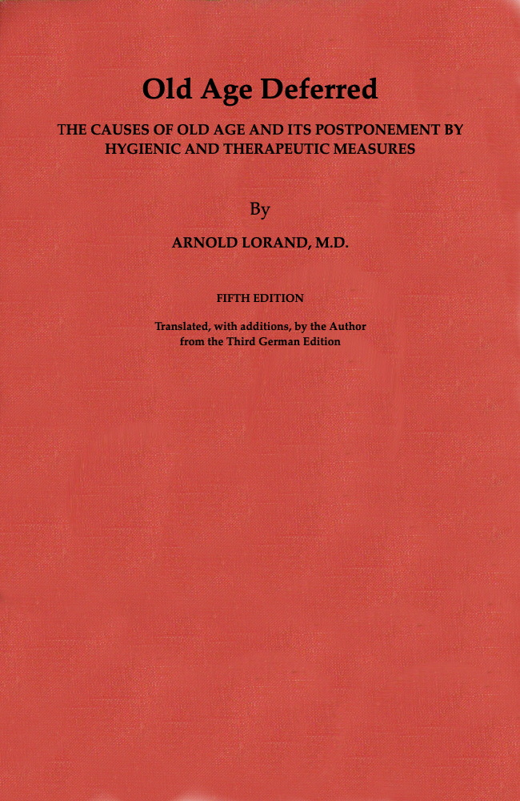

Title: Old Age Deferred
Author: Arnold Lorand
Release date: January 8, 2021 [eBook #64237]
Most recently updated: October 18, 2024
Language: English
Other information and formats: www.gutenberg.org/ebooks/64237
Credits: Turgut Dincer, Barry Abrahamsen, and the Online Distributed Proofreading Team at https://www.pgdp.net (This file was produced from images generously made available by The Internet Archive)

The cover image was created by the transcriber and is placed in the public domain.
REPRINTED: February, April, October, 1911; May, November, 1912; May, 1913; February, 1914; January, June, November, 1915; March, September, 1916; February 1917; February, June, September, 1920.
THE sudden and premature deaths in recent years of numerous prominent people, through arteriosclerosis, impressed me strongly that these persons might be still alive if they had been better informed of hygienic living. This gave me the idea of preparing a special section in this new edition, dealing with the prevention of this high mortality from arteriosclerosis and also with the prevention and treatment of high blood-pressure. At the same time, I am availing myself of this opportunity with an endeavor to augment, so far as possible, the general purpose of this book, which is to fight old age by all means that are at our disposal. I am also adding a few suggestions on the treatment of old looks.
Whoever takes up this book with the idea that the aged can be transformed into sprightly adolescents will be disappointed. A work based entirely on evidence of a scientific nature, as is the present volume, cannot have such an end in view, since it is altogether unattainable—at least with what knowledge is now available.
But while it is still impossible for us to create a young man out of an old one, it is quite within the bounds of possibility, as we shall endeavor to demonstrate herein, to prolong our term of youthfulness by ten or twenty years. In other words we need no longer grow old at forty or fifty; we may live to the age of ninety or one hundred years, instead of dying at sixty or seventy. All this can be brought about by the observance of certain hygienic measures, and by improving the functions of a certain few of the glandular structures in our body, provided incurable organic disorders have not already too gravely compromised one or more of our main organs.
In a communication to the Paris Biological Society, presented in our name by Dr. Gley, Professor of Physiology at the University of Paris, and in an address delivered before the Brussels Royal Society of Medical and Natural Sciences, we described old age as a chronic disease due to degeneration of the glands with internal secretions (hereinafter frequently referred to as the ductless glands), of the thyroid, the sexual glands, and the adrenals in particular. In this work we will show that this videgeneration is amenable to treatment, just as are chronic diseases in general.
The facts herein presented are illustrated and sustained by numerous experimental and clinical observations. Being desirous of proving the correctness of all our statements, we have had to enter, sometimes very fully, into the question of the ductless glands, in order to point out the marvelous influence they exert upon the various vital functions.
In view of the fact that the ductless glands have already been treated in a very elaborate and exhaustive manner by a well-known American author, Professor C. E. de M. Sajous, of Philadelphia, in his work on the “Internal Secretions” (2 volumes) which introduces many new thoughts and important discoveries, we have paid particular attention to the thyroid and sexual glands, which we have carefully studied anatomically, histologically, experimentally and clinically.
Not being a native of, or even resident in, either America or England, though possessed of a fair knowledge of the English language—having delivered addresses in several universities, and before numerous medical societies in the United States, Canada, England, and Scotland—it was very difficult for us to avoid idiomatic errors. We take great pleasure in acknowledging, therefore, our indebtedness to our friend, Col. Frank Haddan, of London, who, being impressed with the importance of our subject and its humanitarian aspect, kindly volunteered to look through our manuscript and correct most of our errors of style and grammar, thereby rendering us valuable assistance. Our thanks are also due to Dr. Leo Rosenthal, of New York, for the adjustment of many technical sentences.
Every one will admit that the subject treated in this work is not an easy one. It might be urged also that its presentation viihere is based on entirely novel lines, scientific literature on old age being very scarce.
Considering also that it has been necessary for us to take up questions beyond the ordinary sphere of a medical practitioner, sometimes of a philosophical, technical and physical nature, it is to be expected that certain imperfections will be found. But, whatever may be the opinion of the reader, he will not deny that none should fail to derive some benefit from the numerous hints we have given for the preservation of health and prolongation of life. If by reason of our advice we succeed in saving but a single human life from a premature grave, our aim will have been attained.
| PAGE | |
| On the Appearance of Symptoms of Old Age in Young Persons | 1 |
| On the Agencies which Govern our External Appearance and the Nutrition of the Tissues | 11 |
| On the Agencies which Govern Immunity Against Infections and Intoxications—The Origin of Fever | 21 |
| On the Agencies that Govern the Condition of the Nervous System and Mentality | 35 |
| On the Influence of the Sexual Glands upon Vitality and Long Life | 45 |
| On Heredity and Longevity | 55 |
| On Means which can Help us to Determine the Probable Duration of Life | 64 |
| On the Causation of Old Age | 90 |
| The Rational Prevention of Premature Old Age and the Treatment of Old Age | 114 |
| The Destruction and Elimination of Toxic Products from the Body and Hygienic Measures for the Improvement of these Functions | 134 |
| On the Destruction of Poisonous Products Through the Thyroid and Parathyroid Glands | 138 |
| Hygiene of the Thyroid Gland | 145 |
| The Destruction of Toxic Products by the Liver and the Improvement of its Protective Functions | 149 |
| The Hygiene of the Liver | 155 |
| On the Destruction of Toxic Products by the Adrenals | 159 |
| Hygiene of the Adrenals and of the Circulatory System—A Few Remarks on the Cause, Prevention, and Treatment of Arteriosclerosis | 164 |
| The Elimination of Toxic Products Through the Intestines and the Improvement of This Function | 170 |
| On the Prevention and Treatment of Habitual Constipation | 175 |
| Hygiene of the Intestines | 182 |
| Hygiene of the Intestines—A Few Remarks on the Cause and Prevention of Appendicitis | 192 |
| On the Elimination of Toxic Products Through the Kidneys | 197 |
| Hygiene of the Kidneys, and the Prevention of Renal Disease | 203 |
| On the Elimination of Toxic Products Through the Skin | 209 |
| The Hygiene of the Skin—Air Baths | 215 |
| On Rational Clothing | 219 |
| Improved Hygiene of the Skin and Kidneys through Bathing—Foot-baths | 231 |
| Hygiene of the Skin and Kidneys by Means of Perspiration | 237 |
| On Exercise, Swedish Gymnastics—Massage—Sport, and Walking and Running Exercise | 244 |
| A Few Remarks on Cold Feet—Their Cause and Treatment | 252 |
| On the Benefits of Sunlight | 255 |
| On the Advantages of an Open Air Life and of Breathing Exercises | 262 |
| On the Dangers of Living in Confined and Ill-Ventilated Quarters | 271 |
| Hygiene of Artificial Heating—the Dangers of Heat by Steam and a Few Hints about their Prevention | 275 |
| Food Hygiene—General Remarks | 280 |
| On Proteid Food, Animal Food, Meat, Fish, Eggs, Milk, etc. | 294 |
| On Carbohydrates and Fats, and the Great Advantages of Vegetables and Fruit | 301 |
| On the Advantages and Disadvantages of a Vegetarian Diet | 309 |
| On the Dangers of a Too Abundant Meat Diet—A Few Hints on the Dietetics of Meat | 317 |
| On the Great Advantages of Much Milk in the Diet for the Prevention and Treatment of Old Age | 325 |
| On Blood as an Article of Food Containing Iron and Animal Extracts—Sausages and Blood Puddings | 333 |
| Some Remarks on the Hygiene of Eating—How to Obtain an Appetite—On Mastication | 339 |
| On the Uses of Small Doses, and the Deleterious Action of Large Quantities of Alcohol | 347 |
| Some Remarks on the Causes and Prevention of the Alcohol Habit | 356 |
| On Other Stimulants—Tea, Coffee, Cocoa, Tobacco: Their Merits and Disadvantages | 362 |
| On Sleep, and Its Importance in Ridding the Body of Toxic Products | 368 |
| On the Causation of Sleep, Sleepiness, and Insomnia | 372 |
| Hygiene of Sleep—Prevention of Insomnia | 377 |
| The Treatment of Sleepiness and Insomnia | 383 |
| Hygiene of the Sexual Glands—the Dangers of Sexual Overactivity and of Total Sexual Abstinence | 389 |
| On Married Life as an Important Means for Prolonging Life | 400 |
| Hygiene of the Mind—Emotions and Worry as Causes of Old Age | 404 |
| Hygiene of the Mind—Religious Belief as a Means of Prolonging Life | 414 |
| Disease Considered as a Self-defence of Nature | 419 |
| Hygiene of the Mind—Advice to Brain Workers | 423 |
| On the Prevention of Premature Old Age, and the Treatment of Old Age, through Certain Drugs: Arsenic, Iron, and Iodides | 426 |
| On the Prevention of Premature Old Age and on the Treatment of Old Age by Animal Extracts | 434 |
| A Few Hints on Youthful Appearance | 449 |
| The “Twelve Commandments” for the Preservation of Youth, and the Attainment of a Green Old Age | 455 |
| Glossary | 459 |
| Index | 467 |
| Footnotes | 494 |
WE have just recently received the manuscript for the following introductory pages, which are intended as a message direct to the American people by Dr. Lorand. Their importance justifies a careful reading.
Although, in accordance with his duty as a citizen of Austria, Dr. Lorand has had to practically abandon his private practice, and devote his energies and his abilities to the service of his country in the time of trial, he has, nevertheless, been so situated as to have a pretty intimate knowledge of American affairs. He has been especially grieved and shocked to learn of so many sudden, untimely, and in his judgment, unnecessary deaths among prominent Americans since the great war began. Counting as he did, a great number of friends, not only among American physicians, but among American tourists, and knowing, as he does, so intimately, the peculiar physical characteristics of the high-grade American citizen, he is appalled at the wastage of valuable lives in a country teeming with prosperity and incidental home comforts.
The following introduction is designed as a warning to high-pressure Americans that by a little care and the exercise of reasonable judgment a large number of these premature deaths may be prevented.
Even if you were to read no further, the careful perusal of this introduction is well worth while, as it deals directly with the most important personal problems.
IN the previous editions of this book I have attributed premature old age to the degeneration of certain glands of our body, such as the thyroid gland and the ovaries. It is my intention now to show, that precocious old looks can often be caused by certain faulty habits; thus for instance by not drinking daily a sufficient amount of liquids. There are many women, who be it by an unjustified fear of obesity, or for other reasons, scarcely drink any liquids except possibly a cup of tea or coffee for breakfast. They neither drink with their meals nor much at other times. In such cases the tissues of the face will lack the necessary amount of fluids to which is due, mainly, the roundness and fullness of the cheeks which we so much admire in the fresh faces of young girls and children. In consequence the face will appear lean and haggard, the skin shrivelled and folded, and lines and wrinkles will appear already in the faces of young women. Besides, as the sufficient amount of fluids will be wanting, the toxic products formed daily in our bodies is not washed out through those natural channels, the kidneys and the intestines, but will take their way through the skin, and eruptions and pimples will develop, much to the damage of the complexion. An obstinate constipation will be another consequence, which, giving to the skin of the face a dirty yellow-brown hue, naturally contributes to produce an old appearance of the face. More and xviiimore, am I convinced that a generous purging, as for instance by certain mineral waters, is a most efficacious remedy to prevent old looks and at any rate to improve them. Drugs as a general rule are far less wholesome and effective for this purpose.
By not drinking sufficiently, such substances as, for example, uric acid, cannot be washed out and their retention will cause a serious damage to health, facilitating the origin of arteriosclerosis, which very frequently is associated with such conditions. Persons suffering from uric acid present frequently an older aspect than corresponds to their years and the falling out of the hair, or the appearance of gray hair, in early years, is often the case with them.
It is erroneous to think that water produces fatness. If this were the case we would advise the poor people to drink plenty of water that costs nothing, to get fat. It is not water that makes fat, but water that is taken with the meals, together with copious food, thus aiding the absorption and assimilation of the same. To avoid obesity after rich food it is therefore advisable not to drink with the meals, but at other times. Copious food must be avoided, especially fat, starchy food and sweets. A diet consisting of plenty of meat, fats, and above all milk and butter and sweets, is the surest road to obesity. They must be avoided and the preference given to a diet of little meat, green vegetables and fruits. For further details of such a diet I must refer to the chapter, “The Treatment of Obesity,” in my book, “Health and Longevity through Rational Diet,” publishers, F. A. Davis Co., Philadelphia. I must emphasize the necessity xixof great prudence in reducing cures, for, as I know from my practice in Carlsbad, there is scarcely anything, unless a serious disease, that can produce so rapidly the appearance of age in young persons and the more in riper years, than imprudent and reckless obesity cures, causing wrinkles and the hanging and sunken cheeks.
I must certainly blame the eagerness of many ladies to transform their fresh, round and elastic forms into lean and skinny ones, thinking that thus they will look younger. No; I am certain that many young women look considerably older after these atrocious and imprudent diet-cures. Dieting is more permissible with older persons, if not exceeding certain limits; but young women and girls I would strongly advise to eat hearty meals of mixed food, for, as I also show in my above-mentioned book on Diet, we are introducing in our systems very valuable substances, which are in reality useful remedies with certain articles of food. Most important among these are fresh milk (uncooked), numerous fruits, certain kinds of animal food, which all contain considerable quantities of important mineral salts, indispensable to our well-being, and to the freshness and elasticity of mind and body. Besides these salts and valuable ferments these articles of food contain also a most important substance, called vitamines, which, as its name shows, conveys a kind of vitality to the tissues. It is indispensable to the well-being of the nervous system and also of the muscles, and thus also to the most important muscle of the body, the heart. The vitamines are largely represented in the outer coverings xxof the rice, of the corn, and also in eggs, potatoes, etc. In fine white bread there is scarcely any, but there is far more in the brown bread containing all parts of the grain. Milk also contains them, but mainly fresh, uncooked milk; strong cooking destroys the vitamines in the plants and the animal food, and besides such cooking, as I show in the chapter on “Rational Cooking” of my book on Rational Diet, also destroys other valuable ferments of great importance for our body. It is certain that our looks, the beauty and size of the human body and of animals, and even the color of the feathers of the birds, depend very much, as I show in the same book, on the wise selection of the food which we eat. Not only in young growing persons, but also in the adult and even in aged persons.
Of the different faulty habits there is probably none that would produce so rapidly the premature appearance of old age in young women as smoking.
If excessive smoking is deleterious to man, in the woman moderate smoking may cause serious alterations. We must not forget that the tissues of women are more delicate and tender than those of men, and especially young women can in this respect be put in the same class with children. The woman is not so well protected against the influence of poisons such as nicotine as the man, for in her some of those glands whose duty is to destroy such poisons, as, for instance, the thyroid, are kept in much greater activity on account of the frequent changes in the ovaries xxiwith each menstruation, pregnancy, the climacteric, etc., and with their consequent repercussion upon the thyroid gland, with which the ovaries are closely related. If to this comes such extra work by the daily introduction of poisonous substances, although even in small quantities, the gland may the more readily lose its efficiency. After my own observations which I made upon my patients in Carlsbad coming from eastern countries in Europe, I know that smoking women present a much older aspect, if they have indulged in this habit to a large extent and for years. They soon fade, the cheeks are pale, as a rule, and sunk in. The general nutrition suffers, there is loss of appetite, frequently a catarrh of the stomach and very often pains in the stomach; indeed there is often neurasthenia with sleeplessness. With more excessive smoking there will appear all the symptoms which are common to the chronic nicotine poisoning of men.
I am not prepared to maintain that, after the dinner, a cigarette or sometimes two are dangerous to adult women. The aspect of a lady smoking a cigarette after dinner surely cannot be called attractive, and it certainly does hurt the æsthetic feelings of a normal man to see a woman smoking one big cigar after another. It looks too masculine in a woman, as I have observed in a ladies’ club in Copenhagen, where most of the women sat with big cigars in their mouths. Such habits take away all charm even from the finest looking women, and as a normal woman is attracted by all that is manly in man and is repelled by an effeminate man, we men dislike masculine xxiiwomen, just as we dislike a woman having a mustache and whiskers. If I were a married man, I know I would not like to kiss my wife if she strongly smelled of tobacco, just as it would be repulsive to kiss a man; the smell of strong tobacco creating involuntarily the sensation of associating with a man. Until recently women have presented far less frequently the symptoms of arteriosclerosis than men, excessive smoking being rare with them. But as the effects of smoking are more deleterious to them, naturally arteriosclerosis will arise much sooner in them, and as through the hardening of the arteries the nutrition of the tissues suffer, the nourishing blood not rendering them in sufficient amount—necessarily such persons will begin to look old at a comparatively early period of life.
In the previous editions of this book I have shown that it is possible to improve old looks through hygienic measures, the use of the extracts of certain glands, like the thyroid and ovaries and also by the employment of certain drugs like arsenic and the preparations of iodine. I would like to add now a few cosmetic hints against old looks some of which I had already published a few years ago, as a collaborator to the handbook of cosmetics of the dermatologist, Prof. M. Joseph, of Berlin (M. Joseph, Handbuch der Kosmetik, Leipzig, 1912).
In persons of certain age and also in younger persons with a fading expression of the face and beginning xxiiiwrinkles I have found, as efficacious in producing an immediate improvement, the gentle application to the face of any kind of fats of pure quality and the rubbing thereon of some reliable preparation of white powder. The powder should afterward be wiped off very carefully. It should not be put on in thick layers, for then, as after the use of pastes and paints in general, lines may be created where they are not yet present and lines already existing may be hollowed out to veritable wrinkles. No powder should be visible on the face. The object is to add to faces with dry skin the best variety of fat with reference to its animal origin so as to make up for the wanting secretion of the sebaceous glands and to replace, if possible to a certain extent, the fat wanting in the tissues. All kinds of massaging of the skin should be avoided; only a gentle rubbing is allowed. In fact, I consider massage as deleterious to the face, except it is done by a qualified masseur who is an expert in this kind of massage with a correct anatomical knowledge of the muscles of the face and of the direction they are running. Special care must be taken that the massage of the face should never be done with fats, as this would promote the formation of lines and wrinkles and even of deep ones, if done unskillfully. The massage of the face should consist in gentle strokings of the face with the end of the fingers and always following the direction of the muscles.
The powders used should be of the best possible quality. Before all they should not contain any metallic salts and especially not lead. Unhappily some of the very best powders are prepared with it, as xxivlead gives to the powders a specially white and attractive aspect. But I should like to bring home to the ladies the fact, that these powders are the most apt, especially in persons who perspire easily, to create lines and wrinkles and to give to young faces in a short time an old appearance.
The best powders I consider those which consist of fine rice-powder, amylum, or talcum, and they produce the best effect, if they are not visible on the face. I have often seen the finest complexions ruined by the frequent usage of thick powders, pastes, and paints. The above-mentioned procedure of rubbing in fats and thereupon some of the finest hygienic powders should only be done every other day. To give to fading faces a certain tonicity I recommend the use of alcohol, diluted with three times as much water, which, in the same manner as diluted vinegar, will also improve the complexion. I have found that a very strongly diluted solution of the extract of the suprarenal glands has also a marked effect in toning up the muscles of the face, if rubbed in gently. Only small quantities of the diluted solution should be used for this purpose.
As gray hairs create, even in persons still young, an elderly appearance, it might appear to their advantage to color them. It is best to use such coloring only in regions of small extent rather than in a general way. As the most inoffensive coloring of gray hair among dark hair, I would consider the preparations containing nitrate of silver. Those which contain lead or copper should be condemned.
xxvAfter all the best weapon against old looks is a hygienic life by which we can best avoid the development of a condition which already at an early age gives an old aspect to the tissues, i.e., of arteriosclerosis, or hardening of the arteries.
For most arteriosclerotic persons there can be only little hope to live up to a green old age, to become 80 or 90 years old or even to pass on to still higher years. But there are exceptions not so very seldom, and it gives comfort to my patients suffering from this disease and apprehension of the future, when I tell them that nearly all the brothers and sisters of both my parents suffered from this disease for many years, which did not prevent them from attaining ages varying between 80 and 96 years and more. My father ever after his forty-fifth year suffered from attacks of asthma. As a child I was often awakened through his nightly asthmas, but in spite of many symptoms of arteriosclerosis he lived to a great age.
One of my aunts is still living, not very far from 100 years old, although suffering in a high degree from arteriosclerosis for many years. Such protracted cases generally happen in families of longevity and they are only due to, as a rule, regular habits, although it is true that my father was a great smoker in his younger years and even in his last years enjoyed one or two light cigars daily.
Such long survivals constitute, however, a great exception in arteriosclerosis, and it usually happens xxvionly in cases where there are no symptoms of that most dreaded form of arteriosclerosis, i.e., the sclerosis of the coronary arteries of the heart. These arteries are probably the most important ones of our body, for they provide the muscles of the heart with the nourishing blood without which they could not do their work. It is the sclerosis—the hardening—of these arteries which, causing an obstacle to the passage of the blood, is the most frequent cause of rapid death in arteriosclerosis, often in comparatively young people. It is a sad fact, that such a condition, as so often is the case with arteriosclerosis, can exist without exhibiting any marked symptoms of it being present. A very frequent symptom of sclerosis of the coronary arteries is attacks of genuine angina pectoris (stenocardia),—to be distinguished from the pseudo-attacks of angina pectoris of neurasthenic persons. In such attacks there are strong radiating pains in the heart region, and a feeling of great anxiety, of utter annihilation, and of instantaneous death; and indeed not so seldom such attacks may terminate in death. These attacks may be considered as a warning of nature that such persons stand on the verge of a precipice and thus urging them to the greatest precautions to avoid anything that may bring about such an attack. From my own observations, rapidly fatal attacks of angina pectoris in such cases of arteriosclerosis happen frequently after a heavy dinner. The stomach being distended, the diaphragm is pushed upward and thus impeding the movements of the heart, which has not sufficient space for the play of its muscles. Such a condition may also be often caused xxviiby the ingestion of dishes causing flatulence. In consequence heavy dinners and flatulent foodstuffs must carefully be avoided, and I declare any person who presents attacks of genuine angina pectoris as a determined suicide if he continues to indulge in them. There should be taken 5 small meals a day, so as to avoid the keen appetite which results in overloading the stomach. Foodstuffs causing flatulence such as cabbage, fried potatoes, etc., should, above all, be avoided. Food that is rich in cellulose (wood fiber) is strictly forbidden in such cases. For further details on food producing flatulence I must refer to my above-mentioned diet book, which contains a special chapter on the best food in flatulency and also a list on the amount of cellulose (wood fiber) in different articles of food. For the treatment by drugs refer to the chapter of this book on arteriosclerosis. Besides moderate habits, including the use of very light cigars in the smallest possible quantity (if smoking cannot be given up entirely), overexcitement of any kind, especially sexual, as also overexertions (hill climbing), must strictly be avoided. Transgression of these commands, especially hill climbing, may sometimes mean instantaneous death in advanced cases. Persons suffering from coronary sclerosis with attacks of angina pectoris will do very well to give up their positions if heads of companies with great responsibilities and heavy burdens resting upon their shoulders, as any stormy shareholder meeting may prove fatal to them. As already said it is a sad fact, that persons may suffer from coronary sclerosis without even knowing it, as there are also thousands of xxviiivictims of arteriosclerosis who are utterly ignorant of their condition, as this disease often presents no marked symptoms. I must deplore that most stupid habit of seeking for medical aid only when the ravages of disease have gone so far that reparation is impossible. How often do people forget the wise English proverb: “An ounce of prevention is worth a pound of cure.” Just the same as children are sent every three months to the dentist to see if any of the teeth present may be decaying in order to save them, people already before feeling ill ought to at least once a year be examined thoroughly by a doctor to see if anything is wrong in the human machinery. I feel certain that in such a case many thousands of persons, instead of lying in their dark, cold graves below the earth, could still tread the soil enjoying sunshine and the scent of the flowers. There is no doubt that arteriosclerosis and especially coronary sclerosis could be avoided in many cases, through such an examination, for the onset of arteriosclerosis is generally insidious and slow, especially if it develops in the younger years, when due to syphilis, and thus, if in time recognized, it could be cured. But even without the syphilitic infection, cases in young persons are more frequent than we think.
It is to the present terrible war, raging and destroying so many lives, that we owe the observation made by many of the military doctors that a goodly number of young soldiers present symptoms of arteriosclerosis, many of them having never suffered from syphilis. Often it is but a slight elevation of the xxixblood-pressure, but which, if persistent, may indicate a beginning arteriosclerosis.
Apoplexy is the consequence of a condition, which may be considered as the highest degree of a scale whose lowest step is often a slight elevation of the blood-pressure, when in a younger person. Thus, if before the 45-70 year period the blood-pressure is somewhat elevated and remains so for a certain length of time, we must, if there are no special reasons for this elevation, for instance, kidney trouble, be suspicious of arteriosclerosis. It is true, that there are cases of this disease without a high blood-pressure, but if we find, besides considerably elevated blood-pressure, traces of albumin in the urine and also renal elements, a swelled liver and an accentuated second sound at the aorta, there cannot be much doubt that we have probably to do with arteriosclerosis. A high blood-pressure can most frequently be caused through difficulties in the circulation of the kidneys; therefore in each such case the urine must carefully be examined. By improving the circulation through the kidneys we can also influence favorably the blood-pressure. Certain drugs producing a great flow of urine have indeed given good results in high blood-pressure, like, for instance, diuretin in some cases. I am, however, averse to the use of drugs if there are more natural remedies, and so I would advise the use of a quite harmless one like the juice of lemons. It is very diuretic and, as I have observed, there are also xxxcases of chronic inflammatory conditions of the kidneys which are very favorably influenced through a treatment by lemons, in the same way as also gout and the uric acid ailments in general. I have found that with lemon-juice given in mineral water we obtain still better results if a little glycerin is added. Besides lemon-juice the juice of certain other fruits like grape-fruit, oranges, and grapes can also give good results. Besides a good diuresis, a thorough cleaning of the intestines is desirable, high blood-pressure often being caused by habitual constipation with stagnation of the intestinal contents and subsequent flatulence. I must repeat with emphasis again that daily bowel movements do not prove at all a clean intestine following a good evacuation, and I am sure that the good results obtained in the treatment of arteriosclerosis in certain spas, like Carlsbad, Marienbad, and Kissingen, are not so much due to the action of these waters upon arteriosclerosis, but simply to their eminently purging action. Neither of these springs has a direct effect upon arteriosclerosis, but besides the dietetic advantages of the installation of these spas, the waters from their springs evacuate thoroughly the intestines, ridding them of toxic products most deleterious to the arteries, and at the same time facilitating in a powerful way the circulation of the blood through the abdomen with its most wholesome repercussion upon the whole general circulation. A thorough intestinal evacuation can relieve a high blood-pressure nearly the same way as an extensive venesection. A good perspiration can also give good effects; however, to produce it there would be necessary xxxito take hot-water or air bath, which may prove most deleterious. There are means, however, to avoid this for, as I know it from my own experiences, it is possible to have a profuse perspiration without the sensation of great heat and a red head through application of electric light bath with blue light. In this blue light bath, studying its action, I have myself obtained, after about twenty minutes’ time, the desired effect without the depressive feeling afterward as so often is the case with the usual steam bath. These baths are the more indicated in cases of a nervous heart.
There are also different drugs, which may in many cases prove useful: thus, a French preparation, prepared from the viscus kinds called guipsin, then diuretin prepared by different concerns. Very valuable are the nitrate preparations, especially in cases with coronary sclerosis, also vasotonin, etc. But from my own experiences I give in many cases the preference to preparations of iodine. But I have found that iodine should not be given in too small doses and that they must also be taken for a certain length of time. Besides iodine I have found, as most efficacious in cases with very high blood-pressure, the application of electric currents after the system of D’Arsonval (arsonvalization). In each case of several patients I have seen the dropping of the blood-pressure to the normal. As soon as we find a high blood-pressure in a patient we must do our best to diminish it, for if we allow it to become persistent the high blood-pressure will produce a loss of the elasticity of the walls of the blood-vessels, there will arise pathological alterations xxxiiand arteriosclerosis may easily establish itself. Aided by persistent, very high blood-pressure the degeneration of the walls of the blood-vessels may in the long run go so far that a destruction of their tissues can arise. Then by any sudden great elevation of the blood-pressure it may come to a rupture of the vessel, to apoplexy. If such a thing happens to a blood-vessel of the brain, then such vital parts of the brain may be destroyed that sudden death will follow. But in many cases, happily, other less important parts are affected, without involving death, and then follows lameness of those regions of the body which are provided with nerves coming or going to these parts. Sclerosis and degeneration of arteries happen most frequently in parts of the body where the circulation is the most copious by hyperfunction of these parts; thus in the legs of country people walking and climbing much (Romberg).
Mental exertions produce a great afflux of blood toward the brain each time, with deep thinking more blood arrives to the brain and it is therefore not surprising, as I show in my book on “Human Intellect and its Improvement through Hygienic and Therapeutic Measures.” Such an appalling number of prominent brain workers, men of science and of business, are suffering from hardening of the brain-vessels and are struck by apoplexy of the brain, sometimes even at early ages, before or shortly after their fiftieth year. Indeed a vast majority of the great men of science and business are thus afflicted, as I show in this book, apoplexy being very frequent amongst them. It is reckless overwork, unhygienic methods xxxiiiof mental work that may with surety produce a hardening of the arteries of the brain. It would exceed the short space allowed to this chapter if I should enter here upon the hygienics of mental work, which I am treating in several chapters of my book on the “Human Intellect,” but it will suffice here to emphasize the necessity of interpolating resting days between days of mental overexertion. It would be too much for me to demand that a successful man of business retire entirely from his affairs, but what he could do, especially if the head of the business, is to leave the city on Saturday for the country, with the custom of walking about in the fresh air, returning Monday with fresh strength; and, further, to avoid anything that produces high blood-pressure, hill climbing, hot or cold drinks, strong coffee, tea, and above all tobacco, which is one of the very surest means to increase the blood-pressure. There is no condition where smoking can produce such fatal effects as in arteriosclerosis, and especially if the arteries of the brain, as so often in brain workers, are affected. In inveterate smokers, perhaps a few de-nicotinized cigarettes or cigars may be allowed. In place of regular coffee or tea, coffee without caffeine and the Brazilian tea, maté, whose properties I have described in my book on Rational Diet, may be allowed, but also not in indiscriminate quantities. If too much of them is taken, they may prove not less harmful, therefore also caffeine-free coffee and maté should be taken with wise moderation. Against the troublesome symptoms of arteriosclerosis of the brain like dizziness, loss of memory, difficulty of reasoning, headaches, xxxivfeeling of pressure upon the brain, etc., I have seen, as I described in special chapters of my book “The Human Intellect,” very good results through the combined use of preparations of iodine and extracts of the thyroid gland. The dizziness disappeared and also the headaches, the memory got much better and also the reasoning power. These effects were, however, obtained in cases not too advanced. As a preventive against arteriosclerosis of the brain and as a remedy against headaches and feeling of pressure in the head I am recommending snuffing in my book on Intellect, showing that through its use the circulation of the congested brain is much relieved. In confirmed cases of arteriosclerosis of the brain, however, snuffing should be avoided, for it may have fatal results. Excessive snuffing is also deleterious to healthy men, especially when tobacco is used. To prevent apoplexy the hygienic advice we have given in the beginning of this chapter to avoid high blood-pressure must strictly be followed. I should like to add to them hot foot-baths for about five minutes, to which mustard powder could be added. There should also be a special care for a wise diet, avoiding constipation; of meat only very little should be taken, fish should be preferred, and of meat only chicken and veal allowed. The best food against arteriosclerosis and heart trouble consists of a milk and egg diet, with vegetables and fruit, to which fish and cheese may be added. As a most valuable food for overwork of the heart and the general circulation, I recommend honey, whose merits I show in next chapter.
There is one muscle in our body that never takes a rest. It never ceases to work, either day or night, and the better for us, for if it should stop it would mean the end of life. This muscle is the heart. Of course we must feed well such a hard-working organ, and have special care to select such a food that is the most genial for it and can the best promote its activity. As the heart is a muscle we must give the food that is best indicated for muscular activity. Observations have shown that the muscles of our body are doing their work at the expense of a certain sweet stuff (glycogen) contained in them. Experiments also prove this, for it has been found that the heart of animals removed from the body will survive for days the death of their owner if kept in a salt solution, with grape- or fruit-sugar added. The addition of certain mineral salts like lime and carbonate of sodium is also able to prolong the survival of the cut-out heart of dead animals. So there can be no doubt that the same elements must also prove useful to the heart of the living, as is indeed the case.
As I have shown in my diet book the ingestion of sweets promotes muscular activity and fatigues from bodily exertion are better borne. And this also holds good for our most important muscle the heart. I have seen in my heart patients very good results through the addition of a generous amount of sweets to their ordinary diet. On the other hand, I have, as a rule, observed a weak activity of the heart with my patients xxxviin Carlsbad suffering from the graver forms of diabetes who were kept on a diet strictly excluding sweets and starchy food in general. Indeed a weak heart is most frequent in severe diabetes, as in such a condition the sugar ingested cannot be utilized and entirely eliminated in the urine. For this reason I consider it unwise to place severe cases of diabetes on a strict diet and I recommend to them the use of fruit sugar (levulose), which is often well utilized and especially in a case of diabetes with heart-failure I like to do this. Such persons should never be strongly dieted. As the best food for the heart I recommend honey on the base of the above-mentioned observations. Honey is easily digested and assimilated; it is the best sweet food, as it does not cause flatulence and can even prevent it, to a certain extent promoting the activity of the bowels. It can easily be added to the 5 meals a day I recommend in cases of arteriosclerosis and of weak heart. As it would be unwise to leave such a hard-working organ as the heart without any food over the long hours of the night, I recommend heart patients to take before going to bed a glass of water with honey and lemon-juice in it and also to take it when awaking at night (honey dissolves in warm water).
Before and after muscular exertion honey should be given in a generous dose; no coachman would allow his horses to run for hours without giving them food at the resting intervals. Only man is so unreasonable as to undertake heavy exertions often with an empty stomach. No wonder that so many sportsmen get a weak heart simply for just such a reason. xxxviiThe use of sugar cannot well replace honey. In the same amount sugar is chemically irritating to the stomach. At any rate the preference should be given to cane-sugar; sugar of beet-root is chemically pure, although through modern civilization it is, unhappily, deprived of the important mineral salts the beet-root contains, and it has also been shown that through the use of chemically pure sugar the body loses in lime, which is eliminated in larger quantities. If honey is alone taken in larger dose it is better borne if water is drunk afterward. Besides honey I like to recommend grapes, as containing much sugar and also valuable mineral salts like lime. If grape cures as conducted, for instance, in Meran (Tyrol) give good results in arteriosclerosis and heart cases, the results I think could be explained by the above observations. We can best introduce lime in our bodies through milk, cheese, eggs, fruits, and vegetables. The latter, especially fruits, are also rich in sodium and potassium, which are also valuable elements for the activity of the heart. I would especially insist upon the fact that the heart-muscle is rich in lime, as it contains about seven times as much of it as the other muscles. If we introduce in our system fresh, uncooked milk and eggs we also introduce a very valuable substance of which we have spoken before, vitamines. I believe that these substances must be very valuable for the activity of the heart because in all the diseased conditions, the deficiency diseases, arising, we have found, a want of this substance (Funck). Besides, in nervous troubles a weakness of the heart and muscles is common. If in one of this class of diseases, like xxxviiiberiberi, even in the latent cases, strong muscular exertions are made, then cardiac attacks will appear with great weakness of the heart. According to Funck, chief of the laboratory of the London Cancer Research Institute, muscular exertions are apt to make these diseases break out at once in cases, until then latent, without any symptoms. He also impresses upon the fact that when vitamines are wanting in the food, it is the vitamine stores of the muscles which are attacked first (Funck, “Die Vitamine,” Wiesbaden, 1914). But as the best proof for my opinion that food containing vitamines is indisplaceable for the heart-muscle I mention the fact, determined by Cooper and quoted by Funck, Journal of Hygienics, 1913, that the heart-muscle is very rich in vitamines. Beriberi and other deficiency diseases are the highest degree of a condition that is due to the entire want of vitamines in the blood. But no doubt there may be lower degrees due to the insufficient amount of vitamines, in which may simply show symptoms of neurasthenia with nervous heart troubles, as an expression of the craving of our system after these substances. Milk containing vitamines, and also containing a considerable amount of sugar and lime, it must be considered as the most valuable food for the heart. But only fresh milk, for by boiling it the vitamines are lost. Boiling above 100° C, and especially in large apparatus under high pressure like in the autoclave used in many of the large institutions and some of the big hotels, destroys the vitamines. I have already in my diet book, in the chapter on rational cooking, insisted upon the dangers of overcooking our food. xxxixAnother rich source of vitamines, the bran of wheat and rye, is taken from us through another invention of our so-called modern civilization, the machine milling, simply for technical reasons. Forty or fifty years ago there was no cases of beriberi in the far east; the natives ate rice with its wholesome outer layers; then modern civilization introduced machine mills instead of the old hand mills, robbing the rice of the silver fleece rich in vitamines, and beriberi appeared. It is true that the bran presents obstacles to our intestinal juices, but there exist certain methods by which it can be ground to a fine flour and all its valuable parts assimilated and introduced in our body. We have quoted here several instances of the fateful influence of our modern progress upon our health. What is the good of the great progress of medicine if, on the other hand, our modern progress through reckless inventions separates us from Mother Nature and, inducing us to unnatural habits and ways, exposes us to disease and untimely death. No wonder, then, if arteriosclerosis and old age appear in relatively young people.
As a general rule the first symptoms of old age do not appear before the fortieth or forty-fifth year. There are, however, many persons who, much earlier, occasionally even before thirty, show some of the typical symptoms of senility: corpulence, gray hair, wrinkles in the face, falling out of the hair and loss of teeth, etc., for example. The gums also are retracted from the teeth, which consequently appear greatly lengthened; later on the teeth become loosened and fall out. This then causes the jaw bones to atrophy, when the face becomes sunken, and the individual appears many years older. The hair loses its original color and becomes dry and gray, especially on the temples. The appearance of bald spots surrounded by gray hair increases the aged appearance of the face. On examination, the pulse of such persons may exhibit a high tension, the temporal arteries may be tortuous, and the skin found to be dry. A sensation of cold in the extremities is especially frequent. There is, as a rule, a tendency to constipation. The mental faculties are also altered; the memory weakens, and the mind is often depressed. Neurasthenia or hysteria become frequent in such persons, while impotence in men and menstrual disorders in women develop. The urine may be found to contain traces of albumin and occasionally a few hyaline casts. The presence of these, according to Professor Senator,[1] indicates a degeneration of the convoluted tubules of the kidneys, and thus the loss of important elements of the chief excretory organ of the human body.
On examination of the state of nutrition in these persons, 2it may often be found to be below the normal. It is certain that such a condition in young people is abnormal, and, therefore, a pathological condition.
The question now arises: In which category of diseases is this condition to be classified?
In typical cases of this class there is a diminution of metabolism, i.e., of the assimilation and conversion of food into energy. We shall have to think of the possibility of alterations in those organs which govern the process of metabolism.
These organs are the glands with internal secretion (especially the thyroid gland, testicles, ovaries, the adrenals and pituitary body), according to recent researches, among which those of the author of this book may be mentioned. He was among the first to show the fact that glands with internal secretion control all the processes of oxidation,[2] and that the diseases of metabolism: diabetes, obesity, gout, etc., are the direct consequence of alterations in these important glands. This is further sustained by the labors of Sajous[3] who was the first to describe the mechanism through which these organs govern oxidation and metabolism, and to explain how they produce the disorders just enumerated.
The most important part herein is taken by the thyroid gland, whose increased activity is followed by an augmentation of the processes of oxidation in the body, whereas its degeneration is followed by a diminution of these processes. When the thyroid gland is degenerated entirely, as in myxœdema, there is also a great diminution of all oxidation processes. There are also cases where the thyroid is only partially altered by the increase of connective tissue, cases called partial myxœdema, and in these cases, accordingly, the diminution of the 3processes of oxidation does not take place to the same extent as in complete myxœdema.
When we thus find symptoms of old age in young persons, together with, in the most typical cases, a state of decreased oxidation, we have to determine whether or not we are dealing with a degeneration of the thyroid gland. And, indeed, such a condition is before us, for the symptoms we have just mentioned are characteristic of myxœdema.
If complete myxœdema, the highest degree of this condition, is rare, on the other hand the incomplete forms, where the thyroid is only partially replaced by connective tissue, are fairly common.
This is shown by the fact that, after the fortieth or forty-fifth year, the thyroid shows an increased amount of connective tissue, and thus cannot be so active as a thyroid with more secreting elements and less connective tissue.
We have thus reasons to suppose that the persons above mentioned, who only exhibit some but not all of the symptoms of old age, symptoms which are also found as typical in myxœdema, are suffering from a partial myxœdema or hypothyroidia. And it does not necessarily follow that in all such cases the processes of nutrition will be diminished, as is the rule in typical cases of myxœdema.
The resemblance between senility and myxœdema was first pointed out in 1890 by Sir Victor Horsley, one of the foremost authors on myxœdema, and afterward by Vermehren,[4] Ewald,[5] of Berlin, and the author. Horsley ascribed old age to degeneration of the thyroid gland, and we have shown (in a communication to the Paris Biological Society, presented by Dr. Gley, Professor of Physiology at the University of Paris, December 4, 1904) that, besides the thyroid, there are also different other ductless glands whose degeneration produces old age. These are the sexual glands, the pituitary body, and the adrenals.
4It is a well-known fact that extirpation of the testicles and of the ovaries is followed by obesity and other symptoms of old age; in the same way cessation of the menstruation with degeneration of the ovaries at the climacteric is followed by all the symptoms of old age and certain nervous disturbances, as, for instance, troublesome flushings, which occur here, as after castration. Eunuchs, as a rule, look much older than their age. The Oriental eunuchs, and also the members of a religious caste in Russia, the Skopse, who castrate themselves through fanaticism, because of their parchment-like face covered with innumerable wrinkles, appear aged beyond their years.
Degeneration of the pituitary body is also followed by premature senility. This is shown by the fact that acromegalic persons, as a rule, look much older than their age. This also holds good in the case of myxœdematous patients. We have had opportunity to see, quite recently, the skeleton of a female acromegalic patient of Dr. G. A. Gibson in Edinburgh, and found typical indications of old age, an enormous augmentation of connective tissue and vascularization of the bones, with great porosity.
It must be remembered that all the glands with internal secretions, according to Pineles,[6] Sajous,[7] and the researches of the author, stand in very close relation to one another. Thus, degeneration of the thyroid is followed by that of the pituitary body. This was shown by the experiments of Hofmeister,[8] Stieda,[9] Rogowitsch,[10] Benda, and many others. Degeneration of the pituitary is followed by a similar lesion in the thyroid.
Arteriosclerosis is a condition very frequently met with in elderly persons, and, according to recent researches, this disease is caused by a toxic agent with subsequent degeneration of the walls of the blood-vessels. Such a change can be produced 5artificially, as shown by Josué,[11] by injecting adrenal extract into rabbits.
That the ductless glands are closely related holds good also for the thyroid and adrenals. This relation, however, is an antagonistic one. The adrenals increase the blood-pressure (Oliver and Schäfer[12]), and the thyroid diminishes it. It is an interesting fact, demonstrated by Professor Eiselsberg[13] in Vienna, that extirpation of the thyroid gland of dogs results in atheroma of the aorta. In connection with this we also mention the clinical fact, that all those agencies which are harmful to the thyroid gland, as syphilis, abundant meat food (Breisacher,[14], Blum,[15] Lorand[16]), alcohol (Hertoghe and de Quervain[17]), and tobacco (Hertoghe), are also those which are commonly considered to be the causes of high tension and arteriosclerosis. Infectious diseases are also brought in etiological relationship with arteriosclerosis, and it has been shown by a series of authors, that in infectious diseases the thyroid undergoes important alterations which may involve its degeneration (Roger and Garnier, Crispino, Torri, Bayon, de Quervain).
Infectious diseases also induce changes in the adrenals, as shown by many authors (see Chapter III).
Various toxic products, such as lead, alcohol, and tobacco, which are considered causes of arteriosclerosis, are also able to produce hypertrophy of the adrenals.
And, if we consider those agencies which are commonly considered the causes of premature senility, we notice the singular fact that they are also considered to be especially harmful to the various glands with internal secretion, particularly the thyroid and sexual glands.
6Among these agencies may be mentioned infectious diseases, sexual excesses, frequent pregnancies, strong emotions continued for a long time, such as grief and sorrow, chronic intoxications (by poisonous products produced in the body, or introduced from without). We will show later, in an exhaustive way, the action of these agencies upon the glands with internal secretion.
Between the thyroid gland and the ovaries, a close relationship also exists. Thus, invariably, when we find the thyroid altered, we can also see changes in the ovaries. Consequently in myxœdema and Graves’s disease we find, with great frequency, disturbances in the functions of the ovaries, e.g., cessation of the menses, or disorders of menstruation. In such conditions the ovaries have often been found to be atrophied. We also frequently find such disturbances in acromegaly, where they may either be due to changes in the pituitary, associated with an altered condition of the ovaries, or they may be ascribed directly to changes in the thyroid which, as we have shown in a communication to the International Congress in Madrid, 1903, is very often altered in acromegaly. If microscopically examined it is probably found changed in every case. Indeed, we have attributed acromegaly to the primary changes in the thyroid which lead only secondarily to those in the pituitary body.
In diabetes, which disease, according to our investigations, is often caused by changes in the thyroid,[18] and subsequently in the pancreas, or vice versâ, amenorrhea or impotency is frequently met with.
On the other hand, changes in the ovaries are also, as a rule, followed by changes in the thyroid gland, as may be seen in puberty, menstruation, pregnancy, lactation, and the climacteric. We will enlarge upon this later, in greater detail, but we will only briefly mention here that we may frequently see a swelling of the thyroid gland as an expression of increased 7activity during these conditions. We can also see this in diseases of the ovaries, and, as certain authors show, even sexual excesses can produce an altered state of the thyroid. This was known to the ancient Hebrews, for they used to examine the neck of the newly-married bride the morning following the wedding night to see if the neck had become larger by the swelling of the thyroid gland.
Thus we can readily understand that, frequently, swelling of the thyroid is the consequence of overwork of this organ, and, as in the case of great sexual excesses or frequent pregnancies, may lead to exhaustion of the gland with its grave clinical consequences.
Indeed it has been shown by the earliest authors on myxœdema, that this disease is very frequently caused by too frequent pregnancies, especially if connected with prolonged lactation (Ord, Morvan, Combe). This will also explain why women more frequently show the symptoms of precocious senility than men, whose sexual glands are not put to such constant activity and change as are the female sexual glands. Similarly women, after frequent pregnancies, especially with prolonged lactation, or women with diseases of the ovaries, and also those addicted to habitual sexual excess, such as prostitutes, very soon become fat and fade before their time. Thus we may see symptoms of precocious senility in such women even before the end of the third decade, especially if they have begun to lead an immoral life at an early age. Even young girls may look much older through the abuse of their ovaries from sexual excesses. Their breasts become large and pendulous, and their faces bloated and relaxed. Menstruation may likewise be made to appear in early childhood by sexual abuses, as Pauline Tarnowska[19] has found through the examination in St. Petersburg of 150 very young prostitutes.
We shall show in the next chapter that obesity, which has nothing to do with overfeeding, can be caused by like agencies.
8That mental emotions, especially care, grief, sorrow, etc., powerfully influence the different ductless glands, and are able to produce degeneration of the thyroid, adrenals, and sexual glands, etc., is shown by conclusive proofs in the chapter on the “Hygienics of the Mind.”
Infectious diseases are especially liable to cause change in the kidneys, and in various infectious diseases, sometimes even in tonsillitis, we may find an inflamed condition of these organs.
The kidneys can also be damaged by the passage of various toxic products, which are either produced in the body (auto-intoxication) or introduced with the food (condiments), or as stimulants—e.g., alcohol, strong tea, etc. All these toxic agents are capable of doing damage to the kidneys just as to the thyroid gland. We shall treat later on, in separate chapters, of the action of these stimulants upon the ductless glands.
The condition termed auto-intoxication may be induced by many different factors, among which may be mentioned the products of intestinal putrefaction (Senator[20]) and the waste products from the processes of oxidation, such as uric acid, for example. Animal food is more apt to produce intestinal putrefaction than any of the various other foodstuffs.
There are three important organs which protect us against such a condition of auto-intoxication; these are the kidneys, liver, and thyroid, and possibly also the parathyroids.
The kidneys act by promptly eliminating such toxic products in the urine. They are glands with internal secretion, as shown by the experiments of Brown-Séquard,[21] E. Meyer,[22] and clinical observations of Senator[23] and H. Strauss.
The liver, which, according to Gilbert, H. Strauss,[24] and others, is also a gland with an internal secretion, is strongly antagonistic to intestinal poisons. It destroys toxic products 9brought to it from the intestine through the portal vein, and several authors, Professor Adami, Sir Lauder Brunton and Bokenham,[25] show that it is also able to eliminate such products with the bile after previous transformation. We will treat of these protective functions of the liver in a separate chapter, together with the hygienics of this important organ; but we will just mention here that the liver plays a great rôle in the transformation of the toxic end-products of albuminous food into harmless substances, such as urea.
The third important toxin-destroying organ is the thyroid gland, which, as shown by the experiments of Dr. Leo Breisacher,[26] of Detroit, formerly assistant to Professor Munk, of Berlin, and of Dr. F. Blum,[27] of Frankfort, as well as Dr. Chalmers Watson,[28] of Edinburgh, destroys those poisonous substances produced by the decomposition of proteid food. Moreover, Sajous has shown that this is a prominent function of the pituitary body, the thyroid and the adrenals, acting jointly as the “adrenal system.”
It will be evident that these various glands can only do their work to perfection so long as their parenchymatous tissue is not replaced to any large extent by connective tissue. Of these glands the thyroid takes the foremost rank, as it governs the other glands. As we have shown in a communication to the French Congress of Medicine, in Liège, 1905, the thyroid influences the liver, and in a paper before the Paris Biological Society, February 25, 1907, we have shown that the thyroid also influences the kidneys. In fact, the liver and kidneys are closely allied to the thyroid, and when this organ is degenerated, the other two glands follow suit.
Accordingly we may expect that, when the thyroid undergoes a process of degeneration, such an event may also take place 10in these two protective organs, as we have shown in our above-mentioned two communications. In consequence of the diminished activity of these organs the development of a condition of auto-intoxication may be facilitated. Patients showing symptoms of old age in early years, also show to a greater or less extent symptoms of such a condition, as do myxœdematous persons.
Meat food especially, if taken in large quantity, is a certain producer of uric acid, and it is an interesting fact, shown by several authors and also by the writer,[29] that by thyroid medication we can augment the elimination of uric acid, and also prevent its formation in large quantity, both in the case of uric acid formed in the body or introduced from without by the food.
This fact stands in relation to the powerful influence exercised by the ductless glands, and especially the thyroid, upon the process of oxidation; and, as we are anxious to prove the assertions we here advance, we shall show in the next chapter how these wonderful glands influence the processes of nutrition in the tissues, and at the same time the external appearance. We have already mentioned a form of obesity that has nothing to do with overfeeding, as one of the symptoms of precocious old age, and in the next chapter we will review in detail the agencies which govern this condition.
As a general rule infants of both sexes look very much alike, so much so, indeed, that sometimes it is only possible, upon close inspection, to determine the difference in sex. This, however, can only be so for a certain period until certain changes take place in the ductless glands, especially in the sexual glands and the thyroid.
The latter contains but very little, if any, colloid substance in infancy, and the colloid increases only gradually until it is present in abundance at the time of puberty, when also the changes in the sexual glands reach a climax coincident with the ripening of the follicles in the ovaries and their rupture at a menstrual period. This latter process is, as we have mentioned before, under the influence of the thyroid. Puberty and menstruation do not take place, as a rule, in persons with a degenerated thyroid gland.
With the onset of puberty there is seen, also, a change in the external appearance of the individual and the attributes of virility—e.g., moustache, hair in the pubic region, alteration of the voice, etc., appear. In the female the development of the breast, hair on the pubis, etc., occurs. At the same time the features attain the peculiar characteristic which distinguishes the male face from the female, even without the aid of a moustache.
In those persons in whom puberty has not occurred at the usual age (fourteen to sixteen years in our climate) the attributes of sex are absent. In these cases the male looks very much like the female. A similar phenomenon may be seen in women after castration and the climacteric, when they may even show 12a tendency to develop a moustache and hair on their face in places, corresponding to the male beard.
This we can also observe in women whose ovaries have been altered by disease or by sexual excesses.
These attributes of sex are also called external sexual characteristics, and they are the direct result of the internal secretion of the sexual glands. They only develop through the presence of such a secretion, and this is easily demonstrated by the fact that after castration of the infant, they do not appear at all. Hence, if we see grown-up men with no trace of a moustache it may indicate an undeveloped condition of the testicles. Again, we castrate a young cock, he will not grow a comb and spurs, and other cocks will pass by, too proud to fight with a degenerate deprived of its male attributes. If we now take the extirpated testicle of such cock and graft it under his skin, the other cocks will commence to fight with him, for his comb and spurs will develop as in other normal cocks.
That the whole external appearance of a castrated animal or man is changed, is also demonstrated by important changes in the skeleton and size of such animals or persons.
As Poncet[30] has shown, the extremities of a castrated rabbit become abnormally long, and it is a well-known fact that eunuchs have abnormally long arms and legs. This also occurs in cases of infantilism, which, as we know, is due to a non-development of the sexual glands. Moreover, the thyroid of such individuals is also found to be in a pathological condition, as was shown by Hertoghe.
Men who have been castrated before puberty or whose testicles are undeveloped, present such an external appearance. They have no moustache, as above mentioned; their hair is dry and brittle and remains short; their faces are pale, and of a yellowish hue; their hands are cold and reddish blue. Often the skin of the face is like parchment and has many wrinkles. Their intelligence 13is often diminished, as we will show later on, and they are usually anæmic.
Women with undeveloped ovaries have flat breasts and hips; their faces are often irregular in structure, and their jaws are often prominent; their gums are shrunken and their teeth are long and soon fall out. Some cases may show a colossal obesity, but in the partial forms of ovarian insufficiency they may be remarkably thin. They also are, as a rule, anæmic or chlorotic.
In some parts of the Orient, as in India, there are female eunuchs, such as Roberts has seen on the way from Delhi to Bombay. Such eunuchs had no bosom; the pubic hair was absent, and their buttocks were like those of men; but the rest of the body was stouter. Of course these women had been castrated during their childhood.
If we make a Roentgen-ray examination of the skeleton of a person castrated in childhood, we shall find that the epiphysial cartilages remain unossified for a long time after puberty.
It is a very interesting fact that, both after castration and in myxœdema, the same persistence of the epiphysial cartilages and retardation of ossification have been observed by means of the Roentgen-rays: by Hertoghe in 1896; Springer and Serbanesco in 1897; Gasne and Laude in 1898; Legry and Renault in 1902; Jeandelize in 1903. The same thing has also been observed by Hertoghe in “Infantilism of the Type of Lorraine.”
The influence of the thyroid upon the skeleton and size of the body is easily shown by simple observations.
Children of parents with cachectic diseases like chronic tuberculosis, syphilis, alcoholism, etc., in which the thyroid gland is, as a rule, found degenerated (Gamier,[31] Hertoghe[32]), are (as shown by Prof. Perrando[33] and Garnier) born with a congenital atrophy of the thyroid. Just as young animals with an extirpated 14thyroid, so these children will not grow, and we know that cretins (degeneration of the thyroid) remain as a rule dwarfs all their life long. We can now produce in such persons certain and very curious changes by feeding them with thyroid extract, and we can see them, as Hertoghe has shown, grow inch by inch in a short period; their mental faculties improving at the same time in an incredible manner.
The influence of the thyroid upon the skeleton is also shown by the fact, established by Gauthier,[34] that in a fracture with but little tendency to the formation of a callus, union takes place much more quickly after administration of thyroid extract.
In Graves’s disease, with exaggeration of the thyroid activity, there is, on the other hand, an increased elimination of the most important constituent of the skeletal tissues: calcium carbonate, and this occurs also in acromegaly and diabetes, in which conditions the thyroid is very frequently altered (Lorand[35]).
Osteomalacia, which is associated with an enormous elimination of calcium carbonate is, as we at present consider, due to an exaggerated ovarian activity (Fehling), and can be favorably influenced by castration or, by what would be more reasonable, thyroid treatment.
No less powerful than that of the thyroid is the influence of the pituitary body upon the skeleton, especially upon the hands, feet, and skull. And if we wish to demonstrate how much the ductless glands influence the looks of a person, it is sufficient to point out the great changes that take place in the face of a patient with acromegaly. This disease makes such persons look very much as “Punch” is depicted.
The skin and complexion of persons suffering from changes in the ductless glands are also very different from normal. Thus Addison’s disease, due, as well known, to a degeneration of the adrenals, makes a white man look more or less like an Indian, and there is a pigmented skin also in persons affected by the
15partial form of that rare disease. We can also easily show that changes in the thyroid are followed by changes in the condition of the skin. Thus, with thyroid degenerations, as in myxœdema, the skin is pale with a yellowish tinge. In Graves’s disease pigmentation of the skin can often be observed, and not rarely cutaneous eruptions.
In affections of the sexual organs in woman similar conditions of the skin can occur. Such persons often present wrinkles at a very early age, and certainly look older than their years. Infants suffering from congenital degeneration of the thyroid gland often look withered and present a face as wrinkled as a sexagenarian. We see this also in congenital syphilis (atrophy of the thyroid).
The hair also very often shows alterations in diseases of the thyroid, or ovaries. Thus, in myxœdema there is an atrophy of the follicles of the hair, which falls out, even in the case of the eye-brows.
It is particularly interesting that, by thyroid medication, a new growth of hair has been observed in places where it had fallen out years previously, as we have observed, with other authors, in several cases after thyroid medication. And, very strange to say, this newly-grown hair was quite dark while the hair that had previously been in its place was gray in color. It has been authentically stated by several authorities that old persons of sixty or seventy have acquired black hair under thyroid treatment.
On the other hand, in much younger persons, perhaps under thirty, who are suffering from complete or partial degeneration of the thyroid gland, the hair very often turns gray; so much so that Hertoghe considers this to be one of the typical symptoms of such a condition.
The falling out of hair, or its turning gray, after acute infectious diseases or after grief and sorrow, may have some connection with the well-known changes in the ductless glands, especially in the thyroid, in these conditions. This is made quite 16clear by Sajous’s demonstration that these glands collectively govern the activity of general oxidation, that is to say the vital process itself.
As we have previously mentioned, a moustache or whiskers may grow in women suffering from disease of the ovaries, just as after castration or the climacteric. It is also very interesting that a premature grayness often occurs in cases of insanity, and can be attributed to the frequent changes in the thyroid and sexual glands in these conditions.
The nutrition of the skin is entirely under the influence of the thyroid. After extirpation or degeneration of the thyroid, there occurs atrophy of the sebaceous and sudorific glands.
In myxœdema the skin is dry and never perspires. On the contrary, in Graves’s disease, or after thyroid medication in large doses, there is abundant perspiration.
Deposits of tartar are common symptoms in all forms of thyroid degeneration. Retraction of the gum follows and the teeth loosen and fall out. This is also a common symptom in diabetes, but here only in advanced cases. In such cases there is, as we[36] have shown, an exhaustion of the thyroid gland, which develops as a consequence of the previous hyperactivity of the thyroid gland in the early stages of the disease. As a rule the teeth of a diabetic only fall out in the severer form of the disease, generally after acetone has begun to show itself in the urine.
Important changes take place in the subcutaneous tissue after extirpation of the thyroid gland. In such cases there is either augmentation of connective tissue or of fat. Thus, in the case of a young bull, whose history we followed, there has been an increase of thirty pounds of fat within a few months after extirpation of the thyroid. The same thing happened in the case of a young horse, whose thyroid was also extirpated.
There are, however, still more facts which show the great influence of the thyroid upon the metabolism of fat. Thus we 17know very well that by thyroid medication we are able to reduce fat considerably. This is due to the action of the thyroid which, as shown by many authors, increases the process of oxidation. In Graves’s disease these processes are augmented. In the opposite condition (myxœdema) they are diminished. By giving thyroid extract we are able to augment, positively, the processes of oxidation in the tissues, as shown by Professor Magnus-Levy,[37] of Berlin, and many others.
As we have shown in our previous researches, there is an abundant formation of fat in the early cases of degeneration of the thyroid gland, which sometimes progresses to a colossal obesity, which obesity has nothing to do with overfeeding. Such individuals have, as a rule, but poor appetites, and eat very little. Therefore, in a communication to the French Congress of Internal Medicine in Paris, 1904, we differentiated two kinds of obesity: 1. Exogenous obesity—i.e., arising by agencies coming from without by the food we introduce into our body. 2. Endogenous obesity, having its origin within our economy, and depending on changes in certain glands which govern the processes of oxidation—e.g., thyroid sexual glands, pituitary body. This second form is independent of our feeding. As we have shown, this latter can be produced by any of those agencies which are harmful to the ductless glands, especially the thyroid and sexual glands, as, for example, infectious diseases, frequent pregnancies, certain toxic products (alcohol), sexual excesses, climateric. All these conditions may have the effect of producing obesity, which can be explained by an exhaustion of the thyroid and ovaries following a pre-existing hyperactivity.
The influence of the ovaries upon the production of obesity can be demonstrated by the sequels of castration, and also by the fact that women, after one or more, especially several pregnancies, 18or after sexual excesses, may become very fat. In such women this obesity may be only partial and limited (as we have shown in a recent communication to the International Congress of Medicine in Lisbon, 1906) to certain parts—e.g., the mammary glands or hips.
There can be no doubt that the sexual glands influence the nutrition of the tissues in a powerful manner, and this has also been shown, experimentally, by the researches of two Berlin experimenters, Professors Loewy and P. I. Richter,[38] performed in the physiological institution of Professor Zunz. These savants have shown that after castration there is a diminution of oxidation. By giving extracts of dogs’ testicles to castrated male dogs, they were able to augment the processes of oxidation. These processes, however, were still more increased after the administration of female extracts to these castrated male dogs. The administration of ovarian extracts to the spayed bitch has, of course, given still better results. Thus there was here an increase of 67.7 per cent. after castration, and 37.6 per cent. of the original value. The increase of the oxidation in male dogs was 44.5 per cent. after castration, by the treatment with ovarian extracts, and 24.8 per cent. above the normal value. If the results after feeding with male extracts were not so successful, it must be attributed to the circumstance that we are at present unable to produce testicular extracts of the same efficacy as ovarian extracts.
The action of the pituitary body upon metabolism has been shown by Narbuth, who found a diminution of oxidation after degeneration of the pituitary body, and an increase after medication with extracts of the same organ. This fact is also shown clinically by cases of obesity after degeneration of the pituitary body in acromegaly, and by the interesting fact (shown by a great number of authorities and recently by Fröhlich,[39] Berger,[40] 19and Erdheim[41]) that cases of pituitary tumor may be met with, associated with obesity, and without any of the symptoms of acromegaly. Especially interesting is the case of Madelung[42] showing a colossal obesity in a girl aged 9 years, after a gunshot injury of the pituitary body. This observation sustains, and is clearly explained by, Sajous[43] who showed that the posterior or neural lobe of the pituitary body contained a nerve center which governed the functional activity of the thyroid, and that the secretion of the latter insured the catabolism of fats by increasing their vulnerability to oxidation.
The external appearance of such cases of obesity, which we have described before the French Congress of Medicine in 1904, and the London Pathological Society, February 21, 1905, as endogenous obesity, is also clinically different from the appearance of those caused by overfeeding. As we have shown, persons addicted to rich food, with little exercise, are often red in the face, and are plethoric; they easily become overheated and perspire freely. They seldom complain of constipation. On the other hand persons suffering from endogenous obesity generally look pale, always complain of cold and dry skin, and perspire very seldom, if at all. As a rule they are also very constipated.
There is still another ductless gland which influences metabolism in a powerful way. This is the pancreas which, by its three enzymes, brings about the assimilation of the proteid carbohydrate and fatty materials. To these may also be added its production of labferment. By its internal secretion, which is probably produced by the islands of Langerhans, it aids in the oxidation of the sugar, introduced into our alimentary canal in the shape of starchy food, or contained in the carbohydrated radicle of the albuminous molecules, as demonstrated by Pavy. The entire degeneration of the pancreas, especially of the part containing the islands of Langerhans, produces a disease that is, 20as a rule, characterized by loss of weight and the production of emaciation often to an astonishing degree—i.e., diabetes.
Persons suffering from the milder form of this disease often present a rosy and healthy appearance, and as we have pointed out previously, often look younger than their age. We believe that, as we shall show further on, this fact is not without relation to the condition of the thyroid in this disease. We have shown by researches made in the laboratory of Professor Minkowski, then of the Augusta Hospital in Cologne, that in diabetes the thyroid contains large, sometimes enormous, quantities of colloid substance, thus indicating a condition of thyroid hyperactivity.
As we have mentioned in the first chapter, corpulence is often one of the first symptoms of old age, and we have also insisted upon the fact that this can be brought about by infectious diseases (e.g., typhoid, pneumonia, scarlet fever, etc.). As we have also mentioned the fact, in the first chapter, that old age can be brought about by an infectious disease which acts upon the ductless glands, especially the thyroid, we believe it will be necessary to enter a little more in detail into this subject, to which we will devote the next chapter. We will enlarge upon the fact that our immunity against infectious diseases is entirely dependent on the proper working order of certain ductless glands.
From the moment of our birth we are constantly exposed to the incessant attacks of innumerable bacteria and to the effects of a large amount of poisonous material formed within our body or introduced from without, and if we survive this ceaseless battle it is due to the powerful weapon we possess in the internal secretion of the ductless glands, especially of the thyroid gland. That this gland possesses very energetic antitoxic properties can be shown by the fact that when it is extirpated animals or persons very readily acquire infectious diseases of all sorts. Thus, the late Professor Charrin,[44] of Paris, showed several years ago how readily dogs that have lost their thyroid succumb to all possible infections. Professor W. S. Greenfield,[45] of Edinburgh, has found that persons suffering from myxœdema (athyroidia) very often die from tuberculosis, and Professor Pel,[46] of Amsterdam, found a great frequency of tuberculosis in the families of myxœdematous persons. This coincides with the conclusions of Prof. G. R. Murray,[47] Professor Lanz, and ourself, that the properties of the thyroid can be inherited. Sajous has shown, moreover, that the pituitary, the adrenals and the thyroid constituted the autoprotective mechanism of the body against disease, a fact not only sustained by the above evidence, but also by a vast number of additional facts.
As we showed at the last Congress of Tuberculosis in Paris, 221905, tuberculosis is especially frequent as a sequel to any process deleterious to the thyroid gland, as after the puerperium, especially with prolongated lactation; after sexual excesses, as there is a relation between the sexual glands and the thyroid; after various infectious diseases; after rapid growth in puberty, due to hyperactivity of the thyroid which influences the growth of the body; after severe diabetes due to exhaustion of the thyroid; and after previous hyperactivity in chronic alcoholism due to the action of alcohol upon the thyroid. On the other hand, all those agencies which excite thyroid activity may be a preventive against tuberculosis, such as raw meat and milk. It has been shown that milk contains the internal secretion of the thyroid.
The thyroid protects us against poisons of different origin, such as the products of decomposition of protein food. This fact is shown by the experiments of Dr. Leo Breisacher, of Detroit,[48] formerly assistant of the late Professor Munk, of Berlin, and from those of Dr. Blum,[49] of Frankfort. The experimental results of Dr. Chalmers Watson,[50] showing alteration of the thyroid in certain animals after an exclusive diet of raw meat, and those of Dr. D. Forsyth[51] concerning the pituitary body in some animals, may be correlated with this fact. As is well known, the thyroid and pituitary body stand in very close relationship. Galeotti and Lindemann,[52] in 1897, have also shown that the products of decomposition of meat produce an increase of the colloid substance of the thyroid.
The antitoxic properties of the thyroid against different products is also shown by the observations of Lanz[53] and Walter Edmunds,[54] who have found that animals without thyroid resist 23narcosis badly; and, as we have shown in a communication to the Paris Biological Society,[55] chloroform, like alcohol, produces a condition of hyperactivity in the thyroid gland, which results also in an excited mental condition. The observation that cases of Graves’s disease and of severe diabetes cannot stand narcosis may be related to this fact.
It has been shown recently by Hunt[56] that the thyroid protects us against poisons like acetonitril, and that iodine acts through the thyroid. Garnier,[57] of Paris, has found that certain chemical products, such as iodine, produce great alterations in the thyroid. As is well known, cases of Graves’s disease (hyperthyroidia) have been observed after iodine treatment. That the thyroid fulfils a protective rôle against infectious diseases may already be considered proved by the fact that, as Roger and Garnier,[58] Crispin,[59] Torre,[60] Bayon,[61] of Würzburg; de Quervain, and others have found, the thyroid is, as a rule, altered in infectious diseases. As Roger and Garnier have shown by a series of investigations confirmed by the above-named authors, the thyroid shows in acute infectious diseases with fever an increased activity with enlargement of the follicles, which are filled with a large quantity of colloid substance which may even enter into the adjacent lymphatic spaces. However, this hyperactivity of the thyroid gland may be followed by its exhaustion, and thus after a certain duration of high fever there may be no colloid substance at all in the folliculi.
It is only logical to suppose that with anatomo-pathological alterations of the thyroid, indicating a condition of hyperactivity, there must be corresponding clinical symptoms and that these 24must necessarily be similar to those found in another condition of hyperactivity of the thyroid gland—i.e., in Graves’s disease, the condition of hyperthyroidia. And, indeed, such must be the case, for, as we shall try to show, fever and Graves’s disease have similar clinical symptoms. Thus their most typical symptom is the same: tachycardia or increased frequency of the pulse, without which no case of Graves’s disease should be diagnosed. There is a sensation of heat in most of the cases of Graves’s disease, and the temperature sometimes reaches a dangerous degree in fully developed cases of this disorder. Thirst, frequent in fever, is also a frequent symptom in Graves’s disease (polydipsia in 14 out of 59 cases recorded by Albert Kocher[62]), and can also be produced by thyroid feeding (Lanz,[63] Georgiewski,[64] and others). After a certain duration of fever further symptoms of an increased activity of the thyroid appear, such as abundant perspiration—a typical feature of Graves’s disease. Vaso-dilatation and excessive perspiration can also be produced by thyroid feeding. The latter symptom of fever is a device by which nature tries to eliminate toxic products, and accordingly there generally follows upon it a fall in the temperature and an amelioration of the symptoms of fever. The diarrhœa which we find in some infectious diseases, like that of typhoid fever, trypanosomiasis, etc., is also a typical symptom in Graves’s disease. When the fever subsides there appears another typical symptom of this condition: polyuria. To complete this analogy we may mention toxic decomposition of proteins, diminution in the body weight, great muscular weakness, and increased elimination of urea and uric acid as typical symptoms of both conditions. As in Graves’s disease, there is also in fever an augmentation of the processes of oxidation. Glycosuria is frequent in both conditions, and acetonuria may occur in fever and also 25in Graves’s disease. Glycosuria and diabetes in consequence of infectious diseases are, as we have shown in a paper read before the London Pathological Society,[65] probably due to the increased activity of the thyroid, and their disappearance, occasionally after a high fever, may be ascribed to the exhaustion of the thyroid after a previous hyperactivity. We know that a condition of Graves’s disease may be followed by a myxœdematous condition in which, as we have shown previously, glycosuria is very rare. In the few hitherto published cases there was no complete myxœdema.
Both in Graves’s disease and fever there is an augmentation of the processes of oxidation. After convalescence, however, oxidation may be diminished, and this explains, as we have shown at the French Congress of Medicine in 1904,[66] why obesity so frequently occurs after infectious diseases on the basis of degenerative changes of the thyroid, which governs oxidation; during the course of infectious disease with fever increased activity of the thyroid and loss of weight occur, and these are followed by exhaustion of thyroid activity and obesity.
The conditions of delirium and maniacal exaltation in cases of high fever are analogous to the condition of mental exaltation that may occur in Graves’s disease. According to the late Moebius,[67] in cases of Graves’s disease there are sometimes symptoms like those of alcoholic intoxication due to the toxins of the thyroid. We believe that the mental exaltation in chloroform narcosis and alcoholic intoxication stands in relation with the action of these drugs upon the thyroid. That alcohol acts upon the thyroid has been shown by de Quervain, Hertoghe,[68] and others. Sajous in his work on the “Internal Secretions,” urges 26that the thyroid is not directly excited by toxins and other poisons which produce fever, but that these toxics excite primarily the thyroid center (or better the adreno-thyroid center, for he holds that the adrenals are also governed by this center) thus increasing the secretory activity of the gland. The correctness of this view is proved by the fact that, as shown by Sawandowski,[69] section of the basal tissues, and, therefore, between the pituitary and the bulb, prevented the production of fever, due to putrid materials, and also the influence of antipyretics, antipyrin, for instance.
Cutaneous eruptions may occur in fever or in Graves’s disease. In the same way as in many skin diseases they may be considered as the expression of an elimination of toxic products through the skin.
All the above symptoms of fever may be considered as expression of the efforts of nature to defend herself by eliminating toxic products. All toxic products which are the causes of infection act upon the thyroid gland, this organ, through increased activity, produces symptoms such as we see in Graves’s disease. That these symptoms, especially abundant perspiration, polyuria, and diarrhœa, typical in some infectious diseases, may be considered as the direct consequence of thyroid activity, can best be shown by the fact that the thyroid gland governs the functions of the skin, intestines, and kidneys.
That the symptoms of fever may be considered as due to increased thyroid activity is also shown by the fact that nearly all such symptoms may be produced by thyroid preparations. We have personally taken for experimental purposes, during ten months, thyroid tablets and experienced the sensation of heat, flushings, and abundant perspiration. It is interesting to note that all kinds of wounds and contusions we got during the time we took these tablets, healed with surprising rapidity with fine granulations far better than previously; on the other hand, we very frequently suffered from tonsillitis and acne eruptions.
27Symptoms similar to fever have also been produced in animals by thyroid feeding; thus, very often elevation of the frequency of the pulse from 100 to 140-160 beats (Lanz), and from 150 to 200 beats (Georgiewski), while Ballet and Enriquez[70] produced regular fever in their animals; Easterbrook[71] also produced “some pyrexia” in his animals and an increase of pulse-rate of about 40 a minute. As Dr. Tanberg, former assistant of the Physiological Institute in Christiania, told us, he has produced an increase of the temperature of two and a half degrees in animals, whose thyroid he had extirpated, after giving very large quantities of thyroid gland.
It is of great interest to the question at issue that the remedies which we employ to fight fever should also produce symptoms like the thyroid does when it is in increased activity. Thus salicylates produce a vaso-dilatation and abundant perspiration, and afterward diminution of the temperature. We have, ourself, taken salicylates or acetonitril preparation and felt the sensation of heat and afterward perspiration. When we take a hot air or steam bath for cold or gouty pains we produce first, great heat, tachycardia, and then abundant perspiration, and the typical symptoms of fever or increased thyroid activity.
We know that certain drugs, as found by Garnier, have an exciting action upon the thyroid, such as iodine, and what is especially important, pilocarpine. The great sudorific action of this drug may stand in some relation to its effect upon the thyroid. It is permissible to suppose that the different drugs which antagonize fever do so by acting first upon the thyroid gland and exciting its increased activity to fight infection. But if we gave too much of these we might exhaust the activity of the gland in the same way as Garnier found an exhaustion of the colloid of the thyroid after too much iodine. This shows that we should not give antipyretics in too large doses. We should excite thyroid activity but not overdo it.
28That the thyroid is able to protect us against infectious diseases can be best shown by the fact that it exercises a great influence upon phagocytosis. According to the findings of Fassin, the alexins disappear from the blood after the extirpation of the thyroid gland; and, according to Sir Almroth Wright, the production of opsonins is dependent upon internal secretions. Hence, it is of the greatest value to us that Stepanoff[72], and Marbé have proved by experiments conducted in the Pasteur Institute of Paris that the opsonins disappear after the extirpation of the thyroid gland but increase after thyroid treatment, these experiments thus proving the correctness of our clinical observations on the rôle of the thyroid gland as an organ for protection against infections, as published in The Lancet two and one-half years ago. Sajous, who was first (1907) to point out that the thyroid secretion was the agent which Wright termed “opsonin,” is also shown to have been right by the investigations of Fassin, Stepanoff and Marbé, thus proving further the intimate relationship between the thyroid and our immunizing functions.
Fever can be produced with similar symptoms by toxic products of different origin, as from small elements of the vegetable kingdom like bacteria, certain plants, and even fruits, as is shown by the urticaria which follows in some persons after eating strawberries. Certain minute elements of the animal kingdom have a similar power, such as protozoa like trypanosomes, and we may also instance certain kinds of animal food like oysters in certain persons, the poison of snakes, and certain insects like tarantulas and scorpions; also certain minerals like arsenic and phosphorus can produce fever. Besides these poisons coming from without, fever with similar symptoms can also be produced by poisons formed within our body by the hyperactivity of a gland—the thyroid. When so many different poisons produce the same result it lies near to suppose that they do this by means of the same agency, which, according to 29the aforesaid observations, is very probably a thyroid hyperactivity. The modus operandi of all these agents is well studied in Sajous’s work, to which the reader is referred.
As is well known, a condition of hyperactivity of the thyroid may be followed by its exhaustion, and thus Graves’s disease may often be followed by myxœdema, i.e., athyroidia. In the same way the hyperactivity of the thyroid gland in infectious diseases may also be followed by its exhaustion and a myxœdematous condition. Even complete myxœdema most frequently appears after a previous infectious disease—a fact recognized by the earliest English authors on this disease. Accordingly, it is not surprising if an infectious disease like trypanosomiasis is followed by a condition like sleeping sickness, which, as we have shown at the German Congress for Internal Medicine in 1905, presents all the clinical symptoms of, and identical anatomico-pathological alterations of the central nervous system noted in, myxœdema. On the other hand, trypanosomiasis presents all the typical symptoms of Graves’s disease. In syphilis also, after the fever with eruptions in the secondary stage, in which we not infrequently see, especially in women, a swelling of the thyroid, we find in the tertiary stage many symptoms of a condition of myxœdema or hypothyroidia, and with the iodine treatment we add to the blood the main element of the thyroid gland. Iodine is also especially active, if not given in too large doses, in exciting thyroid activity, and sometimes it even provokes Graves’s disease.
Persons of healthy constitution with a good working thyroid may get the sensation of heat and perspiration spontaneously after a cold, or gouty pains, even without salicylates, and feel better afterward, whereas persons with a deficient thyroid have difficulty in producing the symptoms of fever. Recently we observed a young man, aged 22 years, with symptoms of hypothyroidia as described by Hertoghe, who had follicular tonsillitis. He presented none of the symptoms of fever, but it took him ten days to get over it and he felt very weak afterward. 30There was this summer an epidemic of typhoid fever in the lunatic asylum of Colorno, near Pavia. We have it from Dr. Gassenghi, of the University of Pavia, that half of the patients died; but it is very interesting to note that there was no fever. This may be explained by the fact that many cases of insanity and idiocy stand in etiological relation to alterations of the thyroid gland, and may get better after the hyperactivity of the thyroid through fever. Indeed, by some authors,—e.g. Wagner—an improvement has been observed to occur in insanity by producing fever through injections with tuberculin. We feel sorry not to be able to enter more fully into this interesting subject, but we may briefly mention that, as we have stated in the Neurological Society of New York (April 2, 1906), we have observed several cases of dementia præcox and melancholia with alterations of the thyroid and sexual glands in each case. Alcoholics suffering from pneumonia seldom get high fever, but often die in a short time. Alcohol in large quantities not only causes degenerative changes in the heart, but also in the thyroid. And we should not forget that there exist very close relations between the activity of these two organs.
It seems to follow from these observations that persons with a good sound thyroid have a better chance in fighting infections and intoxications than persons with a degenerated thyroid. In persons with an active thyroid, an increased activity of the gland, and thus a better functioning of the eliminative organs which are governed by it, can take place more easily than in persons with a degenerated thyroid, and, in consequence, with a dry skin, constipated bowels, and lazy kidneys. Some hints may be derived from these observations in the interest of prophylaxis and prognosis, and also for the purposes of life insurance.
It seems to us that the conclusion is not unjustified, that fever is a beneficial process of our organism which is produced by an increased activity of the thyroid gland as a reaction against toxic products and poisons in general. The symptoms of fever are the expression of this increased activity, and they 31are directed toward the elimination of noxious elements. It would be unreasonable to oppose this spontaneous healing tendency of nature by fighting these salutary symptoms, unless there be hyperpyrexia. Fever, as probably disease in general, serves the ends of nature in the interest of our conservation. In addition to the thyroid, the other ductless glands protect us from infections and intoxications. Thus, the pituitary body which Casselli,[73] Guerrini,[74] Torri, and many others found, as a rule, altered through infectious diseases. Torri noticed a hyperplasia of the chromophile cells of the pituitary body, and disappearance of the colloid from the follicles in the majority of cases of pneumonia, typhoid fever, tuberculosis, diphtheria, and other infectious diseases. Garnier also noted changes in this gland in chronic tuberculosis. Thaon,[75] in his recent thesis, also found changes in the pituitary body in many cases of various sorts of infectious disease, and, what is most interesting, also in intoxications from intestinal origin. We must conclude with Sajous (1903) that the pituitary body reacts to the effects of infections and intoxications and that these anatomo-pathological alterations of the pituitary also provoke clinical symptoms. Renon[76] and Delille have drawn attention to the fact that the decrease of the blood-pressure, and increase in the number of pulsations, in fever, as also the other symptoms of this condition, such as insomnia, heat, perspiration, etc., are due to the alteration of the pituitary body. When this is active and healthy it augments blood-pressure, according to Oliver and Schäfer,[77] Cyon, Livon, Garnier, Thaon, Hallion, and Carrion, etc. At the same time the pulse is diminished, but when this gland is degenerated the pressure naturally falls and the pulsation goes up.
32It is also very interesting that Renon, with his assistants, Delille and Azam,[78] were able to increase blood-pressure in numerous cases of infectious diseases and diminish the pulse, and also produce a marked improvement in the feverish condition through the administration of extracts of the pituitary body.
We must insist on the fact that the thyroid and the pituitary body are antagonistic; the thyroid diminishes, the pituitary augments, blood-pressure. The same antagonistic relations exist also between the thyroid and adrenals, as already mentioned.
The adrenals play an important rôle also in the defense of the organism against infections and intoxications, as we will point out in a separate chapter. We will only recall here that already (1903) Sajous[79] has insisted upon the important rôle of the adrenals in the production of fever.
The co-operation of the sexual glands in protecting the body from infectious disease can be shown by the fact found by Professor Cornil,[80] of Paris, that in infectious diseases, such, for instance, as typhoid fever, there is frequently sudden menstruation, with abundant metrorrhagia, the autopsy often showing hypertrophy of the corpus luteum.
Metschnikoff[81] and Matschinski found, after injections of the bacilli of tetanus, or of diphtheria, the greatest number of them in the ovaries, or in the testicles, of the animals. It is also of great interest that Lingard[82] found that the subcutaneous injection of testicular extracts into cattle induces a resistance to infection from bovine plague, against which other cattle can also be rendered immune through the serum of the treated animals—which seems very important to us. Brown-Sequard and d’Arsonval employed testicular extracts with good result in tuberculosis, and Uspenski in cases of Asiatic cholera.[83]
33In the chapter on the treatment of old age by organic extracts, we submit evidence showing that infectious diseases have been treated successfully by several authors by these extracts. Many others have also shown that spermin, prepared by Professor Poehl from the testicles of various animals, has also a marked effect against different infectious diseases, sometimes even in cases of desperate septicæmia. It has been shown by Professor Loewy and Dr. Richter, that after giving spermin there is at first a great diminution of the leucocytes in consequence of leucolysis, which is soon followed by hyperleucocytosis, and at the same time there was considerable increase of alkalinity in the blood.[84]
Loewy and Richter were able to cure animals by injecting spermin even in cases of experimental pneumonia, where they had received three or four times the fatal dose of pneumococci. These observers also tried spermin in diphtheria, but here the results were less marked, although in some cases where the exact fatal dose was given, a cure was effected. According to Professor Poehl[85] the increase of alkalinity of the blood through spermin, explains its action to increase immunity against infection. Sajous also urges that immunity is closely related with alkalinity.
It is interesting to observe that spermin has also given good results in intoxication through leucomaïnes, which play a great rôle in auto-intoxications in the body. This applies to neurin and cholin, as noted by Professor Prince Tarchanow, and Dr. Poehl.
We have already mentioned that the thyroid protects us against various poisons, such as chloroform, and it is of interest to note that the testicles may also have a similar action; for, as Tarchanow has shown in frogs, and also dogs, after injection of spermin, these animals were better able to resist chloroform narcosis, and could also withstand a greater dose of it. 34Weljaminoff found the same also in man. Krüger found that this applied also to ether narcosis.
The liver, as we shall show later in a separate chapter, also antagonizes intoxication. Another organ in close relation to the ductless glands—especially in infants—the thymus, must also be considered in the same way as the spleen as taking an important part in our protection against infections. As well known, the spleen is a foremost organ for the production of protective substances, the frequent swelling of the spleen in infectious diseases shows its co-operation in the defense of the body (see also Chapter X). Respecting the thymus, it has been shown by Brieger, Kitasato, and Wassermann, that cultures of cholera bacilli lose their toxic action in extracts of the thymus.
There can be no doubt whatever, from the foregoing, that our immunity against infections and intoxications depends on the intact condition of the ductless glands, the great importance of which, as defensive organs, has been demonstrated and explained by Professor Sajous in 1902.[86] As he says: “The overactivity of the adrenal system is the inciting factor of leucocytosis, and, therefore, of phagocytosis;” and later in the second volume: “that the adrenal system, composed of the pituitary body, the adrenals, and the thyroid apparatus, constitutes the immunizing mechanism of the body.”
When the ductless glands are not in good working condition, there are three principal things which can occasion infection or intoxication. These are deficient nutrition, exposure to cold, and a depressed mental condition. By these the resistance of the cells against the energy of the invading microbes is lowered, and the greater the invasion the easier will be their victory.
We will often refer to this in the chapters on personal hygiene, and propose certain remedies for avoiding these predisposing sources of infection and intoxication.
By treating with thyroid extracts a child that has remained backward in his mental development we can make a curious observation. The child who had previously been a cretinous idiot will not only improve bodily but also mentally, and he will be transformed into an intelligent being with normal mental faculties. The logical deduction is that the thyroid must influence powerfully the condition of our nervous system and mentality. Indeed, the physiological activity of the nervous system and mentality depends entirely on the co-operation of the ductless glands with internal secretion. In fact, we do not think we are going too far in saying that the condition of the nervous system and mentality is mainly governed by these glands. The truth of this assertion is shown by the fact that any alteration of these glands, especially the thyroid and sexual glands, and pituitary body, is always followed by alterations of the nervous system. This is strikingly sustained by the elaborate researches of Sajous who found that the reactions of fluids circulating in all nervous elements corresponded with those of internal secretions and particularly that of the adrenals.
Removal of the thyroid also produces far-reaching anatomical changes in the central part of the nervous system which, as we have mentioned, has been described by Albertoni, Tizzoni[87] Blum,[88] Walter Edmund,[89] and others. These consisted of the destruction of nervous cells and nervous processes, chromatolysis, 36and also the augmentation of the neuroglia, which increases in the same way as the connective tissue in all other organs and tissues.
These changes have been found by Whitwell[90] also in myxœdematous persons. In accordance with these anatomo-pathological changes we must also expect clinical symptoms, and we shall thus find in persons with degenerated thyroids an idiotic condition termed cretinism, while in persons suffering from myxœdema mentality is considerably altered. Thus Pilcz[91] notes as typical symptoms of myxœdema: slowness of thought, apathy, defective memory, and somnolence. In fact, after removal of the thyroid gland or after its degeneration by disease, we observe changes in all those functions which, according to our present knowledge of physiology, are situated in the cortex cerebri, such as intelligence, power of imagination, will power, memory, sleep, etc. The thyroid must govern these functions, as they are seriously damaged after the degeneration of this gland. Thus, myxœdematous people think and speak very slowly, have a weakened intelligence, are completely apathetic, and have no will-power, and the memory is either gone or is defective. In the same way, as in old age, myxœdematous people can remember events which have happened a long time ago, but cannot do so as regards recent events—all facts we explain by assuming they are able to remember what has happened at the time prior to the degeneration of the thyroid; but after such a condition they are not able to mirror recent events in the greater brain. The wonderful effect of the thyroid on intelligence can be observed, as above mentioned, in backward or cretinous children who, by means of the thyroid extract, become intelligent children gifted with a better memory. We, ourselves, through personal observation and experiments, observed the fact that thyroid tablets improve the memory (see also Chapter LIII), 37and it is interesting to mention here the case of a very stout patient who, after the first day of thyroid treatment, felt in such a condition of mental activity that he sat down, in the middle of the night, at his writing table to compose a scientific article instead of going to sleep. We did not mention to this gentleman—a lawyer—anything about the effects that the thyroid might have. Dr. Hertoghe, the well-known authority on the thyroid gland, told us that he sometimes takes before strenuous mental work, such as the delivery of a lecture, three or four thyroid tablets at a single dose. We must not, however, allow ourselves to be seduced to thyroid medication by the action of thyroid on mentality, unless the condition of our gland demands it, for the administration of such extracts in large doses and without special diet and precautions may produce disagreeable symptoms, a description of which we will give in a special chapter on the treatment of old age by means of extracts from the organs of animals.
We have also frequently seen a marked improvement in the mental faculties of adults through thyroid treatment. Thus last winter, during a stay in Nice, we were consulted by an American lady of 69 years who was suffering from arteriosclerosis and dizziness. Through thyroid treatment the intelligence of this lady improved so much that it became very noticeable to her English trained nurse, who told us that whereas before she could do anything with this mentally torpid woman without comment, now she first demanded to know the reason for everything before she complied with the dietary and hygienic measures the nurse wanted her to follow.
That the thyroid gland affects the intellect is also proved by the very important fact that the serum of animals whose thyroid has been extirpated, and which is thus antagonistic to the thyroid gland, is able to impair the intellect. Dürig[92] noticed this after using large doses of such serum in a woman with Graves’s disease, thereby causing an appearance of great stupidity, loss of memory, 38and incapability of thinking, so that he had to suspend the treatment. These symptoms continued for fourteen days after the treatment had been discontinued.
Sleep is also one of the functions controlled by the thyroid, and as its changes are able to promote senility, we believe it will be well to discuss this more fully in a special chapter (XLIII).
We cannot recall any alteration of the thyroid gland that is not accompanied by nervous symptoms. In Graves’s disease (exaggerated activity of the thyroid) we observe a condition of great nervousness, so much so that, according to some authorities, Graves’s disease may be termed a neurasthenia with tachycardia. There are many women treated for simple hysteria who are, in fact, suffering from a partial form of Graves’s disease with its cardinal symptom: tachycardia. In cases of Graves’s disease we often find conditions of exaltation, even manias, and very frequently, at the very least, great irritability. On the other hand, in myxœdema there is, usually, a condition of melancholia, and it is interesting in this connection, that in a number of cases of melancholia we have found a swelling of the thyroid with a cessation of the menstrual flow; such cases improved after thyroid treatment, particularly when conjoined with treatment by ovarian extracts. In the lunatic asylum of Pontiac, Michigan, some 100 cases of swelling of the thyroid have been traced out of 600 insane inmates, as we heard on the occasion of our visit to our friend, Dr. Edwin S. Sherril, of Detroit, four years ago.
As we have seen already, the thyroid stands in very close relation to the ovaries, and, as we have often stated, the alteration of the ovaries is very apt to produce a swelling of the thyroid, as witnessed during menstruation, puberty, pregnancy, the puerperium, lactation, and the climacteric. Not only may the thyroid swell in many of these conditions, but the mental system is also changed during each of these processes. Sometimes it may be simple irritability, but at times the changes of the 39mind may develop into lunacy. Thus, in young girls, we occasionally see in the years of puberty mental changes, such as a tendency to wandering away from home, and even cases of lunacy, the so-called psychoses of puberty. Similar cases of insanity are equally frequent in pregnancy, and during the climacterium or after the experimental climacterium—castration. Again, insanity is not unfrequent in cases of degenerative disease of the ovaries; to such an extent, indeed, that sometimes a gynæcologist can treat a case of insanity in women better than a specialist in psychiatry. Not only in women, but in men changes in the sexual organ always produce far-reaching changes in the mind. Chronic gonorrhœa is the more to be feared on account of its invariably involving the prostate, the inflammation of which, in the same way as that of the testicles, is usually followed by symptoms of neurasthenia. If we now note this and remember that, according to Baldwin, in most cases of hysteria we may find at the autopsy alterations in the ovaries, we shall understand that the author of this book did not go too far when he stated, in a communication to the Belgian Congress of Neurologists, in Brussels, in 1906, that all cases of neurasthenia and hysteria are based upon pathological anatomical alterations, and that it is not true that, in contra-distinction to all other diseases, these should be the only ones without any pathological anatomical foundations. In fact, in nearly all cases of neurasthenia or hysteria we shall find changes in some of the ductless glands, particularly the thyroid, sexual, or pituitary body, if we only take the trouble to search for them. The degenerative alterations of the pituitary body are, as a rule, followed by the symptoms of the disease called acromegaly, and this also presents all the symptoms of a neurasthenic or hysteric condition.
From the foregoing we shall understand why so many people, whether male or female—possibly the latter in greater number—who live in total sexual abstinence, present symptoms of neurasthenia or hysteria; for it has been shown by Rigaud and also by Mingazzini, that animals, living in total sexual 40abstinence, present alterations in the epithelia of the sexual glands (see Chapter XLVII).
It would be simply hypocrisy and unworthy of a scientific work which should always aspire to reveal the truth, were we to deny the fact that many old bachelors and spinsters present a series of nervous symptoms, especially dyspepsia and hyperchlorhydria and pains in the stomach, far more than other persons, which we must explain by the action of impulses coming from the sexual organs to the sympathetic and pneumogastric, the principal nerves of the stomach and intestines, and thus producing a hyperæsthesia of the nerves of the stomach. In such persons some kinds of food, well digested by a normal stomach, will act as an injurious foreign body, and be felt as such by the over-sensitive stomach nerves, and the gastric glands will respond with a large flow of secretion and much acid upon agencies that produce no such stimulation in a normal stomach.
That the sexual glands also influence the intellect is best proved by the observation that in cases of testicular or ovarian insufficiency intelligence is often diminished. Thus we were consulted by the parents of a young man of eighteen years who was mentally backward; he could not remember anything; his arms and legs were abnormally long, but his body short, thus resembling a eunuch’s—and indeed I found his testicles were not yet descended. His voice was that of a child, and he also exhibited the other symptoms of testicular insufficiency described in the second chapter of this book.
On the other hand we may see a precocious highly developed intellect in children with a premature sexual development. We know of a boy of six years who tried to have sexual intercourse with a little girl of the same age, and who at the age of four and one-half years knew all the capitals of the world by heart. Hence the education of precociously bright children should be especially guarded, for they can become great men but also not rarely, if neglected, great criminals.
As, however, in these days of scepticism we do not believe 41in anything until demonstrated by experiments (often forgetting the fact that what does for dogs or rabbits does not always do for man) which should only assist our judgment, but not exclusively govern it, we shall have to prove the correctness of our clinical observations on the influence of the sexual glands—i.e., on the nervous system and mentality—by experiment, and we believe we have sufficient facts at hand to do so.
About a hundred years ago it was shown by Gall—who was attacked by several authors, among them Rieger, as innovations always are, but who was also successfully defended by the celebrated German nerve specialist and philosopher, Moebius[93]—that castrated animals or persons have an alteration in the back part of the skull indicating an impoverishment of the cerebellum. And, indeed, he produces his own evidence and that of several other authorities, Darnecy, Rousseau, etc., which gives the history of several autopsies on castrated persons, all of whom showed an atrophy of this structure. In cases where only one of the testicles was destroyed, this atrophy was always present in the hemisphere of the small brain on the opposite side.
It has been found by numerous authorities that the skull and brain of castrated animals and persons is smaller than the normal. Gall[94] noted this fact, and after him Vimont,[95] from experiments on animals; and, according to the latter observer castration of both sides produces a considerable diminution of the cerebellum. Leuret and Hoffmann[96] found a diminution of the head in horses, sheep, and pigs after such an operation, and that the other parts of the skeleton are always altered is a fact recorded by a large number of authorities as stated already.
As we have pointed out above, any alteration of the testicles 42or ovaries is followed by nervous disturbances, and, consequently, the total removal of these glands produces far more deleterious effects, and these will vary according to whether such persons have been castrated at an early age or later. In these latter cases nervous disorders will be more acutely felt, and as the celebrated French authority, Dupuytren, states, melancholia is a common phenomenon in castrated men. According to more recent observations in cases of enlargement of the prostate that have been treated by castration, the patients exhibit melancholia. We may here remark that the testicles and the prostate are in close relation, the latter always becoming atrophied after castration. There is experimental evidence to show that a too large amount of testicular or ovarian secretion may produce toxic effects. Thus, Loisel, by injecting testicular or ovarian extracts into animals, could produce toxic symptoms in every instance. This may account for the fact mentioned previously that persons living for a long time in complete sexual abstinence, occasionally exhibit symptoms of disorder of the nervous system.
The marvelous influence of the sexual glands on the mind and character is at once apparent if we consider the aberration from the normal of the castrated person. The authorities who have studied the eunuchs in Egypt and the Skopze in Russia (a religious sect who adopt castration as a tenet), found typical characteristics in these people that distinguished them from the normal.
Thus, as a rule (and as stated by Moebius), the biography of remarkable eunuchs of the old and middle ages shows that they are entirely deficient in courage, which seems to be dependent entirely on the possession of testicles, and the same fact may be noted also in the case of the lower animals. Thus, an ox is a coward compared to a bull, and an ordinary horseman prefers to ride a mare rather than a stallion. The best means of taming certain animals is by depriving them of their testicles at an early age. Intelligence also is much influenced, not only by 43the thyroid, as already shown, but by the testicles. Thus persons of literary or other fame, such as artists and the like, have become impaired in their capacity after castration: Abelard, for example.
Moebius, in the history of the world, could find no castrates of great intelligence. Knowledge gained by diligent labor is not referred to here. We merely wish to express our conviction that great ideas, such as are found in men of genius, are impossible in men devoid of their testicles; and it appears out of the question to imagine such men as Napoleon, Goethe, or others, as castrates. On the contrary, we are inclined to believe that such great men had a private life that would have rendered them unfit for the position of superintendent of an American Sunday School.
Courage is a specific feature that can only be found in a man who is still in possession of healthy sexual glands; it is entirely wanting in eunuchs. Cowardice, superstition, laziness, avarice, vanity, cruelty, and other bad qualities are typical features in eunuchs. Our friend Sir Hugh Adcock, formerly physician to the late Shah of Persia, told us that his own experience with hundreds of eunuchs showed him that they all had these bad qualities. Capacity for hard work, generosity, kind-heartedness, and religion may be found in persons who are in the possession of healthy, vigorous, sexual glands; but by exhaustion, after sexual excesses, a condition may be created analogous to myxœdema after previous Graves’s disease. This exhaustion of the sexual glands may create a condition in which some of the features of the castrated may appear. This is noticeable in the character of many of the dignitaries of oriental countries who possess large harems, and also in occidental countries in many men who lead a life of debauchery. The influence of the pituitary is shown by changes that invariably occur in the nervous system and mind after any alteration in it. Thus, in two millionaires suffering from acromegaly we have observed great stinginess. We do not intimate that this is a characteristic of millionaires, 44but these gentlemen were quite the reverse before becoming afflicted with their disease. In one case of acromegaly, for the knowledge of which we are indebted to Dr. Dercum of Philadelphia, there was a great distrust of anything new, even the most useful of innovations. This caused great discontent among the gentleman’s business partners, although he himself showed this disposition only after the symptoms of his disease were apparent. In acromegaly there exists a hyperactivity of the pituitary; Renon was able to produce the disease by giving large doses of pituitary extracts, and Hochenegg obtained good results in his treatment of it by extirpating the pituitary body.
Extirpation of the adrenals is also followed by important alterations in the nervous system, as was noted by Jersoni and others. Also, in Addison’s disease, which is accompanied by a degeneration of these glands, we notice a diminution of the intellect together with a general mental depression.
The influence of the ductless glands on character, and the change in the same after alterations in those glands, may easily lead to crime, as the two principal barriers against crime are will-power, by which we control our passions; and sound judgment, by which we distinguish right from wrong. It is evident that a cretinous or myxœdematous person will have no great will-power, for this, as already shown, is dependent on the thyroid secretion; nor do they possess intelligent sound judgment enough to realize what is right; and, as the possible consequences of their defective action, castrated persons, as above shown, are more attracted to crimes due to avarice or cruelty. Those who are interested in this question may read our lecture delivered before the Medical Jurisprudence Society in Philadelphia,[97] in which we endeavored to prove in detail our assertions that the origin of crime is due to nervous changes succeeding alterations of the ductless glands. As persons of advanced age often have a complete atrophy of the sexual glands, changes in their character may be explained on these grounds.
When we study the history of people who present a youthful appearance late in life, and reach an extraordinary old age,—up to 120 or 140, or even 160,—we are surprised at the unmistakable evidence of a strong sexual activity in most of them, which is only possible by being possessed of healthy and active sexual glands; and thus it would appear that the possession of such glands may impart a strong vitality and the best chances for a long life. That such is the case we will endeavor to show by evidence of an experimental nature, and also by facts gathered from observation of the long lives of the patriarchs.
When the sexual glands of a person are extirpated, such castrated people, be it man or woman, soon get old. This we can see in the case of eunuchs who get wrinkled even in their youth, such also get fat, and present other symptoms of premature old age; and the same is observable in women whose ovaries have been removed.
Matthew Paris,[98] the historian, in his description of eunuchs and the appearance of early old age, tells us that in 1253 Frederick II, Emperor of Germany, married Isabella, sister of the King of England, and he presented to his wife several Moorish slaves who were eunuchs, for servants, who looked like old masks. Pelikan[99] also mentions that the whole community of castrated Skopze in Russia, has a withered aspect; and in his 46book Merschejewski relates that their skin is withered and wrinkled, and that they look worn out, aged, and senile.
Besides provoking senility at an early period, castration or a degenerated condition of the sexual glands, especially in women, is able to produce alterations in organs, which are of great importance to the vitality of individuals, and to a long life, such as the heart, stomach, intestines, and liver. Experienced authorities have noted heart troubles in dysmenorrhœa and amenorrhœa, and also neurosis of the heart with long, lasting alterations of the female sexual glands. Professor Kisch[100] also noted tachycardia in such conditions. Professor Landau[101] has very often observed a degeneration of the heart after myoma of the uterus. Lehman and Strassmann, in the Berlin Charité, have seen such a degenerated condition of the heart in 44 per cent. of patients with myomas of the uterus.
It has been shown by experiments that there is a close relation between the condition of the ovaries and the heart. Professor Hegar[102] has demonstrated that castration, or simple tugging of the ovaries, is able to produce a diminution of the heart beats, or even a stoppage of the heart. Lucas Championnière has also noted the same after a tearing of the ovaries, and Mariagalli and Negri have also noted tachycardia after laparotomy.
Very important also are the relations between the ovaries and the digestive organs. Kretschy observed, in a case of fistula in the stomach, that alterations of the female sexual organs regularly produced also alterations of the digestive functions; for instance, during menstruation there is always an increased flow of hydrochloric acid. The same has been found by Fleischer, who noted during this period a sluggishness in digestion, which improved after menstruation.
47Tanecki found dyspeptic troubles in cases of retroflexion of the uterus, and Eisenheart has observed the disappearance of acute gastric troubles after a cure of retroflexion.
P. Muller also declares that there are intimate relations between the sexual glands and the digestive organs. He also observed dyspeptic troubles during menstruation; and Professor Leyden has noted neuralgia and hyperæsthesia of the stomach in young girls after menstrual troubles.
Habitual chronic constipation, which is so frequent after a degenerated condition of the sexual glands, points to the existence of close relations between these organs and the intestines.
Based upon clinical observations, we have advanced the theory that alterations of the ovaries are able to produce alterations also of the liver, and the circulation of the bile, with formation of gall-stones. Castration also produces alterations of the thyroid: first, its hyperactivity with increase of colloid substance, and, afterward, its degeneration.
Castrated animals or persons seem to offer less resistance to infection, which may be on account of the connection, as shown by the experiments of Metschnikoff[103] and others, that the testicles are altered in infections, which has been shown to be equally the case with the ovaries (Professor Cornil). The sexual glands, as the ductless glands in general, have the duty also of protecting the body against the various kinds of intoxication and infections, as already emphasized.
From the foregoing there can be no doubt that degenerated conditions of the sexual glands, by producing alterations in important organs, diminish vitality and the chances of an advanced old age.
This seems also to apply to males, for there is no evidence showing that any eunuch has reached a very advanced age, whereas there is plenty of evidence of persons with strong sexual glands having lived far beyond 100 years. The vitality of persons if totally castrated is, as a rule, diminished.
48Again if we study the history of persons who attained the maximum span of life, we find many evidences of the existence of strong sexual impulses. Thomas Parr, who lived to nearly 153, has been accused of having committed a sexual offense in his 102d year, for which he was found guilty and punished. Reaching even a greater age, his sexual appetite does not seem to have diminished, for he married, eighteen years after, a widow, who said she could discover nothing that would betray his great age.
Drakenberg, a Dane, who is buried in the cathedral in Aarhus, Denmark, lived 146 years, and reached this advanced age although he was more often drunk than sober. When he was 111 he married a woman of 60, and after she died he fell in love in his 130th year with a young peasant girl; but this blooming flower of the Jutland peninsula, famous for its fresh and healthy girls, refused her ancient wooer, who, nothing daunted, tried his luck with several other young maidens but with no better success; therefore he had perforce to remain a widower, and he lived an additional sixteen years. Possibly if he had addressed widows or elderly spinsters, he might have succeeded; but it is very instructive that this ancient Methuselah insisted on marrying a young girl, which certainly speaks in favor of strong sexual feelings in so old a man, and, indeed, we may say it is an object lesson to us to observe that these ancients were always anxious to marry again so soon as they became widowers. That it was more than a mere formality, or bond of platonic affection, was attested to by Thomas Parr’s wife when he was in his 130th year.
If many children be considered a sign of sexual activity and capacity, these very old men distinguished themselves in this respect, as most of them had numerous progeny. Several had a score of children after they were 80. Peter Albrecht, who lived to be 123, married in his 85th year, and had 7 children. Another patriarch, Gurgen Douglas, born in Marstrand, near Gothenburg, in Sweden, who reached to 120 years and 7 months, 49married in his 85th year and had 8 children, one of which was born when he was in his 103rd year. This child was an idiot, but as it is very interesting to note, otherwise physically well developed.
An Italian, Baron Baravicino de Capellis, died in 1770 at Meran, a climatic resort in the Tyrol (Austria), in his 107th year. He had 4 wives, the first of whom he married when he was 14, and the last when he was 84. He had 7 children, and it is an interesting fact that his wife was pregnant when he died.
As an English paper has reported, in 1796 there was a shoemaker, R. Glan, living near Philadelphia, Pa., who died at 114, and never missed a Sunday service. At his decease his third wife was but 30, and his virile powers were normal.
We need not be too skeptical as to the legitimacy of the children of fathers of such advanced age for reasons we will mention later. Examples of fathers at ages above 60 or 70 are not so exceedingly rare. A very good example of this is that of a crowned head of one of the European countries, married morganatically, who, in his 72nd year, was presented by his wife with a child, and nobody who is acquainted with the powerful constitution of this monarch and his predilection for the fair sex will doubt his happiness as a father. He is noted for his marvelous intellect, which, again, is so frequently met with in persons with very active sexual glands.
Several of these ancient patriarchs, at the autopsy, presented a wonderfully good state of preservation of the various organs. Thomas Parr died in his 153d year, and his autopsy was made by one of the greatest physicians in the history of medicine—the celebrated Harvey, the discoverer of the circulation of the blood. Harvey found every organ in this wonderful old man in perfect condition. His death was attributed by Harvey to over-eating, as Parr had always lived a very frugal life. The King of England invited this astonishing personage to London in his 152d year, as he wanted to know this most interesting of his 50subjects; but the rich food he received in the royal household did not prove beneficial to him, and though his 152 years of frugal life were unable to kill him, nine months of an opposite style of living succeeded in so doing.
We should not wish to omit mentioning again the important fact that, with few exceptions, the persons who lived to such an extraordinary age were married, and some of them three or four times, which again serves to show us the great importance of marriage as a means to reach a good, old age.
We have quoted these instances of longevity from Hufeland,[104] one of the greatest German physicians of the eighteenth century, of whose truthfulness there can be no doubt. The great German physiologist, Pflüger, also quoted some of the above examples of great age in his address in celebration of the birthday of Emperor William II, at the University of Bonn. When Parr had been found guilty of a misdemeanor in his 102d year facts were adduced in the courts which showed that, as Pflüger says, this “100 jährige durchaus die Eigenschaften eines Kräftegen jugendlichen mannes besass” (the man of 100 years really had the qualities of a powerful young man). Pflüger quotes this from Flourens, and we were pleased to find an account of the autopsy of the celebrated patriarch in a letter from Harvey, himself, to his nephew, published by the Sydenham Society[105]: “The body was in such a good condition in a man of 153 that the cartilages of the chest bones were not yet ossified.” Harvey put it: “The cartilages were soft and flexible,” black hair on the forearms, and the organs apparently healthy. Probably the fact that the testes, as Harvey says, “were sound and large,” had something to do with it. He was also an affectionate husband, and to quote Harvey again, “His wife told me that until twelve years ago he never ceased to embrace her frequently”; that is, when he was 140 years old! At the autopsy 51of John Bayley, of Northampton, who died 130 years old, Dr. James Keill[106] found his testes of large size.
We have also knowledge of a very interesting case, that of an Irishman, an ex-navy man, who, according to the admiralty official statistics, was 113 years old, and whose body was dissected by Professor Cunningham, Professor of Anatomy of Edinburgh University. As Dr. Cunningham, himself, told us, the testes were sound and healthy looking, and the cartilages of the chest bone not yet ossified. Death was not due to old age, but to a prostate abscess, except for which the body was in good condition.
Metschnikoff also mentions in his “Etudes sur la Nature Humaine” examples of old men between 94 and 104 years, who suffered from copious spermatorrhœa, and in whose semen he has found a great quantity of spermatozoa. He and Dr. Weinberg observed similar conditions in old dogs of 18 to 22 years of age, one of whom, just before his death, had shown marked sexual tendencies.[107] Saverio Spangaro,[108] examining the testicles of a number of old men, found many of them atrophied, but others showed microscopically no difference to the testicles of younger individuals; there were only slight microscopical changes. This again proves our theory, that old age is not due to the degeneration of one, but of several glands with internal secretion, similarly to other diseases of these glands, like diabetes, acromegaly, etc.
The above facts of the preservation of the sexual glands in advanced old age, proves also the important fact that though the actual age be there, the symptoms of it may not be very pronounced if but the sexual glands are in good order. Of course the condition of the other ductless glands is of importance, for old age must be regarded as the consequence of the degeneration of the different ductless glands, and not of one gland alone.
52When we consider the splendid health enjoyed by most of these patriarchs and the good condition of their organs, why should we deny the possibility that they were disposing of at least one lively spermatozoön, and thus we shall have no reason to doubt their happiness as fathers.
We must also add that the truth of the extraordinary age of these persons has been proved, in most cases, by documents, sometimes even in courts of law; also by the recollections of very old people who, in their own early childhood, personally knew them.
That people with strong sexual impulses very often reach a very advanced old age, we can often observe. There are plenty of examples in the history of the world. Thus, the greatest debauchery did not prevent Louis XV becoming very old, and the Emperor Tiberius lived to be 78 after his notorious life. However, in the same way as with alcohol and tobacco, we would here repeat “Quod licet Jovi, non licet bovi” (or, “what suits Peter may not suit Paul”).
We may also refer to a few instances coming under our own observation. A few years ago one of our confrères at Carlsbad died, 96 years of age. His intellect was perfect, and a few months before his death we had a consultation together about a patient who was 83, at which he gave evidence of a wonderfully clear intelligence. In his behavior toward the fair sex (whom he much admired) he showed a chivalry and gallantry outvying men of half his age. Up to the last he never failed to attend a theatrical performance when there was an operetta or a ballet. There was nothing to prevent his attaining a greater age, but, falling in his room, he contracted a fracture of the femur, followed by pneumonia, which put an end to his medical practice, for this wonderful old man in his advanced years paid his daily visits, which he only intended to cease, as he said, when he reached 100.
A prominent member of the aristocracy of one of the northern countries of Europe, who is at present 90 years old, having 53been reproached several years ago by his relatives for his amorous advances to the fair sex, gave the answer, “You do not know what it means to be an old man with the body of a young man.” This old man still rides on horseback and still goes shooting. The fact that he looks a handsome man of 60 may be explained on the basis of our above observation.
In advanced old age the preservation of the sentiments toward the opposite sex, which allows us to presume the presence, and not yet extinction, of an internal secretion of the sexual glands, is often found in combination with a high intellect. This is also proved by the example of Goethe in his 83d year, for in his old age his intellect would have been creditable to a man of 30. When he was over 81 he astonished his audience by the uninterrupted current of his ideas, also the extraordinary richness of his inventions.[109] Commenting on the above, Moebius, in an interesting biography on Goethe, says: “From the physiological standpoint the astonishment evoked by the works of this old man is almost greater than that about his juvenile activity.” He finished the second part of “Faust” when he was over 82. As Metschnikoff says: “It is love that was the greatest stimulant of the genius of Goethe,” for it is well known that Goethe was an ardent admirer of the fair sex. When he was 74 he was passionately in love with Ulricke Lewetzow, who was still in her teens. He danced like a youth when in her company, and it was at this time that he wrote to his son that he had never, up to this, felt so well in mind and body. He wanted to marry the young girl, and the Grand Duke of Saxe-Weimar asked in Goethe’s name for her hand; but the mother was not willing to allow a marriage between persons of such divergence in age. So much was Goethe in love with the young girl that his disappointment contributed to develop a serious illness (Eckermann). Even when he was much older he again renewed his relations with Miss Marianne Young, and was then, to a certain extent, consoled for his disappointment over Miss Lewetzow. 54He preserved his admiration for the fair sex until his death, and even in the closing day of his life in his delirium he called out, “Look at that beautiful woman’s head with dark curls on a black background!”[110]
A similar retention of the sexual sense we see in the advanced years of Victor Hugo, whose admiration of the opposite sex continued till his death. Ibsen, the celebrated Norwegian dramatist, kept up a well-known correspondence with a young lady whom he met at Marienbad a short time before he died in advanced old age.
Sometimes in women of extreme age instances are quoted that would seem to indicate that in them also the activity of the sexual glands may not have been extinct. It is stated that Ninon de l’Enclos[111] was in her 90th year still so beautiful that a young abbé fell desperately in love with her. We know an Italian lady of 69 who is still good-looking, presenting the appearance of 45, and she still menstruates. That she was sexually active is shown by the fact that she has 12 children. There is more fire in the eyes of this Italian matron than in many women of half her age. That the possession of active sexual glands influences the looks very much can also be proved by the pale, yellow-gray and aged looks of even young women suffering from serious chronic diseases of the sexual glands, and also of women who have caused these organs to degenerate owing to sexual excesses.
The fact that persons who have attained advanced old age in robust health and perfect intellect often show signs of preservation of the sexual glands, permits the inference, especially considering the foregoing examples, that a perfect condition of these glands is an important factor toward vitality and long life, for which reason we devote a long chapter to the best hygiene of the sexual glands (see Chapter XLIX).
We occasionally witness the peculiar fact that persons who live very moderately and eat very sparingly, and who totally abstain from alcohol, nevertheless become old before their time, while, on the other hand, there are those who, in spite of having been addicted all their lives to the pleasures of a bounteous table and unstinted quantity of wine or spirits, yet enjoy a green old age. We had an opportunity of observing an old gentleman of 76 (some say he was really older) belonging to our own profession, with whom we had the pleasure of traveling from Lisbon to Paris in the same small railway compartment. This gentleman, notwithstanding his age, was in full possession of all his mental powers, of which he has given remarkable proofs in his recent publications which might have well been written by a man younger by some scores of years, and which, in fact, convey that impression. This gentleman’s age cannot be gauged by his words, neither was it shown by the hearty appetite with which he partook of the six courses of the dinner, nor by the enjoyment with which he disposed of his bottle of claret; and he smoked a large cigar afterward with such appreciation that we began to envy the old man. We almost believe that he stood the long-continuous journey of thirty-seven hours much better than we did, and we were surprised at his fresh appearance the following morning after the discomforts of a night in a small berth of the Compagnie Internationale des Wagons-lits, half the size of the ordinary American Pullman car berth. We must remark, however, at once, that such instances as these are exceptional. Nature is always just, and even here we have an illustration of the Golden Rule, for such persons inherit the health of their fathers.
56Even character and appearance may be inherited by offspring. The height of parents is, as a rule, though not in every case, inherited by their children, as also are many features of their external appearance. As we have seen in the previous chapter, the size of an individual and his outward appearance are dependent on the internal secretions of the ductless glands; and as these qualities are inherited, so we may presume that the properties of the ductless glands, which produce these effects, may also be inherited; and that this is not a vague supposition is demonstrated, we think, in a paper we read on the subject of heredity at the German Congress of Internal Medicine at Leipzig, in 1907, in which we showed that the alterations of the ductless glands are inherited with remarkable frequency. Thus Graves’s disease can frequently be inherited, and the children descended from such parents, especially after puberty, often have a small goiter. In such cases a slight protuberance of the eyes can also be noticed; they are frequently very nervous, and any sudden shock will be sufficient to induce a typical case of Graves’s disease. Oesterreicher[112] found 9 cases of exophthalmic goiter in one family. The frequent instances of heredity in Graves’s disease are insisted upon by Brouwer[113] and other authors.
Degenerative changes of the pituitary body may also be inherited. Thus Bonardi and Schwoner and others also showed cases of acromegaly of hereditary origin.
Diabetes is, as we have said, a disease of the ductless glands, and we have especially emphasized, on previous occasions, how frequently, if not invariably, diabetes originates through heredity. We have also shown in a communication published in the Practitioner, of London, in October, 1903, that the children of diabetic persons have an inherited tendency to alimentary glycosuria, which occurs very frequently among them.
57Myxœdematous persons, as a rule, have children displaying symptoms of congenital myxœdema, and cretins have cretinous children. The very interesting case has been published of a woman who, until the age of 40, had two normal children. She then acquired a goiter, and the child that was born later was a cretin with a goiter (Lanz).
Parents suffering from diseases in which the thyroid has degenerated, such as chronic tuberculosis, malaria, syphilis, and other cachectic diseases, have children whose growth is slow, and who remain backward physically and mentally. Such children easily acquire any infectious disease. Tuberculosis, as we have shown at the International Congress on Tuberculosis in Paris, in 1905, is remarkably frequent among them. We can easily appreciate the fact, if we realize that the children of such parents in whom the thyroid has degenerated through disease are born usually with a congenital atrophy of the thyroid gland, which has been proved by Gamier and Perrando. These children have inherited from their forefathers the bad qualities of their thyroid, and this will also explain why such children, when fully grown up, will not remain, as a rule, for so long a time as youthful looking as other persons who have inherited healthy thyroids; they early become aged-looking and, also, as a rule, their lives are shortened owing to their tendency to contract easily all kinds of infections.
Evidence founded on experiments is at our disposal to prove our assertion that irregularities of the thyroid are inherited by offspring. Professor Lanz,[114] of Amsterdam, formerly an assistant of Professor Kocher in Bern, has extirpated the thyroid gland of goats, and he found that in each case the young of such animals, as compared with normal kids of the same age, remained backward in growth. There can thus be no doubt that the qualities of the ductless glands of the parents are inherited by their descendants.
58We often find diseases of the various ductless glands present among members of the same families. We can trace, not infrequently, diabetes, Graves’s disease, etc., and acromegaly, occurring in different members of the same family, and this will be observed most often in the case of diabetes and Graves’s disease. Thus I have observed in the case of two fathers (coming from the same city in Hungary, but belonging to different nationalities) diabetes, and their daughters had protuberant eyes; they had a small goiter, and the typical fingers characteristic of Graves’s disease, emaciated and pointed like those of the Madonna of Perugino, which have been mentioned already by other authors as symptoms of Graves’s disease. There was no tachycardia as yet in either of these two cases which had Graves’s disease. Very probably any mental shock, as in so many other cases, would here have caused sudden development into Graves’s disease.
We have already noted that in syphilis and other cachectic diseases such as alcoholism, malaria, tuberculosis, etc., the thyroid gland becomes degenerated (Garnier, Hertoghe, etc.), and that the fœtuses of such parents demonstrate congenital atrophy of the thyroid (Garnier[115] and Perrando[116]). We can thus understand the observations of Hertoghe, who found that nearly all cases of infantile or congenital myxœdema were born of parents suffering from the above-named diseases. Of very great value, also, is the observation of Professor Pel.[117] He diagnosed a case of syphilis in the father, myxœdema in the daughter and acromegaly in the son.
As shown by many observers, including ourself, the ductless glands stand together in a very close relationship, and thus we may find that when one member of a family shows an alteration of the ductless glands, we may discover in the same family other members affected by alterations of the same or other ductless 59glands. The case of Pel is a fine illustration of this point; the syphilis of the father with its morbid influence on his thyroid resulting in the hereditary transmission of a degenerated thyroid to the daughter, and the consequent supervention of myxœdema. The son had an altered condition of the pituitary body, and thus developed acromegaly. The altered condition of the pituitary body may have been secondary to the previous alteration of the thyroid inherited congenitally, if we take into consideration the fact that, as I showed in a communication to the International Congress of Medicine in Madrid, in 1903, acromegaly is due to primary alterations in the thyroid which, in the same way as is demonstrated by experiments on animals, may lead secondarily to alterations of the pituitary closely connected with the former gland. The qualities of the sexual glands can also be inherited. Thus, there are cases of mothers whose menstruation began very early, i.e., at the age of 9 or 10, and lasted until the age of 56 to 60, and who had many children, among whom were daughters showing similar conditions. On the other hand, we may see difficulties of menstruation in the mother also inherited by the daughter.
If the bad qualities of the ductless glands are inherited, it is only logical to expect the same for the good qualities also. It stands on this basis that we may frequently find longevity in the same family. Longevity, as illustrated by the many facts adduced in this book from the field of clinical and experimental observations, is closely allied with a thorough performance of the functions of the ductless glands, especially of the thyroid gland; if these are in good condition, and especially if proper hygiene is also observed at the same time, longevity will follow. The good condition of the ductless glands is largely dependent upon a life based on hygienic principles, although when these glands are of the best quality they may stand a good deal and not degenerate so soon, even after excessive activity following injudicious or fast living.
But if a long life be dependent on a good state of the ductless 60glands and if the qualities of these are inherited—which cannot be doubted after the foregoing observations on heredity,—it must necessarily follow that longevity is inherited too, and this is a fact which can be proved by a large number of observations.
If we study the history of persons who have lived over 100 years, we shall find in nearly every case that their forefathers, or their descendants, or other relatives of the same blood have, as a rule, also lived to a great age. This will be illustrated by a few examples which we will now give.
In the year 1724 there died in Hungary in a village called Köprös, about ten miles from Temesvar, a man, Petraz Czarten, who was 185 years of age. When he died, his son was 95.
We have already referred to the case of a man named Thomas Parr in our chapter on the influence of the sexual glands upon vitality and long life. This man died in 1635 in his 153d year, and after death his body was dissected by the great physician Harvey. That longevity had existed in his family was shown by the fact that one of his female descendents died in Cork, in Ireland, at the age of 103.
In the year 1797, in a village near Bergen, there died a man, Joseph Surrington, in his 160th year. That he left a young widow, after having been married several times, is not so extraordinary if we consider the facts in the chapter in this book on the influence of the sexual glands upon vitality and long life. When this man died his eldest son was 103 and his youngest only 9!
In a Finnish village near St. Petersburg there lived an old peasant woman, Maria Willamow. She was born in 1692, and died on September 10, 1807, after having lived 115 years, 9 months, and 4 days; her brother had already died in 1768 at the age of 108. All her relatives and descendants were remarkable for their longevity.
Jean Thuret was a soldier, and in spite of having been wounded in several battles, he lived beyond the age of 104. 61His mother died when 118 and his uncle at 130. The high old age of many of these patriarchs is proved by legal evidence. Thus, H. Jenkins, from Yorkshire, has appeared before a court of justice as witness in a matter that happened 140 years ago. He was accompanied by two sons, of whom one had reached 100 and the other 102 years. Again, conclusive proof of the inheritance of long life.[118]
To the history of these patriarchs I can add a few personal observations. My mother’s father lived to the age of 104. He never smoked and could read without spectacles all his life. He had eleven children, of whom one (an aunt of mine) is 95, and I have every reason for believing that she will continue to live yet many years in her present condition. Another daughter is at present 85; a son is 83, and another 78.
We are acquainted with the history of the family of a physician in Amsterdam, in which the great grandfather was 96. He had six sons who, between them, totaled 600 years, one of them living to the age of 102, some of the others to 80 and 90; and there is a daughter 79 years of age.
From the foregoing it seems that persons descended from long-lived families have themselves a good chance of living to a great age; but to do this it is essential that they should observe the rules of hygiene to prevent the deterioration of their ductless glands.
That the observance of good hygiene is of the greatest importance to attain longevity can be best adduced by the fact that persons descended from short-lived parents may also attain a green old age in robust health, as I will show by a few examples which have come under my personal observation.
Sir Herman Weber, the author of a valuable work on the prolongation of life, is descended from parents who both died at an early age. This savant has himself followed the excellent advice he gives in his books on long life, with what result can 62be best judged by his healthy and vigorous looks. His appearance is that of a man many years his junior, yet Sir Herman was 82 a few years ago when we were together climbing a very steep and high hill in Carlsbad. When we arrived at the summit nothing could restrain Sir Herman, but he insisted on also mounting a lofty tower to see the surrounding mountains, without taking any rest between his exertions, and this in spite of the warmth of the weather.
On the day that we began to pen these lines we were congratulating one of the multifarious professors of the medical faculty of Berlin on his 73d birthday. He is in perfect and robust health, and is at present engaged on the third edition of his work, which is well known in medical circles all over the world. He told us his father was 33 and his mother 48 when they died, and several of his brothers died before reaching old age. However, his grandfather lived to be 90. This savant has always led a sober and regular life.
Sometimes chronic diseases, like syphilis, etc., do not prevent people who come from a long-lived family from attaining to a very old age. Thus a patient of mine, a French gentleman of 72 years, who still shows symptoms of the tertiary form of syphilis acquired fifty-two years ago, is still looking in splendid health, like a man of 60, and was complaining to me about his too strong sexual feelings. Likewise, the father of a patient of mine has reached his 96th year in spite of his syphilis, which he acquired an age ago.
If we now consider the environments where the longest-lived persons are found, we shall find that those who always live in the open air, and also moderately, rising early in the morning and leading day by day the same regular life, have attained the longest lives. A great number of long-lived patriarchs can be found among the peasants, or at least among persons living in the country and out in the fresh air all day. Undoubtedly the greatest number of long-lived people are to be found in the British Islands, especially in Scotland. The inhabitants of 63Great Britain are well known to appreciate fresh air, and on the Continent we often see them, especially Scotchmen, going about without any overcoat even on a cold winter’s day.
We shall see in various chapters of this book how essentially important is a sound hygiene to ensure long life, and we shall demonstrate in separate chapters the great importance of fresh air and of exercise in the open air.
If we would inquire where are to be found the greatest number of persons over 100 years of age, the palm must be given to Bulgaria, if what is claimed be true, viz., that there are 3800 persons over that age, and all these folk partake daily of “jogurth,” a sour milk containing three different microbes, the most efficacious among them being the maeja bacillus. In Germany, with its 61,000,000 of inhabitants, there are but 71 persons over 100 years old, while Bulgaria, with only 7,000,000, claims to have 3800, and that it is due to the jogurth eaten every day. We will deal more fully with jogurth in the chapter on the elimination of toxic products from the intestines.
We have seen in the first chapter of this book that we may find the symptoms of old age, in quite early years, in persons whose ductless glands (the thyroid, ovaries, testicles, liver, kidneys, pancreas, adrenals, pituitary body) are degenerated by disease; nervous affections; alterations of the mind: grief, sorrow, etc.; chronic infections; numerous pregnancies, etc., or by faulty hygienics: excesses in food, alcohol, sexual pleasures, etc. We have also seen in the third chapter that the immunity of an individual against infections—be it by bacterial invasion or by poisonous food or drugs, etc.—is dependent upon the correct functionating condition of these glands. We have seen that those in whom these glands are degenerated fall easy victims to all manner of infections, and the previous chapter on heredity shows that the same happens to children, the offspring of parents suffering from alcoholism, tuberculosis, or malaria, as the children of these parents are born with a congenital degeneration of the thyroid, and thus remain backward in growth, both mentally and physically, and, especially, fall easy victims to tuberculosis. Their life is generally short. While such a sad cloud hangs over the head of persons whose glands are damaged, either congenitally or by disease, much more favorable is the lot of those who have inherited healthy glands and by careful living have preserved them intact, or who, though born with ductless glands not entirely normal, and possibly bordering on a condition of congenital myxœdema, have, by suitable treatment and hygiene, succeeded in improving the condition of their glands.
65We have seen that the thyroid influences powerfully the production of those safeguards of our body against infections—the anti-bodies being, as shown by Prof. Sajous (1903-1907), beyond a doubt products of ductless glands—and the better the condition of the glands, the more protective substances will be produced in order to fight down the murderous microbes, or organic poisons, which continually threaten us with destruction. In this fight, a person with healthy ductless glands will always attain a longer life than one with ductless glands of inferior quality. The better the condition of the thyroid the greater will be the activity of those organs that are under its direct command (e.g., the kidneys, liver, skin, and intestines), and by the increased activity of the main emunctories of the body poisonous products will be eliminated by means of a greater flow of urine, an abundant perspiration, and thorough purging. Also the myriads of toxic products that are brought from the intestine to the liver will be promptly destroyed, or transformed into less dangerous combinations.
Thus there can be no doubt that a person with healthy ductless glands, especially the thyroid and testicles or ovaries, will live long provided, of course, no other vital organ be irreparably diseased.
The question now arises, by what means can we ascertain whether the ductless glands are in good condition or not? We will now try to answer this important question.
We can diagnose a healthy condition of the ductless glands either directly, by the examination of those glands which are available for a digital examination, as the thyroid, sexual glands or liver, or indirectly, by the examination of the state of those functions which are governed by these glands; e.g., the heart’s action, the pulse, regulation of temperature, defæcation, diuresis, digestion, activity of the skin and its glands, condition of the nervous system, etc.
Before entering upon the examination of these glands we must first ascertain whether our patient comes of a long-lived 66stock, or, if not, whether diseases that are particularly harmful to the ductless gland, and are commonly hereditary, like tuberculosis and syphilis, have occurred in the family. According to our observation boys more frequently look like their mothers, and girls like their fathers, and also inherit their qualities. After having ascertained the family history, we must inquire whether the patient has had any diseases that are specially harmful to the ductless glands: e.g., infectious diseases—scarlet fever, diphtheria, typhoid, etc.—and also ascertain his usual diet and habits, keeping in mind the bad effects of abundant meat food upon the thyroid, as well as of certain stimulants like alcohol and tobacco. As these, if of bad quality and taken in quantity for a long time, have the most damaging influence on the ductless glands, our prognosis of a long life will be duly influenced, and in particular unfavorably for those who come of a short-lived stock, or who have been weakened by previous infectious diseases. If some persons, otherwise healthy and of good family history, can with impunity indulge till old age in wine and tobacco, yet this is not a general rule. Individuals are known who drank and smoked till over one hundred years of age, but such cases are rare, and we may quote the Latin proverb: “Quod licet Jovi, non licet bovi.” Everybody will admit that the expectation of life in those who are moderate in the use of wine and tobacco and also, let us insist, of tea and coffee, is much greater than in the immoderate. We will further deal with this question in our chapters on alcohol and tobacco.
After having given an exhaustive history of the persons whose probable lifetime we are trying to determine, we next proceed to the examination of those ductless glands which are available for direct examination, and first of all, the thyroid.
The examination of the thyroid gland by palpation is a very difficult undertaking and necessitates a thorough knowledge of the anatomy and physiology of the gland. We must bear in mind the fact that, in men, we generally find only two lobes, the lateral ones, which lie on either side of the trachea, 67as the median lobe is generally undeveloped in the male. The right lobe is usually larger than the left. In women the median lobe is often well developed and can be distinctly seen in enlargement of the gland, for instance, during puberty, menstruation, pregnancy, etc., and especially when a goiter exists which, for reasons we have mentioned previously, is more common in the female.
When the thyroid shows a considerable swelling, as in goiter, it can be seen and felt easily, but not always, for cases certainly exist where in life no thyroid could be felt, and yet at the autopsy a large goiter has been found. Thus, in a case of acromegaly a thyroid of about 130 grammes was found by Holsti,[119] though during life nothing could be discovered by palpation. When a large thyroid can be seen and felt, we are justified in diagnosing a swelling of the gland; but in cases where we neither see nor feel it, we are not always justified in stating that it is not enlarged.
When palpating the thyroid we must note whether it is soft or hard. If soft, the tissue present is probably parenchymatous in nature and so, probably, entirely secreting tissue, while a goiter that feels hard may denote excess of connective tissue, and thus, apparently, an inactive gland. The presence of cystic formations raises the possibility of a large quantity of colloid substance, either healthy or degenerate.
Thus, inspection and palpation of the thyroid can give us, to a certain extent, valuable information; we must, however, not rely entirely upon the results of this external examination but, especially in cases where no thyroid can be felt, we must add to the external examination an inquiry into the condition of those functions which are governed by the thyroid—we must, in fact, examine the condition of those organs whose function is dependent upon the internal secretion of the thyroid.
Thus, we must examine the skin and note whether it is dry or moist, and whether the sweat glands are acting normally. 68A dry skin, with diminished perspiration, denotes an inactive thyroid, especially when excess of subcutaneous fat is present. Excess of fat, of the consistence of bacon, is characteristic of a greater degeneration of the thyroid—i.e., myxœdema,—and indicates a great loss of function of the thyroid gland. Pallor of the face, with round red patches on the cheeks, and dilated capillaries, are also characteristic signs of such a condition in its early stages, and so are a wrinkled forehead, especially with two perpendicular folds, and puffy eyelids. Wrinkling of the skin of the hands, taken in conjunction with other signs, is also a point of diagnostic value.
The condition of the musculature can also give us some valuable information. The thyroid and other ductless glands, as the sexual glands, govern the tonicity of all the muscles. In children, especially about the age of puberty, the muscles are firm and elastic, but in later years, or even in young women, consequent upon various conditions which are harmful to the ductless glands, such as sexual excesses or numerous pregnancies, the muscles lose their tonicity and become lax and flabby. This also occurs in myxœdema arising from other causes. The viscera, deprived of their muscular support, become displaced, and in this way arise the various forms of visceroptosis.
Premature grayness is an indication of probable changes in the thyroid. This is confirmed by the fact that, as a rule, such persons are also very nervous. Premature grayness constitutes a typical symptom of myxœdema and hypothyroidia, and as such has been described already by Hertoghe.[120] Falling out of the hair is also a symptom of importance, if it appears in early years, especially if it is accompanied by falling out of the eye-brows and the hair on the back of the head. On the other hand, Sajous found that in appropriate cases, thyroid extract promotes the growth of hair, while adrenal extract encourages, besides, the growth of the eye-brows.
In examining the circulatory system we must bear in mind 69the powerful influence of the ductless glands upon the circulation, especially that of the adrenals, thyroid, and pituitary body. As shown by Oliver and Schäfer, the thyroid secretion diminishes blood-pressure, whereas the adrenal secretion increases it. Thus, these two glands are antagonistic and it can easily be understood that if there is not sufficient thyroid secretion to counterbalance that of the adrenals, the blood-pressure will increase. If this lasts for some length of time, very serious effects will follow. Atheroma and arteriosclerosis may ensue, both of which conditions tend to shorten life. The adrenals can be stimulated to such over-secretion by mental emotions, which act upon the sympathetic (splanchnic) nerves. Besides mental emotion they can also be stimulated by various poisons, such as alcohol, tobacco, or infectious diseases (see Chapter III). We must keep these facts in mind when we examine the circulatory system, and we must ascertain the condition of the arteries, whether soft or hard, and of the blood-pressure. Tortuosity of the temporal artery in young persons is also a sign of some value. The condition of the coronary arteries is of the utmost importance. We must also not forget the fact, that even in severe cases of arteriosclerosis the pulse may be found soft. Everything will depend upon the examination of the heart, and special attention must be paid to the second sound at the aortic orifice, and to any accentuation of that sound.
In the examination of the digestive organs we must pay special attention to the state of the appetite. Very often with a degenerated thyroid this may be wanting. The appetite, as shown by Pawlow, is under the influence of the mind as we will see. With a sad melancholic disposition, as is often found in persons with a degenerated thyroid, there is insufficient or no secretion of gastric juice. Besides, in myxœdematous conditions all glandular secretions are more or less checked. Thus food passes into a stomach with insufficient gastric juice, remains there in stagnation and causes fermentation. The stomach makes vain efforts to drive the food into the intestine. 70Slowly an atonic condition of the gastric walls arises, and later dilatation of this organ. The fermenting foodstuffs in the stomach set up a chronic intoxication of the organism.
Concerning the condition of the intestines we should consider the chances of long life greater in those persons whose bowels act regularly and who are never constipated. Such persons are able to eliminate toxic products much better than those who are suffering from chronic constipation. The function of the intestines is powerfully influenced by the thyroid gland, chronic constipation being a typical symptom of all conditions in which this gland is degenerated, whereas in the opposite conditions, such as Graves’s disease (exophthalmic goiter), diarrhœa is common. By giving thyroid gland we can treat successfully those obstinate cases of constipation, which are based etiologically on such grounds. Besides the thyroid gland, the ovaries also influence, to a large extent, the intestines, constipation occurring, as a rule, in diseased conditions of the female sexual organs.
Flatulency and distention of the bowels are very frequently met with in women with diseased thyroids or ovaries, and are due to an irritated condition of the nerves of the intestines.
When examining the nervous system we must inquire for headaches, especially in the occipital region, migraines, and the previous occurrence of neuralgia, these being very frequent symptoms in persons with athyroidia or hypothyroidia. Most characteristic are alterations in the mental condition. Thus, memory for recent events may be gone. There may be apathy, with hesitation before every movement, such persons disliking to move about. They may sit indefinitely in the same position. As already mentioned in the chapter on the influences of the ductless glands upon the nervous system such people are frequently somnolent. Therefore we must inquire about the hours of sleep. Besides sleeping long, such persons are apt to awake in the night after dreams of a terrifying nature. Our diagnosis of a condition of athyroidia or hypothyroidia has often been 71helped, by inquiring whether such persons have seen little animals (rats or mice) creeping through the room while sitting quiet, or before going to sleep. Such a symptom has been described by Murray,[121] in his book on myxœdema, in the early stages of this disease; the mind being then so much altered that even manias of persecution and suicide may arise.
Neurasthenia is a disease which, as we have tried to show, is very often based upon changes in the ductless glands, especially the thyroid, sexual glands, and pituitary body. The same holds good for hysteria. Therefore the presence of such conditions will influence us in our judgment as to the future of such persons. In cases of great nervousness, especially when associated with mental depression, there is less resistance to infection, for causes already mentioned (see Chapters III and L). Great mental excitability may predispose to certain diseases which shorten life, like diabetes, and in people in whom, owing to an unstable nervous system, there is a frequent increase in the blood-pressure, the possibility of apoplexy is to be feared, if such persons are of a plethoric build. The wear and tear of life is certainly far more felt by persons whose minds are very easily impressed and excited by events of little importance; and, considering the great influence of mind upon body, persons, who like a weak tree are easily beaten down by the smallest storm, will have less chance of long life than persons who have a better control over themselves and stronger will-power (see “Hygienics of the Mind,” Chapter L).
Having thus briefly described the principal functions governed by the thyroid gland: shown how, by observing changes in these functions, we can judge as to the healthy condition of this gland, let us now see if any means exists by which we can ascertain the functionating condition of the other ductless glands.
After the thyroid the sexual glands claim our attention, as these glands are of the utmost importance on account of their enormous influence upon the processes of metabolism and the 72maintenance of life (see Chapter V). We must first call to mind that their work is essentially under the influence of the thyroid, changes in which invariably produce changes in the sexual glands. Thus, in degenerated conditions of the thyroid, we find impotency in men and sterility in women. In such conditions atrophy of the testicles, or of the ovaries, can often be found. These clinical observations can be confirmed by experiments. Thus Lanz[122] found sterility common in goats whose thyroids had been extirpated. In cretins an atrophic condition of the testicles, or of the ovaries, is present as a rule, and such patients very frequently show lack of sexual desires.
Direct examination of the sexual glands can be more easily carried out in men than in women.
The presence of varicose veins is of great importance, as varicoceles are generally accompanied by great disturbances of the nervous system, sometimes even going as far as insanity. Suicide is not unfrequently committed in such a condition.
After the testicles the prostatic gland must be examined. As direct examination of this gland is only possible by a painful examination through the rectum, we shall have to inquire into the condition of the functions of this gland. We must find out whether there is a flow of prostatic liquid and semen (frequency of pollution). It must be remembered, however, that the flow of a little semen in constipation and sexual abstinence has no importance.
We must specially inquire about previous attacks of gonorrhœa. Examining the urine in two fractions, we must ascertain whether the first fraction is as clear as the second. The presence of a few filaments tells a tale of previous gonorrhœa, but is of no consequence for the prognosis. It may be, however, that they possibly indicate the presence of gonococci in the deeper lying glands of the urethra which, after sexual excesses, can again come to the surface even after years.
Inquiring for gonorrhœa in the past, we must find out 73whether the patient was treated by local applications with instruments to the posterior part of the urethra, this being the only radical treatment of chronic gonorrhœa. As a rule, every chronic gonorrhœa invades the posterior part of the urethra and, usually, inflammation of the posterior part of the urethra involves also the prostatic gland.
The presence of strictures and hypertrophy of the prostate, unless they occur in connection with a gonorrhœa, are indicative of a faulty activity of those glands which influence the formation of fatty or connective tissue in the body, as will be shown. It may indicate changes in the thyroid, after extirpation or degeneration of which the connective tissue in the body is increased, to which fact is also largely due the occurrence of prostatic hypertrophy.
We must inquire as to the passage of urine. An interrupted stream with pain on micturition may indicate, in elderly persons, a hypertrophy of the prostate, especially if these pains are more frequent in cold weather. The bladder must be examined for the presence of stone. The presence of stone, as also of long-standing gleet and strictures that are not cured, lessen the chances of a long life, the dangers of cystitis, and ascending pyelonephritis, and nephritis, hanging, as the sword of Damocles, over the heads of their unfortunate possessors.
Gonorrhœa, if it occurs frequently and attacks the prostate, is a great danger both to the mental stability and sexual powers. The presence of great sexual desires, with more or less impotence, must also be taken into consideration when we are collecting evidence to find out the chances of long life in an individual.
Regarding the examination of the female sexual organs and of their functions, it cannot be the object of these lines to describe how to conduct a thorough gynæcologic examination. We must limit ourselves to those points by which we can ascertain the condition of those functions which are under the control of the ovaries, with special reference to their 74internal secretion. Thus, we need merely observe whether the external sexual characteristics (e.g., breasts, hips, etc.) are well developed, since these are under the direct influence of the internal secretion of the ovaries.
A chlorotic condition allows us to draw the inference that a faulty condition of the ovaries exists (ovarian origin of chlorosis—v. Noorden), and also of the thyroid, as this gland often shows change in chlorosis. The extirpation of these glands is followed by a diminution in the number of red blood-corpuscles and in the percentage of hæmoglobin. Both of these elements of the blood can be increased by the use of thyroid or ovarian extracts, as has been noted by several authorities.
The condition of menstruation can give us valuable information. The late appearance of the first menstrual period, irregularities of menstruation, its appearance at irregular intervals, and frequent disappearance for months, will give us an unfavorable idea of the ovarian activity, especially when each menstrual period is accompanied by pain. So will sterility, as this condition is common, not only in association with ovarian inactivity (if not due to malpositions of the uterus or impotency of the husband), but also with thyroid deficiency. On the other hand, too frequent pregnancies or miscarriages will also unfavorably influence our judgment, as these agencies have, as a rule, a deteriorating effect upon these important glands, causing their exhaustion and, at the same time, that of the thyroid. In women with thyroid insufficiency and general loss of muscular tone, prolapse of the uterus may be frequent, and also metrorrhagia. As Hertoghe found, we can stop uterine hæmorrhages in women with thyroid insufficiency by the administration of thyroid extracts. The history of previous gonorrhœal infection must be specially investigated, as this disease, if not treated, which is unhappily so often the case, will always involve the ovaries, causing their destruction and often their obliteration. Gonorrhœa in women is far oftener overlooked than in men, as it so often passes for a simple discharge, 75until by microscopical examination gonococci are found, and the ovaries already injured. It is a sad fact that a large majority of the cases of pelvic disease in married women are due to infection by the husband, for an enormous number of men enter upon marriage with gonorrhœa that is imperfectly cured, or not cured at all. Let us hope that there will come a time when a law will be passed obliging every man to be examined thoroughly before entering upon marriage, especially for gonorrhœa and syphilis. Such legal precautions would soon check the transmission of these diseases to the wife and of syphilis to the innocent descendants. It may be that thus, to a large extent, the propagation of some of the greatest scourges of humanity can be checked, viz.: of tuberculosis, alcoholism, and crime[123] which, as shown previously, flourish on the soil prepared for them by hereditary syphilis.
A total lack of sexual desire in women is not normal, and may indicate changes in the ovaries. On the other hand, there is an increase of sexual desire at the period of augmented ovarian activity, as in the days preceding menstruation. We have had the opportunity of hearing praise of ovarian treatment from husbands of women with tendencies to sexual frigidity.
Very valuable information about the activity of the ovaries can be gained from the examination of the breasts. It must be borne in mind that the ovaries and the breasts stand in very close relation. Changes in the ovaries are always followed by changes in the breasts, and it is a very interesting fact that cases of cancer of the breast have been cured by extirpation of the ovaries.
Comparing the breasts of an innocent young girl between sixteen and twenty years with those of women of the same age leading an immoral life, or of women after many pregnancies or in advanced age, we notice at once the great difference 76between the large flabby breasts and the firm tissue of a young girl leading a moral life. According to our observations we have described[124] cases of fatty enlargement of the breasts, following all those agencies which are hurtful to the ovaries, as masturbation, sexual excesses, many pregnancies, etc. On the other hand, in degenerated conditions of the ovaries and thyroid, especially if these conditions are congenital, we may find the breasts quite undeveloped.
After the thyroid and ovaries we will direct our attention to the pituitary body. Direct examination of this ductless gland being out of question, owing to its position on the base of the skull, in the sella turcica, we have to judge of its vitality by indirect methods. We know that by the alterations of this gland a condition is produced, called acromegaly, characterized by enlargement of the toes, fingers and nose, prominence of the lower jaw, sinking in of the temple and of the fossa canina in the cheek-bones, prominence of the occipital bone, etc. As with all diseases of the ductless glands, besides the extreme form just described, which constitutes the highest degree of such a degeneration, there are also marked cases where all of the above deformities are only slightly pronounced. We must inquire whether the features of such persons have changed, or the nose, hands, and feet become larger. This is best determined by comparison of old and recent photographs.
A history of headache, especially nocturnal, of mental change, e.g., great susceptibility or symptoms of neurasthenia, taken together with the external appearances, may aid our diagnosis. The simultaneous discovery of an ocular lesion (hemianopsia) will confirm our suspicions beyond doubt.
The pancreas, also, can only be examined by indirect evidences of its activity. A history of frequent or occasional epigastric colic, of large quantities of unformed shapeless stools of a yellow or yellow-gray color, containing undigested fat, together 77with loss of weight, will make us think of the possibility of disease of the pancreas. The most exact proof of such change can only be obtained by microscopical examination of the fæces.
Examination of the urine for sugar can also tell us whether there is disease of the pancreas, especially of those parts of the pancreas which constitute a ductless gland, independently of the rest of the viscus, namely, the islands of Langerhans.[125]
As Mering and Minkowski[126] first showed, every dog whose pancreas is extirpated invariably becomes diabetic, and this diabetes is similar to that of man. In many cases of diabetes changes in the pancreas have been found at autopsy; and although a good number of cases without any apparent change in the pancreas have been recorded, the cause of these has been revealed by an American author, Dr. Opie,[127] then of the Johns Hopkins University in Baltimore. This author has found in a few cases of diabetes alterations in the islands of Langerhans in the pancreas. This fact has been confirmed by a good many authors, of whom I may mention Sobolew,[128] Weichselbaum[129] and Stengel, Sauerbeck, and others. As is invariably the case, the statements of these authorities have been attacked by others, as Hanseman, who have found no such changes in the islets in diabetes. We must, however, state here, that an apparently perfect anatomical condition of glandular structure after death need be no proof of a perfect secretory activity during life. Every epithelial formation, and the islands of Langerhans are of this nature, must furnish a secretion, and this flows in every gland only under a nervous stimulation. As Pawlow has shown, the pancreas secretes under nervous impulse. Therefore the findings of pathological anatomy cannot show us whether these glands have been secreting properly during life or not, especially in a nervous disease such as diabetes.
78According to the experiments of Diamare and Kuliabko, the islands of Langerhans furnish a secretion which aids in the inversion of grape sugar. We have shown at meetings of the Biological Department of the Hamburg Medical Society (Germany), and of the London Pathological Society, specimens of the pancreas of diabetic persons where there were changes only in the islands of Langerhans and none in other parts of the pancreas while, in one case, nearly the whole of the pancreas was destroyed by cirrhosis, but without any diabetes, for in this case the islands of Langerhans were not changed at all. It is interesting to note that these changes in the islands of Langerhans were also present in mild cases of diabetes.
Thus, the finding of sugar in the urine usually indicates the probability of changes in the pancreas. Even small quantities of sugar, such as appear only after starchy meals (alimentary glycosuria ex amylo) may be brought into connection with changes in the pancreas; for Wille[130] found in Hamburg from a large series of autopsies, that in a considerable number of cases with alimentary glycosuria, there were also changes in the pancreas.
We must not forget the very important fact, that even when we find no sugar we cannot at once exclude diabetes. There are many cases of mild diabetes which do not show any sugar on an ordinary diet. To recognize these cases we must give them a test meal of either about three ounces of grape sugar two hours after a light breakfast of coffee and a roll, or, as we have recommended in our book on the rational treatment of diabetes,[131] we must give a test meal of much starchy food, such as rice and cakes, and examine the urine two hours later. If then no sugar is found, or not exceeding 0.2 per cent., diabetes may be excluded. Persons with 0.1 per cent. to 0.3 per cent. of sugar after such a starchy test meal may be considered as on the border line of diabetes. Such persons show a diminished tolerance of carbohydrates, 79and they have lost the power to consume all the sugar they introduce into their body. Therefore, especially if they come of diabetic parents, they should avoid eating much starchy food so as not to develop further this dangerous tendency.
Diabetes, in the majority of cases, considerably shortens the patient’s life. Mild cases of diabetes may however live for fifteen or twenty years, or often even longer. In predicting the chances of longevity in diabetic subjects everything depends on the question whether diacetic acid has been found in the urine or not. This can be easily ascertained by putting a few drops of a solution of perchloride of iron into a test tube with the diabetic urine. If diacetic acid is present, the liquid will become Burgundy red in color, and the deeper this red color, the greater is the percentage of diacetic acid present. In such cases the chances are very bad, such patients living on an average for only one to two years. Exceptions to this rule, however, are not infrequent, and we know of a case of acromegaly with severe diabetes, who has passed large quantities of diacetic acid for the last fourteen years.
Cases of severe diabetes, with diacetic acid, can often be easily recognized by their appearance. They are thin, the cheeks are often flushed, and they show nearly all the signs of a myxœdematous condition, as already described, whereas cases of mild diabetes present often symptoms of hyperactivity of the thyroid gland, as in exophthalmic goiter. As we have shown, diabetes is often due to an overactivity of the thyroid gland,[132] as well as to degeneration of the pancreas, these glands being antagonistic to one another. This is confirmed and amplified by Sajous, who ascribes one form of diabetes to overactivity of the adrenal system, which includes the thyroid gland. Overactivity of the latter organ may also be followed by its exhaustion, with symptoms of myxœdema, as is the rule in severe diabetes.
Patients with mild diabetes often have a fresh look and a 80rosy face, and very frequently look much younger than they are. We believe that the healthy working condition of their thyroids has something to do with this fact.
The pancreas is a very important organ for the maintenance of life as it produces certain bodies (enzymes) which are of enormous importance in the assimilation of food. One of these bodies (they are three in number), helps the assimilation of albuminous products and is called trypsin. It also plays an important rôle in the treatment of cancerous growths. Besides this the pancreas produces an enzyme that helps the assimilation of the carbohydrates (amylopsin) and another that is indispensable for the perfect assimilation of fat (steapsin).
As we have shown by experiments made in the laboratory of Professor Minkowski (then in Cologne), the pancreas stands in definite relation to the thyroid. These two glands seem to be antagonistic to one another, for on extirpation of the pancreas of three dogs, thus rendering them diabetic, in every case the thyroid showed a condition of hyperactivity, whereas in one case, after previous extirpation of the thyroid, the pancreas showed an enormous number of islands of Langerhans—(thirty-six to forty in one field).[133]
It was also of great interest, that each diabetic dog ceased to eliminate sugar two days after extirpation of the thyroid.
As with the thyroid, the pancreas has also very important relations with the liver. Dr. Steinhaus found, in a research conducted in the laboratory of Professor Minkowski, that in a large number of cases of hepatic cirrhosis there were also similar changes in the pancreas. Similar observations have also been made by Opie, Amato, Kliffel and Lefas,[134] and others. This may be the reason that in diseases of the liver we have had good results from the administration of pancreatic extract. In every case we have found a better assimilation of food, and especially a better appetite. This stomachic effect of pancreatic extracts 81we have found in nearly every case and even when the patients were not suffering from pancreatic or hepatic disease. (See also Chapter LIV.)
Still more than the pancreas is the liver indispensable for the maintenance of life. It destroys the deadly poisons which are conveyed to it by the portal vein for neutralization. Besides this it produces certain bodies which help to destroy poisons arising from the decomposition of albuminous food. (See also Chapter XIII.)
The liver also produces certain bodies, as urea, which play a very important part in metabolism, and it also serves as a large depot for glycogen, the stored sugar of the body. The liver forms a large amount of glycogen, and stores it up for the wants of the body. By a ferment, also produced by the liver cells, the glycogen is transformed into sugar, and in this form is given off to the body. If the liver were extirpated the blood would contain no more sugar, as was found by Minkowski through experiments on animals.
Besides sugar, the liver also produces, as just mentioned, another very important substance, and this is urea. This body is produced in the liver from ammonia, which, as the final product of decomposition of albuminous substances, is brought to the liver by the blood. From carbamic acid, also, the liver forms urea. Ammonia and carbamic acid are poisonous products which arise from the decomposition of albuminous material, and, by transforming them into urea, the liver saves our body from continuous intoxication. Thus we can see that in diseases of the liver the quantity of urea falls and the elimination of ammonia increases. A normal man eliminates about thirty to forty grammes of urea in a day. Much smaller quantities per diem would thus indicate diminished activity of the liver.
Besides glycogen and urea, the liver also produces another substance, which is indispensable to the perfect process of digestion and assimilation. This is the bile. The bile transforms fat in the intestine into an emulsion, and thus makes it possible 82for the fat-splitting ferment of the pancreas to act upon it, and to split it up into glycerin and fatty acids, and thus make it serviceable for the uses of the organism. The bile augments the action of the pancreatic ferments; it stimulates the movements of the intestine, and is a powerful antiseptic to the contents of the intestine, as it hinders to a certain extent their putrefaction. Another important action is that it increases the water content of the fæces, and thus materially helps an easy evacuation of the bowels.
After having thus briefly passed in review the important functions of a healthy active liver, let us now say a few words about its examination. The liver is one of the few ductless glands which are available for manual examination by percussion and palpation. We must ascertain if it extends considerably below the costal margin, and by palpation we must ascertain whether the enlarged liver is soft or hard and cirrhotic. In the former condition we can diagnose hyperactivity of the liver, probably due to its efforts to safeguard the body against a long-continued intoxication, as may be the case in those who overeat, and also in long-continued digestive troubles, especially with dilatation of the stomach, chronic constipation, etc. Following on this hyperactivity, as is the case with all organs, there may come an exhaustion, more especially after long-continued intoxications. Thus in chronic alcoholism a simple hypertrophy of the liver may go on to cirrhosis, and later the hypertrophy may be followed by an atrophy, with all its harmful consequences, as ascites, etc.
On examining the liver we must not forget the sclerotics, and must note whether, on looking upward, there is any yellow discoloration.
While palpating the liver we must specially note whether it is tender, and also if the gall-bladder is tender. This is a typical symptom of chronic inflammation of the gall-bladder, or cholecystitis, which is so frequently associated with gall-stones. We find such a tender gall-bladder very frequently in elderly 83women, in whom gall-stones are particularly common. In fact, they occur so frequently that Halck[135] in Copenhagen, found them in 29 per cent. of 4140 autopsies on persons above 50 years of age. However the mere presence of gall-stones does not constitute gall-stone disease, the essential point being an inflammation of the gall-bladder and bile-ducts. Such an inflammation of the gall-bladder is revealed by tenderness on pressure with the examining hand. It is a frequent symptom of all those conditions (as we have found and communicated to the French Congress of Medicine, 1905) in which the thyroid or sexual glands are diseased. For instance, after pregnancies, after infectious diseases in old age, etc., it is often accompanied and preceded by obesity, which is also a consequence of inactivity of the thyroid and sexual glands. Frerich, many years ago, observed enlargement of the liver and a tender gall-bladder in women at the climacteric, and many other authors have made similar observations. Hertoghe found such conditions common in women suffering from inactivity of the thyroid or hypothyroidia.
It has been found by experiments, made by Blumenthal and Jacobi, that extirpation of the thyroid is followed by a dilation of the gall-bladder, and many authors have noted the presence of biliary constituents in the urine of animals whose thyroid has been extirpated.
We can readily understand why women with changes in the thyroid and sexual glands are so often attacked by gall-stone disease. In these women there is, as a rule, atony of the intestines, with habitual constipation. This intestinal atony is also accompanied by an atony of the gall-ducts, and so the bile is more or less stagnant in these ducts.
As shown by Morat and Doyon,[136] the gall-ducts contract rhythmically every ten to twenty seconds, and the bile is thus expressed. The periodical compression of the liver by the diaphragm at each inspiration also helps this expression of the 84bile. Thus it flows under a certain pressure through the choledochus, and it is easy to understand that the billions of microbes which infest the intestines, will have great difficulty in passing the narrow and tortuous passages of the bile-ducts through which bile is circulating at great pressure. And this is of the utmost importance, for if microbes are able to pass the common duct and thus enter the bile-ducts, they will set up inflammation, as was shown by several French authors: Gombault, Charcot, Gilbert, etc.
Inflammation of the bile-ducts plays a most important part in the origin of gall-stone disease, for, as Naunyn and his pupils have shown, inflammation of the bile-ducts leads to a precipitation of cholesterin, and so to the formation of gall-stones.
In women gall-stone disease is more frequent than in men. This depends upon the greater frequency of diseases of the thyroid and sexual glands in women. Changes in the sexual organs produce an irritation of the splanchnic with checking of the peristaltic movements of the intestine and, at the same time, relaxation of the muscular coat of the bile-ducts. Thus there arises a deficient expression of bile, and stagnation follows, with invariable immigration of bacilli producing inflammation and precipitation of cholesterin and gall-stones. For the above-mentioned reasons constipation is far more frequent in the female, and constipation, being always accompanied by atony of the bile-ducts with stagnation of the bile, directly exposes to the risk of gall-stone disease.
In men gall-stone disease may often be considered a manifestation of old age. It appears, as a rule, after the fortieth year, and is often brought about by previous infectious diseases. In such cases obesity often develops first, and later gall-stone disease. For those who are interested in this subject we would refer to our communication[137] on the origin of gall-stone disease following changes in certain ductless glands. Considerable, 85sometimes enormous, loss of weight is a very frequent symptom of gall-stone disease, and is probably due to pancreatic alterations.
Gall-stone disease may be regarded as of great importance in estimating an individual’s prospects of longevity, and at the same time as a pathological manifestation of an inactive thyroid, or deficient sexual glands in women. This applies equally well to the cause of renal colic, gravel, which was found by Professor Sajous to be prevented by thyroid preparations and a suitable diet.
Constipation, an important predisposing cause, has been shown to be an expression of such conditions. The truth of these assertions is proved by experimental evidence.
Extirpation of the thyroid provokes important changes in the liver. In myxœdema there is a condition of hepatic cirrhosis, as shown by Prun-Hudden, Vermehren,[138] and others. Two years after we had shown that the thyroid and liver stand in close relation to one another, Professor Neusser, of Vienna, brought forward the same conclusion at the German Congress of Internal Medicine in 1906.
Another important gland that has a very close connection with the thyroid is the kidney. A direct examination of this organ is not possible, but we have means of readily judging of its efficiency by observing how it performs its function. This is to eliminate waste and poisonous products from the body by means of its secretion—the urine. Thus from the examination of the urine we may gather all the information necessary about the activity of the kidneys.
In examining the urine we must first pay attention to its appearance, the daily amount, and its specific gravity. Less than about two pints a day of a light colored urine, with a specific gravity below 1020, indicates a faulty action of the kidneys, and the possibility of a large amount of toxic products being retained, instead of being eliminated. Such a urine can often be seen in cases of thyroid insufficiency, as this condition of the 86thyroid causes a diminution in the activity of the kidneys. As we have shown in a communication to the Paris Biological Society,[139] the thyroid and the kidneys are very closely related, changes in the thyroid always being followed by changes in the kidneys. Thus it was found by Albertoni and Tizzoni, by Blum and others, that extirpation of the thyroid is followed by fibrosis of the kidneys. Interstitial nephritis is the rule in myxœdema, and is very frequent in all conditions with insufficiency of the thyroid. In such patients the quantity of urine is diminished, and also its specific gravity, as well as the quantity of urea and uric acid, which in consequence are retained in the body.
The quantity of the eliminated uric acid being diminished, its retention in the body explains why gout is so frequent in people with thyroid insufficiency, and why these persons so often complain of rheumatic pains. As we have shown in our above-mentioned communication, gout is due to a degenerative change in the thyroid and kidneys, with retention of uric acid as a sequel.
The presence of albumin in quantities greater than 0.5 gramme to the liter is of grave import, and denotes important change in the kidneys. Smaller quantities, or just a trace, may not be of great importance. Traces of albumin occur from a great number of causes, and are often due to the passage of toxic products through the kidney which this organ eliminates, as one of its main functions is to eliminate toxic products from the body.
More serious than small quantities of albumin is the appearance of casts and renal epithelium. These, if present, indicate a destructive process in the kidneys. Even the occasional occurrence of hyalin casts is not without danger, for, according to Professor Senator,[140] of Berlin, hyalin casts are formed by degeneration of the epithelium of the convoluted tubules, which play an important rôle in the separation of solid products from the blood into the urine. The loss of these structures means a hampering 87of the most important function of the kidneys. Even when we find only one such cast in one or two specimens, we must not forget that a pint of the urine may contain a very large number, and thus every day large quantities of valuable kidney elements are wasted and one of the most important functions in our body is hindered. Therefore we must not pass by such a condition of things without serious thought for the future of such persons. The length of their lives will largely depend upon their diet, just as in cirrhosis of the liver. If these persons are addicted to an abundant meat diet, their chances of longevity will certainly be smaller than with milk and vegetable food. As we have seen, the liver is constantly dealing with poisons arising from the decomposition of albuminous food, especially meats. The kidneys are destined to eliminate such products from the blood and pass them out with the urine. We will treat of this subject later in a separate chapter.
In patients with diseases of the kidneys, the condition of the skin is of the utmost importance, as the skin is our second kidney. Therefore patients with thyroid insufficiency have less chance of a long life if their kidneys are in any way incapacitated.
Besides the above-named vital organs, there are certain portions of our anatomy which are also of importance in the determination of our chances of life. Take, for example, the nose. In the children of parents with degenerated thyroids there is a great tendency to adenoid vegetations. These are, strictly speaking, not a disease of childhood alone, for often they may be met with in adults, even in middle age. If large they necessitate breathing through the mouth instead of through the nose, especially at night. Such children are liable to frequent catarrhs, and what is more serious, to pulmonary troubles. They are also liable to suppurative otitis media and frequent attacks of tonsillitis. These frequent attacks of tonsillitis may constitute a serious danger, as they may induce an inflammation of the kidneys. As a rule, in such cases the nephritis passes off in a few 88days, often without being recognized, the symptoms being ascribed only to the tonsillitis. Although the acute symptoms may have disappeared and nothing remain but a few red blood-corpuscles in the urine and occasionally a few casts and epithelial cells, yet under the ashes the fire may still creep on and chronic nephritis develop. In fact, a good number of cases of chronic nephritis whose origin is wrapped in mystery are due to such a tonsillitis.
The condition of the teeth must also be inspected, for people without sufficient teeth cannot chew their food properly, and thus gastric and intestinal catarrhs may arise.
Just as important, if not more so, than the condition of the above-mentioned vital organs, is the mental state. Thousands of years ago it was a manifest truth that the mind governs the body. In judging an individual’s chances of long life, we cannot omit the importance of his mental character. As a rule a man with a well-balanced mind, who is not disturbed by the smaller worries of life, has more chances of a green old age than a man whose easily impressionable mind exposes him to continual agitation and anxiety, and who is overwhelmed by the slightest untoward event. A man who is a born optimist and who views everything in a rosy light, has got far more chance than a pessimist who sees everything in a cloud. A man who is ambitious and never satisfied is more liable to mental and physical change than one who asks for little and easily gets it. Being disappointed in his ambition, as so often happens, he becomes despondent, especially if he is lacking in will-power, which depends on the activity of the thyroid as previously mentioned. In this condition he may not only lose his appetite and become ill-nourished, but he is also more liable to succumb to the incessant attacks of microbes, among which he lives, and which gain easy access to the body in melancholic conditions. Sorrow may act in the same harmful manner.
The chances of a bachelor or spinster for a long life are always less than those of a married person. Single people are 89more subject to nervous change and digestive troubles, and have a greater tendency to become despondent and melancholic. In bachelors, also, the acquisition of contagious diseases is a continual danger, and when they get older after their former merry lives, if merry it was, gloom invariably follows. Married life is the best guarantee for a long life and happy old age (see Chapter XLVIII).
Before closing this chapter we would state that it was not our intention to give a description of the physical examination of a patient from the point of view of life insurance, but to indicate certain points which must guide us in forming an opinion on a person’s chance of longevity. All vital phenomena are under the influence of the internal secretions of the ductless glands, which govern every organ of our bodies. Therefore everything depends upon finding out the condition of these glands. Any well instructed physician can make a thorough examination of the different organs of the body for the purposes of life insurance; therefore we did not think it necessary to describe here the examination of the heart or lungs, etc.
By such examination of the ductless glands we are not only able to forecast the approximate length of life, but we are able to judge a patient’s power to withstand disease when we are called to his bedside. If we find the ductless glands of such a patient (especially the thyroid and adrenals, kidneys and liver) in good working order, we can predict a successful and rapid termination to the malady. It is easy to understand that any one with a healthy skin, normally acting bowels, and plentiful urine, will more readily eliminate poisonous products than a person with a dry skin, constipation, and scanty urine. Also his tissues will be in better condition, and in the case of wounds granulations will more quickly form and fractures heal readily with firm callus.
Such an examination as the above can, however, also help us, as we readily shall understand, to foretell the chances of a person as to the prolongation of youth and the retardation of old age.
We have seen in the first chapter of this book that the symptoms of old age may appear in quite young persons after changes in the ductless glands, especially the thyroid, ovaries, testicles, etc. We have also shown how these glands influence the condition of the tissues, and our external appearance, our immunity from infections and intoxications, and the condition of our nervous system and mind. We have also seen how these wonderful glands influence the length of our life and our prospects of a green old age, and thus it is evident that these glands are in close relation with the origin of old age. It is justifiable, therefore, to enter fully into a discussion as to whether old age is really due to degeneration of the ductless glands, which supposition must have occurred to anyone who has read the previous chapters of this book.
Sir Victor Horsley, of University College Hospital, London, was the first to bring old age into causal relation with degeneration of the thyroid, and after him Vermehren and Ewald of Berlin.
In a communication we made to the Biological Society at Paris, December 4, 1907, we showed that old age is not alone due to degeneration of the thyroid, but to changes in several ductless glands, of which the chief are the thyroid, ovaries, testicles, adrenals, and pancreas. In a communication to the International Medical Congress in Lisbon, in 1902, we added to these glands the liver and kidneys, which also possess an internal secretion.
Let us now see if there is any evidence in support of such a statement.
91As we shall show, such proofs do exist and they are of a pathological, anatomical, experimental, and clinical nature. To begin with, it is a well-established fact that at a certain age the different ductless glands show important changes, notably an increase of connective tissue, with subsequent degeneration of the secreting tissue.
Sir Victor Horsley[141] found that the thyroid gland, after a certain age, shows an increase of connective tissue, with fatty degeneration of the epithelium and shrinking (concentration) of the contents of the follicles. Hale White[142] also, examining at autopsy seventy thyroid glands, found an atrophic condition in old subjects, an atrophy which is more marked the older the subject, and that these changes are already present in the thyroids of persons fifty years old.
The thyroid, together with the parathyroids, have been found degenerated in old age by Erdheim.[143] Bauman found only very little iodine in the thyroid of aged persons.
Let us add that, luckily, not every thyroid shows important changes after the age of forty or fifty, although there is usually a slight increase of connective tissue at that age. On the other hand there are thyroids in subjects of advanced age which show no important degenerative change. This, however, is, according to our experience at autopsies, a very rare occurrence. The point of main importance is the amount of colloid substance present. A thyroid with much colloid, if it is of normal quality (which can be recognized by the way it stains with eosin), is a thyroid of good activity. As we know, the thyroid contains more iodine than any other part of the body. The main bulk of the iodine in our body comes from the thyroid. It follows from the investigations of Docent Oswald,[144] in Zurich, that the 92quantity of iodine in the thyroid depends upon the amount of colloid substance. Hence a thyroid with much colloid substance contains much iodine, and a large goiter composed of connective tissue alone and containing no colloid, cannot contain any iodine.
Differing with a famous French physician who said that the age of a man depended upon his arteries, we would state that it depends upon the quality of his thyroid. For the condition of the arteries, as we have shown in different parts of this book (Chapters II and VI), depends very much upon the condition of the thyroid gland, which governs the whole circulatory system.
The parathyroid glands, which are in relation with the thyroid, and changes in which may produce cramps, as shown by Jeandelize,[145] Pineles,[146] etc., also present an increase of connective tissue, with fatty degeneration of the epithelium, in old age, as was shown by Erdheim,[147] of the Vienna Pathological Institute.
As is well known, the ovaries also, between the ages of forty-six and fifty, undergo important changes and involution, with consequent cessation of the menses. There is an increase of connective tissue with degeneration of the epithelial structure. There is also a retrograde metamorphosis of the Graafian follicles into fibrous tissue. The testicles have been found atrophied in old age by Professor Langhans,[148] but there are many exceptions, as shown by S. Spangaro.[149]
As Sajous[150] and we[151] also have shown in our already cited researches, that the various ductless glands are closely related, and thus changes in the thyroid are always accompanied by changes in the other ductless glands. This rule applies to the present 93case and after senile changes in the thyroid, with increase of connective tissue, the other ductless glands also show similar changes. These are found in the pituitary body, the adrenals, the liver, and kidneys. We have several times insisted upon this fact in various chapters of this book.
The adrenals of old people have been examined by Minervini,[152] and he found a true cirrhosis of these glands which had included nearly the whole gland. He also found drops of fat in the cells of the medulla. Dellamare[153] found a hypertrophic condition of this gland in old age.
In nature every cause has a sequel. Therefore, when we see such important changes in glands with internal secretions, there logically must be sequels to the alterations in these important organs. And these exist. When the thyroid is degenerated, to a greater or less extent all those symptoms appear which are characteristic of changes in the functions governed by the thyroid, and of which we have spoken in previous chapters.
Therefore, when the thyroid is degenerated, symptoms appear which are characteristic of myxœdema. And, indeed, Sir Victor Horsley was the first to draw attention to the fact that in old age we find all the symptoms of myxœdema; and after him, Vermehren[154] and Ewald.[155] They have compared the symptoms of myxœdema with those of old age, and found the two conditions very similar. According to our own observations the most prominent of these corresponding symptoms are:—
The wrinkles on the face and the drooping of the lower eyelids, in extreme cases amounting to ectropion. Then the great number of wrinkles on the hands of myxœdematous people, even at an early age, and the feeling of cold in the hands and feet and their bluish color.
With advancing age, obesity is often the first symptom, 94just as in myxœdema, and, as we have said above, obesity can be caused by degeneration of the thyroid and sexual glands.
The hair in both conditions is very often gray, and there is atrophy of the papillæ of the hair and of the sebaceous and sudorific glands, with dryness and falling out of the hair.
Constipation or irregularity of the bowels is also common. There is often great fatigue, slow speech, and an apathetic condition in both these states. The memory shows the same typical deficiency, events of long ago being more easily remembered than those of quite recent date. The character of the patient becomes egotistical and avaricious. There is great sensibility to cold and difficulty in keeping warm. The urine is generally below the normal quantity; often it is scanty and of low specific gravity, with retention of solid constituents. The processes of oxidation are diminished both in typical myxœdema and in advanced old age. There is a diminution of the blood-corpuscles and of hæmoglobin in both conditions.
After the initial obesity in early myxœdema and old age, there comes as a second stage a loss of fat, characteristic of the advanced stage of myxœdema (the cachectic stage) and advanced old age.
There is an increase of fatty tissue after extirpation of the thyroid gland, and later of connective tissue, just as in myxœdema and old age. This increase of connective tissue is typical of old age. It first appears in the arteries, leading to atheroma, and the typical symptoms of arteriosclerosis. In myxœdematous persons, although they may still be young, we find atheromatous arteries and arteriosclerosis. Impotence is common in myxœdema, especially in advanced cases, and is also found in senility, being more marked the greater the patient’s age.
There is no denying the fact that in old age we find, besides degeneration of the thyroid, symptoms of degeneration in various other tissues and functions, and the question now arises, whether these changes in the tissues are really the sequel of previous degeneration of the ductless glands, or whether both 95are only accidental and in no causal relation We have already answered this question four years ago in our communication to the Paris Biological Society, showing that old age is due to degeneration of the ductless glands, and stating that these glands govern the tissues and not vice versa. Still, we shall enter here more fully upon this question, showing by experimental and clinical evidence that the changes in the ductless glands are primary, and followed by a degeneration of the tissues as a consequence.
We can produce experimentally typical symptoms of old age in young animals by extirpation of the ductless glands, more especially the thyroid, ovaries, and testicles.
When we extirpate the thyroid gland of an animal we get an increase of fat in the subcutaneous tissue, or an increase of connective tissue. We know of the case of a young bull which, two months after extirpation of the thyroid, gained about thirty kilos in weight, due to an increase in fat. The same thing occurred in a colt. We are indebted for our knowledge of both these cases to Dr. Hertoghe, of Antwerp, the well-known authority on the thyroid gland.
After extirpation of the thyroid gland prominent writers have found a diminution in the processes of oxidation; and by thyroid gland feeding we can augment these processes, as was shown by Vermehren, Magnus-Levy, Thiele, Nehring, and many others. This property of the thyroid gland is made use of in the medicinal treatment of obesity. Since writing these lines we have observed a loss of forty pounds in a man, a patient of Professor Launois, of Paris, who, after this loss, felt better. We treated him in Carlsbad for six weeks with thyroid extracts, and the average loss was about a pound a day. True, this patient was also taking Carlsbad water, but we have never seen so considerable a loss due to this water alone. The diet of this patient had not been strict. This loss of weight, then, is mainly to be ascribed to the thyroid treatment. This treatment is dangerous, however, unless carefully regulated by a physician.
96Thus extirpation of the thyroid is undoubtedly in causal relationship to obesity, which, as already mentioned, is often the first symptom of old age. But it also can produce another sign of old age, and this is the increase of connective tissue in the various organs and tissues. That connective tissue formation is an attribute of old age has been clearly shown by Demange and Oettinger, who found at every autopsy on old persons an increase of connective tissue in the walls of the capillaries. Ord and Mahomet found exactly the same thing in the capillaries of persons suffering from myxœdema. This has been proved experimentally by Professor Eiselsberg,[156] of Vienna, who found atheromatosis of the aorta and other blood-vessels in dogs whose thyroids he had removed.
This increase in connective tissue has been found in various viscera after removal of the thyroid; thus it was found by Kishi[157] in the liver of one hundred and fifty dogs and monkeys. Rosenblatt and Jeandelize[158] also described an interstitial hepatitis in similar cases.
The same change has also been noted in the kidneys after extirpation of the thyroid (e.g., Blum[159] found an interstitial nephritis), and in the brain an increase of neuroglia occurs, as observed by Blum, Walter Edmunds, and others.
Increase of connective tissue in the skin is a common occurrence after thyroid extirpation, and the name “myxœdema” is probably derived from the fact that in some cases, as the disease advances, the connective tissue is transformed into a mucinoid substance. The name “cachexie pachydermatique,” as suggested by Charcot, seems to be far more adequate.
Formation of fat and of connective tissue is not only seen after removal of the thyroid, but can also be observed after extirpation of the sexual glands, the ovaries and testicles.
97As mentioned in Chapter II, Loewy and Richter,[160] of Berlin, observed that removal of the sexual glands always produced a diminution of the oxidation processes.
The experiments of Prof. Loewy and Prof. P. F. Richter are not invalidated, in our opinion, by the experiments of Lüthje, who did not find an increase in metabolism after ovarian feeding. The reason for this may be that he was not in possession of active extracts. Anyone who works with animal extracts knows what a great difference there is between various organo-therapeutical preparations, some being more efficacious than others.
As a rule castrated animals take on fat, and this fact has for many years been made use of by farmers. At the same time the flesh of such animals acquires a better flavor, the pronounced flavor of the meat of non-castrated animals being objectionable to some consumers. This demonstrates the very instructive fact that the internal secretion of the testicles has its effect on all parts of the body.
Castration in man is very frequently followed by obesity and symptoms of old age. Thus the eunuchs of eastern countries are very often fat and, at the same time, look much older.
The influence of the ovaries upon fat formation can also be shown by their therapeutical action in obesity. Although not so active as thyroid extracts, we have found that by the combined use of thyroid and ovarian extracts, we could produce a considerable loss in weight, when, by thyroid treatment alone, we could not obtain it. This, however, is only in the case of women. We will treat of this subject more fully in the chapter on ovarian treatment.
Besides the above-mentioned experimental facts, which show that these attributes of old age—obesity and increase of connective tissue—can be produced by removal of the thyroid or sexual glands, we also have to deal with facts gained by clinical observation, which show that any cause inimical to the ductless 98glands, especially the thyroid and ovaries, may bring about old age. Take, for example, infectious diseases. They have a very damaging effect on the various ductless glands, especially so if they are of long duration. Their influence upon the thyroid has been clearly shown by various observers. (Roger and Garnier, Crispino, Torri, Bayon, de Quervain, and others. See Chapter III.)
Not only the thyroid gland, but other ductless glands, are affected by infectious diseases, and in the third chapter of this book we have shown that the adrenal glands show alterations indicating hyperactivity in infectious diseases.
The pituitary gland is also altered in infections, as shown in the same chapter.
Changes in the pituitary body may also be a factor in producing premature old age. It is a fact that all people suffering from acromegaly appear much older than their age. In fact, one of the first symptoms that arouses the anxiety of the relatives of such a patient is that he looks so much older, and it is only later that they notice the overgrowth of the nose, the hands, and feet. Since, in many people who are getting older, the head and nose may increase in size, we may suppose that this is the clinical expression of senile changes in the pituitary body. There is a condition known as “acromegalie fruste,” in which the symptoms are only slightly pronounced and which is often unrecognized. As we have already said, all diseases of the ductless glands may be only partially developed. This is due to the fact that only a proportion of the thousands of follicles, of which such a gland is composed, need be affected.
The ovaries and testicles also show changes as an evidence of their fight against infections, and we have mentioned the findings of Professor Metschnikoff with regard to these glands.
In every severe infectious disease the liver shows great change in its parenchymatous tissue, with a subsequent increase of connective tissue.
The increase of connective tissue in various organs, and 99especially in the blood-vessels, after infectious diseases, can be regarded as an illustration of our remarks on these same changes following degenerations of the thyroid. It is a well recognized fact that atheroma can be caused by various infectious diseases, and can also be artificially produced by several infectious agents.
The kidneys, through their rôle as eliminative organs, usually suffer, even more than the other glands, in the course of infectious diseases. Even a slight angina may produce an acute parenchymatous nephritis, and the more virulent the infection, the more will the kidneys suffer.
Not infrequently, unknown to us, important parts of the renal tissue are lost after such infections, and a chronic nephritis may creep on insidiously. After such loss there may be proliferation of connective tissue, and the kidneys thus become unable to fulfill the most important eliminative functions in the body. Owing to this incomplete elimination, toxic substances may be retained in the body.
From the above considerations we can see how important it is to guard against the risk of infection. This is often impossible, considering the billions of microbes by which we are surrounded day and night. The best precaution is to keep those organs in good working order which safeguard us against infections—i.e., the ductless glands.
Even more potent than infectious diseases in producing old age are the results of degenerative changes in the ovaries. The effects of castration have already been mentioned. Much in the same way do those causes act which exhaust the internal secretion of the ovaries, e.g., many pregnancies, or sexual excesses. We must take into consideration the fact that, as shown by many authors, the different ductless glands are altered during pregnancy (Launois,[161] Guieysse, etc.). Many mothers of large families look old before their time, as do also many of those who lead a professedly immoral life. Even in young girls we 100can see the consequences of such deteriorating agencies in hypertrophy of the mammæ, developing in very short time, and also a tendency to deposition of fat on the abdomen, which becomes pendulous in women who have had many children. The features of women who indulge in sexual excesses undergo a striking change even in early life. They become coarse, bloated, less sharply defined, and the cheeks and chin become fat and flabby. Indeed we have often been struck by the great resemblance of such a face to that of an early stage of myxœdema, a condition due to deficiency of thyroid secretion, which in turn, as shown by Sajous, influences other ductless glands. The effects of numerous pregnancies are far more marked if lactation is prolonged.
Not all women after many pregnancies, or after unduly frequent sexual intercourse, will show symptoms of premature senility, as much depends on heredity and also on the surroundings in which they live. Certainly if they live in precarious circumstances, as do the poorer women of the working classes in many European countries, especially Germany and Austria, where these women perform hard bodily work and are badly fed, and have much sorrow and care, they will soon appear old; and women looking like matrons at thirty are of common occurence in the lower classes of these countries. But this is seen also in the women of southern Europe, although they do not work so hard. This is due to the fact that in southern countries girls reach puberty early and are married very young, in the East often at the age of twelve. Thus, sexual activity begins earlier and ends much sooner. Its end, of course, means the beginning of old age. As soon as retrograde changes commence in the ovaries, the summer of a woman’s life is over; and, just as summer is sometimes prolonged into autumn, so at this period of her life may she still retain strong sexual desire. Happy the woman whose heart, as well as her ovaries, undergoes a senile involution, for there is nothing more terrible for a formerly beautiful woman than to see her charms wane while her heart remains young.
101Yvette Guilbert, in her novel the “Demi-vieilles,”[162] describes in a picturesque manner the pangs of a woman at the climacteric age. Let us quote a few lines: “They try to remain young, hide the gradual onset of their ugliness, and look for a chance to taste of love again. They cry out for the past, for even while they fight against time they cannot detain it in its course.” This description, however, does not apply only to the majority of middle-aged women, but more especially to professional beauties.
It can be seen from these considerations how necessary it is for a woman who has frequent pregnancies to observe the rules of hygiene. That these produce excellent results we have proved. We know of a score of ladies of the aristocratic and wealthy classes who, though having six or even seven children, look none the worse. A certain Austrian archduchess still remains a beautiful woman, in spite of her eight children and the fact that she is a grandmother. Such examples may be frequent in old families with this hereditary tendency. Though the bearing of many children can hasten old age, yet, on the other hand some women, after the birth of their first child, become better and fresher looking. We can see this especially in girls of twenty or more who, having appeared somewhat withered before marriage, begin to bloom afresh after the birth of the first child. Increased activity of the ovaries and thyroid is the explanation of this phenomenon. As already mentioned, the thyroid takes an active part in ovarian changes. In a young girl of fourteen, just previous to menstruation and puberty, we may find a swelling of the thyroid gland. During menstruation we can often see a distinct enlargement of the thyroid, and at the same time certain nervous symptoms such as are usually connected with thyroid change.
Increased activity of the thyroid during pregnancy is shown by a swelling of the gland, often causing a regular goiter, and, at the same time, not infrequently by the typical symptoms of exophthalmic 102goiter. Lactation is also dependent upon thyroid activity. After prolonged lactation there is an exhaustion of thyroid activity; and, on the other hand, by giving thyroid extract we can increase the flow of milk.
The swelling of the thyroid in the above conditions can be explained by the greater demand for thyroid secretion, and that this hyperactivity occurs is also shown by the observations of the early writers on myxœdema. Morvan, Ord, and Combe found that myxœdema was frequently caused by numerous pregnancies, especially if associated with prolonged lactation.
This also explains why women become prematurely old so much more frequently than men, for their ovaries are much sooner exhausted, in consequence of their activity being much greater than that of the male sexual glands. There is a much greater demand not only on the female sexual glands, but also on the female thyroid, which enlarges every month in many women, and is greatly exhausted by each pregnancy. As Hertoghe[163] says, with reference to this exhaustion of the thyroid by pregnancies, “each child demands one tooth.”
According to Hertoghe, pregnancies are especially apt to produce degenerated conditions of the thyroid gland.
Sexual excesses, on account of the concomitant nervous excitement, are also very prejudicial to the adrenals, for just as frequent nervous excitement in general, they produce alterations in the blood-pressure and favor the development of arteriosclerosis.
Sexual excesses are also very harmful to men, although their action on the thyroid, in men, has not yet been ascertained. It is a fact, however, that they diminish the resistance to infections, and favor the onset of neurasthenia and arteriosclerosis.
Changes in the thyroid also become manifest during the climacteric, and the troublesome nervous manifestations at this period are largely due to this fact. Later, on account of the 103degeneration of the thyroid and ovaries in many of these women, there is an accumulation of fat, of a bacon-like character, in the same situations as was described above in women after many pregnancies and sexual excesses—viz., the breasts, the hips, and the abdomen. The facial appearance of these women who become obese after the climacteric resembles that of a typical case of early myxœdema. In the later stages, as old age advances, just as in myxœdema, the fat may disappear and be replaced by great thinness and emaciation—the cachectic stage of myxœdema. This is less frequently seen now-a-days, on account of the improvement and checking of the disease by thyroid treatment.
It is a very strange fact that although sexual abuses soon bring about symptoms of old age, as do also many pregnancies, clinical observations show that total suppression of sexual activity is also, if not still more, a powerful factor in the production of premature senility. There is no denying the fact that spinsters, after the age of thirty or forty, often look older than married women with small families. See also our chapter on the “Hygiene of the Sexual Glands” on this subject, in which we show by experimental evidence the dangers of the total suppression of sexual activity.
Evidently nature will not be trifled with, and the ovaries and testicles are made by the Almighty to serve a certain purpose, just as any other organ. Their remaining in total idleness is no less harmful than in the case of any other organ. We fail to see for what reason this organ alone should be made an exception, and to deny this fact would be hypocrisy.
Persons who live in total sexual abstinence are very often of a nervous, neurasthenic, or even melancholic disposition. If we consider how intimate are the relations of the sexual organs with the thyroid, we cannot exclude the possibility of changes in this important gland under such conditions.
The relationship between the sexual glands and the thyroid is also demonstrated by experimental evidence. Thus Cecca found, after extirpation of the ovaries or testicles, that the thyroid 104shows an accumulation of colloid substance; again, Jayle saw the appearance of exophthalmic goiter in a case after castration; and, on the other hand, Prof. Hoffmeister, of Strassburg, found a premature ripening of the follicles in the ovaries after thyroidectomy.
Freund constantly found goiter in cases of fibromyoma of the uterus, and in two cases the goiter has disappeared after operation on the uterine tumor.
It is a well-known fact that exophthalmic goiter can be improved by ovarian extracts, as Latzko, of Vienna, and others, have shown.
Changes in the thyroid, as a rule, produce certain changes in the sexual glands. Thus, in exophthalmic goiter menstruation is usually irregular and often disappears. In myxœdema there is atrophy of the ovaries and sterility. The above conditions in man often produce sterility.
In partial cases of myxœdema metrorrhagia is frequent. By giving thyroid extracts these uterine hæmorrhages may be stopped.
After having shown that old age can be caused with more or less certainty by degenerative changes in the sexual organs, we will now try to show that it can also be caused by various kinds of intoxication. Especially is this true of large quantities of alcohol continued for many years.
Alcohol specially influences the ductless glands. Small quantities may at first stimulate their action, but large quantities, if taken for a very long time, will cause degeneration.
In the third chapter of this book we have already briefly mentioned the bad effects of alcohol upon the ductless glands. We have seen that, as de Quervain, Hertoghe, etc., have shown, alcohol produces very marked degeneration of the thyroid gland. This has been proved by autopsies on chronic drunkards. As well as on the thyroid, alcohol also acts upon the other ductless glands. It acts, for instance, upon the adrenals. Its action in small doses is similar to that of adrenalin. Alcohol in small 105tonic doses excites the activity of the splanchnic nerves, and so may produce an increased flow of adrenalin and a higher blood-pressure (see Chapter XV).
Alcohol in large doses may also have a degenerating effect on the sexual glands. Small doses can stimulate, but large doses are decidedly harmful. Temporary impotence may result in such cases, and chronic impotence in inveterate drinkers.
Though alcohol in large doses is harmful, and if taken in very large quantities for many years can hasten old age, there is absolutely no reason to suppose that in small doses it has any etiological relation to senility. In fact, there are many cases on record of persons who have taken alcohol, especially wine in limited quantity, every day, and have lived to enjoy a healthy old age.
One of our confrères, a surgeon of Lotharingia named Politiman, lived to be 140. As Professor Pel, whom we quote, says, the historian explains that this old age was due to the medicine this worthy doctor took every day after doing his work. He had drunk his fill every night since the age of twenty-five years. Another surgeon, Espagno, lived to be 112 with no less moderate habits! Countess K——, who died in Nicolajew in Russia, a few years ago, at the age of 111 years, took daily a cordial in the form of a good drink of cognac; and about one and a half years ago the Daily Mail of London brought to public notice the case of a Mrs. Anderson living in Springfield, near Glasgow, who, in spite of her 103 years, was taking daily a tablespoonful of whiskey.
A strong point against the anti-alcohol faddists is the case of Brown,[164] an Irish peasant, who, after many years of heavy beer-drinking, attained the age of 120. His tombstone exhibits the following epitaph:—
“Here lies Brown, who became 120 only through the strong beer he was drinking. He was constantly drunk, and in this condition so terrible, that even death was afraid of him. When, 106however, one day contrary to his habits he was sober and in a quiet mood, death got courage, seized him, and thus at last was triumphant over this incorrigible drunkard.” (See, further, Chapter XLI.)
All these examples merely show what we have so often insisted upon, that everything depends upon heredity. There are many causes that produce premature senility. It seems, also, that when only a few of these causes, or only one, is acting, there is a possibility of a successful fight against it. It is a different matter when all, or several, of the causes of old age are present. As the German proverb says: “Viele Hunde sind des Hasen Tod” (“many dogs mean death for the hare”).
It is a very interesting fact that seldom are all the various kinds of immoderation united in the same person. Thus, some persons may drink and smoke heartily and, perhaps as a result of the action of these poisons upon the sexual glands, may be better able to combat their sexual instincts. This will also explain the drinking habits of some old spinsters or widows. They “drive out the Devil with Beelzebub,” as the German proverb says. On the other hand, many total abstainers from alcohol and tobacco are far less successful in combating their sexual instincts, and for such persons marriage is a necessity.
As a rule, celibatarians show symptoms of old age much sooner than married persons.
If among those addicted to drink there are many instances of long life, among smokers such instances are much fewer.
As Professor Pel says, there was only one man among many, of those over 100, who was a smoker (see Chapter XLII).
It is also of interest that among very old people we find many with very decided sexual tendencies. Evidently such persons must be in possession of very active sexual glands, which indicates also a healthy thyroid (see Chapter V).
We may class alcohol with tea and similar beverages. A small amount every day may be a good thing, but in large quantities they may all become injurious and tend to shorten life.
107Tobacco, according to clinical observations (Huchard), is apt to cause arteriosclerosis, just as alcohol in large doses; and this is also proved by experiments—e.g., those of Isaac Adler and Hensel—which show that atheroma of blood-vessels can be produced in animals, experimentally, by nicotine.
Everything points to the fact that tobacco is especially injurious to the adrenals. We will treat of this subject more fully later on when discussing the hygienic treatment of old age.
Many conditions of chronic intoxication, and hence premature senility, may be caused by faulty food, especially if taken in large quantity, for a long time. Even fresh albuminous food of animal origin, if taken in large quantity every day, may prove harmful. We have seen previously, in Chapters III and IV, that meat produces by its decomposition certain poisonous substances which should be destroyed by the ductless glands.
Premature old age frequently occurs in people who live a sedentary life, and at the same time consume much rich food and alcohol. This causes obesity, and the muscles and nerves which are little used, are prone to show degenerative changes after a certain time. At any rate the processes of metabolism are diminished in these structures, since their supply of fresh arterial blood is always reduced if no work or exercise be performed.
It is a well-known physiological fact, that nerves which are inactive lose their excitability and degenerate. This holds good for motor nerves, and we can also note degeneration of muscles and organs which are not used. Thus, the nerves of an extremity, after amputation, undergo a process of degeneration. The lower limbs of people affected with infantile paralysis, or of persons obliged to remain in bed for a long time, show atrophic changes. Hence we can easily see the necessity for exercise, which increases the blood-supply to the muscles and nerves. Work of any kind, even mental work alone, is a means of preventing precocious senility; if manual exercise is combined with it, it is still more efficacious.
Plutarch, in his “De educatione puerorum,” mentions that 108a certain amount of work improves the mind, but excess of work is prejudicial.
We see the best illustration of this fact in American business men. There are no men in any country who do such an amount of work, and at the same time take so little recreation or exercise. They sit in their offices till dusk, with a few minutes’ interval for a hasty meal, consisting mainly of meat that has often been kept in cold storage for a long time, after which business goes on again, at high pressure, until the evening. Then, instead of walking home and taking exercise, they take a car or carriage to their house or club, and pass the evening in smoking and drinking, sometimes to excess. Day after day the same killing of body and nerves goes on till these people look old long before fifty, if, indeed, they reach that age. Arteriosclerosis, diabetes, gout, and obesity find many victims among such men. It is sad to think how many thousands of these splendid people, full of genius and talent, could be saved for their native country if only they had been taught in their youth the most elementary rules of hygienics. What joy does money afford without health?
Some of the most powerful agencies in producing old age are frequent mental emotions, especially sorrow and grief.
It is a common fact that after such emotions people soon look older. To mention an example, there is positive evidence that young persons, after a mental shock, have become gray in a single night, thus developing abruptly one of the most typical symptoms of old age.
That mental emotions, especially anger, grief, sorrow, fright, anxiety, etc., are very harmful to glands with an internal secretion, is shown by a series of clinical observations. Sajous has in fact termed sensorium commune, i.e., the center which receives all shocks, the governing center of the ductless glands, located in the pituitary body.
With mental emotion there is often disturbance of a function, interference with which is very liable to hasten the onset of old age, and this is sleep.
109We frequently notice that persons who have not slept well for several nights, especially if passed on a railway journey, look worn out and older. After a good night’s rest these effects disappear and they look fresh and younger again.
There are other functional disturbances which are especially harmful as they interfere with the elimination of harmful products either introduced with the food or found in the body (e.g., uric acid). This applies also to the bowels, perspiration, and diuresis. When these important functions are checked, there is retention of poisonous products and a condition of auto-intoxication. These functions are governed by the ductless glands, especially the thyroid, as we have seen in Chapter VI. It is easy to understand that by their interruption the onset of old age is hastened, as these toxins will cause deterioration and destruction of epithelium and the formation of connective tissue in its place. Retained poisonous products play a very great etiological rôle in the production of arteriosclerosis, which is found as a typical symptom of old age in the large majority of aged persons.
We thus see that all those agencies which by common consent are usually considered the most frequent causes of old age, are also very detrimental to the ductless glands, especially the thyroid. They produce hyperactivity, with subsequent exhaustion, in these important glands. The pathological and anatomical changes indicating hyperactivity give place to those of atrophy. We have given an example of this in discussing the changes in the thyroid in infectious diseases. The formation of connective tissue is the final result. Thus a condition of the thyroid arises similar to that in myxœdema, which, as we have stated, can be produced by causes similar to those which produce old age—i.e., infectious diseases, exhaustion of the ovaries after pregnancies or sexual excesses, mental emotions, etc.
The pathological and anatomical changes in the thyroid, consisting of an increase in the connective tissue, as in myxœdema, will logically produce clinical symptoms, and these symptoms are the same as those of myxœdema.
110Therefore we are justified in assuming that old age will show the same clinical symptoms as myxœdema.
We have shown that, given changes in the thyroid gland, the other ductless glands will be altered too; for instance, the liver and kidneys. These glands have an important function in freeing the organism of poisonous substances. As in old age their secreting elements are more or less atrophied, they are unable to execute their task properly, and these harmful products will accumulate. Now, there are important organs which can act as corollaries to these glands. These are the intestines and the skin. They also are under the influence of the thyroid. In diseased conditions of the thyroid they are unable to perform their functions regularly. The poisons will not be eliminated, and thus a condition of auto-intoxication must arise.
Just as after extirpation of the thyroid there is an increase of connective tissue or fat in various organs and tissues (as Demange found), so in old age there arises a condition of sclerosis in the tissues and organs.
On this account, strictures of the urethra are readily produced in old men who have had gonorrhœa scores of years ago. The prostate gland, owing to the abundant formation of connective tissue, will also enlarge, although usually sclerosis of an organ is accompanied by diminution in size. In the central nervous system, just as after extirpation of the thyroid, there is proliferation of neuroglia. Through destruction of the nerve cells those mental attributes arise that are deemed typical of old age: Egotism, enmity against all new ideas, conservatism, etc., which we described in our address on the origin of crime before the Philadelphia Medical Jurisprudence Society, April 14, 1907.[165] The same mental characteristics are also typical of degenerated conditions of the thyroid and pituitary body, as we have seen in a case of acromegaly whose history we owe to Dr. Dercum, of Philadelphia.
To recapitulate, we may state that old age is caused by 111degeneration of the ductless glands, and that there exists a condition of auto-intoxication in old age.
The symptoms of old age are the result of breakdown of the tissues and organs which, owing to shrinking of the blood-vessels, are insufficiently supplied with blood, and, owing to the disappearance of nervous elements, are devoid of proper nervous control.
Degeneration of the ductless glands and of the organs and tissues cannot be simultaneous, for the latter are under the control of the former. These glands govern the processes of metabolism and nutrition of the tissues, and by their incessant antitoxic action protect the organism from the numerous poisonous products, be they of exogenous origin, introduced with air or food, or endogenous, formed as waste products during vital processes. After degeneration of these glands the processes of metabolism in the tissues are diminished, and there is an increase of fibrous tissue at the expense of more highly differentiated structures.
The fact that the changes in the tissues are secondary and take place only after primary changes in the ductless glands, is best proved by the circumstance that they can be produced, either experimentally by the extirpation of certain of the ductless glands, or spontaneously by the degeneration of these glands in disease.
Our theory as to the causation of old age by degeneration of the ductless glands has been confirmed by several writers, some of whom had no knowledge of our existing work.
Thus Campbell, in July, 1905, published a short note in the Lancet, attributing old age to degeneration of the ductless glands, overlooking our previous communication to the Paris Biological Society.
Two years afterward Pineles, in an article published in the Wiener klin. Wochenschrift, comparing the origin of diabetes, tetany, and old age, came to the conclusion that old age was caused by the same agency (i.e., alteration of the ductless glands) as the other conditions mentioned.
Sir Herman Weber, in his interesting work on the prolongation 112of life, also attaches great importance to degeneration of the ductless glands as a cause of old age.
In his work on the same subject, Professor Metschnikoff admits, only partially, the truth of our theory on the causation of old age. He admits the great importance of the ductless glands in the pathology of old age, as they serve to destroy poisons. He denies, however, the relation of old age to a myxœdematous condition; but everyone who knows the pathology of myxœdema will see that the arguments of Professor Metschnikoff cannot stand, for they have no foundation.
His arguments are that there is an œdema in myxœdema, but not necessarily in old age; that the hair falls out in myxœdema, and that myxœdematous women have abundant menstruation, while old women have none; that myxœdematous persons have strongly developed muscles, and old people, on the contrary, weak and feeble muscles.
The truth is that there is often no œdema at all in myxœdema; that the hair often does not fall out in myxoedema, especially in its partial form (hypothyroidia); that myxœdematous women have, as a rule, no menstruation (atrophy of the ovaries); and that myxœdematous people have not a strongly developed muscular system, which is rather degenerated by a new growth of fat, or connective tissue, or a mucinous tissue, following the degeneration of the thyroid just as it follows its extirpation. Professor Metschnikoff also states that certain animals that soon become old do not develop cachexia after extirpation of the thyroid.
This was the belief about eighteen years ago, but now we know that they all develop cachexia if the operation is so performed that the parathyroids, or at least some of them, are allowed to remain untouched. Professor Metschnikoff’s views have been greatly weakened by the far more extensive researches of Professor Sajous which have conclusively shown that the life process, its activity and duration, is dependent upon the ductless glands, including the thyroid.
113It is evident from the above considerations that all hygienic errors, be they errors of diet or any kind of excess, will bring about their own punishment; and that premature old age, or a shortened life, will be the result. In fact, it is mainly our own fault if we become senile at sixty or seventy, and die before ninety or a hundred.
It may be the privilege of a few to live until ninety, even though worshipping immoderately at the altars of Bacchus or Venus! But these are very few, and as we have seen, they have lived on the heritage of their forefathers, not merely in an illustrative sense, but also in reality, for the greater number of such persons have grown up in easy circumstances without knowing the wear and tear of care and sorrow.
Not only old age, but the majority of diseases, are due to our own fault in undermining our natural immunity against infections, and subjecting our various organs to unreasonable overwork and exertion. We do not believe that the worst slave-driver of olden days subjected his slaves to such treatment as we do our own organs, and especially our nerves. At last they must rebel, and disease, with early death or premature old age, will be the result.
It is literally true, as the German proverb says: “Jeder ist seines Glückes Schmied” (every man is the locksmith of his own happiness), and as a variation on this we would say: “Every man is the guardian of his own health.”
We have shown in previous chapters, through facts from pathological anatomy, experimental pathology, and clinical medicine, that old age is a disease characterized by the abundant growth of connective tissue, diminution of the oxidations, and a condition of auto-intoxication.
This disease is caused by the degeneration of the glands with internal secretion, especially the thyroid, ovaries, testicles, liver, and kidneys.
In the same way, and to the same extent as most other diseases, this disease is also amenable to treatment, although a thorough cure, except in cases beginning in very early years, is just as little possible as in most other diseases.
In keeping with the majority of diseases, old age is progressive, and, in fact, is so to a far higher degree than other diseases. It is seldom stationary; it goes on all the time. This we shall easily be brought to understand from the fact that the more time progresses, the more food is taken to sustain the processes of life. By the deficient action of the glands, whose rôle is the proper assimilation of the food and the destruction and elimination of poisonous products of the body, these toxic substances will accumulate, day by day, especially if meat be taken, and thus the continual poisoning will be augmented as time goes on. Thus it must be our most important task to check the progress of a condition in so high a degree injurious to the body.
Let us consider the means by which we can prevent this 115disease, for “prevention is better than cure,” says the English proverb.
The preventive treatment of old age is in no less degree possible than that of any other disease. To prevent old age rationally, we must avoid all those harmful agencies which may be deleterious to the glands with internal secretions, as it is the degeneration of these glands that brings it about. These agencies, however, being exceedingly numerous, we have mentioned in the previous chapter only those which are in the highest degree detrimental and also the most frequent.
By avoiding these we believe we could successfully combat old age, but only for a certain time; and if not longer, in spite of our careful hygiene, it would not be our fault, but that of our ancestors of many generations ago who did not observe the rules of hygiene even as well as we do, and left us ductless glands of inferior quality.
Parents can only bequeath to their children ductless glands of the same quality as they themselves possess. This undoubted fact is clearly proved by the experimental, pathological, and anatomical results we have mentioned in the chapter on heredity. We will illustrate this by the following examples, which will show how often it is difficult to avoid harmful agencies, and how much depends on having been born with healthy ductless glands.
A person inhales air that contains virulent bacilli and contracts tuberculosis. Another drinks a glass of water or milk, contaminated by water or kept in vessels that have been washed with water containing the bacilli of Eberth, and contracts typhoid fever. Conversely, others who have inhaled the same air and drunk much more of the same water, have remained free from any infection.
The cause of this is that the first mentioned have inherited defective ductless glands from their ancestors, and probably afterward have ill-treated these glands by an immoderate use of all those agencies that are detrimental to them, such as alcohol, sexual excesses, much meat, tobacco, tea and coffee in large quantities, 116etc., and thus could not produce anti-bodies to counteract the infection.
Of course, the fault does not lie entirely with such people, but that from their birth they are the victims of the immoderation of their ancestors; and by this fact alone are doomed to more easily succumb in the incessant fight against the microbes, and therefore a limited lifetime has been already meted out to them at birth.
We have, in the chapter on heredity, quoted instances of persons coming of short-lived families, who reached a great old age; but this was due solely to exceedingly careful hygiene. It is not always easy to observe these rules scrupulously, and besides often necessitates the possession of means to carry them out and to enable us to be more exempt from the wear and tear of life—cares and sorrow,—which shorten the lives even of persons with healthy glands, though much more of persons who have inherited defective ductless glands.
It has been shown by statistics[166] that the present generation is longer lived, and that the average of life is longer, than was the case one hundred years ago. This is solely due to the fact that now-a-days we know more of hygiene than our forefathers did, although the struggle for existence and competition everywhere has certainly become more keen, with the inevitable worry and depression of mind which it so frequently brings about. This lengthened life is certainly due to more careful hygiene, especially against infectious diseases.
The extended life of an individual depends always, first, on the inherited qualities of the ductless glands, and, secondly, on a sound observance of hygienic measures.
To prevent old age coming on too soon, the first condition necessary is the possession of healthy ductless glands, and this will depend, as just stated, on heredity. We can exert no influence on the generations that have passed away, and must 117therefore direct all our attention to the generations that are to come. This can only be done by influencing the laws of marriage, and particularly by prohibiting the marriage of persons suffering from diseases that are most detrimental to the glands with internal secretions.
Children of people suffering from syphilis, tuberculosis, chronic alcoholism, etc., are, as we have seen, born with congenital atrophy of the thyroid gland, and are especially apt to acquire all infectious diseases, such as tuberculosis, with the greatest facility.
The Bible is literally true when it says that the sins of the fathers are visited even unto the third generation.
Thus we can influence the baby even before it is born; let us then consider what we can do after its birth to prevent premature old age and to secure for it a prolonged existence.
The mother of the future child must carefully avoid anything that may prove fatal to the fœtus or influence its nutrition. It is a well demonstrated fact that different kinds of harmful products, i.e., drugs and probably also stimulants like alcohol, coffee, etc., can be conveyed to the fœtus. A pregnant woman must, therefore, most strictly observe all the rules of hygiene, and especially abstain from the use of drugs which (as for instance, iodine, the bromides, etc.) can also take effect on the fœtus and prove detrimental; emotions must especially be avoided.
When the child is born the best nutriment for the baby is the milk of its mother, and if the mother be not available for this purpose, a wet nurse must be obtained, for human milk is indispensable in the nourishment of the baby if we desire to influence its future immunity against infections; for this important purpose all the internal secretions of the ductless glands go into the child through the milk which contains them. Sajous holds that millions of infants die solely because they are deprived of what nature provided for them, the maternal milk, which not only nourishes them, but protects them against disease.
The infant is practically helpless against infections, for its 118thyroid contains scarcely any colloid substance, sometimes none; and it also contains no iodine,[167] especially in children who are descended from parents suffering from chronic cachectic diseases, such as tuberculosis, syphilis, malaria, insanity, etc. The other glands are also not yet sufficiently developed, as this takes place generally in the years toward puberty.
All the internal secretions will, therefore, come to the children from the mother or wet nurse.
The above fact also explains why infectious diseases are so very frequent among infants, and also among children before the years of puberty.
The avoidance of infectious diseases is especially important for infants, for in later life many other infections will occur preferably in those children whose ductless glands have been weakened by previous infection. Therefore, even with adults, when we take the history of a case we should inquire whether, in childhood or later, the patient has suffered from infectious diseases. The necessity of such a procedure will be more clear after we have shown their relationship with a weakening of the ductless glands.
The possibility of premature old age is greater in a person who has suffered from one or several infectious diseases in childhood than in another who did not contract any.
Very interesting experiments have been made on puppies fed on their mothers’ milk, and some with raw and boiled cows’ milk, showing the superiority of the bitches’ milk, and also of the unboiled milk.
When human milk is not available for divers reasons, fresh cow’s milk should be employed, using it raw, however, in order not to destroy, by boiling, various substances of the nature of ferments. Before giving it to the baby, the cow’s milk should be diluted with water, and milk-sugar and cream should be added to make it more like human milk (see Chapter on “Milk Diet”).
119Of course, when giving raw milk, we must ascertain that it comes from cows examined specially for tuberculosis, and that the milk is of the best quality and very fresh since it has been shown that its power to kill bacteria—and therefore to protect the child—begins to decrease soon after it is drawn.
Not only for the infant in arms, but for the growing baby and child during its first year, milk food, containing largely of milk and cereals, will be the best diet, excluding meat entirely, since in these tender years the ductless glands are not sufficiently developed to destroy poisonous products that arise from the end-products of decomposition of meat. By giving these little creatures meat we may depreciate the efficiency of their ductless glands through unnecessary strain in the destruction of poisons, and thus diminish their chances in later life, of a prolongation of youth and a happy old age. For the same reasons and even more weighty ones, alcohol, coffee, tea, etc., should be avoided.
It is sad to reflect that, in some countries, alcohol is given to children, who are even far more helpless against it than adults.
We have observed in Northern Hungary that the children of the Slovacks, a Slav nation that inhabits certain parts of Hungary—the native land of the writer,—are stunted in their growth. The reason for this is, that in these parts of Hungary, where there are plenty of potatoes, but a scarcity of other food, the peasants give brandy to their youngsters. As we have seen in the second chapter of this book, the growth of the human body depends on the thyroid gland. The fact that these children do not grow shows that alcohol is deleterious to the thyroid. This question will be considered more fully in the chapter on alcohol. The advantages of milk food we shall also treat more fully in a separate chapter.
To deal with old age rationally, we must begin in childhood to fight against it, as all those agencies that tend to produce it prematurely can at this age prove far more deleterious; and as in this world no action is lost—whether for good or evil—we must reap the results of our imprudence in later life.
120Unhappily at this tender age we have no reasoning powers, the glands governing them not having been developed, and therefore our parents or guardians must act for us. Their want must also be supplied by the teacher, and we believe it would be productive of great good to teach the elementary rules of hygiene in school at the same time as reading and writing.
The impressions we first get in childhood remain throughout life and are never forgotten; therefore, hygiene should be learned even by small children. The soul of a child is like plaster of Paris, that can, like dough, be moulded into any shape we desire. It is at this early age that we should learn of the necessity of a bath every day, of moderation in food, the avoidance of certain stimulants, such as alcohol, and also of tea and coffee in large quantities.
Alcohol, coffee, and tea are especially injurious to children. The celebrated German clinician, Strümpell, writes as follows in the Pædagogical Pathology: “Among the acute as well as chronic intoxications—which can be the cause not only of a temporary, but also of a prolonged psychopathic condition,—intoxication by alcohol, and by stimulants generally, plays the greatest rôle. Such abuse is especially noxious to children, and causes an enormous number of diseases with psychopathic results.” We ourselves believe that it is a crime to give alcohol to children, and that it should be punishable as such.
Dr. F. Heyn, in a statistical contribution on “Idiocy,” that appeared recently in the Psychiatrisch Neurologische Wochenschrift, showed that in 17.6 per cent. of cases of idiocy in children the above-mentioned fault in hygiene—the use of alcohol, tea, and coffee—was the cause. Thirteen years ago Director Trüper, in a monograph on the psychopathic conditions of childhood, insisted on abstinence not only from alcohol, but also from coffee, by women during pregnancy; but it should be noted also that these agencies continue to be deleterious years after a child is born.
Above all else we must try to make a good man or woman of the child, as this also is an essential safeguard against disease 121and premature old age. We should endeavor to interest children while they are yet of a school age in the fine arts, such as music, painting, and literature, as they have a very favorable influence on the hygiene of the mind in after years. Religious instruction also gives good results in this respect.
When children approach puberty it is important to avoid an agency that may prove very deleterious to certain of the glands with internal secretions, and this is masturbation.
We will not commit the error made by so many unscientific writers of ascribing much greater importance to this matter than it deserves. It certainly is not true that tabes dorsalis, dementia paralytica, or other serious nervous diseases will result from this source; but it cannot be denied that neurasthenia or hysteria or impotency—sexual neurasthenia—can be promoted by the exaggeration of masturbation, if indulged in many years.
Masturbation is always injurious to the sexual glands, more so to the male than to the female organs, and in addition to the thyroid, and—if in excess—to the adrenals. It also very unfavorably influences the mind and character.
In youth, instruction as to the control of the sexual passions will be of the utmost importance, even considering alone the dangers of infections, especially of gonorrhœa, which not only endangers the future husband, but the future wife also. We need here but mention the well-known fact that the thorough and radical cure of syphilis may even more readily be accomplished than that of chronic gonorrhœa.
We have mentioned above that after gonorrhœa (every chronic gonorrhœa involves the prostate gland) there are severe disturbances of the nervous system, which may also influence the mind, causing hypochondria.
To prevent all these dangers there has been formed in France a society called “Société Française de Prophylaxie Sanitaire et Morale,” which advocates the necessity of instructing boys and girls as to all the dangers that threaten them and how to avoid them.
122Happy is the young man who is able to live in perfect chastity without harm to mind or body. We will enter more fully into the consequences of complete sexual abstinence in the chapter on sexual hygiene; but the great majority of young men have the danger from sexual intercourse suspended, as the sword of Damocles, over their heads, and the best way to avoid this is by marriage.
Marriage is, indeed, an invaluable aid in the struggle against old age; but sometimes, although this is an exception, it may turn out to be a double-edged sword.
By marriage a young man acquires regular habits, and by the assistance of a loving wife is better able to control his passions; and last, but not least, the hygiene of the mind will also be improved. The inevitable hardships of life are thus less felt.
These great advantages of marriage can, however, exist only in cases where the two halves make one whole—i.e., where the sun of happiness shines in the marital sky. For this purpose each of these two halves must endeavor best to please the other. The husband must, as is quite in the nature of things, show the utmost forbearance to the wife, and never forget that, on account of her different anatomical and physiological constitution, the mind of the female is far more exposed to frequent irritation as a natural consequence of the frequent alterations of the sexual glands and thyroid in women. It would be unreasonable to blame her for a condition for which not the woman, but her Maker, is responsible.
If married life is one of the best means to defer old age, on the other hand it is positively certain that unhappy marriages are the surest means to hasten its oncoming; but these are the exception, and, as in everything else, the exception only proves the rule.
A single man, or woman, is far more exposed to all the agencies we have referred to above as being deleterious in causing old age and especially depressed conditions of the mind, these being the consequences of total sexual abstinence, faults of 123hygiene in diet, use of stimulants (alcohol in men, coffee, tea, etc., in women), fewer precautions against disease, and so many other agencies of less importance that there can be no doubt that the bachelor or spinster, as a rule, will become old in earlier years than the married person. Therefore, although himself still a bachelor, the writer feels compelled to sing the praises of married life as a hygienic factor favoring old age.
The possession of children is heavenly bliss to married people, and their pride and joy in them, and in living with youngsters, renders the parents young, as the German proverb says. But as every good thing, if in excess, may turn out to be harmful, omne quod est nimium vertitur in vitima, so too, many pregnancies may prove very harmful in the fight against old age, especially when the mother nurses for a long period each of the children. In women who produce much milk this may prove advantageous to health if not too greatly prolonged; but in women with a meager provision of milk—as in cases of thyroid insufficiency—it may prove disastrous by destroying the means of keeping youthful till an advanced period.
In married women with many pregnancies much will depend on external circumstances of life, and it is certain that nothing will hasten the advance of old age as many pregnancies, the mother suckling all the children herself, in combination with deficient food, the wear and tear of poverty, and with anxiety as to the morrow. This cruel struggle for daily bread is what renders the women of the lower classes old before their youth has passed.
To prevent the deleterious consequences of too many pregnancies on beauty, health, and wealth, in certain countries, as in France, the habit of having one or two children has been encouraged by artificial means. However, as is always the case when our acts disregard Nature, great mischief may thus arise, and even in cases where death has not followed abortions, very often such irreparable damage is caused to the organs on which youth and beauty depend that the oncoming of old age is still further hastened.
124The endometritis and peri- and parametritis of many years duration, which are sometimes the result of such procedures, influence the appearance of these persons more unfavorably than many pregnancies.
Parents who have many children may be regarded as the happiest of mankind. Their name is forever perpetuated through their numerous sons, and their flesh and blood survives in their children, to quote the great German philosopher, Schopenhauer.
The years of the climacteric are the most troublesome in married life, not only for the wife, who is directly affected by it, but also in almost equal degree for the husband, who must show the greatest forbearance to his wife at this period. The sun is setting! It is not merely that the decline of the sexual functions produces certain changes in the body, which are especially noticeable in the external appearance; the influence on the mind also produces deleterious effects. Therefore we must direct all our attention to the hygiene of the mind. In married women with loving husbands and children the task will be much facilitated. As we have already mentioned, this stage of human life is most felt by professional beauties, who witness with chagrin the vanishing of their power over the hearts of men. In many spinsters living alone, friendless, this is also a frightful stage of life. Here we have again an opportunity to observe the wonderful soothing effects of religion, which offers us consolation in all our troubles. Religious women will, therefore, much better withstand this most difficult part of their life. Religion and philosophy, too, may be still more helpful to overcome mental depression.
It is interesting to note that many women, even those previously little given to religious practices, turn over a new leaf, and to make up lost ground, become quite pious. Such as in their youth were haughty and proud beauties, and only went to church to exhibit their new hats and toilette, now become meek and modest, and never miss a religious meeting or exercise.
Still, even after a woman has passed the climacteric, everything is not lost if only she be a clever member of her sex. 125In fact, something remains that may even place her above her much younger sisters, and that is experience and knowledge of the world; and if, by the aid of a skillful toilette, she is able to make the best of what good looks remain from better days, it is probable that she will outdo many of her sisters far below her in age.
Even if at this time of her life, aware of the approach of old age and its cruelties, she may be inclined to say with Longfellow, “but the hopes of youth fall thick in the blast,” still there are, in the present state of science, plenty of resources open to her, no less than to a man, to put off old age for a score of years, or to mitigate its effects when it has asserted itself with all its terrors.
We owe our knowledge of the fact that there is a treatment for old age to the famous French scientist, Professor Brown-Séquard, whose father was American and who, for a time, was professor of physiology at Harvard and later a practitioner in New York which he left to become professor of physiology at the University of Paris. Although, before him, Claude Bernard, a man of no less fame, had shown the existence of internal secretions, Brown-Séquard was the first to draw practical conclusions from this fact, and the first who gave a solid basis to the doctrine of internal secretion.
Brown-Séquard was the first to use the extracts of a ductless gland (the testicle) for therapeutic purposes, although thousands of years before him the Chinese had used different organs for purposes of healing, and the savages of Africa ate certain portions of their enemies—the liver and the testicles—to enhance their own courage.
Brown-Séquard obtained surprising results by using the crushed extracts of rabbits, guinea-pigs, and dogs, of which we will say more in the chapter on the prevention and treatment of old age by organic extracts.
Unhappily, as human nature is prone to attack every innovation or to ridicule it, in spite of the great reputation of this 126savant, his discoveries were skeptically received; and if the extracts of another similar gland—the thyroid—had not yielded such marvelous results, probably the author of the present work would never have had the opportunity to write on the treatment of old age with organic extracts.
It has been shown by many authorities that the thyroid gland is able—as we have already mentioned several times in different parts of this book—to augment the processes of oxidation, and it has also been stated by several authorities, such as George Murray, Vermehren, Hertoghe, and Laache, that persons treated with thyroid extracts appear much younger after the treatment—sometimes, as Hertoghe mentions, ten to twenty years younger.
Now, if a person suffering from complete myxœdema can obtain such a result by the use of thyroid extracts, should not a person suffering only from a partial form of the same disease be able to obtain similar results? It would be quite contrary to our physiological conceptions that a person in a bad condition of health and in physiologically inferior circumstances should benefit more, by exactly the same treatment, than another person who is in a much better condition of health. Therefore, the thyroid treatment of old age is justified. And indeed, we ourselves have seen astonishing results from thyroid treatment, not only in old people, but also in persons under 40.
Thus the thyroid can be of valuable aid for the prevention of old age, and for deferring its onset as long as possible; and for this purpose it will be necessary to begin our treatment in women at about the age of 35, or in certain cases, such as where many pregnancies have occurred, even before this age, and in men at some time after 40 (see also Chapter LIII). Still, to avoid abuses in the use of this efficient drug, it would be necessary to pass a law prohibiting its sale without a medical prescription.
Besides the thyroid gland, the extracts of the sexual glands can also be used; thus, ovarian extracts for women, and testicular extracts for men.
127We have also witnessed good results with ovarian and testicular extracts of pigs. Long before ourselves, Brown-Séquard and Professor von Poehl and many others made very interesting observations on testicular extract, on which we shall dwell in the chapter on the treatment with testicular extracts.
Besides the above extracts, those of the kidneys and of the pancreas have also given us, and others, very good results, and they can be used with advantage in the prevention and rational treatment of old age in combination with the other extracts, though preferably in cases where the functions of these organs are deficient. In old age that has already become manifest they should always be used, as they will facilitate the work of these very important organs, and thus prolong their vitality. In this manner an old man will be able to employ these organic extracts of the pig to work for the benefit of his own organs, or, at any rate, to assist in their work.
We have given above a sketch of the dangers that follow us from the cradle until old age, and hasten its arrival, and shown by what means we can avoid or diminish them in the different stages of life; we would now like to offer a few hints that may prove useful for any of these periods in life.
We have shown in the previous chapters that the degeneration of certain glands with internal secretions, especially the thyroid, liver, and kidneys, will produce a condition of auto-intoxication, as poisonous products will not be destroyed in the proper manner, and also not eliminated from the body. Therefore our whole energy must be turned to working in time against this auto-intoxication of the body. This can be most rationally done by a careful hygiene of these different ductless glands—into which we will enter later in separate chapters—and also by special cultivation of the functional efficiency of those organs that eliminate poisonous products from the body, such as the kidneys, intestines, and the skin.
These three organs are in close relation to each other, for when one is threatened the others come to its assistance and 128aid it in the work of elimination. Thus, when the kidneys are not functionating as they should, the skin comes to the rescue and helps to eliminate a large part of the remaining products by increased perspiration. Nature often does this spontaneously before we come to her aid.
The intestines will do their best, in like manner, to expel a part of these products. Recognizing this co-operative action of almighty Nature, we must also try to be of assistance by careful hygiene, and later on we shall see what will be the best way to effect this; but let us at once urge here that the necessity of having the bowels moved daily should be insisted on from earliest childhood. Especially is this of the greatest importance in the case of young girls, for with them this most necessary rule of hygiene is so often neglected. There is no doubt that, in many persons, fæcal matter can stagnate in the intestines for a few days without much consequence, as the epithelium of the intestines, when in sound condition, may prevent the entrance of poisonous products. But it may be different when this becomes a habit; and when the epithelium is not in perfect order,—as is often the case after prolonged constipation, or with catarrhs of any kind, or with excreta which by their shape may injure the epithelium mechanically,—resorption will follow.
At any rate, it is an every day occurrence for persons who have not had their bowels moved, even for one day, to complain of headache and other symptoms of uneasiness, so that it is impossible to regard these as simple reflex actions, as some are disposed to think, but rather as symptoms of auto-intoxication. Therefore the necessity of clearing the bowels every day should be insisted on, and again especially in the case of the young girls, for it can easily become a bad habit once they have begun to neglect it, and the sluggishness of the bowels, to which females have a peculiar tendency, is thus further encouraged.
Everything should be done to prevent habitual constipation in young girls, for the important reason that stagnation of blood in the adjacent organs of the pelvis is otherwise promoted, 129and thereby also a tendency to subsequent diseases of the sexual organs, from which many women suffer, at any rate much more frequently than men.
This movement of the bowels every day can best be secured by appropriate food, such as exercises a gently stimulating action on the walls of the bowels. Drugs should be avoided as much as possible, for reasons we will mention in another chapter.
Habitual constipation, if persisting for years, can certainly facilitate the oncoming of old age, while its appearance can be considerably deferred by a good movement every day, owing to the prompt release from the organism of a mass of toxic products.
The great importance of this can be easily realized if we observe the face of any one who has been constipated for several days. After a thorough clearing out, the face becomes fresher and the eyes brighter. The complexion that was previously a dirty gray becomes white and rosy again, particularly in the case of young women. Should not this prove an object lesson as to the vital importance of a thorough evacuation daily as a safeguard against premature old age?
Every physician who practices in a place where the mineral waters have purging effects has occasion to observe that persons coming to these spas, looking worn out and gray in the face, with pendant cheeks, and showing all the signs of auto-intoxication from the retention of poisonous products, always look much fresher, and, indeed, many years younger, after the cure. We could observe the same effects in our own case after each purge, although we do not suffer from habitual constipation.
There is no doubt that freedom from occupation, and particularly life in the open air, in the woods and meadows, have a very great influence in effecting such cures; but we may note the same effects after courses of purging without the aid of such conditions as the above.
The care, not only of the bowels, but of the skin, must be impressed on every one from earliest childhood, especially the necessity of a bath daily. Unfortunately, this is too much neglected 130on the Continent, and becomes prevalent only as Anglo-Saxon customs are diffused abroad.
By a bath with soap the pores of the skin are better opened, as the dirt that clogs them is removed, and thus the poisonous products can be given off through the skin more easily, and the skin thereby justifies its name as chief assistant to the kidneys. It is, in fact, our second kidney. When the skin comes into greater activity through the action of the sudorific glands, a part of the solids in the urine and many harmful matters, which otherwise would make their way through the kidneys, are eliminated through the skin instead, in which manner the powers of the kidneys are economized.
It is, therefore, only natural that we should do everything to promote these important functions, especially since we may regard the skin not only as a second kidney, but to a certain extent also as a second lung; for it possesses respiratory functions in addition, receiving oxygen and giving off carbonic acid to a certain degree.
To assist these functions in every possible way, we must allow the air to reach the skin freely, for which purpose clothing and underwear should be porous, in order not to impede the process of respiration and elimination. This end will also be attained by exercise in the open air and sunshine; in fact, by remaining out-of-doors as long as possible. All these important features will be dealt with fully in separate chapters.
Before leaving the subject of the prevention and rational treatment of old age, we will give a few hints that may be of use in any stage of life.
First, great moderation in the diet should be observed, as large quantities of food may, in the long run, impair the powers of the digestive organs, and also of several of the ductless glands, which are concerned in the operations of digestion and assimilation—the pancreas and liver. Sajous has shown that the secretion of the adrenals takes actual part in the functions of all these organs. Everything that is eaten should be thoroughly masticated 131and not “bolted”; digestion, in reality, beginning in the mouth.
Meat should not be consumed in large quantities, as it is injurious to various glands with internal secretions, especially the thyroid and liver, and after having been taken for a long time in large quantities can promote arteriosclerosis (see Chapter XVI).
The best nourishment for increasing the chances of a long life and to defer the effects of old age, is a diet consisting of little meat, much milk, and vegetables. We have for many weeks lived on a diet consisting solely of milk, eggs, bread, butter, and fruits, and, we believe, have never felt so fresh and well disposed to work as during that time and, as friends remarked, never looked so well, either.
A strictly vegetarian diet, without milk and eggs, is distinctly unwise and dangerous to health, if followed for a long time. Our anatomical and physiological construction is not adapted to such nourishment (see the chapter on this subject).
By many authorities wine is called “the milk of old age.” This is not true, although it is a fact that many old people feel better after an occasional glass of claret, when they have been in the habit of taking it for years.
We will deal with alcohol and its deleterious effects in a separate chapter. Far more injurious than red wine used in moderation, are tea and coffee used in large quantities. Unfortunately, many of those who fanatically fight against alcohol, indulge in many cups of black coffee or tea daily, and thus poison their nervous system. Besides containing thein and caffein, they also aid the formation of uric acid, as they contain bodies from which the purin substances are produced (Haig, Hutchison, Walker Hall).
Cocoa and chocolate may be taken in larger quantities than coffee or tea. Cocoa with milk is, at the same time, very nutritious, as it contains fatty substances.
Spices should be avoided as much as possible, especially 132sharp, irritating condiments, which are so freely taken, particularly in America.
We must not forget that the greater part of all we eat and drink must pass through the kidneys, the fine epithelium of which is thus easily endangered. For the same reason drugs should only be taken under medical advice, and with great reserve, for if taken too freely they may not only injure the kidneys and liver, but also the stomach, which first receives them.
Sound sleep is of the greatest importance. Most of the organs rest during sleep; the great brain in particular being completely at rest; but the disintoxicating glands are most active during sleep. This function should therefore be promoted by all means, and we shall devote a special chapter to sleep, its causation, and the treatment of insomnia. Let us, however, at once mention that sleep can best be encouraged by the use of a large, airy room, and going to bed early, say, at ten to half-past, and rising at five or half-past, when sleep has been undisturbed during the night. Seven hours’ sleep is the best; longer sleep, if over seven and one-half or eight hours, injurious, except for anæmic girls and women. Many people do very well with six hours’ sleep, but less than this will prove injurious in the long run.
It is astonishing to note the large proportion of persons living to a very great age that were early risers; for which reason we may conclude that “early to bed and early to rise” is a valuable factor in the struggle against old age.
We emphatically repeat, over and over again, the importance of fighting against our passions and cultivating the hygiene of the mind; this must be commenced in early childhood and continued through life; and the good qualities of the mind, which we will call the “positive” features of the mind, should be especially cultivated, such as kindness, good-heartedness, friendship, love, magnanimity, hope, modesty, liberality, generosity, frugality, and above all things, contentment with everything. On the other hand we may describe wickedness, unfriendliness, hatred, and jealousy as “negative” features of the mind, 133which should be smothered at their very inception in the child.
The most successful way to fight the battle of life is to cultivate equanimity and follow the beautiful precepts of Hindu philosophy, which teach us never to hunger after honors and riches, but to be content with what comes in our way. It should be a lesson to us as to what to avoid when we take note of the manner in which so many American business men sacrifice their mind and health in an insatiable thirst for success and riches, and after attaining them, by a real battle with life, find their health so impaired that they reap no enjoyment from it. What is the use of a million when all that life holds dear is lost in the struggle to obtain it, and when, probably, our children will squander it, as do many sons of millionaires who have worked themselves to death. Rather be a living beggar than a dead millionaire!
In the succeeding chapters we will enter fully into detail on all the subjects we have touched upon in these general remarks. We will describe the functions by which the body rids itself of toxic products, and the means by which these functions may be improved. At the same time we shall set forth the rational hygiene of the organs that cause the elimination of poisons either taken through food or introduced from without; and after having demonstrated the most effective mode of freeing the body from such poisons, we shall mention the best kinds of food and deal more specifically with the advantages and disadvantages of the various kinds of food. The effects of certain agencies of great benefit to the health, such as the open air, sunshine, exercise, etc., will be treated in an exhaustive way. Finally, we shall show that we are able to prevent premature old age in an effective manner, and even to treat successfully by means of certain drugs and organic extracts the condition of old age itself.
There is not one thousandth of an inch of our body surface which does not swarm with innumerable bacteria, and as soon as the continuity of our skin is severed, as by a small wound, they immediately invade our tissues and attack us. Happily we are not without means of defense. Our organism is so well arranged that, as soon as a foreign body enters which might become injurious, a kind of police organization comes into action, and the leucocytes, like policemen, arrest the bacilli, and render them harmless by eating them up. This is phagocytosis, first described by the great French investigator, Metschnikoff. And so marvelously arranged is our body, that there are also special substances, the alexins (Buchner), which aid the leucocytes, and the opsonins, which first act upon the bacteria, so as to make them more digestible for the leucocytes.
To make the bacilli still more sensitive to the influence of the alexins there are the agglutinins, observed by Bordet, and by Gruber and Durham, which immobilize the microbes, and thus aid the phagocytes and alexins in the performance of their task.
The leucocytes are formed in the lymphatic tissues, especially the lymph glands and spleen. Thence they circulate through the body and offer opposition to the microbes and other foreign bodies which they meet on their way. The red blood-corpuscles of the adult are formed chiefly in the bone marrow.
The lymphatic glands play an important rôle, not only as the birthplace of leucocytes, but also in that they are able to arrest 135noxious substances, such as microbes, and keep them from entering the circulation. That the lymphatic structures are able to protect us against bacillary infection can be shown by the swelling of the spleen in infectious diseases,—such as typhoid fever, malaria, etc.
The tonsils are also of some importance for our protection against harmful substances. They become inflamed in various infectious diseases—such as scarlet fever, measles, acute nephritis, etc. Their great value may best be shown by the fact that not infrequently, after total extirpation of both tonsils, a generalized eruption has been observed. Thus we must always seriously reflect before advising the extirpation of these important organs, the rôle of which as sentinels is shown by their anatomical position on either side of the entrance for the most indispensable elements of our life: air and food. Unless frequent inflammation, and possibly irritative nephritis, demand an operation, it would be better not to undertake it. Even if it is done, the glands should never be entirely removed.
A great number of microbes enter our system through the mouth with the air and food, but happily they are antagonized by the saliva and the gastric juice, which are able to destroy a large number of these obnoxious invaders. Like the ductless glands, the lymphatic glands are closely connected with one another, and thus changes in one of these glands are apt to be followed by changes in the others. Hence we can see how a lymphatic structure contained in the intestine,—the appendix,—can often become inflamed after previous inflammation of the tonsils. As is well known, the appendix shows great similarity in its histological structure to the tonsils, so much so that some call it an intestinal tonsil. Several authors have drawn attention to the fact that appendicitis has often been observed after tonsillitis, and Delcour has written a monograph in which he attributes appendicitis, indirectly, to thyroid degeneration,—e.g., congenital myxœdema. Adenoid vegetations are always accompanied by chronic pharyngitis and tonsillitis, which bring about 136appendicitis. And since adenoid vegetations are an expression of thyroid deficiency, Delcour attributes appendicitis to a deficient thyroid. We are not prepared to accept Delcour’s statement, as there are cases of adenoid vegetations without a deficient thyroid. However, as we have personally observed, chronic nasal catarrh and tonsillitis are very frequent in persons subject to appendicitis. The appendix is an important lymphoid organ and, if possible, it should be preserved.
As I have already shown in a previous communication,[168] the lymphatic glands stand in very close relation to the thyroid gland. In diseased conditions of the thyroid we find, as a rule, enlarged lymphatic glands, as in Graves’s disease, myxœdema, cretinism, acromegaly, and also in diabetes. The thyroid seems to exert a great influence, not only upon the lymphatic glands, but also on the blood-corpuscles. The red blood-corpuscles are diminished after extirpation of the thyroid, as also in myxœdema, as well as in old age. On the other hand, they can be increased very considerably by thyroid feeding. The white blood-corpuscles are also influenced by the thyroid, for, after extirpation of the thyroid, their number is at first increased and later diminished. Very important is the discovery of Mlle. Fassin[169] (in the laboratory of the University of Liège, Belgium), who found a diminution in the production of alexins after extirpation of the thyroid, thus confirming what Sajous had pointed out four years earlier. According to Sir Almroth Wright, the discoverer of opsonins, the production of these bodies also depends upon the internal secretions. We have seen that Sajous has shown (a fact confirmed by others since) that opsonins are mainly composed of thyroid secretion.
Thus we see that the production of antitoxins is greatly under the influence of the thyroid, which governs the processes of phagocytosis, and thus powerfully helps in the defense of our system.
137Besides microbes, we introduce into our body a large number of harmful products through food and drink (stimulants). Many toxic substances are formed by the decomposition of food, and also in the processes of metabolism in the tissues. We are protected against these substances by certain organs which destroy them (as the thyroid, parathyroids, and liver), and by other organs which eliminate them (as the kidneys, the skin, and the intestines). When these organs are all working well, we may get rid of these products and not be affected by them; but in old individuals it is different, as their protective and eliminative organs have more or less degenerated. Then these substances are not destroyed entirely, nor wholly eliminated. They are retained, and cause the condition of auto-intoxication.
It is very difficult to prove definitely by experiments, that there really exists such a condition as auto-intoxication; but, practically, its existence cannot be denied. We note after changes in the above-named organs, when their functions are in abeyance, signs of intoxication in a patient, which include headaches and other nervous symptoms, with a haggard and colorless face. After a good movement of the bowels, perspiration, and abundant diuresis, we see a great change for the better. Thus, even if scientific experiments which are made on small animals do not strictly confirm the existence of auto-intoxication, the great improvement in our condition after improved elimination speaks very strongly for its existence. Therefore, to prevent such a condition, we must do our best to keep these organs in good working order. In the succeeding chapters we shall consider in detail the protective and eliminative functions of these organs, and the possibilities of their improvement by hygienic and therapeutic measures.
The earliest authorities on the thyroid gland, including Schiff and others, have shown that when this gland is extirpated in a dog, as a rule the animal develops convulsions after a few days, and subsequently dies. It is very unusual to find a longer survival after such operations.
Interesting and very instructive experiments by the American specialist, Dr. Leo Breisacher, of Detroit, Mich. (formerly assistant to Professor Munk, of Berlin), have demonstrated that it is possible to keep animals, operated on as above, alive for a long time if they are debarred from meat and kept on a milk diet.
A perfectly natural explanation of this prolonged survival, which had never been observed until the above experiments, lies in the fact that milk food is better adapted to animals deprived of their thyroid, and that, as Dr. Breisacher maintained, meat acts in a poisonous manner on the nervous system of dogs thus operated on. Thus we note that dogs in this condition cannot live on a meat diet. The learned savant and others noticed that dogs so fed succumbed very quickly, while at the same time he observed that no attack of convulsions ever occurred in dogs fed on milk, though many other authorities had noticed such symptoms in corresponding cases.
He also observed,—and it is a most interesting point,—that dogs which improved on a milk diet, again got worse after meat or bouillon was taken and died in consequence. Of great importance also is his observation that boiled meat is not dangerous to animals thus operated upon, which he explains as being due 139to the fact that the extracts of meat having a toxic action are soluble in water.
There can thus be no doubt, from these beautiful experiments of Breisacher, that meat does contain substances that are poisonous, and we may safely draw the conclusion therefrom that if we, who are in possession of our thyroid, do not suffer from a meat diet, it is due to the protection afforded us by this gland. If we remove this, as in the instances given of the dogs, or if it is degenerated by disease, then our immunity also disappears. In myxœdematous people this is self-evident, for they are always worse after taking meat, and most of them have an antipathy to this sort of food. Also in many cases of severe diabetes (a myxœdematous condition), meat is very injurious, and if taken in large quantities can contribute to the development of acidosis.[170]
The above-mentioned experiments of Breisacher have been confirmed by F. Blum, of Frankfort. He finds also that omnivorous animals operated on as the dogs, if fed with meat, die from tetany in a few days. But when such animals have been kept on milk for a long time, before and after the operation, a large proportion have survived, or, at most, passed through a mild form of tetany, and continued well until meat was again administered, when their condition soon became worse, and death ensued, as in the case of the animals kept on a meat diet. Some of the dogs fed on milk also died, but before succumbing they underwent a long cachectic illness. In any event they lived longer than the animals fed with meat, which rapidly died with violent symptoms.
Dr. Blum arrived at the conclusion that the thyroid is a disintoxicating organ (entgiftendes organ) the function of which is to destroy poisonous products formed by the decomposition of the albuminous food-substances.[171]
140The Japanese authority, Kishi, also arrived at the same conclusion, after having removed the thyroid gland from 150 monkeys, dogs, and other animals.
That the products of the decomposition of albuminoids can produce changes in the thyroid has been proved by Galeotti and Lindemann, who found an increase of colloid substance in the thyroid of animals after the injection of leucin and tyrosin,—which are the products of decomposition of albuminous substances. That meat acts in an injurious manner on the thyroid gland, if eaten in very large quantities, has been proved by clinical observations and by the experiments of Chalmers Watson, into which we shall enter more fully in the chapter on the dangers of too free a meat diet.
The thyroid not only protects us against the poisons in meat, but also against many others; in fact, perhaps we may say, against poisons generally. Let us, however, specially mention those poisonous products which have been tried experimentally. That the thyroid protects the body against bacillary attacks has been noted by Charrin in the case of dogs, which succumb in a very short time to all kinds of infection after the removal of the thyroid. We have demonstrated, in Chapter III, the protective action of the gland against such poisons as chloroform, as mentioned in our communication to the Paris Biological Society in 1906, where we stated that in chloroform narcosis all the characteristics of an increased activity of the thyroid are perceived,—including symptoms such as we see in Graves’s disease. We have also found that the thyroid of dogs contains an increased amount of colloid substance after chloroform narcosis, which enables us to understand why this drug is not well borne by animals operated upon as above, as discovered by Lanz and by Walter Edmunds; likewise, we may thereby explain why patients suffering from Graves’s disease of long standing, in which there generally is a transition to a myxœdematous condition, are liable to a fatal termination after an operation with anesthesia. Cases of diabetes (in accord with frequency of thyroid changes) also 141often present serious phenomena after an operation under anesthesia, including coma and even death.
Alcohol also acts on the thyroid gland, there being a certain analogy between intoxication by chloroform and by alcohol. The changes in the thyroid after the long-continued use of alcohol are the consequences of the frequent conditions of hyperactivity of this gland, expressive of its antitoxic action. We have referred to the influence of alcohol on the thyroid in other parts of this book. This gland also protects us against injurious drugs. Hunt, of Washington, has shown from experiments that when certain animals, such as rabbits, have been given acetonitril and thyroid preparations at the same time, they do not become poisoned; whereas when they have taken the former alone, they do. Jeandelize and Perrin have also proved the protective action of the thyroid against arsenic.
Garnier has also found that certain drugs, such as iodine, pilocarpin, etc., when injected into animals, produce an increase of colloid secretion in the thyroid glands. It is, therefore, but logical to regard this hyperactivity of the thyroid gland as an expression of its defensive action against toxic products (see Chapter III).
From the foregoing it is obvious what an important organ we possess in the thyroid gland, and that by its degeneration, as in the state of myxœdema or in the much more frequent athyroidia, we become more exposed to all kinds of poisonous products; but what renders its degeneration a still graver misfortune for us, is the fact that it is apt to bring about the degeneration also of other organs which destroy and eliminate poisonous products, viz.: the liver, kidneys, intestines, and skin.
The liver is always altered by extirpation of the thyroid gland, likewise as a rule in myxœdema, and even in hypothyroidia; for congestion and other changes follow, as found by Rogowitch, Sanquirico, and Canales, Albertoni, Tizzoni, and others. A fatty degeneration of the liver has also been described by Sciolla.
142Laulanié has discovered, in the same way as Van der Ecke and Rosenblath, very extensive changes in the liver after removal of the thyroid. Jeandelize also found interstitial hepatitis after the removal of the thyroid and parathyroids. Kishi also describes alterations in the blood-vessels of the liver occurring in a great number of animals after thyroidectomy.
Hun, Prudden, Mackenzie, G. Murray, and others, found usually a cirrhosis of the liver in myxœdematous persons. Vermehren found an interstitial hepatitis, with thickening of the blood-vessels of the liver, and of the bile, in myxœdema.
It is also of great significance to note that Gley, Laulanié, and others, constantly found biliary matters present in the urine of animals from which the thyroid had been removed.
After due consideration of these facts it cannot be denied that the liver and the thyroid stand in very close relationship, and this we maintained at the last French Congress of Medicine at Liège, where we were glad to see that the President of the Congress, Professor Bouchard of Paris, and later Professor Neusser of Vienna, coincided in this opinion.
We have also shown, as already mentioned (Chapter V), that degenerative processes of the thyroid are able to facilitate the development of the gall-stone complaint. The degeneration of the thyroid is not only followed by degeneration of the liver, but also by that of the kidneys.
It has been noted by Albertoni and Tizzoni, that animals whose thyroid has been removed show a condition of interstitial nephritis. Blum has found the same thing, and has observed also that this condition frequently comes about in an astonishingly short time after the operation, say, in 18 to 20 days. The parenchyma also presents distinct signs of inflammation; the urinary channels lose their epithelium and present the appearance of hollow grooves. These changes occur in all animals, except such as die a few days after the operation, and such as are permanently immune from the intoxication that follows the removal of the thyroid.
143We can also observe clinically that removal or degeneration of the thyroid are capable of producing changes in the kidneys; for after the operation, as a rule, albumin appears in the urine.
In myxœdema and hypothyroidia there is also very frequently albumin in the urine, as well as hyalin or granular casts. In such cases the urine is usually not copious; very frequently it is scanty (oliguria), and its light color and low specific gravity show that the solids have been retained in the body. In such cases there is often retention of uric acid. In a communication to the Paris Biological Society (February 25, 1905) we attributed gout to changes in the kidneys giving retention of uric acid, after primary alterations of the thyroid as the cause (see also Chapter V).
That the intestines also suffer changes after degeneration of the thyroid is best established by the fact that there is obstinate constipation in such cases,—as in myxœdema or in partial myxœdema and hypothyroidia (old age). The functions of the skin also will be diminished after degeneration of the thyroid, as we observe plainly in the conditions of myxœdema and hypothyroidia. In these diseased conditions there is an atrophy of the sudorific and sebaceous glands, so that the skin cannot perspire; on this account a large amount of toxic products is retained.
We can see plainly from the above that when a person has a degenerated thyroid a condition of auto-intoxication must necessarily follow, as there is in consequence a degeneration also of the other organs which destroy and eliminate poisonous materials. The liver in such a case will not be able to fulfill its function of destroying a mass of poisonous substances; the sluggish kidneys and bowels will not eliminate them sufficiently, and dry skin will also contribute to their retention, since its insensible respiration is not taking place. All these life-shortening agencies, which may combine to cause premature old age, can be brought back to a primary cause—the degeneration of the thyroid gland.
When the thyroid is removed from an animal, but the parathyroids 144are allowed to remain, that animal will not then suffer convulsions, but will only present the symptoms of cachexia typical of the operative cases of myxœdema.
It has been shown by Gley, Vassale, and Generali, that these very small glandular organs, of which there are four, two internal and two external ones, possess quite a different structure from the thyroid gland.
It has been demonstrated by many authorities, among them Jeandelize, that the convulsions which follow the removal of the thyroid are due to the fact that the parathyroids have been removed completely, together with the thyroid gland. Jeandelize was able to produce convulsions by merely removing the parathyroids alone; he attributed tetany and epilepsy to the changes in the parathyroids, in common with other authorities, who have even obtained good results in epilepsy with parathyroid treatment.
Several authorities besides Jeandelize have attributed tetany to alterations of the parathyroids: for instance, Pineles; and at the German Congress of Medicine in Munich, Erdheim communicated his observations in three cases of tetany, in each of which, at the post-mortem, there was found hypertrophy of the parathyroids.
Dr. Macallum, of Johns Hopkins University, has also reported the case of a person who developed tetany in consequence of a dilatation of the stomach, and in whom the parathyroids were found to be hypertrophied.
We learn from the foregoing that the parathyroids protect us against poisons that arise from the stagnation of the contents of the stomach, and that their integrity is necessary as a safeguard against important alterations of the nervous system.
However, these glands, which were already described by Sandström twenty-two years ago, have not been studied as yet to the same extent as the thyroid, and we cannot enlarge further on this subject at the present time.
The rational hygiene of the thyroid gland consists in the avoidance of all agencies that may prove harmful to the gland, the most important of which are infectious diseases; frequent pregnancies; sexual excesses; intoxications by food, stimulants, or drugs; and emotions such as grief, sorrow, etc.
It will not be difficult to prevent some of these, but it will be nearly impossible to avoid others, such, for instance, as infectious diseases. There is not the least doubt, however, that at times we expose ourselves quite unnecessarily to infections, as when we drink water that has not been boiled or filtered, or when we take milk from uninspected dairies for a long time; or, again, when we remain too long a time in the confined air of assembly halls, etc., and breathe the air that has been exhaled by thousands of others, many of them possibly with infectious diseases of the throat and lungs. Many a case of infectious disease, with all its dangers to life or to important organs, such as the thyroid, may be avoided by proper circumspection.
It is also quite unnecessary for us to expose ourselves to the dangers arising from the decomposition of meat, which is particularly injurious, when taken in large quantities, to the thyroid, as shown by the experiments of Breisacher, Blum, Chalmers Watson, etc., more especially if animal food be taken that is not quite fresh and can cause the formation of ptomaines. According to Blum the thyroid has the special function of destroying poisons formed in the intestines, in particular by the decomposition of animal food. Now when too much work is thrown up on this important gland, it is easy to understand that after a time it will give out, and to prevent this we must avoid taking 146large quantities of animal food or fish (which is meat also, a fact not realized by many people), and when we do take it, we must first be certain that it is in a fresh condition. To enable us to do this we are provided with special sense-organs, and our eyes, nose, and the taste papillæ of our tongue will inform us whether the meat, and especially the fish or crustacean, is in a fit condition to be eaten.
We have mentioned several times that alcohol and tobacco, taken in large quantities or for a long time, are deleterious to the thyroid, which fact will justify our abstinence therefrom, or the greatest moderation in their employment; those who can do without stimulants will always be the best off.
Sexual excesses can also be easily avoided, and women who wish to retain their youth will do well not to expose themselves to pregnancies year after year after having had three or four children. It is, however, great good fortune to have a numerous progeny, and by careful hygiene, as plenty of instances prove, the struggle against premature old age can be carried out successfully. In regard to this we may refer to the chapters on the causes of old age and on sexual hygiene. Diseases of the ovaries must be particularly avoided, as all changes in those glands will react on the thyroid, which is closely related to them.
Doubtless one of the most difficult tasks will be the avoidance of strong emotions: grief and sorrow; and yet we are not helpless against them, as will be illustrated in the chapter on the hygiene of the mind and on the advantages of a religious belief.
Having dwelt on the necessity of preventing injury to this important gland, we will now show that there are certain means of enhancing its vitality,—which effect we can obtain by improving the circulation, and removing agencies by which this would be impaired. As Sir Herman Weber has shown, it is possible to improve the working condition of this gland by massage, which should be done daily and is readily carried out.
It is easy to see that a tight collar offers difficulty to the 147free circulation of the blood through this gland, and therefore it is advisable to wear a loose, and also low, one. Strange to say, many ladies wear such tight, high collars, not availing themselves of their immunity from such a yoke, which men have voluntarily endured for so long a time. It is advantageous not to button both sides of the shirt-band to which the collar-stud is fastened, but one side only, which is easily done when low collars are worn and is not noticeable; the great comfort and advantage of so doing will outweigh all other considerations.
The vitality of the thyroid gland may be enhanced by various measures in which thyroid secretion, or iodine—its main element,—is introduced into the body. The easiest way to effect this is by taking foods, such as plants and vegetables, which contain a maximum of iodine. The iodine in the thyroid and other parts of the body is introduced therein mainly with our food (or by drugs in the case of goiter). Another way is by taking thyroid extracts. Since, at a certain age,—as mentioned in the chapter on the causes of old age,—parts of the epithelium of the thyroid are degenerated and replaced by connective tissue, thyroid extracts will be the best means, if taken in very small doses, of supplying this physiological need. Such doses of the extracts, freshly prepared and from a reliable firm, can do no harm, but, on the contrary, will keep the thyroid in good working order. As we have learned from personal experience these very small doses can even be taken, at intervals, for a long time, without injury to the health, and we need not await the arrival of old age, but should use them as a preventative against it, and in particular temporarily where there is, or has been, a great demand for thyroid secretion, as, for instance, in convalescence after an infectious disease, or after childbirth, especially if the flow of milk is scanty, which is an expression of a defective thyroid; also after sexual excesses, and in cases of mental depression, after we have suffered grief; in fact, after any of the occurrences which we know to be harmful to the thyroid gland, which, in such cases, has been giving off larger amounts of its secretion.
148We must, however, caution patients against ever taking these extracts save under medical advice, since otherwise dangerous results may be and have been produced, as will be shown elsewhere.
The diet of greatest hygienic value with regard to the thyroid will consist of large quantities of milk, with little or no meat, but plenty of vegetables.
With such a diet there will result less putrefaction in the intestines, and thus also less demand for the thyroid secretion to destroy poisonous matters; at the same time, along with the milk and vegetables, iodine, the main element of the thyroid secretion, will be brought into the body, and a loss of this product from it prevented.
The liver is one of the most important of our organs. As Professor Hemmeter, of Baltimore, says, “The liver is an organ secondary in importance only to the heart. Living things can exist without stomachs. They can live for forty days without eating, but mammalia can only live a few days, sometimes not twenty-four hours, without a liver.” The importance of the functions of the liver is illustrated in this picturesque remark of Dr. Rovighi[172]: “Like unto Minos in Dante, the liver tests the conscience of those that want to enter, and knows their sins.”
We introduce into our stomach and intestines a number of poisonous substances which, if injected into our blood, would kill us, or at least, cause grave intoxication. Yet because they are taken by the mouth they are harmless, and the reason for this strange phenomenon is that they must pass through the liver, being brought to this organ from the intestines through the portal vein, and are there destroyed. This is illustrated in the case of the Indian snake charmers, who acquire immunity against snake-bites after having first sucked the poisonous fang of the snakes and absorbed the toxin via the intestine. They thereby gradually accustom their body to this terrible poison, which, taken in this manner, is far less harmful, since it passes through the liver. That the liver destroys various poisons was first shown by our esteemed friend, Prof. Paul Heger,[173] of Brussels University, who demonstrated by experiments that nicotin 150added to blood soon disappeared after it had been passed through the liver artificially. After this remarkable discovery other authorities have found reason to state that the liver also destroys other poisons, in particular alkaloids: strychnine and atropine (Professor Roger[174]), hyoscyamine (Heger and Buys[175]), quinine, morphia, curare (Lussana). According to Schiff, and Lautenbach, alkaloids undergo a chemical change under the influence of the liver. As Slowzoff[176] found, the liver also protects us against poisons such as arsenic; therefore we can understand why persons suffering from hepatic disease cannot tolerate arsenic. This should be taken into consideration when we are treating patients with cacodylates, or with atoxyl.
It has, however, been maintained by Zagari that this antitoxic action of the liver fails in the case of bacteria and, according to Professor Roger, especially with bacterial toxins in old cultures.
Yet other authors have shown that the liver probably has an antitoxic action against bacteria and their toxins. Thus, Professor Adami, of Montreal,[177] by experiments with a minute diplococcus similar to that which is found in Pictou’s cattle disease, and Sir Lauder Brunton, and Dr. Bokenham,[178] have shown that the lethal action of diphtheria toxin is greatly diminished during the circulation of this toxin through the liver, and also that the juice from such a liver has a slight antitoxic power. These authors have also shown that the bile from such a liver has a slight antitoxic action. They consider that the antitoxic power of the liver does not depend upon the blood present in the organ, but on the liver-tissue itself.
It has been shown that the liver excretes into the bile poisons which it arrests during their circulation through the portal 151system. This has been shown by Lussana in the case of curare. That poisonous substances are excreted into the bile is shown also by the immunizing experiments of Professor Koch against bovine plague. He employs the bile of animals which died of plague. This contains attenuated plague bacilli, of which Professor Koch makes use in his experiments.[179]
Dr. Fraser[180] has shown that when increasing doses of snake-venom are injected into an animal a condition of immunity is brought about, so that finally fifty times the dose which would have proved fatal at first, becomes innocuous. As Fraser found, the bile of such animals contains an antivenine, and he made use of this bile as an antidote against the original venom.
These experiments prove that the bile contains poisonous substances, including pathogenic bacteria in an attenuated condition, and also that it has antitoxic properties. Thus we may understand how it can neutralize putrefactive products from the intestines. Not only bacteria, but all the various kinds of poison which the liver destroys, are eliminated by the bile; hence the importance of a free circulation of this fluid. The liver serves as a depot for metallic substances like iron and copper, and also for the more dangerous ones such as lead, mercury, arsenic, or antimony. After first keeping them in storage, it then attempts to eliminate these noxious substances. According to Slowzoff and Bamossi, the various poisonous metals and alkaloids enter into combinations with the proteid bodies of the liver. Animals that have been richly fed have been found to be better protected against these poisons because of their livers being richer in proteid contents and glycogen.
The liver also protects the body against the numerous toxic products formed in the stomach and intestines during the process of digestion and assimilation. The most important of these are the carbamins and ammonia salts, which would be injurious to us if the liver did not protect us by converting them into urea.
152When the liver is excluded from the circulation, as Nencky and his pupils have done by establishing an Eck fistula, toxic symptoms arise when the animals are given albuminous food, and these symptoms can only be explained from the fact that the liver is unable to destroy toxic products. The more albuminous food taken, the more marked are the symptoms of intoxication.
The liver aids in the transformation of the poisonous end-products of proteid metabolism by bringing about the combination of the toxic end-products with sulphuric acid (Baumann, Emden and Glaesner). Thus these dangerous substances are eliminated as ethereal sulphates, which are practically harmless. Even when these ethereal sulphates are present in large amounts in the urine there may be no symptoms of auto-intoxication.
When the liver is extirpated, a condition of acidosis arises, and a large quantity of ammonia is eliminated, which is produced in order to neutralize the acids present. The liver protects us against acids formed in the organism. After eating a quantity of meat, we would be menaced by the acids formed through its decomposition, were the liver not active.
We can prevent acidosis if we eat a considerable amount of carbohydrates, at least 100 grammes a day as Hirschfeld has proved. It has been shown by Waldvogel that these carbohydrates do not prevent acidosis if they are given by a method which precludes their passage through the portal circulation,—e.g., subcutaneously.
As we have seen above, the liver receives an enormous amount of toxic products from the stomach and intestine, which it transforms or destroys. Like any other organ which is overworked, the liver may undergo certain changes when continually subjected to a strain, and great quantities of these toxins might be able, after a long-continued action, to alter the liver tissue. Such a condition we may note in gastric and intestinal diseases, especially in those cases where large amounts of fatty acids are formed.
153Bouchard found an enlargement of the liver in 23 per cent. of all his cases of dilatation of the stomach.
We can understand that when fatty acids, as a result of gastro-intestinal disease, pass for a long time through the liver, they may destroy the delicate epithelium of this organ. Boix demonstrated this by experiments. By feeding animals with lactic, butyric, and acetic acids, he produced hepatic cirrhosis.
So long as the liver is healthy it is able to withstand the constant inflow of toxins and will transform them into less harmful compounds. But when the liver is altered, as in cirrhosis, things are different. We then find a diminution of urea, and an increase of ammonia. Happily such a condition arises only when there are considerable anatomical and histological changes in the liver.
Salaskin and Zaleski have shown in animals that when there are serious anatomical changes in the liver, the ammonia is increased, and the urea is diminished. We may suppose that in old age, when the connective tissue is more or less increased and important liver elements destroyed, a similar decrease in the urea formation may take place just as in chronic cirrhosis.
That in diseases of the liver toxic products are formed and eliminated by the urine in increased amounts, has been shown by Professors Bouchard[181] and Roger. They found that the urine of patients suffering from diseases of the liver is more toxic than that of normal persons.
That the normal urine is toxic has been proved by Séglas and Vauquelin,[182] and also by Bocci.[183] Bouchard has designated as the urotoxic unit the quantity of urine necessary to kill an animal weighing 1 kilogramme, and as the urotoxic co-efficient the relation of the urotoxin eliminated in twenty-four hours to the body weight of the animal. This latter, then, indicates the quantity of urotoxins a man eliminates in twenty-four hours.
154All these calculations of Bouchard have had no great success, however, for many authorities, as Gumprecht,[184] Heymans v. d. Bergh, etc., have shown that the toxic effects of the injected urine may be explained in part by the difference in osmotic pressure between the injected urine and the blood.
Still the fact remains that the urine of many cases of liver disease has been found to be more toxic than the urine of other persons.
When the liver is damaged it cannot destroy poisons in the normal manner, as was shown by experiments. Thus, the liver cells have been experimentally injured when it was found that such a liver was not able to destroy strychnine as well as a normal liver. Very important findings have been made by Roger and Gamier.[185] They have ascertained that privation, bad nutrition, etc., can also lower the vitality of the liver and diminish its antitoxic properties.
We have often observed that people suffering from diseases of the liver feel and look much better after abstaining from meat and living on milk and a vegetarian diet. If such a diet be beneficial in cases where the tissues of the liver are degenerated, it appears reasonable to assume that it will be equally efficacious when the liver has not yet been altered by disease. We must realize that the various unwholesome matters we eat or drink are carried to the liver to be dealt with, and that the end-products of the decomposition of the meat, and other elements contained in preserved meat which may not be perfectly sound, may injure the liver-tissue, or, at any rate, throw more work on this organ than food in the nature of vegetables or milk.
A milk diet has the further great advantages that it assists in destroying toxic products in the intestine, and also that it can hinder the development of gall-stone disease (see Chapter XXXIX).
Not only meat used in abundance, but also various kinds of spices, condiments and stimulants may be very injurious, especially alcohol, if taken in large quantity. Gin and brandy are the most deleterious in their action. Wines containing little alcohol are less harmful, but acid or strong white wines may injure the liver-tissue.
The well-being of this organ is essentially dependent on the good condition of various other organs with which it stands in very close relation, in particular the intestines, for instance. It is from here that most of the toxic products enter the liver, either by the portal vein or through the choledochus. The intestine always contains myriads of microbes, which may enter the 156liver either by the blood or the bile, and thus provoke very important changes in the liver-tissue. Professor Adami,[186] of Montreal, found colon bacilli in a cirrhotic liver.
It follows, therefore, that we must maintain the intestine in the best possible condition, and avoid constipation and stagnation of fæcal matters, with the augmentation of toxic products. That constipation is very deleterious to the liver can be best shown by the fact that very often affections of the liver and bile-ducts,—and especially gall-stone disease,—are developed in persons suffering from habitual constipation. The best treatment for these liver affections is a purging treatment, and it is mainly on account of their action in this manner that certain alkaline mineral waters have attained so great a fame; in addition, due to increased peristalsis, the circulation of the bile is enhanced.
Proper movements of the bowel are indispensable to a sound condition of the liver and for the prevention of hepatic disease, and we, therefore, refer the reader to the chapter that deals in detail with the prevention and treatment of constipation.
Not only the intestine, but the stomach also, must be in good condition. It has been noted by Bouchard and Hanot that chronic gastric and intestinal troubles are apt to cause enlargement of the liver. Bouchard has found an enlarged liver in 23 per cent. of his cases of dilatation of the stomach. Hanot and Boit[187] have shown experimentally that the different acids formed in the gastro-intestinal tract are able to produce a genuine cirrhosis of the liver. Therefore acid fermentation must be carefully avoided; and to prevent such fermentation in some degree in the stomach and in the intestine, it is necessary to masticate the food thoroughly, as will be shown.
Another very important organ, the sound condition of which is of great importance to the liver, is the pancreas. It has been found by several authors, particularly by Steinhaus,[188] in his investigation 157of some 40 cases of hepatic cirrhosis, that the pancreas is also affected in each case of this type; and we further know that after disease of the pancreas, as in diabetes, for example, the liver is also, as a rule, altered. Thus these two organs are in close relationship.
As pancreatic diseases are among the most difficult to diagnose, and people suffering from them live and die, as do also many diabetics, without their particular state having been recognized, so, the rational treatment of these diseases being still imperfect, we cannot offer advice in regard to their prevention. But, at any rate, the safest course will be moderation in diet, especially fatty food, which exacts the active co-operation of the pancreas. As in the case of all other organs, long-continued overwork will exhaust this gland, and thus induce a diseased condition. Moderation in diet will be the best policy for the pancreas, as also for the liver; and to maintain these organs in sound working order, meat in particular should only be taken in small quantities, and fat also should not be partaken of in large amount.
Milk and vegetable food, with but little meat, and that preferably as fish, will certainly furnish the best diet to avoid diseases of the liver. As Quincke[189] mentions, experience shows also that water in large quantities, especially certain alkaline saline waters, can increase the flow of the bile; and therefore, as also for other reasons mentioned in this book in Chapters XXXIV and XLI, water should be drunk in sufficient quantity every day. The alkaline waters referred to are certainly superior in their action to ordinary water, especially those kinds which at the same time cause purging.
Hot climates have a deteriorating effect on the liver. We have often noted the great frequency of liver complaints under these conditions, and we have never had a patient from the hot parts of Mexico who has not had a hypertrophied liver. We are inclined to believe that it is not so much the climate as faults in hygiene, especially in diet and in the use of stimulants, which are 158the cause of such a condition in Europeans residing in tropical climates.
A vegetarian diet is certainly the best in tropical countries, as we personally found during a stay in Southern Florida, Texas, and Mexico. Just as for the kidneys, so for the liver, a bath, and particularly a sweat-bath, is of great benefit, since by means of it toxic products may be eliminated which would otherwise be carried to the liver.
We have found these baths to be of great benefit in liver diseases, and considering the amelioration of the processes of oxidation brought about by such baths, it seems highly probable that they are capable of improving also the working condition of a liver not as yet diseased.
In general, it is our opinion that to prevent disease in an organ the surest method is to use those means through which that organ, when diseased, is found to benefit. Of course this is only meant as a general statement; but in the children of those suffering from liver complaints such preventive treatment is particularly indicated, as these conditions, we have found, are most frequently inherited. We have treated cases where three or four generations of one family had been sufferers from the same complaint.
Here, as always, let us follow the wise precept: “Prevention is better than cure.”
There is ample evidence in support of the contention that the adrenals play an important part in the destruction of toxic products in the body. As long ago as 1853, one of the leading authorities on the adrenals as ductless glands, Brown-Séquard, noticed that the blood of animals without adrenals was more toxic than that of animals the adrenals of which had not been removed.
Langlois and Abelous[190] confirmed the conclusions of Brown-Séquard. They also established the fact that the blood and muscular extracts of frogs whose adrenals had been removed, were toxic, and contained a poison of the nature of curare. The animals died from auto-intoxication, and these savants came to the conclusion that the adrenals were created to neutralize or destroy poisons which are evolved during muscular work. Frogs from which the adrenals had been removed showed also lessened resistance to muscular fatigue. Similar results have been observed by Langlois in the case of other animals: rabbits, dogs, guinea-pigs, etc. Albanese[191] also found that animals operated on as above exhibited more fatigue than those whose adrenals had been allowed to remain intact. The recent labors of Sajous which have shown conclusively that the adrenals furnish to the blood one of its important immunizing constituents explain all the above observations.
The fact, observed by all these authorities, that when one 160of the adrenals is removed the other becomes hypertrophied, sometimes to a great extent, seems also to point to the conclusion that greater demands are made on the gland that remains, the hypertrophied condition of which appears to be due to the increased work required of it in protecting the body from infection.
That these organs really assist in the defense of the body against the attacks of microbes or the introduction into it of certain toxic products can be best demonstrated by the fact that after such infections the adrenals are, as a rule, altered, showing that a pronounced reaction antagonistic to these agencies has occurred.
It has thus been proved by a succession of authors: Charrin,[192] Langlois, Roux, Yersin, Professor Roger, and more recently by Oppenheim and Loeper,[193] that in experimental or in spontaneous infectious diseases the adrenals present important alterations as a result of the reaction against infection.
Oppenheim and Loeper found that important changes followed upon experimental infectious diseases; for example, after infection by the bacilli of diphtheria or anthrax, or by the pneumococcus; also in such infectious diseases as diphtheria, pneumonia, small-pox, typhoid fever, etc.; and also after experimental poisonings, as with arsenic, phosphorus, or mercury. There occurred leucocytic reaction, diffuse diapedesis, or infectious nodules, and also a congested condition of the adrenals, sometimes so marked that hæmorrhage took place, with complete destruction of the parenchymatous tissue of the glands.
Very important are the conclusions of Oppenheim,[194] that when animals have received poisonous products, together with adrenal extracts, after having previously lost these glands by operation, such animals show a longer survival, sometimes even of indefinite duration, as compared with animals without adrenals 161to which have been administered the same toxic products, but without adrenal extracts.
With phosphorus and urinary poisons in particular, this author has obtained most striking results from the injection into animals of adrenal extracts at the same time as the poisonous substances.
Oppenheim comes to the same conclusion as Abelous, Charrin, Langlois and Sajous: that the adrenals play a great rôle in the destruction or neutralization of microbic or other poisons introduced into the system.
We are thus in possession of powerful arguments in support of the presumption that the adrenals are antitoxic glands. The fact, found by Langlois, that the adrenals contain less adrenalin after experimental infectious diseases, and that established by Luksch, that after certain experimental infectious diseases such as diphtheria, typhoid, or tuberculosis, the extract from the adrenals no longer produces an increased blood-pressure, do not seem to us sufficient to invalidate our belief in the antitoxic properties of these glands; for here we are witnessing the same occurrence as has been previously noted in reference to the thyroid,—that the functional hyperactivity of the gland may be followed by its exhaustion.
Moschini, Nicholas, and Bonnamour have also found histological evidences in the adrenals in infectious diseases indicating a hyperactivity of these glands.
The fact that different toxic products, such as alcohol, can produce alterations in the adrenals, indicates also a rôle of these glands in defending the body against toxic doses of this substance (see Chapter III).
It was found by Aubertin[195] and other authors that there is a hyperplasia of the adrenals after experimental intoxication of the guinea-pig by alcohol. Bernard and Bigart found important alterations of the adrenals after experimental poisoning by 162mercury, arsenic, lead, etc. As shown by Professor Sajous,[196] various drugs act on these glands, and he attributes the rise of blood-pressure therefrom to the action of such drugs on the adrenals, whose function, as is well known, is to raise the blood-pressure. We can thus understand how if alcohol be taken in large quantities it is able to produce atheroma and arteriosclerosis, as are also other toxic bodies, such as nicotine.
It is well known that arteriosclerosis is frequent in great smokers. It has been found by several authorities, among them Borylac, that inhalation, or mastication, of tobacco produces atheroma, and by Boverie and Loeper[197] that similar changes have followed experiments with tobacco or ergotin. Very important data have also been established by Drs. Isaac Adler and Hensel, of New York,[198] who have found that atheromatous alterations of the aorta can be produced experimentally by powerful doses of nicotine. Such alterations were similar to those effected by adrenalin, but were neither so constant, nor so marked.
These experimental facts, together with observations by Dr. Sajous, prove that the atheromatous condition brought about after using certain drugs, such as alcohol and tobacco, can be ascribed to the adrenals. Josué, in 1893,[199] showed that by injecting adrenal extracts (solution 1:1000) into the veins of a rabbit, atheromatous patches of the aorta will appear after five or six weeks. The changes described by Adler and Hensel from the effects of nicotine confirm the probability that tobacco acts on the adrenals first, then, by their medium, on the blood-vessels (see, also, Chapter XLIII).
The above observations show that the same is also probable in the case of alcohol, to which we may add a case of Widal and Boivin, who found in a young woman dipsomaniac a hyperplasia of the adrenals and atheroma of the aorta; and to complete the value of these observations we subjoin those of a series of cases 163of atheroma by Joshua, in three of which a hyperplastic condition of the adrenals was found.
It follows logically from the foregoing effects of alcohol and tobacco, that we must avoid large quantities of these substances if we desire to keep in a normal condition the heart and blood-vessels, upon the perfect state of which depends, in a great degree, our chances of a long life and extended youthfulness.
We will deal further with the latter points in the following chapter.
In order to obtain the best hygienic condition of the circulatory system, it is indispensable to avoid all that are harmful to the adrenals. There can no longer be any doubt that these glands exercise a controlling influence on the heart and the whole circulatory system. They are in intimate relation with the principal nerves that regulate the heart: the sympathetic and the vagus. Thus, for instance, emotions that act on these nerves excite through them a hypersecretion of the adrenals and a contraction of the small blood-vessels, with a rise in the blood-pressure. By the hyperactivity of these glands their secretion, in larger quantity than usual, is thrown out into the system, producing toxic effects which result in an atheromatous condition of the arteries. According to our present knowledge, we imagine this atheromatosis to be due to the toxic effect of the adrenals quite independently of the increase in the blood-pressure, for it has been distinctly shown that even substances which diminish blood-pressure, such as amyl nitrite, for example, are also capable of producing atheroma. The toxic effects of adrenalin are proved by the experiments of Amberg[200] in the laboratories of the Johns Hopkins University.
We must especially insist on the fact that high blood-pressure is not a condition essential to arteriosclerosis. It has been shown by Sawada,[201] Groedel,[202] and Ferranini,[203] through measuring 165the blood-pressure by Riva-Rocci’s instrument, that numerous cases of arteriosclerosis can arise without any increase at all in the blood-pressure. According to Professor Romberg,[204] there is only high blood-pressure in such cases of arteriosclerosis where there is a diseased condition of the kidneys. According to this leading authority on heart diseases, high blood-pressure is one of the earliest symptoms of kidney complication in arteriosclerotic persons. We believe that the high blood-pressure found in kidney diseases may be brought into correlation with the previous statement, by the fact that in such conditions, and especially in sclerosis of the kidneys, the adrenals, if examined, are frequently found to be hypertrophied, as was noted by Parkes Weber,[205] Lemaire, and in four cases of Troin and Rivet.[206] At the last Congress of German Physicians and Naturalists in Dresden, 1907, it was proved by Schur and Wiesel, as also in their previous communications, that the blood of patients affected with kidney diseases contained the characteristic substance that gives the adrenalin reaction with perchloride of iron, and produced mydriasis if dropped into a frog’s eyes.
It is of singular interest that all those agencies that produce a hypersecretion of the adrenals are the same which are known to be harmful in causing arteriosclerosis. In the front rank of such are tobacco, alcohol, and different kinds of poison, such as lead, mercury, etc.; also infectious diseases, especially syphilis, the important rôle performed by which, in the production of arteriosclerosis, has been treated of very competently by Professor Edgreen,[207] of Stockholm, and Darier, of Paris. Arteriosclerosis can also be produced very frequently by abundant meat food and by strong tea or coffee. There is as yet no scientific proof to show that abundant meat food has the same deleterious action on the adrenals as upon the thyroid, 166ovaries, pituitary body, pancreas, liver, kidneys, etc., upon which we have enlarged in previous chapters of this book; and, moreover, we have no knowledge of any work written on this subject; but as such a diet is very efficacious in producing a sclerotic condition of the kidneys, it may, for these reasons alone, tend to further the development of arteriosclerosis, considering that so often in such conditions both kidneys and adrenals are found in a hypertrophic condition. This disease may be produced by alcohol, tea, and coffee, by causing a great variation in the tone of the capillaries. According to Professor Romberg and others, it remains to be proved whether they affect the adrenals at all; but we have already shown what their action is on the kidneys.
To keep the adrenals in good condition and thus prevent arteriosclerosis, it is necessary to avoid all the above harmful agencies. It is true that there are some people who can enjoy these things in large quantities with impunity and without injurious effects until they reach a considerable age; but it is different when they all act together. Especially deleterious are mental emotions, grief, and sorrow, on which we have dwelt in the introduction to this chapter, and on the effects of which we have previously remarked; they produce a great variation in the tone and calibre of the blood-vessels. We will therefore endeavor to treat of the prevention of a prolonged continuance of this most disastrous agency in our chapters on the hygiene of the mind. Emotions of a sexual character are, perhaps, more than emotions from other sources, disastrous to the heart and blood-vessels, as shown by the fact, which may often be observed, that persons addicted to sexual excitations frequently die from sclerosis of the coronary arteries. That the sexual glands are in intimate relations with the heart, which can often be irritated in consequence of changes in these glands, especially in women, has been already mentioned.
We should like to add that, as the above agencies are also harmful to the thyroid gland, the antagonist of the adrenals, its degeneration can further the development of arteriosclerosis 167in the same way that Eiselsberg produced an atheromatosis of the aorta in dogs after extirpating the thyroid gland. According to Minnich, arteriosclerosis is very common in people with goiter, appearing in them at a very early age. Fries and Pineles found that alterations of the blood-vessels occurred in goats after extirpation of their thyroid gland.
Since arteriosclerosis is so frequent in old age it must be due to the degeneration of the thyroid and also to the aggregation of all the above-named harmful agencies during a prolonged period. To avoid it, and also premature old age, it is, therefore, most essential to guard against all agencies harmful to the thyroid and adrenals, to which we have referred above; and this is the best basis for the rational treatment of arteriosclerosis. It is most fortunate that Dellamare discovered in old age a hypertrophy of the adrenals.[208]
All this is greatly strengthened by the recent investigations of Sajous, which show that besides its action on the blood-pressure and the heart, the adrenal secretion actually supplies the substance which in the lungs, takes up the oxygen from the air to sustain life in all our tissues. It thus becomes evident that harm to our adrenals is bound to shorten life.
To recapitulate: There exist two chief agencies for the production of arteriosclerosis: 1. A hyperactivity of the adrenals, causing a rise in blood-pressure. 2. A degeneration of the thyroid gland, which, when normal, antagonizes the first by lowering the blood-pressure. Although from the above-mentioned facts high blood-pressure cannot be considered as the chief cause of arteriosclerosis, still no doubt it certainly contributes to it; for each time that there is a rise in the blood-pressure more blood is forced through the arteries, thereby causing them to dilate; and after a repeated number of such dilatations the elasticity of the vessels will eventually be impaired, especially so in the aged, where one part of the elastic fibers is already replaced by 168connective tissue. As a result of the arteriosclerosis the passage of blood through the capillaries will be impeded, and in consequence the work of the heart will be increased; likewise the nutrition of the walls of the vessels will be diminished. The best preventatives of arteriosclerosis will therefore be: 1. To avoid all agencies which may tend to cause excessive activity of the adrenals; and 2. To increase the activity of the thyroid.
Moderation in food is necessary above all things, for much food causes an increase in the abdominal circulation and a larger amount of blood to be carried through the vessels; if the food consists of much meat, then its viscosity is augmented, as previously stated, which indicates that a vegetable diet, with milk, and little or no meat, is the best; but too large quantities of milk should not be taken at one time.
Much bodily and other exercises, in excess, such as too much climbing, should be avoided, as they promote arteriosclerosis by frequent excitation of the splanchnics and adrenals. As Romberg observed, there is sclerosis of the arteries in the extremities of persons who do much physical labor, and Remlinger[209] found the same in the lower extremities of peasant women who walked a great deal.
Not only by a diet, chiefly vegetarian, is the viscosity of the blood diminished and the circulation facilitated as found by Determann, but also by means of iodine administered in the shape of iodide of potassium or iodide of sodium. This has been proved by the experiments of Ottfried, Müller, and Inada.[210] For many years it has been well known that iodine can greatly benefit the condition of arteriosclerotic persons. In combination with a preparation of iodine, Professor Senator[211] favors the use of nitrites, and Professor Huchard also recommends nitroglycerine in the intervals between the iodide treatment. Besides inorganic iodine, it would appear to us logical to try organic iodine preparations, 169such as thyroid extracts, the principal element of which is iodine. For the above reasons it is also necessary to take special care of the condition of the kidneys, which can be done, as we have shown, by hygienic and dietetic measures, already described in the special chapters of this work. An improvement in the condition of the kidneys, and probably also in the arteriosclerosis, may, in our judgment, be obtained by the administration of kidney extracts, with which we will deal more fully in the chapter on the treatment of old age by organic extracts.
According to Edgreen, about 25 per cent. of the cases of arteriosclerosis is caused by alcohol. It acts by causing a constriction of the small vessels (Traube), just as does adrenalin.
But much more harmful in the production of arteriosclerosis is tobacco. According to Claude Bernard, Huchard, Basch, Oser, Isaac Adler, and Hensel, tobacco produces a constriction of the small blood-vessels. Thus nicotin, adrenalin and alcohol have similar actions, which also corresponds to the observations of Sir Lauder Brunton. We have had a great many smokers among our arteriosclerotic patients; but, on the other hand, we quote further on the cases of some great smokers who lived to a very old age as we have seen. But this latter class is not numerous.
Similarly, the hygiene of the intestines is of the utmost importance, especially as poisons generated in the intestines play a leading part in causing arteriosclerosis, according to Huchard, Senator, and others. We must take great care to have a daily evacuation of the bowels, and especially to prevent flatulence, for this distention of the colon or the stomach, by carrying the diaphragm upward, may interfere with the expansion of the lungs and thus produce a mechanical hindrance to the movements of the heart and a free circulation of the blood. Those with a tendency to angina pectoris must specially avoid such dangerous courses. Hill climbing, during which not infrequently such people suffer sudden death, should also be avoided. More than from 1 to 1½ liters of liquids per day should not be allowed.
The intestines contain billions and billions of microbes, their number increasing downward throughout the length of the intestine. The duodenum contains the least, and in some parts of it there are none at all.
The presence of these bacteria is a great necessity to us, as without their assistance we could not exist, for they take an active part in intestinal digestion and help to form the intermediate substances, especially from albuminous food and fat, for our nutrition. They also assist fermentation and thus induce a better peristalsis of the intestines, by which the contents are expressed.
That animals cannot exist without cultures of bacteria in the intestines is shown by the experiment of Schottelius, who demonstrated that young chickens could not thrive on a sterilized nutrition, and Nuttall and Thierfelder had great trouble in keeping their guinea-pigs alive when feeding them for a time on sterilized milk.
All those bacteria which are found in the intestines are, we may say, innocuous; they assist digestion and do no harm. But among such are often virulent bacilli against which, under normal circumstances, we are well guarded, as the epithelium of the intestines is so wonderfully arranged that so long as it is in a healthy condition it does not admit the passage of these microbes; but in the aged, or in those exhausted by debauchery or previous disease, or when there is an inflamed condition of the intestines, stagnation of hard masses of fæces for a very long time cause mechanical lesions of the epithelium when, conditions 171now having changed, nothing will prevent these microbes from entering the walls of the intestines and either cause disease, like typhoid or tuberculosis, or from passing through and entering into the blood.
Besides these dangerous bacteria many other harmful substances pass from the stomach down into the intestines, whence they are taken up by the portal vein and brought to the liver. When the latter is in good condition so much the better for us, but when they arrive in too large quantities, or when the liver is more or less degenerated, as in old people, drunkards, gourmands, etc., then trouble arises.
When the number of bacteria in the intestines is much greater than usual, certain dangers arise from such a condition, as thereby the immigration of bacilli into the bile-duct is facilitated causing inflammation of the gall-ducts and gall-bladder, and subsequently gall-stone disease. Further consequences of such a condition may be the closure of the bile-duct, and then no bile can reach the intestines. The presence of bile, however, is very important, for, according to current opinion, this exerts an influence on the checking of putrefaction in the intestines. Bile is a natural antiseptic of great efficacy, and has also a stimulating effect on the nerves of the intestines, promoting their peristaltic movements.
It would, therefore, greatly interfere with the useful work of those organisms normally present if we permitted the formation of enormous quantities of bacteria, especially of such as are harmful to us; so we must endeavor to eliminate them and not give them the opportunity to turn against us, and we must do all in our power to keep the peristalsis of the bowels in good working order so as to prevent any stagnation of their contents, as such a stagnation, in addition to favoring the growth of bacteria, also facilitates the development of auto-intoxication. Even if it is true that most of the end-products of proteid food in our intestines, like indol and skatol, are not able to produce severe poisoning if injected into other animals; still there is no doubt that in 172medical practice not infrequently cases are observed where the retention of all these products together results in very grave conditions. Thus Ewald[212] has published the case of a woman who, for about a month, retained the contents of the bowels and in consequence presented a serious condition of intoxication; after eliminating a large quantity of fæces—pitch dark—she recovered and the symptoms of intoxication disappeared. Senator also published a very interesting case of auto-intoxication with hydrothionuria.
We often have occasion to note cases of persons having no bowel action for two to three days, who then complain of headache, loss of appetite, and various nervous symptoms, neurasthenia, etc., all of which may, perhaps, be regarded as of reflex origin; but when we see in such people a yellow or yellowish-gray complexion which, after a good purge, resumes its clear condition, clinically, we regard it as auto-intoxication.
Even if, as already mentioned, most of the elements of albuminous catabolism are not toxic if injected into animals, still, occasionally, toxic products can be formed, such as cholin and neurin, which come from the former. These elements arise from decomposition of the lecithin, which, of our various foodstuffs, is contained in the greatest quantity in eggs; and these substances can provoke serious nervous symptoms. In such cases there is, of course, a stagnation of long duration of the bowels, but such a condition as the latter can arise without a stricture or obstruction, although these are the most frequent causes. Another toxic product is the pepto-toxin of Brieger.
Stagnation takes place in sluggish bowels. As a general rule, fæcal movement is caused by peristalsis of the intestines, which consists of circular contractions of the bowel by which the contents are propelled toward the end of the same; besides these movements there are also pendular or vermicular contractions of certain parts of the intestines; all these movements also assist the 173admixture of the chyme with the juices of the intestines. All these contractions are caused by impulses from the nerves which lie in the walls of the intestines, the plexus myentericus; they can also be provoked by impulses coming from the central nervous system.
The nerve ganglia that lie in the walls of the intestines can be influenced mechanically by the contents of the intestines, when such are bulky, and also when they are fermenting; therefore, the bacteria, by promoting fermentation, also aid in peristalsis. The bulky condition of the bowel contents can be best induced by food of the vegetable kingdom through its cellulose contents, of which tissue the cells of plants or fruits are largely formed. When these irritating agents act on the nerve filaments in the intestines, the bowel will contract and expel its contents.
But when food contains no irritating substances and is easily assimilated without forming residues, or when the innervation by the vagus is sluggish and the peristaltic movements are slow, the contents of the intestines can remain longer, especially in the haustra of the intestines. It may be that the bowels move every day, but that does not prove that everything in the intestines has been expelled therefrom, for some amount of fæces can yet remain in the haustra of the intestine even for many days; so that in such cases there is still a constipation of one part of the bowels. We have observed, personally, and on patients, that, after a good opening of the bowels, when a purge is given—for instance, directly after a meal—a short time afterward there has been another copious discharge that had evidently remained behind. Thus, no doubt a retention of fæces, and sometimes a condition analogous to auto-intoxication, can be caused in people who have the bowels opened every day, although not to the extent of those having obstruction or habitual constipation.
To avoid such a condition a good purge should be taken at regular intervals, say once a week, even by persons who have a movement daily, in order to eliminate matter which may have remained. It will not be necessary, naturally, to use a too powerful purgative, but one adapted to the necessity of the case; 174taking, as a rule, such a purge as will act a little better than the ordinary bowel movement, and graduated according to the strength of the person so using it.
Before closing this chapter we must also briefly insist upon the importance of the fact, that the secretions of the intestine and of its glandular annexes have also an anti-bacterial and antitoxic action. Very important is the rôle of the bile for the disinfection of the intestine, as it contains two acids, the glycocholic and taurocholic, which possess highly anti-fermentative properties. As already mentioned, the bile also assists in the assimilation of fat, and also exercises a stimulating action on the peristalsis of the intestines.
We all know from physiology that the expulsion of fœcal matter from the intestines takes place in such a manner that the contents therein act as a kind of extraneous body with stimulating action upon the walls of the intestines and the plexus myentericus contained in the same. Consequently there follows a contraction of the walls of the intestines, and their contents are expelled. All nerves, the plexus myentericus included, are under the control of the central nervous system, which creates motor impulses through the medium of the pneumogastric (vagus), or may cause a check to the peristaltic movements through the intervention of the splanchnic nerves.
Thus, as we see, different agencies influencing the central nervous system, like strong emotions, shock, etc., may cause an irritation of the pneumogastric, the motor nerve of the intestines, and thus occasion a movement of the bowels. Different toxic products may act also upon the pneumogastric; strong motor action of the intestine with diarrhœa may also be caused by the abundant secretion of the thyroid gland, as in Graves’s disease, where an excess of toxic matters of the thyroid gland are secreted.
In the same way we can also produce diarrhœa if we give thyroid extracts in too abundant quantity; but giving the same in more moderate doses will effect an improvement in the peristaltic movements.
That the thyroid gland has a controlling influence on the innervation of the intestine is evident from the fact that, when the thyroid is degenerated, the bowels are very sluggish. Under 176such conditions we often find very stubborn constipation; but when we administer to such persons thyroid extracts for a given time, we note a considerable improvement of the bowels, which can even go to the extent, if too excessive doses be given, of causing diarrhœa as already mentioned.
In addition to the thyroid gland, there are other ductless glands which seem to influence the peristaltic movements by acting on the splanchnic nerves, and these are the sexual glands. In women they are frequently altered. Dysmenorrhœa, amenorrhœa, and other troubles are frequent, and constipation is a typical symptom of such conditions. This may also serve to explain why women are more often constipated than men.
But the alteration of the sexual glands can also cause constipation in men, if we may draw the inference from the great frequency of constipation in diseases of the prostate gland, which to some extent may be in relation with the subject with which we are now dealing.
In order to avoid constipation we must therefore observe a careful hygiene of the thyroid, and also of the sexual glands, following the advice we offer in special Chapters XVIII and XLVIII.
Besides constipation, as above, from the central nervous system, the same may be caused through the lack of a stimulation which may come from the intestinal contents. As we have already seen, the peristaltic movements of the intestine and the expulsion of fæcal matter take place through the stimulation of the nerves in the intestinal walls by the intestinal contents, which act either mechanically or by the irritation which their fermentation causes.
To prevent constipation we must take such nourishment as will act in a stimulating way, either mechanically, owing to its bulk, or by the fermentation it causes. In order to have good bowel movements we must create them, and this is best done, not by a diet of meat and finely ground cereals, which are absorbed with scarcely any residue to effect the purpose, but by one of 177vegetables and fruit, which contain cellulose in the largest quantity, this substance forming the framework of the structure in which the cells are imbedded; it constitutes the wall of the cells. This cellulose provides us with the best residue from food, which, if present in large quantities, will exercise a mechanically stimulating action on the intestinal walls.
Vegetables are thus a valuable aid in the prevention of constipation, and of these the following are the best: spinach, carrots, green beans, and boiled lettuce, taking into consideration their action as laxative food. Cabbage also acts well as a bulky food.
Graham bread and brown bread in general, and in particular a special kind, called “cellulose” bread, are also very good agents with which to prevent and to treat habitual constipation. Some breads, as various kinds made from bran, are so coarse that, to a certain extent, they may be considered as setting up a kind of internal massage of the intestines.
Not only vegetables, but fruits, by reason of the fruit sugar and acids they contain, may also prove laxative if taken in given quantities. Fruits may be taken stewed, as a compote, or baked, as for instance, apples; they may also be taken au naturel if the condition of the stomach permits. Of compotes the most laxative are plums, prunelles (sour figs), and apples; also pineapples, cherries, and various berries, all of which may also be partaken of in the form of a mush or purée, to great advantage; also fruit juices and fruit wines, if free from alcohol.
Of fresh fruits, grapes and, according to our observation, pineapples also undoubtedly have the best laxative quality, as also have green figs, which can be taken regularly as a preventive against constipation. Figs when dried, especially the so-called Olympia figs from Smyrna, or the California variety, are also most beneficial, their laxative properties to a certain extent being probably due to the seeds which they contain, which serve as a means for intestinal massage.
Orange and grape-fruit, taken on an empty stomach in the 178morning, may also have a laxative effect, due probably to the quantity of fruit acids they contain.
We sometimes hear patients complain of constipation after partaking of milk. According to our experience, this is more often the case when boiled milk, heated above 60° C., is taken. On the other hand, we believe that when uncooked milk is taken it may act as a laxative in many persons, due to the action of milk-sugar and acid. Acidulated milk may have this property in a greater degree, as also may buttermilk, and especially whey; all of these are, on the whole, good laxatives.
The diet of those suffering from habitual constipation should be as follows: In the morning, on rising, take a glass of cold water and an orange. For breakfast, one or two oranges or several slices of fresh pineapple, or, in countries where one is so fortunate as to obtain such delicious and wholesome fruit, a grape-fruit; after that one or two soft boiled eggs, cereals, Graham or brown bread, or one of the kinds of coarse breads rich in cellulose, and fresh butter thickly spread on the bread (if the stomach is good). Then follow with orange marmalade or purée of prunes, ending with some grapes. Honey (another excellent laxative) may also be added. Two glasses of milk or more, for those who can stand it; in fact, as much as they desire. For dinner, the following is recommended: Roast or boiled meat, two sorts of green vegetables (by preference spinach), French beans, carrots, boiled lettuce, one course of stewed compote of fruit, and finish with dessert of grapes, figs (dried or green), or preserved plums (California or Bordeaux). For drink, mineral waters, such as the various light American kind, either mixed with wine or alone. Alkaline waters, such as Biliner, Vichy, etc., if taken very cold, may also contribute to the laxative action. For supper, something akin to breakfast. As we shall point out in the chapter on the hygiene of food, we recommend meat only once a day.
We are confident, from experience gained with our own patients, that people who follow such a regimen will have an easy 179bowel movement daily, and will thus avoid those dangers which are connected with the habitual use of laxative drugs.
For those who, in spite of such a course of diet, have sluggish bowels, we recommend massage and electricity, and also certain hydrotherapeutic procedures. The method of carrying out such must be obtained from the special hand-books written for that purpose; but we would merely mention here that massage should preferably be performed by one belonging to the medical profession, or, at any rate, by one trained in the Swedish system.
Electricity may be applied by either galvanic or faradic current, both of which give excellent results.
Hydrotherapeutics must not be overdone or harm may result. We find that a compress of lukewarm water (Pressnitz compress) worn round the abdomen and back through the night, produces good results in many cases, if the diet is, at the same time, appropriate.
For those who only suffer occasionally from constipation, as, for instance, after a railway journey, it is an easy and always efficacious method (if there is no inveterate constipation) to take a suppository of glycerine and introduce it into the rectum. After only ten to fifteen minutes interval there may be a copious evacuation.
In persons where the dietetic and above-mentioned mechanical remedies have not proved effective, irrigation of the rectum and intestines should be employed. We would not, however, advise the constant use of this method, as torpidity of the intestine might result if practiced daily (see chapter on the hygiene of the intestines).
In cases where there is a more serious degree of constipation a little soap, or olive or castor oil, should be added to the water, together with a little soda to assist the formation of an emulsion.
Enemata possess the advantage of having nothing to do with the stomach, and thus this important organ can be spared much irritation which, unfortunately, cannot be avoided when other purging remedies, such as drugs, are given, all of which 180must pass through the stomach when taken by the mouth. If we find it necessary to resort to laxative drugs by the mouth we must first try such drugs as are least irritating to the stomach and intestines, and foremost among these is rhubarb, which can be taken in the form of a compote as well as a drug. To this it is well to add magnesia and bicarbonate of soda. We should, if possible, administer only the mildest purgatives, and, therefore, if rhubarb is not effective, we may give cascara sagrada, or the pulp of tamarind, which is, moreover, pleasant to take; but the action is not so pronounced as in the case of cascara sagrada (rhamnus purshiana).
Before resorting to drugs, however, we think it would be better to try the natural mineral waters, and only when these fail should we fall back on drugs.
There are two kinds of mineral waters, each varying in its action: 1. The milder acting water, of a laxative nature. 2. Stronger water, with drastic action. Of the former we will mention those which are employed for several weeks continuously for a regular cure: Germany: Kissingen; Austria: Carlsbad; Marienbad. As the author of this book is himself a practicing physician at one of these springs, he thinks it more becoming to pass over in silence which of these waters is preferable. Each of them, as also many others not mentioned for want of space, have their undoubted merits. A teaspoonful of Sprudel salt, taken in a glass of lukewarm water in the morning on an empty stomach, will give excellent results; but it should not be taken every day for any length of time, as otherwise, as with all other drugs if taken continuously, it may deaden the excitability of the nerves of the intestines, and success depends upon keeping these nerves in such a condition that they may respond, upon a light stimulation, with a contraction of the intestinal walls and expulsion of the fæcal matter.
Of the strong mineral waters with drastic action, there are several excellent springs in America, some of them surpassing many of the European mineral waters. In Europe there are in 181Hungary: Hunyadi-Janos, Ferencz-Jozsefforrás, etc.; Spain: Rubinat, Villacabra-Loeches, etc.; and elsewhere a number of such springs. As all are natural remedies they should be used in preference to drugs when the intestine does not respond to mild laxatives and a strong whip is needed. In my opinion they are less fitted for every day treatment, though well adapted for a thorough cleaning out of the intestine to get rid of stagnant matter (see Chapter XIX).
These strong, drastic, natural waters act by causing a transudation into the intestine, creating a condition somewhat similar to a catarrh, but in a more benign way.
Briefly, the best and most rational treatment of sluggish bowels is by stimulating the intestine by means of an appropriate diet which, at the same time, tends to ward off old age.
As the means by which we are able to keep the intestines in good working order are of the same efficacy also for the stomach, all that is necessary to mention in this chapter about the intestines will apply equally to the hygiene of the stomach. The same applies also to the pancreas, so that it is unnecessary to treat of its hygiene separately. It is also our intention in this book to mention only the hygiene of those organs which are able to rid the body of toxic products, as it is mainly by their degeneration that premature old age is brought about.
There is scarcely a serious disorder of the stomach without an attendant alteration of the intestinal functions. All the different agencies that are dangerous to the stomach will also prove dangerous to the intestines. We have mentioned several of these in the chapter on food and the hygiene of eating, where we have pointed out that defective mastication is very deleterious. Food introduced into the stomach passes into the intestines, and if it reaches these insufficiently masticated it will present great difficulties for the penetration of the intestinal ferments. Not only will it not be well digested, but as the different ferments cannot well penetrate these compact masses they will putrefy, thus considerably increasing the natural fermentation, in consequence of which a great amount of toxic products and a considerable irritation of the intestinal mucous membrane will result, which may subsequently cause disease. By thoroughly masticating everything we eat, we are not only safeguarding the condition of the stomach, but also that of the intestine.
The integrity of the functions of the intestines is of supreme importance, for it is here that absorption and assimilation of most 183of our food occurs. If our intestines are not in perfect order we shall soon waste and dwindle away, even within a short period, and sometimes very rapidly. Thus if we wish to retain our strength we must treat the intestine with the greatest care. This is especially the case in old age, for then an atrophy of the glandular mechanism of the digestive tract, stomach, and intestines, takes place. Thus old people will not be able to assimilate nourishment to the same extent as younger ones; they will lose a portion of its nutritive value, and it will become more and more difficult for them to completely digest their food. To such people, therefore, it will be necessary to give food in a form that is easily absorbed, preferably in liquid form; it would also be desirable to give them their albuminous food in a predigested and soluble form. In Germany, especially, are used a considerable number of so-called “Nährpräparate,” a nutritive preparation which contains albumin in the form of albumose, which naturally can be assimilated easier; there are also carbohydrate preparations in which the starch is transformed into dextrin or maltose. There is a legion of such preparations, but it would lead us too far to enlarge on them by a longer description. They are produced from proteids, many of them from fish, or from blood, or from eggs; also from milk; while others consist of finely ground preparations of wheat, oatmeal, barley, rice, arrowroot, sago, tapioca, buckwheat, Indian corn, etc. As aged persons have greater difficulty in assimilating in their intestines and stomach food in its natural state, the use of the best of these predigested preparations would certainly be advisable in order to insure a healthy condition of the intestines and a prolongation of life. The last mentioned carbohydrate preparations possess also the great advantage of preventing an excessive putrefaction of the intestinal contents with its harmful consequences, which tendency is always greater with albuminous food, starchy foods in large quantity tending, as already stated, to produce acid fermentation in the intestines by which many products of albuminous digestion can be destroyed. Against these poisons formed in the 184intestinal tract we possess a natural defense in certain ductless glands, the thyroid and liver, which are degenerated in old people; therefore carbohydrate is the best for them.
The prevention of intestinal putrefaction is, however, equally important in younger people. As Combe proves, we can avoid this by the use of certain kinds of food, especially carbohydrates and fruit, and by other substances producing lactic acid, which is, indeed, the best disinfectant for the intestines. The great benefit of various kinds of sour milk generally has been pointed out by Metschnikoff and his disciples. Among the causes of old age this savant attributes an important rôle to the processes of putrefaction in the intestines, and to avoid this he recommends the use of a certain kind of sour milk produced by fermentation by a number of microbes, including the Bulgarian Bacillus maya.
That certain kinds of food exercise poisonous effects when introduced into the intestines is a matter of common observation. Thus, in not a few cases, fever, accompanied by cutaneous eruption, may be witnessed after partaking of strawberries or oysters, and especially after eating meats (notably sausages) which are in a state of decomposition. Severe cases of poisoning, even resulting in death, have occurred; and in Germany there have been, from time to time, regular epidemics after partaking of sausages in the above condition.
Of course everyone partaking of such poisonous food will not become poisoned as this is prevented by the action of such glands as the thyroid and liver, whose function it is to preserve us from such effects. People in possession of healthy sensory organs,—eyes, nose, and tongue,—will be enabled to tell whether meat is in a fit condition to be eaten or not; but frequently we cannot discover by our senses a state of decomposition when such is not in an advanced stage, and if such food is taken regularly and in large quantities the great number of microbes we thus introduce into the intestines will poison us slowly but surely.
Such poisonous microbes thrive and multiply very well in the alkaline contents of the intestines, but the growth of such 185dangerous bacteria can be greatly hindered by the introduction therein of acid substances, especially lactic acid. It has been observed by several authorities, such as Grundzach,[213] Schmitz,[214] and Singer,[215] that lactic acid decreases intestinal putrefaction, and also the conjugated ether sulphates in the urine.
Professor Metschnikoff, of the Pasteur Institute in Paris, deserves great credit for having insisted on the importance of introducing certain microbes into the intestines for the purpose of transforming the sugar of their carbohydrate contents into lactic acid, and thus causing the disinfection of the intestines by destroying the noxious germs and hindering their development. For this purpose the so-called Bulgarian bacillus can best be employed, as it is able to transform the cultures of pathologic microbes in the intestines into a beneficient growth that is quite harmless.
This Bulgarian bacillus is well known because of its action in producing the sour milk “yoghurt” of the Bulgarian population, to the use of which, according to Metschnikoff, is due the very large number of centenarians to be found in that country.
The action of the lactic bacilli has been proved by the experiments of Dr. Herter, of New York,[216] who discovered that by the introduction of large quantities of these bacilli into animals their intestinal putrefaction was diminished.
Dr. Michel Cohendy[217] has performed similar experiments on himself. After taking for twenty-five days his usual diet and subsequently noting the degree of his intestinal putrefaction, he took pure cultures of a lactic bacillus, extracted from “yoghurt.” For more than two months he continued to take large quantities of these bacilli (280 to 350 grammes a day). Not only during the course of the experiment did the urine exhibit evidences 186of a diminution of intestinal putrefaction, but this continued for seven weeks afterward, and he arrived at the conclusion that the lactic acid fermentation due to this bacillus was able to hinder the putrefying action of the microbes developed from the meat he had taken during his experiments. He, therefore, comes to the conclusion that it is unnecessary to discontinue meat food for the suppression of intestinal intoxication if lactic bacilli be taken therewith.
Dr. Pochon, assistant to Professor Combe, of Lausanne, continued upon himself the experiments of Dr. Cohendy. For several weeks he took sour milk (lait caillé) which was prepared from cultures of pure lactic microbes, and he found positive proofs of the checking of intestinal putrefaction thereby.[218] In those, therefore, who are able to procure and use a pure preparation of lactic bacilli, intestinal putrefaction will be greatly diminished. But even when we cannot obtain these preparations we can follow a diet that will tend to develop lactic acid fermentation. This can be brought about by taking carbohydrates in large quantities, especially those which are very rich in sugar, at the same time taking milk, particularly sour milk.
It is an absolute fact that in those who are addicted to a diet of carbohydrates, intestinal putrefaction is diminished, owing to the formation of lactic acid from the fermentation of the milk-sugar which is contained in such carbohydrates.
Intestinal putrefaction is enhanced by the alkaline contents of the intestines; it can, therefore, be checked by various agencies that diminish the alkalinity of the intestine, such, for instance, as by lactic acid, just referred to. Fatty and acetic acids also effect this; likewise fatty food, which promotes the formation of fatty acids. Cheese may produce fatty and also lactic acids; wherefore it is of value to combat putrefaction in the intestines. Of the further benefits of cheese as an article of food, we make mention in the chapter on the hygiene of food; we also state there 187that it is unsuitable in those cases in which the intestines are not in thorough order.
Great care should be exercised in the quality of the food. The freshness of various foods is of the greatest importance to the intestines, since the main function of the stomach is principally a mechanical one, serving to reduce the food into a convenient form and carry it to the intestines, ready to be there prepared, through the influence of the intestinal juices, into a condition fit for absorption and assimilation. During this process the food is being reduced to its simpler elements, and the more noxious substances are being freed to commence their baneful activity. These substances first of all create an inflamed condition of the intestines; then, being absorbed into the blood, they cause a general intoxication. Fortunately they are not frequently absorbed, and thus their injurious effect is limited to the intestine. Among other such injurious foods we may mention fish and oysters, sausages and meats that are in a state of decomposition; fruit that is unripe or unsound; and canned food in which certain drugs are used as preservatives, such being poisonous in varying degree, examples being salicylic boracic, and sulphuric acids, etc., and at times even the terrible poison, verdigris. Fresh food should always be preferred to canned food, or to food preserved in other forms for too long a period (see also chapter on the hygiene of food).
The stomach, and intestines also, can frequently suffer damage from ice cold drinks, especially if taken habitually and in large quantities. As already mentioned in the chapter on the hygiene of the kidneys, we should never forget that every sort of food or drink must pass a series of delicate epithelia of our noblest organs, which can be injured by sharp and poisonous substances with which they come in contact.
More injurious is the action of various kinds of noxious food, especially if putrid, which remain for a long time in the intestines, thus creating a chemical laboratory constantly preparing poisons. Even the residue of less harmful foods, especially albuminous, even if of good quality, when taken into the 188body, can become deleterious if it remains too long in the intestines. It will, therefore, be a part of the highest wisdom to exercise care in having these highly important organs, on which all our nutrition depends, in thoroughly good working order by keeping them clean and by removing stagnant material. We have already designated the best way to effect this in a previous chapter, and we desire here to say a few words on the abuse of, and great dangers arising from, remedies constantly prescribed for constipation.
We have insisted in the foregoing pages on the necessity of a daily bowel movement, and have stated that appropriate food is the best way to attain this. Food that leaves no residue, like meat or finely ground cereals, is incapable of producing a stool. Hence, as Schmidt has pointed out, constipation is often caused by the food being too completely absorbed. Strassberger, by analyzing and counting the number of bacteria in the stools, found that certain cases of constipation were caused by a diminished fermentation in the bowels. Lohrisch has found that in persons whose intestines possess a marked power for absorption there does not remain in them a residue sufficient for the action of the bacteria, and thus there will not be a sufficient fermentation to act as a stimulant to the intestinal walls to cause them to expel their contents. Uncooked cold milk (especially buttermilk, whey, sour milk, “yoghurt,” kefir, etc.), and dishes containing vegetables and fruit, grapes, puree of prunes, marmalade of oranges, and brown bread (Graham, Pumpernikel, etc.) should produce a movement of the bowels every day in a normal man or woman. There are, however, many exceptions to this, especially in the case of women, caused either by previous errors in diet, or by negligence in answering at once the demands of the bowels for an immediate evacuation, and also, very often, by an abuse of purgatives. All this is, of course, aggravated in those in whom the innervation of the bowels, which is controlled by the splanchnic nerves and the vagus, is altered by the degenerative 189condition of certain glands which influence these nerves: the sexual organs and the thyroid.
These alterations are far more common in women, as frequently mentioned before, as their sexual glands and thyroid are so often irritated by physiological and pathological processes peculiar to her sex, and which so frequently recur during the life of a woman. It is a fact that most of the diseases of the female sexual mechanism are followed by alterations in the intestines, due, in part, to their close proximity to the pelvic organs, but, in a greater degree, to the intimate relation of these regions to the nerves that control the intestines. The same is true to a lesser degree in man, so that after troubles with the prostate, or after chronic gonorrhœa, a regulation of the bowels is an important matter, constipation being usually very obstinate in such cases.
In addition to this sluggishness of the bowels in females, owing to anatomical and physiological causes, there may be associated faults arising from a bad habit. Instead of paying special regard to the innate tendency toward constipation and endeavoring to have a movement every day, many women, especially young girls, neglect this by even resisting the demand of the intestine to be evacuated, and deferring this most important function to the following day, or even later. Such a course necessarily lowers the vitality of the intestinal nerves and muscles. As soon as such a nervous impulse is felt, we must promptly act on it; should we not do so a greater nervous and muscular effort must follow, and, if even then we neglect to obey the call of Nature, after several such useless efforts the nerves and muscles of the intestines will relax, particularly if such a foolish practice be often repeated, for it is quite natural that such an intestine will not respond to the stimulation by the pressure of its contents upon the nerves, and its muscles will not contract to expel the fæcal contents, as in normal people.
Unless, therefore, from force of circumstances, it is impossible, we must at once respond to the first admonition of the intestines, and not exhaust the vitality of its nerves and muscles 190by exposing them to unnecessary efforts at our own expense. Some people are so impressed with the importance of immediately answering such a call that they will forego the most urgent business on that account. I know an authentic case of a member in the profession—a great surgeon—who, a few years ago, was urgently summoned to a member of the highest nobility who had met with a hunting accident. Unfortunately for the patient the call came at just such a moment as we have been speaking of; true to his principles, he did not arrive immediately, but only after having fulfilled the execution of this important part of the hygiene of his intestines, and the patient lost his life.
Happily such an instance is of the rarest occurrence in our profession, for we always ignore our own chance for a long life in favor of our patient’s, which is fully proved by the fact that, of all professions, the physician’s life is the shortest.
Corsets as worn by women contribute to develop in them ptosed bowels—gastroptosis and enteroptosis—which can easily arise after pregnancy; the strength of the intestinal muscles becomes still more diminished and constipation is the consequence.
It is not to be wondered at if women, and men also, in cases where the diet alone does not bring about an ordinary movement, should resort to drugs, several of which we have mentioned previously. At first, even the mildest drugs will act; but, unfortunately, after a time the intestine becomes accustomed to them and they cease to act. Stronger drugs are then resorted to, such as often contain aloes, which, besides injuring the stomach, act in a very irritating way on the intestines; these respond by a very strong action, causing copious stools accompanied by colicky pains. But it is in the nature of things, as we have observed holds true in any organ, that overstimulation of any function is followed by its exhaustion; thus the nerves and muscles of the intestine get over irritated and relax if obliged to overact. After a copious evacuation caused by strong drugs we, therefore, find a still more obstinate constipation than before. Stronger and stronger drugs are then used until there is a complete breakdown 191and ruin of the intestinal innervation and muscular action. We must, therefore, commence first with a suitable diet, then use mild drugs if necessary, with massage and electricity, as already described.
Intestinal enemata are also beneficial, but if a large amount of liquid be used the muscular walls get too greatly dilated and may lose their elasticity and vitality, particularly if strong drugs be used in such enemas.
Many women suffer from habitual constipation by reason of their drinking but little water, especially if the food they take contains little fluid; the fæcal masses become solid and coagulated, and thus their passage in the intestine toward the anal exit becomes more difficult, whereas by a sufficient quantity of liquid, such as water, this movement will be much facilitated; and that this is an important consideration is quite evident in the case of women who have a tendency to lethargic bowels. Such a thickening of the fæcal masses occurs particularly in certain parts of the intestines, such as the cæcum, the ascending colon, and the sigmoid flexure. In these parts the fæcal matters often become detached, accumulate, and easily get condensed. They may remain there sometimes for longer periods, which can easily be proved by experiments, giving bismuth by mouth and then examining the abdomen by means of the Roentgen rays.
It thus happens that people, under the impression that a good daily stool has produced a clean bowel, still have a residue, and this can instantly be seen by removing the same by purging drugs. We, therefore, recommend the weekly use of a reliable purgative, such as bitter water, thus cleaning the bowels of all residue, which frequently remains in deep haustra of the intestines, as in Barlow’s disease.
The stagnation of fæces around the cæcum may also facilitate the development of appendicitis, this being frequently due to neglect of the hygiene of the intestines. It is also one of the commonest diseases, as we will show in the succeeding chapter.
Appendicitis, in these days, is one of the most frequent causes of an unexpected death. As this work is designed to set forth the means by which we may prolong life, it is desirable not to miss the opportunity of offering a few remarks, in connection with the chapters on the preservation of the intestinal functions, upon the cause and prevention of an intestinal disease by which particularly young and promising lives are frequently cut off.
In the previous chapters we saw that the cæcum was one of the places of selection for the stagnation of the fæcal contents in the intestinal canal. As the pressure of such fæcal matter in the cæcum and colon is greatest toward the appendix the contents may go more easily into than away from the appendix, and particularly so when, from a long rest in the cæcum, they are thickened. The return of fæcal matter from the appendix is often hindered by a spindle-shaped thickening at the junction of the appendix with the cæcum, which presents the appearance of a narrow bridge.
This thickening of the mouth of the appendix is the consequence of the very close contact of the psoas muscle, upon which, in many people, the appendix lies, so to speak resting upon it. This has been shown by Offerhaus[219] (a surgeon in the Hague Hospital) to be the case in 62 per cent. of normal men.
In certain movements, such as running or cycling, the psoas is continually pressing against the appendix, and it is natural that such continuous pressure against this organ will in time leave a permanent mark, which is, indeed, seen in many cases of 193appendicitis. After a certain time a circumscribed segmentation will be visible on the parts of the appendix which are in contact with the psoas, and later this becomes so marked that a circular kinking results, establishing the narrow bridge to which we have already referred.
It is logical that the thicker the appendix, the more pronounced will be the marks produced by the pressure of the psoas. The average size of the appendix, even in the adult, is that of a somewhat slender worm, from which is derived the name “vermiform appendix.” But when there is stagnation of the fæcal contents in the appendix, and especially when the thickened fæcal matters are of such hard consistency that a hard stony concrement, such as the coprolith is formed, then the appendix sometimes assumes quite a comparatively large size. We saw the case of a girl of 16, operated on by Dr. Offerhaus at the Hague (details of which case were published by him), in whom the appendix was of the size, in circumference, of a large thumb.
In such large appendices the marks of the psoas will, of course, be more pronounced, and frequently the narrow bridge referred to will develop. This is caused by the appendix being further attached to the intestines where, owing to the narrow connecting bridge, it is unable to evacuate itself, and so grows larger and larger, the mischief thus constantly increasing.
It is also evident that the nutrition of an organ whose blood-supply is mechanically interfered with, as in the case of the appendix by its close contact with the psoas, as described above, must necessarily be a precarious one; and it is a pathological fact that an organ which is badly supplied with blood is also more liable to disease, because the insufficient supply of blood causes a diminution in the number of phagocytes thereby weakening the defense of the organ against infection, as explained in Chapters III and X. Consequently the microbes easily prevail, particularly in a portion of the body like the intestines, where they normally exist in such great numbers.
194By the foregoing we have not only shown the cause, but also the principles for a rational prevention, of appendicitis. As we have seen, the starting point of all mischief is the close proximity of the psoas to the appendix, and the occasional cause is constipation, with stagnation of the fæcal contents. The best preventive against appendicitis consists in avoiding both causes, which, however, is only possible in the latter case by adopting all those measures we have mentioned in the chapter on the treatment of constipation.
The first cause, the close contact of the psoas with the appendix, can certainly not be prevented; but what we can do is to avoid all movements by which the psoas is unduly pressed against the appendix. This can be done by avoiding those exercises in which the psoas is brought into frequent contraction and then pressed forcibly against the appendix: for instance, running, cycling, etc. The young lady, already referred to, with the large stone in the appendix, indulged freely in such sports. The habit of sitting with one leg crossed over the other should also be avoided.
We must now, however, determine who those persons are in whom such a condition exists. They are those who frequently complain of pains in the appendicular region, usually after quick walking or running, and especially after cycling, and at times even without these; but in this latter class the pain is milder. In order to make an exact diagnosis whether such pains are caused by pressure of the psoas upon the appendix, we must tell the patient to lift the right leg high and we then press with the right hand against the thigh. If there is a latent form of appendicitis due to the above-named anatomical relations, then the patient will experience pain when we press with the left hand upon McBurney’s point. By this means appendicitis can be diagnosed while it is still in an early stage, and the life of many may be saved before it is too late, and we know only too well how rapidly this treacherous disease can lead to a premature death.
Having made the diagnosis in the above-mentioned way, 195we should prohibit all active movements, especially running, cycling, etc., and take special care to have a daily bowel movement by the use of a suitable diet and those other means previously mentioned.
Pain in the appendicular region may be of a very pronounced character, and yet there may be no appendicitis, for it may be caused by inspissated fæces. The presence of stagnating fæcal matter often induces the formation of gas, and by the distention so caused the intestinal nerves are irritated and thus pain occasioned.
We can distinguish between appendicitis and pains following colics, caused by flatulency, by giving carminatives, such as the decoction of different carminative herbs called Aqua Carminativa Regia, which is much used in Germany and Austria, where it is an official preparation of the Pharmacopœia Austrica and Germanica. A few tablespoonfuls of this decoction will produce free passage of gas, after which, in the case of flatulent colic, the pain will disappear, especially if we add a purgative and clear the intestines. Of course, in appendicitis the pain will not disappear after the use of carminatives.
Besides the foregoing very frequent causes of appendicitis there are a few others to deal with, all of which here is out of the question; our intention is to confine ourselves to mentioning some of the more frequent causes and not to deal exhaustively with the subject, which can be found in the various hand-books on surgery. Yet we should like to mention one cause that is not infrequent, and this deals with the relation between the tonsils and the appendix. If we examine these organs histologically, we shall find that both are of the same lymphoid tissue, and, indeed, some writers go so far as to term the appendix the tonsil of the intestine.
Now we can often observe that when one of the lymphoid structures is changed, the others may follow; and this shows that just as the ductless glands are in close relation to one another, so also the ductless glands and the lymphoid structures 196stand in close mutual connection, as we have mentioned in previous works, emphasizing the fact that the tonsils are often much enlarged in myxœdema, Graves’s disease, acromegaly, diabetes, etc.
In addition to these intimate relations there are also other causes arising from the tonsils that affect the appendix. Such is the case when the tonsils are inflamed and infectious matter arising therefrom reaches the intestines. The cause of appendicitis from such a source has been confirmed by the bacteriological examinations of Professors Lanz and Tavel. Indeed, clinically, we can often see that appendicitis has been, in quite a number of cases, the result of previous tonsillitis, this in turn often being caused by the secretion from the inflamed posterior part of the nose coming in contact with the tonsils, as has been previously stated.
Very frequently such a condition exists in conjunction with adenoid vegetations, and this explains the error into which Delcour has fallen in his book on the relation of adenoid vegetations to appendicitis, in which he attributes the immediate cause of the latter to a state induced by an insufficiency of the thyroid gland. We can often observe that adenoid vegetations can exist with a good thyroid and vice versâ, although we cannot deny the fact that in children with thyroid insufficiency adenoid vegetations are frequent.
It is very probable that the first mentioned causes of appendicitis and the last named often go together, the one assisting and developing the other. The unfavorable anatomical position and constipation, together, offer a very favorable soil in which, through bacterial co-operation after tonsillitis, influenza, or other infectious diseases, this much dreaded disease can develop.
By a slight operation life is often saved. The pity is that such aid is often invoked too late.
In the course of this work we have frequently insisted on the fact that we are being continually poisoned during the processes of life, either by poisons coming from without into our body through food or drink, or by toxic substances being formed in our body through defective metabolism. We have a series of glands with internal secretions which have properties antagonistic to these poisons, the most important of such glands being the thyroid, parathyroid glands, adrenals and the liver, which act by destroying these injurious products.
The following can now happen: Either these toxic products may be produced in such enormous quantities that even the increased functions of these glands will be insufficient to overcome them, or the glands may not be in a condition of complete integrity. In either of these cases the bulk of these poisons will be carried to the eliminating organs to be dealt with, viz.: the skin, the intestines, and the kidneys.
As we shall see, the skin alone is not able to eliminate more than a certain portion of these products, even by the additional assistance of perspiration. In addition to the skin the intestines may also assist the work of the kidneys, by expelling principally the poisons from the digestive organs. But only a small portion of the poison circulating in the blood will be eliminated in this way, especially if there is a lazy action of these organs. Thus the great bulk of all these products is carried to the kidneys, which are, indeed, our most important organs for the elimination of toxic products from the blood.
It is furthermore important to consider the kidneys because they are also glands with internal secretion. This is evident from 198the fact that uræmia is a condition which is dependent upon the absence of such a secretion.[220] It is not caused only by the retention of urine and the urea contained therein, for cases have been noted where there has been no urine for as long a time as seven days, and yet there was no uræmia, whereas uræmia rapidly develops at times in spite of an abundant flow of urine and elimination of urea. Thus, logically, uræmia must be ascribed to another factor, which can only be the absence of an internal secretion from the kidneys, which may otherwise perfectly perform their work. Another convincing proof of this statement is the fact that we are able to treat with great effect, as we have personally observed, diseased kidneys with extracts from the kidneys of pigs. We will demonstrate the action of this in a separate chapter.
That the kidneys are glands with internal secretion has been proved already by Brown-Séquard,[221] Meyer,[222] and other authors, among whom we will mention as two of the last authorities on this question, Professor Senator and Professor Hermann Strauss.
The kidneys, being glands with internal secretion, must then stand in close relation to the other ductless glands, according to the law established by us in our previous works. As already mentioned, we have shown in a communication to the Paris Biological Society, February 25, 1907, that these glands have an intimate relation to the thyroid gland, and vice versâ. Thus, alterations of the thyroid always produce changes in the condition of the kidneys. These alterations in the kidneys may, however, not necessarily be based on the intimate relations between thyroid and kidneys as ductless glands, but may be produced by the fact that, when the thyroid is degenerated and cannot destroy toxic products, these poisonous matters will be thrown on the kidneys (the skin and intestines not being of 199assistance under such conditions) and eliminated by them. Naturally the passage of such poisonous products through the kidneys is liable to produce changes in them, and albuminuria and hyaline or granular casts may show themselves in consequence.
The same may also happen after changes in the liver. When this important organ is not able to destroy poisons they are carried in increased quantities to the kidneys, whence their passage will produce albuminuria and hyaline and granular casts, as has been especially described by such French authorities as Huchard, Teissier of Lyons, Molière and Gouget, etc., as occurring in diseases of both liver and gall-ducts.
The appearance of albuminuria, and even of hyaline casts, must be taken as a proof of an abnormal condition of the kidneys, and this notwithstanding numerous authorities who are inclined to regard such an occurrence in a more lenient way. We hold, with Professor Senator, that the permanent presence of such elements in the urine is the proof of the fact that the kidneys are not in a normal condition. Even the orthostatic albuminuria of quite healthy persons, which, as its name implies, only occurs when such persons have been standing for a time in an upright position, has been considered by Senator as an expression of the existence of certain changes in the kidneys. According to Senator, the hyaline casts also are not such an innocuous symptom as certain authorities claim, but they are formed from the degeneration of the convoluted tubules. This is the most important element of the kidneys, for the greater part of the solids and toxins are excreted by its cells from the blood, and besides this function these epithelial cells also have an internal secretion. The appearance, therefore, of hyaline casts (which, as Senator found, could be proved under the microscope as having been formed through degeneration of the epithelial cells) must be considered as evidence of the loss of the secreting portion of the kidneys and of the destruction of their most important elements, and can be found regularly in all the toxic processes that take 200place in the body, showing that the poisonous products of these processes have passed through the kidneys and been eliminated.
Thus we find albuminuria and casts, and even signs of a serious inflammation of the kidneys, in different infectious diseases, and even after tonsillitis; also after other toxic conditions caused by the secretion of toxic products in the body from certain ductless glands, such as the sexual glands during puberty and the thyroid gland in Graves’s disease. Likewise in certain diseases where waste products of metabolism cause uric acid to be formed in large quantities, as also in diabetes, where a quantity of other toxic products, besides uric acid, are produced.
From the foregoing it is only natural to expect that different toxic products which are introduced into the organism from without, either in the food or in the drink, or which result from the decomposition of meat and alcohol and other stimulants, will also, for the most part, be eliminated by the kidneys, especially with a dilatory performance of the other disintoxicating organs. When passing in large quantities, or sometimes even in smaller numbers, they may be able to irritate the fine epithelia of the tabula epithelia and also those of the glomeruli, and produce casts (hyaline ones especially) and albuminuria. After large quantities of alcohol such a condition can even become permanent if the other toxin-secreting organs are sluggish.
In his experiments on animals Penzoldt has produced albuminuria by means of English mustard, pepper, and particularly radishes, and still more so after black tea. Gunzburg noted this also in a boy of 13, and Roth in a child of 3½, in both cases after the use of black tea.
Albuminuria and casts can frequently be observed after the administration of drugs in degrees varying according to the toxicity of the drugs. We have published a case in which even epithelial cells of the kidneys, single and in casts, as well as blood-casts in quantities, have been found after an administration of chloride of potassium. Luttje found casts in 33 cases out of 207, and in 92 of these albuminuria, after the administration of 201salicylates, and he issues a warning against their continual usage. That the same occurrence has also been observed after the use of other poisonous drugs such as mercury, chloroform, etc., will only appear to us as natural.
The skin and intestines, which co-operate continually with the kidneys, are able to do a part of the work of the latter by eliminating poisons which otherwise would have been carried to the kidneys, injuring the delicate structures by which they are secreted and through which they pass. As will be found in the chapter on the functions of the skin, this tissue is able to eliminate (especially when its functions are increased, as in cases of perspiration) a part of the harmful products, among them being some of the nitrogenous end-products of metabolism, and also common salt. But when the skin is unclean and its pores are clogged by dirt and the products of perspiration, and when it is diseased, as in skin diseases, or when it is burnt extensively and the sudorific glands destroyed, then these poisonous products are directed to the kidneys, whose secreting structure will naturally be injured by their passage.
The same may also happen after an obstruction or hindrance to the intestinal functions. When the passage of fæcal matter is retarded for a long time, a re-absorption of toxic matters can take place by the blood, necessitating their elimination by the kidneys, with harmful consequences to these important organs. This has been proved by experiments made by Wallerstein, who mechanically closed the anus of rabbits and dogs. After but twenty-four hours he found albuminuria and different kinds of casts in the rabbits’, and casts only in the dogs’ urine. It is very important evidence in favor of our supposition that the convoluted tubules of the kidneys play the most important part in the excretion of harmful products from the blood, that Wallerstein found, after four days, that the greatest change had occurred in the convoluted tubules of the kidneys in these animals. The epithelial cells of these tubules were greatly degenerated and in a state of coagulation necrosis.
202Similarly English[223] has found albuminuria and casts in cases of strangulated hernia in men, in consequence of the stagnation of the contents of the intestines and the re-absorption of toxic matters. Similar results may also occur according to Leichtenstein, Senator, Jaffé, etc., in cases of intussusception, incarceration, and similar pathological conditions.
Thus we can all easily understand how the stagnation of the intestinal contents, as, for instance, in chronic habitual constipation, may also be injurious to the kidneys; and, indeed, Kobler and Huler have described albuminuria as a consequence of constipation. Not only is the elimination of excrementitious substances checked, but there is re-absorption of poisonous products from the intestinal contents which the kidneys must excrete.
That poisonous products coming from the intestinal tube are apt to produce even serious changes in the kidneys has been proved by Heller and Fishel after catarrhs of the stomach and intestines. At the same time we will also mention that in cases of intestinal auto-intoxication we can also observe a diminution in the quantity of urine, as noted by several authors, of whom we specially mention Boas and Hemmeter.[224]
From the foregoing there can be no doubt that most of the toxic products in the blood are eliminated by the kidneys. This is also the manner in which the nitrogenous end-products of metabolism leave the body. The kidneys act as a kind of filter for these products. When the kidneys, however, are changed or degenerated by the formation of connective tissue and loss of the elements of excretion, as in old age, then these products will be retained in a greater or smaller number, and a condition of auto-intoxication follows, to which we have previously ascribed a great rôle in the pathology of old age. Logically, if we wish to prevent old age coming on too soon, or a diminution of our chances for a long life, we must do our best to prevent such a diseased condition.
The most rational hygiene of the kidneys for the prevention of kidney diseases consists in the avoidance of all those causes which are injurious to the kidneys, and which we have mentioned in the previous chapter. A great part of the poisonous products that are eliminated by the kidneys are introduced with the food and beverages, and it is important for us to bear in mind the fact that what we eat or drink must pass through our kidneys, and that the structure of these organs is delicate; that the most important secreting parts are composed of fine epithelium which can easily be desquamated by the passage of irritating products. Thus we note the appearance of hyaline casts after different kinds of spices and stimulating liquors, especially if taken in large quantities.
There are many members of the profession who attach no importance to the occasional appearance of a hyaline cast. But, considering the finding of Professor Senator[225] that such casts are formed by degeneration of the tubular epithelium, we cannot take such a lenient view; for even if we find only one cast in two or three microscopic specimens, we must realize how many thousands of these there may be in a liter of urine. Thus every day thousands of these casts, and in a year enormous quantities, may be lost. But as each cast means the loss of important secreting elements, there can be no doubt that, after a certain time, we shall have lost an important part of these most important organs, whose place is taken by connective tissue. Thus the development of interstitial nephritis can be hastened by 204faults in our alimentary régime. In cases where meat is taken abundantly it is most probable that the continual excretion from the blood of nitrogenous end-products of metabolism means a serious overwork for the kidneys and grave damage to their epithelium. And still more so if, owing to a diminished activity of the liver due to senile degeneration, toxic products of a higher toxicity than urea, and even uric acid, are passed.
We have observed the great frequency of albuminuria and casts in the urine of persons who were addicted for many years to a plentiful meat diet. According to Dr. James Tyson,[226] who has been for many years making accurate observations on diseases of the kidneys, and who has published a standard work on them, interstitial nephritis can be produced after the prolonged ingestion of much meat. If we wish to keep our kidneys in the best condition, a lacto-vegetarian diet with only little meat, once a day, is the most suitable. Still more than meat, bouillon and meat gravies should be avoided, since they contain irritating meat extracts.
Milk diet in abundance is not only indicated in liver disease, but also in chronic kidney troubles. But when there are coexisting changes in the circulatory system, milk should not be given in large quantities, but in smaller amounts. Milk has also the great advantage of being a strongly diuretic substance, especially in its acidulated forms (yogurth or kefyr, or simple sour milk); and at the same time it irritates the kidneys very little, since it contains only a minute amount of common salt.
According to Bunge, we take decidedly too much salt every day, and in this way we injure our kidneys considerably. Achard,[227] Strauss,[228] Vidal and Javal,[229] and simultaneously H. Strauss, have found that diseased kidneys (especially in acute or chronic parenchymatous inflammations) are unable to eliminate 205sodium chloride properly, and its retention leads to œdema. According to these authorities, œdema is caused by a retention of water and sodium chloride, the retention of the latter playing the primary rôle, whereas according to Alexander Koranyi, Richter, Kovesi, and Roth-Schulz, the retention of the water is the primary factor.
For these reasons salt should only be taken in very small quantities. Alcohol should also be avoided, except in small quantities, as being very injurious to the kidneys; and considering that chronic nephritis may be caused by the immoderate use of alcohol, Bunge thinks that the chronic nephritis following large quantities of alcohol may be attributed to the fact that, according to the researches of Keller,[230] made in Bunge’s laboratory, the alcohol habit leads to an immoderate use of salt with its deleterious effects upon the kidneys.
According to Bunge, rice gives very little work to the kidneys, as in twenty-four hours only 2 grammes of alkaline salts are eliminated. On the other hand, potatoes cause a very great elimination of salt by the kidneys. Bunge thinks that rice would be a good food for patients with renal disease.
Not only alcohol, but other stimulants, like tea, can be of harm to the kidneys if taken in large quantities, as we have mentioned in the preceding chapter when speaking of black tea.
We do not think, however, that the daily use of black tea, in moderate quantities, would have unfavorable effects on the kidneys. Its relation to the production of uric acid should, however, be remembered (see chapter on other stimulants: coffee, tea, tobacco, etc.).
For reasons already mentioned, irritating spices and adulterated sauces should be very carefully avoided; also all kinds of food which contain pungent ingredients. We have no doubt that by their use life is often shortened. The passage of such poisonous substances for years through our kidneys must injure 206their delicate structure and hasten the development of the senile kidneys, with interstitial nephritis.
It is advisable to drink plenty of water, especially when much meat, or the above-mentioned sauces, are eaten. By this means we can flush out of our kidneys the end-products of proteid food, and also other toxic substances. For the same reason it is well to use certain mineral waters with diuretic properties. They should, however, not be taken at the same moment as substances irritating to the kidneys are taken, or the kidneys may be so injured that acute hæmorrhagic nephritis may ensue. We[231] have published such a case, where even small quantities of chloride of potassium taken on an empty stomach, together with Wildungen waters, which have very diuretic properties, provoked a condition of acute nephritis, with great quantities of blood clots, epithelial and granular casts, many epithelial cells, and red and white blood-corpuscles in the urine.
When taking various drugs, we must always remember that they must pass through our kidneys. The drug habit, especially when irritating drugs are taken, can have a ruinous effect on these vital organs and surely diminish our prospects for a long life. Day by day many of the epithelial cells will be desquamated, slowly but surely, and inflammatory conditions of the kidneys will eventually appear. There is nothing in this world without a cause, and if a chronic parenchymatous or interstitial nephritis suddenly appear, it must have a pre-existing cause. It is the result of our continual neglect and abuse of these most important organs. As Prof. Friedlich Müller said a few years ago, the kidneys never forget the wrong they once have suffered. Indeed, most of the evil that befalls us in this world is our own fault, for doing things we should not do and omitting those we should.
A frequent source of renal diseases is infectious diseases with the passage of toxic products through the kidneys. This source of kidney disease is often overlooked, the symptoms of 207acute nephritis being mistaken for or confused with those of the infectious disease. Acute nephritis after tonsillitis is often not diagnosed unless the symptoms are very marked. In such cases occasional casts and epithelial cells, with red and white blood-corpuscles, may remain for a long time in the urine, sometimes permanently, and thus slowly and insidiously chronic nephritis develops.
Tonsillitis is often caused by the dropping upon the tonsils of mucous secretion from a post-nasal catarrh. This is commonly so in chronic rhinitis caused by adenoid vegetations. The best prevention of renal diseases in these cases is operation on the vegetations and treatment of the rhinitis, rather than removal of the tonsils, which probably play a great rôle in the defense of the organism against infections. This is shown by the fact that they are inflamed in the early stages of many infectious diseases.
The greatest care must be given to the condition of the skin and intestines, if we wish to keep our kidneys in good order and prevent their deterioration. We must try to eliminate through the skin and intestines as many as possible of the toxic substances which otherwise would make their way to the kidneys and increase their work, and perhaps injure their epithelium. In this way we can save our kidneys for their time of need.
Therefore, the skin and intestines should be kept in good working order. We must do all we can to maintain the function of the skin, and in several chapters of this book we have considered this question. We will only mention briefly that the invisible perspiration of the skin should be encouraged as much as possible. Damp and cold weather are apt to suppress it. In such weather our skin also gives off too much warmth, therefore we should be warmly clad, wool, especially for old persons, being best. Still more important is this when the kidneys are already damaged. For such persons a warn climate is advisable. By increasing the perspiration to sweating, products which are harmful to the kidneys may be eliminated. Hence such procedures 208will take work off the kidneys and rid them of injurious substances. The sweating should be done frequently, at least once a week, if we want to keep our kidneys in good condition. For fuller particulars on the hygiene of the skin, and also of the intestines, we refer to the chapters relative to these questions.
There are some two and a half million small glandular formations—the sudorific glands—on the whole surface of the body in the subcutaneous tissue of the skin, from which issues a secretory tube somewhat of the nature of a corkscrew to the external surface of the skin.
These glands are richly provided with blood-vessels, and a comparison may be drawn, to a certain extent, between the glomerules of the kidneys and these small glandular formations. The first receive certain substances from the blood and give it off through the tubules which carry away the urine, and the latter take both fluid and solid substances from the blood and eliminate it in the form of sweat through the excreting channels of the sudorific glands.
Gas can also be eliminated through the skin—carbonic acid—though in infinitely smaller quantity than by the lungs, for while the latter eliminate from 800 to 1200 grammes of carbonic acid, it has been shown by the experiments of Aubert[232] that a human being eliminates through the skin a maximum of 6.3 grammes and a minimum of 2.3 grammes in twenty-four hours, which is certainly a very small quantity. Besides carbonic acid the skin probably also eliminates other organic combinations in the form of gas, though it would be very difficult to analyze them by exact experiments. Pettenkoffer was able to demonstrate from experiments, that, if many persons are in a confined place, it is not carbonic acid alone that causes the very disagreeable sensation of the foul air, but that it is a consequence of 210the accumulation of harmful products of perspiration through the skin, the particular nature of which has not been determined as yet.
On this account it is permissible to speak of a respiration through the skin, although it has not yet been demonstrated by exact methods that the skin is really absorbing small quantities of oxygen; and it is even now not yet beyond doubt whether the small amount of carbonic acid may not be ascribed, perhaps, to the decomposition of the excretions from the skin, and of the epidermis that is shed, as stated by Prof. Bunge.[233]
But if it is not possible to prove the certainty of respiration through the skin to a degree that would satisfy the postulates of exact science, on the other hand the observations of ancient savants, whose chemical knowledge and powers of observation were not inferior to those of their present successors, in spite of a deficient education in chemistry, all point to its existence, and we shall have to take it into account.
As a rule the various products of skin perspiration cannot be seen, as they are eliminated in the form of vapor. This evaporation takes place in this invisible form, however, only when it is not checked or when it is not produced in excessive quantity. But when such evaporation is hindered by clothing that is impermeable to such products, such as rubber clothes or fur, or when it is too abundant, then it will be eliminated in the form of water through the pores, and will appear in drops. The human body loses from 1 to 1½ liters of this moisture, that is to say, sweat, in a day.
Such checking of evaporation produces a very disagreeable feeling, a fact that indicates the existence of skin respiration; as does also the circumstance that persons clothed in a way that permits of the circulation of air to the skin and the elimination of the products of perspiration, and who also use other means for maintaining a good hygiene of the skin, such as a bath, are always in better health than those who neglect these points.
211That the retention of various harmful products normally eliminated through the skin is extremely injurious to health is best shown by the fact that animals whose skin is varnished all over invariably succumb to intoxication. Especially is this true in amphibia, who, as Spallanzani[234] found, can live longer after the removal of the lungs than after varnishing the whole skin. The cause of this is that in amphibia the respiration by the skin is more important than that through the lungs.
But even if, in higher animals, there is far more respiration through the lungs than through the skin, the varnishing over of the skin on the entire body can produce death in certain mammalia. This has also been observed to have occurred in man. The day before the solemn entry into Rome of Pope Leo XIII, a little boy was painted over his entire body with gold leaf so as to represent an angel; but he suddenly died before the procession began. We cannot, however, conceal the fact that the death of higher animals, according to some authorities, is not due to the retention of the products of perspiration, but rather to an increased loss of warmth of the body, especially as these animals have always been shaved prior to being varnished.
Still, for reasons we shall give later, we believe that this cannot alter our views on the harmfulness of checking respiration through the skin. The injurious action of this is also shown by the fact that persons whose skin is burnt to a large extent, die, as a rule, by intoxication. Certain opinions have been advanced which ascribe such a death to a change in the constitution of the blood after extensive burns. I am inclined to think that death may be due to the fact that the skin respiration is, in such a case, more suppressed, as the body is enveloped in bandages which, like sticking plaster, do not admit of air circulation; and also because there is no elimination. At the same time the other parts of the body are covered by the clothing instead of the same being removed. If, however, after such burns the body be kept quite naked and the air thus permitted a free circulation 212on all sides, then even after the most extensive burns death will not follow, as we have seen in several cases so treated by Dr. Sneve in St. Paul, Minn., whose wards we inspected some years ago. Why should the changes in the blood not induce death in these patients in the same way as it does in patients swathed in bandages? Logically, this cannot be the reason for death, but in all probability it is the suppression of the skin respiration. But if death after extensive burns is due to this cause, then the same may be given as the cause of death after varnishing the body. The substances which are eliminated from the body through perspiration are urea, uric acid (in small quantities only), common salt, creatin, acetic acid, lactic acid, and a number of fatty acids. Although exact science does not demonstrate that poisonous matters are eliminated through perspiration, still some very noted men, like Ortner and Goldscheider, are convinced of it. Arloing contends that the perspiration of even a healthy man is toxic, whereas Queirolo admits this to be so only in the case of sick persons.
We shall also be able to realize the great importance of the skin as an eliminating organ for toxic products after a little consideration on the origin of skin diseases, which we believe are due to two principal causes: Firstly, the invasion of microbes into the skin after a diminution of its resistance, which, in turn, is dependent upon the condition of its nutrition by the blood. This is the external cause. Secondly, by the elimination of toxic products which are formed in the body and then pass through the skin. These may have originally been introduced from the outside, either by food or by drugs, or they may have been produced in the body through products arising from certain glands, such as the thyroid, sexual glands, etc. The waste products of metabolism, such as uric acid, may also be included in this category. This is the internal cause of skin diseases. Both of these causes may stand in relationship; thus the existence of the second may favor the development of the first.
For the subject now under consideration the second cause is 213more important, and we will say a few words on the matter as showing the importance of the skin as an eliminating organ for toxic products.
We may frequently see persons who are affected by eruptions on the skin after eating certain kinds of food, as oysters or strawberries; and especially after eating oysters which have not been absolutely fresh. In our own case, and in many others which we have observed, an eruption of acne on the face has followed the eating of cheese. A similar state of things may result from taking certain drugs; thus, after bromine or iodine very often acne may be observed on the face. This interesting fact we have experienced personally and have noted in patients who have taken thyroid tablets in certain quantities, which also contain iodine.
If we examine acne eruptions we find in them certain microbes, such as the bacillus of Unna, etc. In gout, which is caused by the retention of uric acid, skin diseases are very frequent.
Sufferers from Graves’s disease, in which there is, as has been so often mentioned, a hyperactivity of the thyroid gland, have very frequently cutaneous eruptions, including acne, and often also a very irritating pruritus. Also in diabetes, in which thyroid hyperactivity plays a prominent rôle, it is not so much the sugar as the factor I have referred to, which is the cause of the great frequency of skin diseases. Here also a number of toxic products are eliminated through the skin.
In women, during menstruation, we often see cutaneous eruptions, as acne or hives. The former is often very distressing in boys and girls in the years of puberty, and it is quite impossible to deny that this may be a symptom of a hyperactivity of the sexual glands. Thus, we often observe acne in persons who are masturbating, or who for a long time live in complete sexual abstinence, so that in certain places the laity term these “pimples of chastity.” Here, again, married life is the best cure for this disease, as it is for so many others.
214It is very interesting to note during the question we are now discussing that persons suffering from psoriasis feel relief from their affection when they have had a good opening of the bowels, or when they perspire freely; hence in hot summer weather they suffer less inconvenience than in the winter; also by following a certain diet this disease may be favorably influenced; that is to say, such persons have fewer psoriatic patches when the toxic products are eliminated by the intestines or kidneys. When there is a hyperactivity of the skin function, as in perspiration, the toxic products are eliminated in the vapor or moisture of the perspiration, but during a diminution of this function they form the psoriatic patches.
When the skin function is increased, as in sweating, a number of products that are otherwise eliminated through the urine pass through the skin, which may eliminate a considerable part of the solid waste products, and particularly a very important chemical product—common salt. When the kidney is diseased the elimination of common salt and other substances may become difficult, and thus still more injure the kidneys; these products, and especially the common salt, will be retained. Then comes the skin to the assistance of the kidneys. Not an inconsiderable part of these substances may then pass through the skin when it is in a condition of increased activity, in the form of sweat. Thus the kidneys and skin work in harmony; they are companions, and may be graphically called “Kidney and Co.,” the skin being the second partner. The skin is thus one of our most important organs, and in the following chapter we will deal with its hygiene.
In another part of this work we have attributed to the kidneys a very important part in the causes of premature old age, as their degeneration is one of the most striking causes of auto-intoxication, the immediate cause of old age. The more injurious the products passing through the kidneys, the quicker will these noble organs be degenerated and the sooner will they decay.
It will thus be the wisest policy in the prevention of premature old age and in the interests of a long life, to lighten the work of the kidneys, and avoid their being overstrained by throwing a part of the work on their partner—the skin. This organ, as stated at the close of the preceding chapter, is, in a certain measure, a co-partner with the kidneys. When, through cold weather, for instance, the functions of the skin are diminished, a greater flow of liquid will pass through the kidneys in the form of urine; but when the weather is hot and there is perspiration, to a certain extent, less liquid will be secreted and excreted by the kidneys: that is, they will work less. By perspiration, also, more common salt will pass through the skin, and consequently less through the kidneys.
It follows logically from these considerations that if we are anxious to preserve the vitality of the kidneys and also free the blood from noxious elements, we must pay special attention to a good action of the skin, and this is only possible by a rational hygiene.
The sudorific glands are abundantly provided with small blood-vessels, which bring a large quantity of warm blood to them, from which they absorb watery and solid parts, and, in all probability, gaseous substances also, and pass them through their tortuous excretory channels to the surface of the skin. The 216mouths of these channels are the pores, and it is of fundamental importance that they remain open; for if closed these waste products cannot pass out and must remain in the body, while in addition no air can pass into the pores, and so no exchange of materials can take place.
These pores can easily be clogged; for example, by the scales—cuticle—which we shed every day, mostly from the superficial layers of the skin, and also by the oily secretion of the sebaceous glands. The fat that these glands secrete is intended by Nature to serve as a protection against liquids, like water, and against the perspiration from the skin. In some persons this fat is secreted in too large quantities and may then, especially with its products of decomposition, clog the pores. In the same way the products of perspiration, and also foreign materials, such as dust, may close the pores. It will, therefore, be necessary to remove all these substances which are preventing the proper aëration of the skin and the elimination of harmful matters by it. It is also not impossible, when the products of decomposition of the sweat remain long in close contact with the skin, that some of those injurious elements may be re-absorbed.
The best method of getting rid of these harmful substances is by bathing every day. But water alone, except it be very hot, and the bath of long duration (and in this case it presents some inconvenience and may be injurious also to health if taken daily), is not able to remove the oily and fatty products of the skin. Therefore it is best to use soap in addition to water, and to rub energetically with it the entire skin surface of the body.
Besides removing, by a bath, the injurious products that clog the pores, we must take particular care to allow air to penetrate to the pores as freely as possible, thus permitting a free issue to the body exhalations and facilitating respiration by the skin.
We should not, therefore, exclude the air by thick, non-porous clothing, such as furs; nor should we use underwear that fits too closely to the body. To permit of a thorough aëration 217of the skin it would be advantageous to remain exposed naked to the air once or twice during each twenty-four hours, and each time for at least five to ten minutes. When the weather is warm and we bathe in the sea or a river, we combine the advantages of a water and air bath. But in places where there is no sea, lake, or river in which to bathe, we could, if living in the country, enclose some spot for such an air bath which, in sunny weather, would also become a sun bath at the same time. On the grass of a clearing in a wood, or in a garden, such an air bath could best be taken. In summer, if the air is not too warm, and if we are in the sun, we may remain longer than ten minutes in such an air bath.
If we are not able to procure a place in which such a bath can be taken quite naked without being seen, the next best thing is to clothe oneself in amply large white pajamas, or, for women, in a very wide white mantle or costume of the empire style, and thus attired to take a walk in the garden or ground of one’s property.
In cities many can take such an air bath in one room every day when they can spare ten minutes, the best time being before dressing and after undressing. But also during the day, especially in summer, we should spare a few moments to take such a bath. In winter the room must, of course, be warmed for the purpose. In combination with the bath, breathing exercises can also be performed to great advantage in the way described in the chapter on the advantage of open air. In order to avoid catching cold in such an air bath it is advisable to rub the entire skin surface of the body. This causes much blood to be brought to the skin; thus more blood is conveyed to the sudorific glands which are thereby enabled to absorb a larger quantity of harmful matters from it, while at the same time more air can be taken in by the pores. While rubbing—which is best done by a brush—we can also move about, and while standing also beat the periphery of the body with a thick rough towel in the same way as in Finland they do with brushwood after hot baths. It 218is not painful and is very effective in producing a hyperæmia of the surface of the skin. When the skin is thus better nourished with blood it also offers more resistance to germs that may cause diseases of the skin, and such better nutrition and its improved hygienic condition is a safeguard against catching cold.
Such an occurrence is more likely to occur in persons who neglect a thorough cleansing of the body daily by baths and who go warmly clad; in such cases the muscles which contract the pores are less active, and because of this more body heat is lost and catching cold more easily takes place. When we feel warm more blood circulates through the skin, and when afterward cold air reaches us the pores, in a normal person, contract quickly and the blood is retained in the interior of the body. Thus we are prevented from giving off too much warmth from the body and catching cold. Persons who have been trained since their early childhood to cold water and cold air show a great facility for reaction against cold. When cold air reaches the skin, which on account of warm surroundings has become warm, filled with blood, red, and moist, the skin will contract and become pale, the easy conduction of warmth will be checked, and the heat retained in the body. Thus such persons will not so easily catch cold as others whose skin is not kept in good hygienic condition.
Many people have already shortened their existence by catching colds. Pneumonia, pleurisy, nephritis, and many other dangerous ailments have arisen from such a cause and led to premature death. A good hygiene of the skin not only serves to eliminate toxic products from the body and keep our kidneys in good order, but also prevents the tendency to catching cold, which is so often the cause of an early death. We must, therefore, do our best by a careful rational attention to the hygiene of the skin, and for this purpose we will deal further with the subject in two chapters on the hygiene of the skin by bathing and by rational clothing.
The chief object of rational clothing is to obtain porosity. All underwear as well as outer coverings must be made out of some porous substance which will in no way check the perspiration from the body or the evaporation of such perspiration, and which will at the same time allow of a free passage of air to all parts of the body.
First, we will discuss the question as to the nature of the underwear which is most appropriate for keeping ourselves in a healthy condition.
Wool is the most suitable material for warmth for underclothing, as it is a bad conductor of heat and can therefore best retain the natural heat of the body. It follows, therefore, that this is the best for aged persons to use.
In old age, especially when very advanced, less natural heat is produced in the body. On account of the degenerative changes of the small capillaries the surface of the body is not so well provided with the heating element, which is the blood. At the same time, on account of the loss in elasticity of the musculature, the skin of an aged person contracts less readily from cold than does the skin of younger people; thus, while on the one hand less warmth is produced, on the other hand more warmth may be given off, a due consideration of which leads to the logical conclusion that all aged persons had best wear woolen underclothing.
Woolen underwear, though the best to retain the warmth of the body, has, on the other hand, very serious drawbacks. Wool possesses the great advantage of easily absorbing the perspiration of the body; it can, in fact, absorb about 40 per cent. of 220the moisture, by weight, without becoming so saturated as to be noticeable; but at the same time it gives off this moisture again very slowly, necessitating the changing at once of such damp covering.
The greatest drawback to wool, however, is that it soon loses its porosity after it has been washed, for then it shrinks and its meshes contract, and in consequence the material is no longer porous; while in this condition it does not freely give off the moisture, but retains it, the aëration of the skin is seriously hindered, and the products of perspiration are not gotten rid of.
Everybody knows what a disagreeable feeling is produced by keeping on such underwear after it has become dampened by perspiration, and this is due to the prevention of the dissemination of the exhalations from the body. Such disadvantages to the wearer of woolen underclothing may possibly be discounted by making such underwear with large meshes; but even in this case it is not easy to prevent the loss of porosity after washing. It is therefore advisable to wear a large meshed linen garment next the skin under the woolen underclothing; there will thus be a cushion of air between the skin and the woolen garment; and linen also has a great affinity for absorbing moisture and rapidly giving it off again.
All kinds of underwear, whether of wool or other material, should be loose about the body. It is a great mistake to have it too tight. There should always be a considerable layer of air between the clothing and the skin. This layer is warmed by the blood at the surface of the body, and as air is a bad conductor of heat, even in the case of underwear not so thick as wool, if such clothing is worn somewhat loosely about the body and is porous, we shall not feel cold. The porosity of the tissue permits the entrance of air, and such tissues, with air in their pores, are abstracting a minimum of heat from the body, though such pores in the tissue allow for the free passage and exit of the harmful exhalations and evaporations from the body.
From the foregoing it follows that socks which do not fit 221too tightly but fairly loosely, and which are made of porous material, such as good wool, will also be the warmest. It is quite unnecessary to adopt heavy double socks which fill up all the space in the shoes; as a matter of fact in such a case we may have colder feet than if we wore light porous good woolen socks that do not fit too tightly.
Linen possesses the great advantage that it easily absorbs moisture and easily gives it off again, but as it is not such a bad conductor of heat as wool, and freely gives off heat, it may most advantageously be utilized in warm weather, and also in winter if worn under the other woolen garments.
Linen is superior to wool in so far as the matter of cleaning it is concerned, as it can be washed much more thoroughly than wool, which easily retains dust and dirt. Linen is one of the most porous substances for underwear.
Ramie is a material made from a tropical plant, the Bæhmeria Nivea, and has lately come much into use. It readily absorbs the moisture from the skin and does not retain it as long as does wool, but rapidly gives it off again. It also does not abstract warmth so much as linen, and next to wool is the warmest material for underwear. The drawbacks to it, however, are that it is too heavy and does not last long. Silk underwear also retains the warmth, and also very easily absorbs moisture; but it is too expensive for ordinary use, and can readily be spoilt by indifferent washing, unless the most expensive quality is used.
Of all the various materials for use as underwear possibly cotton has the greatest average advantages. It gives off the moisture it has absorbed from the skin, although not quite so efficaciously as does linen. According to James Paton it absorbs moisture equally well as linen; but Pettenkoffer is of a different opinion, as in his view cotton does not absorb the moisture from the skin as readily as does linen.
The greatest advantage, however, of cotton over all other kinds of material (except perhaps ramie) for underwear is its 222porosity. It is about the most porous material there is, especially if in the course of manufacture the maker takes particular care in selecting the very best cotton; it does not shrink like wool, and therefore does not lose its porosity in the same way when washed.
When cotton is so manufactured as to present the greatest possible porosity, it has also the great advantage of being almost as warm as wool, which is due to the fact that air can enter freely everywhere and remain in the interstices of the material. It has already been mentioned that air is a bad conductor of heat, so that cotton underwear of good quality retains the warmth of the body and at the same time allows a free exit for the exhalations of the skin. If, therefore, cotton be prepared from the best possible material, and manufactured in such a manner as to obtain the greatest amount of porosity, i.e., when it is loosely woven, it can compete successfully with wool as material for warm underwear; it is, therefore, quite an erroneous view to hold, as so many do, that cotton is very different in this respect from wool; everything depends upon the quality and the manner in which it is manufactured.
According to the researches of Sir William Thompson[235] there is practically no difference between wool, cotton, and linen in regard to their capacity as conductors of heat. Nevertheless we ourselves still believe that in winter weather, or when there are cold northern winds, wool is best, especially for the aged. This same holds good also for those younger persons who catch cold easily.
In order to keep warm in winter it is, however, necessary that the cotton material should be of a certain thickness, besides being of the best quality and of the best make. As already mentioned it is of the utmost importance that the underwear should not fit too closely around the body, but that there should always be a layer of warm air between the skin and the garment. Instead of the present custom of wearing close-fitting trousers it 223would be much more beneficial to adopt the very large loose linen trousers that are worn in certain countries, such as Hungary. When once accustomed to such, and especially in the case of the younger generation, they can readily be worn also in winter time. Then, possibly, porous cotton can take the place of linen, although many people may feel just as warm in porous linen underwear; or we could possibly follow the example of an English gentleman who told me he never wore any underdrawers at all.
In many European countries women, especially of the lower classes, wear no undergarments on their legs at all. In healthy women such a custom may be of great advantage, as it permits of the free passage of air and the elimination of the perspiration from the skin, being in effect a continuous free-air bath for the lower parts of the body.
It is not so necessary to keep the lower extremities, except the feet, warm (provided that the feet are made warm by the constant motion of their muscles), as we do not need to be so well protected there as on the upper parts of the body; we also feel the cold less in these parts, which we can all appreciate if we are in the habit of walking much and not sitting about all day.
Before putting on clean underwear we must be careful to ascertain that it has been thoroughly aired and is quite dry, for it happens in more cases than one knows of that the linen arrives from the laundry quite damp, although apparently it appears and feels dry. After having caught cold each time I changed my linen, after having perspired, I had the idea to put my vest over an electric lamp, and was surprised to see a cloud of moisture arise from it. As moisture readily absorbs the warmth of the body, we can therefore easily lose too much warmth and thus catch cold. Before putting on clean linen it is also advisable to rub the body with a brush (or rough towel) until the skin glows, and the linen itself should of course be put into a hot-air cupboard or be aired before a stove or fire, by which 224means many colds will be prevented; and these precautions are particularly necessary in all cases after free perspiration, in which latter case also a bath is very desirable before putting on our clean linen. It is of primary importance to change underwear every day, so as not to leave the products of perspiration on the skin for several days (see chapters on the hygiene of the skin and kidneys through perspiration).
We will now offer a few remarks on the subject of white linen. We should not wear starched linen shirts, as they are less permeable to the air. In lieu of these, porous linen shirts are advisable, or any other kind of soft and porous material, without a starched front. The use of starched shirts should be confined to dinner parties and social functions.
The most absurd part of our linen outfit is unquestionably that instrument of torture we wear as a yoke around our neck, preventing a free circulation through our most important arteries and throttling one of our most important organs—the thyroid gland. This we know as the “starched collar,” without which we must not appear in decent society. It is in any or all of its present shapes an unhealthy article of clothing, but especially so when, from foolishness, it is worn standing high up to the chin, keeping away the air from the neck and hindering free circulation. Its bad effects upon the thyroid have already been referred to in the chapter on the hygiene of the thyroid gland. It would be more reasonable to wear a low collar, turned down, and of soft linen, as worn by our forefathers. Women may have this privilege, but, sad to say, they do not avail themselves of it, but instead, in many instances, cover their necks, and even more than their neck, by impermeable materials. Yet the neck is one of the parts of the human frame where many sudorific glands are situated and where we perspire freely. These parts especially should not be enclosed by clothing; neither should the armpits and the toes of the feet, for here the sudorific glands of the body are very numerous. Yet we wear the most impermeable materials, such as leather, and often indeed thick leather, and 225horribile dictu! even rubbers, very often, on these important organs.
The outer garments should also be made, after careful consideration, to afford the greatest amount of porosity. It would be the height of hygienic triumph to wear clothes made to allow of the free inlet of wholesome sunlight. Gray garments are, therefore, the best, and next to this blue should be greatly preferred to dark colors.
The overcoat should never be too heavy nor too warm; as a general rule, we should never wear clothes warmer than the temperature at the time requires, always being guided by the thermometer and not by the calendar. It is much better to be clad too lightly than too warmly, for we thus avoid perspiring and thereby catching cold; or, in other words, if clad simply lightly the likelihood of our taking cold is less than when we are too warmly clothed, for then we also perspire less freely. It may be that we shall more readily feel cold, but, fortunately, the sensation of feeling cold does not imply catching cold. In fact, when lightly clad we feel much more inclined to take brisk exercise. Then we feel warm, and, as we shall show in the chapter on exercise, more blood is sent to the periphery of the body and the general nutrition of the skin is increased. Naturally, when we are lightly clad we do not sit about without moving, but we endeavor to create a reaction in the skin by brisk exercise. Englishmen, and especially Scotchmen, rarely wear an overcoat, never sleep in a warmed room, and rarely ever catch cold, which is certainly much more prevalent in countries with overheated houses, as in America, and where the people are more accustomed to ride in the street cars (also heated) than to walk.
Catching cold is best obviated by hardening the body against the influence of cold, and this is best done by a continual aëration of the skin, and by means of cold baths, commenced in a judicious manner. We should become accustomed to permit the entrance of air as frequently as possible to the whole surface of the body, which we can do by remaining stark naked in 226our room for only a few moments several times a day, as already advocated in the chapter on the hygiene of the skin. But still more important is free access to the air, even though cold, if we desire to be immune against colds. Most people who do catch cold contract it first in the head, especially after being in a state of perspiration.
The frontal and temporal parts of the head are very well provided with sudorific glands, and it is therefore most unreasonable to prevent free air access by a warm covering. It is also unnecessary, because Nature has already provided these parts with a natural covering, viz.: the hair, which, with the skull, is intended for the adequate protection of our most delicate organ, the special construction of which places us above all other animal creation.
That young men with abundance of hair should wear heavy head coverings is extremely unreasonable. It would be a far more healthy custom to go without a hat, and thus preserve for a much longer period this natural ornament to the head. At the same time we would perspire less in the head and thus be less liable to take cold. By continuing this practice, as is customary among the boys of a certain English school (The Blue Coat School), the scalp of the head will become so much hardened against climatic influences that we should be able to go out with uncovered head even in cold weather. As, however, not all our neighbors and acquaintance are keenly interested in the postulates of health and long life they may laugh at first, but afterward they will themselves be converted by the advantages of such a custom and will follow our example.
Those whose scalp has become bald or only scantily covered with hair, by excluding from the same too much air or by reason of disease, may not so readily stand the effect of the cold, and for such a head gear may be necessary, in which case the preference should be given to soft and very light felt hats, and not to those made of hard material, which prevent the circulation of the blood through the scalp and thus kill the roots of the hair.
227Those who are slaves to the prejudices of their short-sighted brethren may wear their hat when in their company or in the streets, but by all means take it off at other times, and especially when in the woods or in the fields.
It is a singular anomaly that the English, who in many questions of hygiene, as by conducting their sports in the open air, stand at the head of all nations, yet obstinately stick to their tall hats and long black coats in the warmest summer weather, sacrificing health and comfort to social prejudices. How long will Bacon’s nation persist in such a custom?[236]
Other parts of the body richly provided with sudorific glands are the feet. This must logically make it obligatory for all who wish strictly to follow the rules of health and long life not to prevent the free access of air by impermeable rubbers or heavy high boots. Leather, of course, is not a porous material, like certain kinds of cloth, and hinders the free passage of air and the evaporation from the surface of the feet. The most suitable footwear, and that best adapted to the demands of rational hygiene, would be sandals, similar to those worn by the Greeks and the Romans. Such, however, could only, in present days, be worn in villages, at the seaside, or in the country generally, if we do not want to be criticized as queer or eccentric by our neighbors, who have less knowledge of the hygienic methods of living.
It might be possible to make footwear in such a manner as to overcome this feeling as to wearing them—of the nature of sandals, or part sandals and part shoes—such as slippers or “pumps.” At any rate it is advisable never to wear other footgear than half-shoes, and the author of this work wears such even in winter time without inconvenience and without feeling cold. The best half-shoes for summer wear would be those made of canvas with leather soles. It goes without saying that one has to get accustomed to this habit of wearing low shoes, by beginning 228in warm weather and continuing uninterruptedly to the winter, and even throughout that season, unless very severe weather prevails, when gaiters should be worn above them.
If porous woolen socks of the best quality are worn in conjunction with the half-shoes cold is not felt, especially if we do not remain still but walk about briskly, which will practically convince us of the necessity of walking and running for exercise.
Rubbers are unquestionably unhealthy things to wear, and to many will cause a disagreeable sensation owing to the hindrance to foot perspiration.
It is advisable to take off our shoes, as the Mohammedan does, as often as possible during the day; for instance, while working or reading, and at any time when we are in private, and only put them on again when visitors are present. Everybody appreciates what an agreeable sensation it is to take off one’s shoes and have a good airing of the feet, especially after a long walk, in which latter case a foot-bath is also a capital thing which will certainly increase our comfort, especially if we have been wearing sandals or half-shoes and we have been wandering about the country exposed to dust.
We have referred more fully to the use of the foot-bath in another chapter. In the same way as with our footwear, we should reform our ways by removing the yoke which cruel fashion obliges us to wear round our necks—the high, stiff collar. How long shall we continue to put up with these continuous impediments to our health? Top hats! tight collars! tight boots with a pointed toe! and a fur coat over our dark clothes! How can the sun and air penetrate such idiotic harness, and how can the poisonous exhalations of the body find their way into the fresh air when they are retarded by very heavy and warm woolen underwear? We must again repeat that we catch cold much more easily when we are clad too warmly than too lightly. The more freely we perspire in our clothes the more easily we catch cold. We found this from personal experience. We were at one time always catching cold, 229in consequence of too sedulously wrapping ourself in woolen garments and heavy clothing. But since we have taken to wearing linen or cotton underwear and light clothes, with half-shoes, carrying our hat in the hand, and the overcoat rather on the arm than on the body, we now rarely ever catch cold.
All of our garments should be loosely fitting, and in this respect the American fashion for men’s clothing is superior to the European fashion of tightly fitting garments. Also the present style of long, narrow trousers is not only unæsthetic but also unhealthy and unsuitable for quick movements. Let us go back to the knee-breeches of forefathers, who were thereby made much more pleasing to the eyes—at least, those of normal build were.
A sufficient aëration of the body is necessary not only by day, but by night. In fact, it is more necessary at night, for as mentioned in the chapter on sleep, the ridding of the body from toxic products is performed more actively during the night. It will logically follow from this consideration that heavy feather beds and, in fact, all kinds of heavy coverlets are not beneficial to health, as they are apt to suppress the exhalations of the body and to prevent the access of air to the body. For the same reasons it is also imprudent to go to bed in underwear, and particularly if woolen. I would even go so far as to dispense with the use of the night-shirt, a garment which was quite unknown to our ancestors until a few hundred years ago. By going to bed quite nude, in a large bed, with ample bed clothes of a porous material wrapped not too tightly about the body, we have thus a kind of air bath in bed and feel more refreshed in the morning, especially after having slept in a room where the air can enter freely. In cold weather in winter a double woolen coverlet can be used.
It may be that in carrying out strictly the rules of a rational hygiene of clothing as laid down above, many people may have to revolutionize their old habits of an unhealthy and life-shortening way of living. But the real question is: Do we want to 230live long and retain as long as possible our youth that is passing away only too quickly in any case, or do we want to descend into an early grave before our time? Those who desire the first alternative and who wish to enjoy their lives up to the very last may follow my advice; then they will soon be rewarded by fresher looks and increased vital power.
Every day we are getting rid of the superficial layers of the skin, which process can become so intense in some people that the skin looks as though it were covered with flour dust; and in some persons with dry skin such apparel as stockings sometimes gets full of this. These minute scales, which get necrotised in the upper parts of the skin, are apt to clog the pores, which can also become closed by particles of dust, or by products of the sebaceous glands and by perspiratory residues. As the free entrance of air to the pores is an essential condition for skin respiration, and as the elimination of harmful products is only possible when the pores remain open, we must get rid of the foreign matters which clog them, for which purpose we take a bath. But water alone, even if it be hot, is not able to effect a thorough cleansing of the skin on account of the oily substance which is secreted by the sebaceous glands; so, to obtain the fullest cleansing effects, we add the use of soap and a brush, as already mentioned before. We must rub the soap well in, and then rub it off energetically, if we desire to benefit by a fully hygienic bath.
As we are daily getting rid of the above-mentioned skin scales, so it behooves us to take a daily bath. It is not necessary to stay in the bath more than ten to twelve minutes, or at the most fifteen. For the reasons above mentioned the effect of bathing is a rational hygiene of the skin.
By the action of the water, soap, and brush friction the skin receives more blood, which is, at the same time, a great advantage to the internal organs, as the blood drawn away from them facilitates the circulation through them should they be 232congested. When more blood reaches the skin the muscles that contract the pores are also better nourished, and they then react better to certain agencies—cold, for instance. They quickly contract the pores, so that the blood will be kept back in the interior of the body and a cooling off of the periphery of the body, with its dangerous consequences from catching cold, may thus be avoided.
A daily bath can also be advantageous for those who perspire too freely. After a bath, and this is one of its greatest advantages, the insensible perspiration is much increased, and more water leaves the body through the pores than before, and when a bath has been too hot, a very free perspiration may ensue. But usually with people with a too free perspiration, this tendency would be diminished, as it can often be noted that those who daily take a lukewarm bath perspire less than others on warm summer days.
Besides exciting the functions of the skin baths are also an excellent means for diminishing a possible overwork of the kidneys, and thus keeping them in good condition. It is possible to eliminate, through bathing, such products by the skin which otherwise would have to be eliminated through the kidneys.
It has recently been shown by experiments conducted by Strasser and Blumenkranz[237] that baths taken for a long time and at a temperature of 34-35°C., are able to create an increased elimination, not only of a considerable quantity of water, but of common salt also, and of the products of decomposition of nitrogenous matter.
These authorities come to the conclusion that through bathing there can be brought about a true increase not only of the water-secreting activity of the kidneys, but also of their ability to eliminate nitrogenous end-products and salt. They found an increase of diuresis to double the usual amount and an increased elimination of from 50 to 100 per cent. of nitrogen, and from 100 233to 200 per cent. of salt. According to Liebermeister, Loewy, Rubner, and others, the processes of oxidation can be increased by cold baths from 50 or 100 to 200 per cent., and by hot baths, according to Winternitz and Rubner, 50 to 100 per cent. Rubner also asserts that the processes of oxidation can be wonderfully increased by cold douches.
There can thus be no doubt that baths are able to influence the conditions of the kidneys in a very favorable way, and that their vitality may be augmented by the daily use of the bath.
The drawback to the bath is that so many people easily catch cold afterward; to prevent which, such persons should not wet the head, and especially the back part of it, as otherwise catching cold is easily effected; and it is also of importance that the bath-room should not be left while the skin is hot. The best way is to allow cold water gradually to enter the bath, getting out directly there is the least sensation of cold. The rule should be not to leave the bath when the skin is hot and red and the pores wide open, without letting cold water contract them by taking a short douche, and on getting out of the bath the skin should be quickly dried by energetic friction with a rough towel until the skin becomes quite scarlet. Not sufficiently drying the skin will cool it rapidly, and even intensely, owing to the evaporation of the water from the periphery, and surely cause a severe cold.
To prevent the habit of catching cold the best way is to accustom the skin to the action of cold water. Rubbing the skin with a cold wet towel until the skin glows, especially the chest and extremities, is a good way to effect this, beginning in warm summer weather and continuing through the winter, but not vice versa. Decidedly the best preventative to catching cold is to get the skin accustomed to fresh air and cold water.
To prevent catching cold after a bath a reaction of the skin is necessary, and this is best attained by a rough towel, as before mentioned, and by rubbing the body with a hard brush. Massage is an excellent addition to bathing, as by this means the 234circulation through the skin and muscles is much increased, thereby increasing the oxidation of the body. By kneading the muscles waste products are brought into the lymphatics (see, also, chapters on exercise).
It is only logical that we must pay special attention to cleanliness in those parts that have the greatest number of sudorific glands, such as for example the axillæ and the toes of the feet. Circumstances often, as when on a journey, do not allow of the luxury of a complete bath, and in such cases we must be content to wash the body with water and soap, and to rub down with a rough towel and brush, paying particular attention to the axillæ and feet. These may also be bathed in alcohol and water, ½ to ⅓ of the latter, and also with vinegar and water; the feet can best be cleansed in a foot-bath.
From ancient times, especially in the East, such foot-baths have been largely used, probably for the reason that sandals were worn, which allowed dust and dirt to accumulate on the feet; people whose feet perspire freely should always use a foot-bath daily; and, because the feet are a part of the body which are the worst aërated from being covered with impermeable leather, while they are, at the same time, the best provided with sudorific glands, a daily foot-bath is advised for all.
When the feet perspire freely, hot water must be used; but after using such we must immediately use cold water so that the opened pores will close again. Pouring cold water into the bath or over the feet will effect this, but it must be done quickly.
Foot-baths are excellent things for those who suffer from cold feet, and what at first sight seems paradoxical, a cold foot-bath in particular, which acts by enlivening the circulation in the feet; the bathing should, however, only last about a couple of minutes. Cold baths for the feet also act very beneficially in cases of headache, and especially in insomnia. They act upon the distribution of blood in the brain; the blood-vessels are thereby first distended and afterward they contract, which, lasting for a certain time, induces sleep; for, as mentioned in the 235chapter on sleep, the brain must be free from blood if sleep is to result. In hot summer weather it is quite delightful to sit on the banks of a river and allow our feet to dangle in the water, and we always feel refreshed after it; walking with bare feet is also very pleasant and healthy in summer time.
The action of a foot-bath is much increased by the addition of salt or mustard, and with the latter is an excellent preventative against a hyperæmic condition of the brain, such as apoplexy, as thereby we favor a decreased congestion of this noble organ.
Cold foot-baths should not be used by very old people, as they distend the brain-vessels which, as a rule, are altered in such people and may more easily rupture; if taken, a wet, cold towel should be wound round the head.
Cold baths generally are often beneficial in the case of certain nervous troubles, such as neurasthenia and hysteria; only they must never be too cold nor too prolonged, as otherwise the effects may be very depressing. A short cold friction of the body every morning on rising is of great advantage in the preservation of health. In kidney trouble we must, however, be careful, as often an increase of albuminuria has been observed after them. Sea baths are especially refreshing, owing to the sodium content of the salt water. Our own observations teach us that a bath had best be taken by first using water of the highest temperature that can be borne (about 42 degrees C.). Those who can stand it might continue to add hot water until the skin is quite red. Abundant perspiration will then appear on the head, face, and neck. After having perspired freely, we should then allow cold water to enter until the bath has become cool. It usually takes some time to cool the water off thus gradually, but after such a bath there is a feeling of great exhilaration, especially after warm sea baths taken in this manner. We consider that hot baths of long duration—say 30 to 45 minutes—are especially useful in cases of kidney disease, or as a preventive of such. We could take them twice a week as a means of eliminating 236the toxic products of metabolism, but it is an essential condition that the heart and blood-vessels be in good condition. The Japanese are in the habit of taking such hot baths at an enormously high temperature, and they feel the better for it.
Bathing generally is favorable not only to the kidneys, but to all the organs, as the processes of oxidation are thereby promoted, and our prospects for long youth and long life are bettered.
Under normal conditions we daily lose a certain amount of water and also of gaseous and solid products, among them many harmful ones, through the invisible and insensible perspiration of the skin. That such a process does actually take place is proved by our personal observation and by the disagreeable feeling produced in cold and damp weather by the checking of such perspiration. We can even be seriously affected if by disease or by extensive burns a large portion of the skin be destroyed, thus abolishing this insensible perspiration.
The invisible and insensible perspiration can become visible and sensible when either its evaporation into the air is checked, as in the case of tight-fitting clothing, such as a rubber overcoat, or when the temperature of the medium around the body is raised. Both conditions can be fulfilled by fur clothing, for which reason its use as wearing apparel is to be deprecated.
When in a state of perspiration we should take special care that the passage of the perspiratory products into the air shall not be impeded by any means. Fur garments are not so unsuitable for old people in whom the perspiratory functions of the skin are much diminished. We have, in this connection, observed an old lady of 76 sitting at the dinner table, close to an overheated fireplace, and wearing a large fur collarette, in which she felt quite comfortable. As frequently mentioned in this book, in old age there is a degeneration of the thyroid gland to a greater or lesser degree, and consequently a lowering of the temperature of the body and a diminution of the functions of the skin, which is dry and rarely perspires.
238When the temperature of the medium which surrounds the body is raised to a high degree, the capillaries of the skin are widened and more blood circulates through them; thus also more blood is conveyed to the sudorific glands, and naturally more water is then excreted by them, and at the same time also more of the solid and harmful products. According to Camerer, the sweat contains in each 100 grammes 50.6 g. ashes, 10 g. fat, and 10 g. nitrogenous matters, of which 30 per cent. is urea and 75 per cent. is ammonia. Uric acid was also found in the sweat of healthy people, but Magnus-Levy found it missing in gouty patients. By frequent sweating procedures the hygienic conditions of the skin can be promoted, and especially so in individuals whose skin is generally dry and inactive. In those who perspire much too freely, however, after several procedures of this kind the overactivity of the sudorific glands can be diminished. After very free perspiration the condition of the skin will be improved, and then we will note the disappearance of certain skin diseases, such as psoriasis in hot summer weather.
Habitual excessive perspiration can, however, impair the skin through the elimination of harmful products, although the skin is, to a certain extent, protected by the greasy matters secreted through the sebaceous glands. Likewise we can also note the loss of hair in persons perspiring very much about the head and more particularly in those parts where the sudorific glands are situated, such as the forehead and temples. This is most frequently observed in those who have dry hair, in whom accordingly there is a diminution of the functions of the sebaceous glands. In persons who wear fur caps and whose head is always covered, we most frequently find bald heads, especially if they have a tendency to perspiring about the head. For this reason it is also more reasonable never to wear hats if we desire to retain as long as possible the natural ornament of the head.
We can cause abundant perspiration by all the various means by which the temperature of the body is raised. In such 239cases more blood comes to the periphery of the body, and thus also to the sudorific glands. The essential factor is the widening of the capillaries, and this can be produced not only by agencies influencing the body from without, such as hot air or a vapor bath, but also by agencies from within the body which act on the vasomotor centers and thereby cause a widening of the capillaries, such as certain drugs like salicylates, and also organic preparations like thyroid extracts; mental emotion will also cause such an occurrence. Salicylates are excellent drugs for producing abundant perspiration, and are also less dangerous than pilocarpine. After the use of the former and very free perspiration, we notice an improvement in the symptoms of gout, for reasons we will give later.
Of the different baths which are used to induce perspiration we award the preference to electric light baths, where we obtain a double advantage, for we can unite the advantages of perspiration with those of the influence of light upon the body. We are able to prepare such a bath so that the chemically active rays (see chapter on the advantages of sunshine) are obtained. Not only is a very abundant perspiration produced (indeed sometimes about a liter of sweat can be removed from the body in from twenty to twenty-two minutes), but also the processes of oxidation can be augmented. As a consequence we often note a great diminution of fat in persons with a superabundant accumulation of this substance. When in such baths blue light is used and the blue rays are acting in overwhelming quantity, the condition of the nervous system can be influenced in a very favorable way, and especially can excited conditions be calmed. It is also probable that by such sweating procedures toxic products, which are deleterious to the nervous system, can be removed. Perspiration can also be caused by bodily movement through exercise. In such cases, as proved by physiological experiments, impulses are sent to the vasomotor centers, which result in a widening of the capillaries through the excitation of such centers. Thus sweating is created by fast walking, running, 240and frequently also by horseback riding, and by various kinds of sports, such as cycling. In all these cases it is essential, however, to change the clothes and underwear which we have worn when perspiring, and to take a bath; for the possibility is not to be denied that a part of the toxic products which adhere to the skin after such sweating exercises may be re-absorbed, although we are not in a position to give exact experiments to prove such a supposition.
Taking a bath and using soap and brush, and creating a friction until there is a red reaction of the skin, may then prevent the danger of catching cold, but after such a bath it is most important not to leave with a hot, red skin and opened pores, but to cause their contraction by a quick cold douche, continued at intervals until the skin is cooled and the pores thereby contracted. An energetic friction of the skin must follow before leaving the bathing place.
After such a bath we shall experience a sensation of great comfort, and shall feel much lighter and fresher. Such baths should be taken frequently, at least once a week, and if we are very desirous of keeping a youthful appearance for a long time, even more frequently. In stout people, however, it is necessary for such baths that the muscles of the heart be not degenerated; and also that there should be no serious affection of the heart valves or of the blood-vessels, if baths of a very high temperature and lasting a considerable time are indulged in.
In cases of chronic intoxication and such like diseases of metabolism, such as gout, and in cases of old age, perspiration induced by very hot baths, providing the circulatory system is in good condition, should be tried and given often if the results prove satisfactory, as we thus obtain the benefit of the bath and also of the perspiration.
The sweat baths should not exceed 15 to 20 minutes in duration unless they are well borne, when a few more minutes may be added. In old people cold douches should not be resorted to, but directly after the bath they should be put to bed, which should 241have been previously warmed by hot-water bottles. In persons where the processes of oxidation are diminished and the skin very inactive, as is the case with many aged people, such baths give very excellent results.
Sweating improves the functions of the kidneys in a much greater degree than those of the skin. By insensible perspiration water is eliminated, together with certain harmful solid products which otherwise would make their way through the kidneys; this occurs much more so when the perspiration is greatly increased by sweating processes. In such cases about a liter of water can pass through the skin daily, and in addition a considerable part of the nitrogenous end-products of metabolism and of common salt. It has been discovered by Professor Hermann Strauss[238] that in a liter of sweat, under favorable circumstances, fully six grammes of common salt can be removed from the body. Leube once found 2.31 grammes of chlorides in 800 grammes of sweat.
Of nitrogenous bodies, according to Strauss, about 2 grammes can be removed through the skin daily, and according to Professor von Noorden[239] only 1 gramme. Leube discovered, about thirty years ago, that the amount of nitrogen in the urine was 2 grammes less on such days as sweating processes had been used than was usual on other occasions. Kovesi and Roth-Schulz found 29 grammes of nitrogen and 29 grammes of common salt in the sweat of patients suffering from Bright’s disease. Strasser and Blumenkranz found, after electric light baths, a considerable increase in the elimination of common salt up to 18 grammes, 4 grammes more than had been ingested. Nitrogenous bodies have also been eliminated in larger quantities than have been introduced, as has also more water. This has been proved in experiments on the effects of bathing, in which people with diseased kidneys have been used as the subjects. In these cases the elimination of common salt and nitrogenous products is 242certainly greater than in normal individuals. Still there can be no doubt that with such, by perspiration and bathing, an increased elimination of these products can be obtained.
The experiments of Roth-Schulz and Kovesi are most interesting. These authorities discovered, and before them H. Strauss, that the sudorific glands of nephritic patients when in increased activity can secrete a liquid that is more concentrated than the blood. Thus a compensatory action can be obtained. They hold that, through sweating, from 10 to 20 per cent. of the solids in the urine can be eliminated through the skin.
It is also most important that they discovered a reduction in the molecular concentration of the blood, which, as we know, is increased in nephritic conditions. The frequency of sweating processes for persons suffering from affections of the kidneys is all the more indicated because such persons, generally, have a pale and very dry skin, the temperature of which is, as a rule, diminished.
To this great amelioration of the kidney functions by perspiration is also due the fact that gouty patients are much relieved after frequent sweatings. As already mentioned we attribute gout to an alteration of the tissues of the kidneys, by which uric acid is retained. By diverting the end-products of the nitrogenous bodies to the skin and relieving the kidneys of a part of this strain, we may also improve their condition and thereby the gouty element. At the same time, in consequence of these procedures, the excretion of urine has much increased; and this has been going on for several days, not only after the bath, but after the sweating. By such an increased diuresis the condition of gout can also be much improved, as everything that improves the kidneys improves that.
From the observations of Haig, the elimination of uric acid is rendered more difficult by reason of the presence of common salt; the increased elimination, therefore, through the skin must necessarily be more advantageous in the case of gouty people.
There can be no doubt that sweating processes are of great 243benefit, not only to the kidneys, but also to the other organs, such as the liver.
We also generally observe perspiration in all processes of infection or intoxication, and it may therefore be regarded as a probable species of self-defense of the human body against the attacks of microbes or other toxic products, for it would seem that by this means nature desires spontaneously to get rid of the various toxic matters. Indeed, when we treat fever with salicylates we are assisting nature to this end, for we thus create perspiration. As already mentioned in Chapter III, persons with a dry skin, who perspire but rarely, have less protection from infectious diseases than others. Thus everything supports the theory that the various toxic products, including those from microbes, are eliminated by perspiration. Many years ago we tried to find microbes in the sweat of typhoid fever patients in the St. Pierre Hospital in Brussels, but as has been found in the bacteriological laboratory of the Institute Solvay, the cultures that formed were due to a pollution of the perspiratory products with foreign microbes. The efforts of other authorities have also failed up to now to discover, by exact research, the presence of microbes in sweat, as expressive of their elimination through sweating. But, even if not supported by exact evidence, we feel inclined to believe that by perspiration in abundance a number of toxins of bacterial origin can be eliminated from the blood, because in feverish ailments, after great perspiration, as in the case of pneumonia, a great improvement takes place in the condition of the patient. In former times bleeding gave similar results, perhaps in a greater degree; but in the present day sweating has superseded this.
To the hygiene of the skin through bathing we would wish to add, before concluding this chapter, that carbonic acid baths may also give good results, as they cause a better circulation of the blood through the skin, which gets red. Such baths are also excellent preventatives against arteriosclerosis.
All kinds of exercise have one essential point to them—they produce a contraction of the muscles. As Ludwig and his disciples have shown, contraction of the muscles produces an increased supply of blood in them; more arterial blood being brought to the muscles, more oxygen and heat is generated through them, which results in a general increase of the process of oxidation.
When muscles are undergoing contraction impulses are conveyed to the splanchnic nerves, which are the regulators of the vasomotor system. Through the irritation of these nerves, the blood-vessels of the internal organs supplied by the splanchnics contract, and more blood is despatched to the periphery of the body. The capillaries of the skin will be dilated, and more blood will also be brought to the sudorific glands; these also excrete more water, which takes the form of sweat. Thus, by exercise that causes some exertion, abundant perspiration follows, by which means we can obtain the advantages we have mentioned in the chapter on the hygiene of the skin and kidneys; and it is for this reason also that we place this chapter on exercise immediately after the above-named one.
The essential point in these exercises is that a great part of the circulating blood will be brought to the periphery of the body, and thus the congestion of the internal organs will be prevented or relieved. Among these organs the kidneys will be benefited, but only in a preventive sense, for in inflammatory conditions of the kidneys, especially in the parenchymatous forms, all kinds of exercise should be avoided. Besides the kidneys 245and other organs, the heart also may benefit by exercise if such be taken in moderation. The greatest benefit, especially for those with a diseased heart, will follow exercises carried out in the form of Swedish gymnastics.
The originator of the Swedish gymnastic movements was Peter Ling, who gained great credit for himself and his country by the invention of this system, which has prolonged the life of many persons suffering from chronic ailments. In the Royal Central Institute for Gymnastics in Stockholm, and also in private schools in that city, many experts have been trained in these methods, and from thence they have spread all over the world, many coming to the United States, where Dr. S. Weir Mitchell introduced these salutary systems, and also massage.
Massage was known thousands of years before Ling’s time, notably in India, Java, and other countries of the Malayan race. Even the great Harvey knew the effects of massage, for he quotes the case of a man who, in consequence of an insult which he could not avenge, became so overcome with passion and rage that he fell into a strange disorder—suffering from extreme compression and pain in the heart and chest, from which he only eventually received some relief when his chest was pummeled by a powerful man—just as a baker kneads dough.[240]
The essential thing in massage is the kneading of the muscles. We thus artificially increase the flow of the blood in them through the local irritation of the skin and the mechanical diffusion of the blood in the direction of the muscle. We thus produce artificial hyperæmia, not unlike the effects of a mustard plaster, and, in the same way as the plaster, we are also drawing blood from the congested organs, and especially from the engorged heart; thus we obtain a better distribution of the blood throughout the body and facilitate the action of the heart.
It has been shown by the experiments of Sir Lauder Brunton and Tunnicliffe that kneading the muscles increases circulation 246through them in the same manner as massage. They found that during such kneading the amount of venous blood which issued from them was sometimes diminished and sometimes increased; that just after the kneading was over the flow diminished (apparently from the blood accumulating in the muscles), and this diminution was again succeeded by a greatly increased flow. The clinical results are precisely what one would expect from increased circulation in the muscles, and cases apparently hopeless sometimes recover most wonderfully under this treatment.
By means of massage the functions of the heart can thus be facilitated, for massage mechanically diminishes the resistance of small capillaries to the oncoming blood-waves sent from the heart. It mechanically quickens the circulation of the blood through the capillaries by dilating them in a way similar to exercise (see, also, Chapter XVIII).
By certain massage movements applied to the exterior region of the heart—such as vibratory massage—this organ can also be favorably influenced; and by kneading, friction, and massage together applied to the periphery of the body, and by passive movements of the extremities, many cases of heart disease have been treated with good results, and premature death prevented. Still more thorough is the effect of such treatment if carbonic acid baths are used in connection with the above, as at Nauheim, for such baths stimulate the skin, which becomes better provided with blood. We have referred to the effect of such baths in a previous chapter on the hygiene of the skin and kidneys by means of bathing.
The Nauheim treatment affords good results in mild cases of arteriosclerosis, dilatation of the heart, and various other forms of heart disease.
Massage is also an excellent thing in chronic diseases of metabolism, as it helps the resorption of waste products and augments the processes of oxidation; in cases of gout, obesity, and also diabetes, it can therefore give very good results.
247In the case also of healthy people who can afford to be massaged daily, vital functions can be rendered more active and youthfulness prolonged; and for those who do not possess facilities for being massaged by others, they can perform it themselves by friction, rubbing the body at rising and just before going to bed.
The Swedish movements can also be performed not only by free gymnastics, but also by the use of mechanical apparatus, such as that invented by Dr. Zander of Stockholm. These movements, combined with massage, also give good results in many of the above-mentioned ailments, but it would lead us too far to enlarge upon them here.
Much more strenuous for the body than Swedish movements and massage are the exercises of sports, a complete description of which would exceed the limits of the present work; but whether it be football, tennis, golf, athletics, or cycling, the great object in all is to easily create perspiration, by which the benefits described in the chapter on hygiene of the skin and kidneys are obtained. It goes without saying, that a diseased state of the kidneys excludes all kinds of violent exercise which require a severe bodily movement. By means of sport the processes of oxidation are also rendered more active, and thus obesity can be prevented and cured, and at the same time the waste products are more thoroughly consumed. Neurasthenic conditions, insomnia, etc., may be improved if the sport adopted does not lead to too great fatigue; otherwise they may be made worse. Taking into consideration, however, the conditions of the circulatory mechanism, sport is a two-edged sword. If undertaken in moderation all sport can improve our physical condition; but it may prove disastrous if reason be not exercised and it is indulged in to excess. By the strong muscular exertions referred to an irritation of the splanchnic nerves takes place, resulting in a high blood-pressure; more blood will pass with greater vigor through the arteries and capillaries, which, consequently, become dilated. If this occurs too frequently they 248will, as is only natural, lose their elasticity, in which case degeneration of the arteries and development of arteriosclerosis may follow.
When a succession of severe muscular exertions takes place an accumulation of blood occurs in the right side of the heart, and, as the right ventricle cannot empty itself, shortness of breath, and even death, may result. The left ventricle then becomes dilated, and such dilatation of the heart not infrequently persists for a long time, even in persons who have been in good health before undertaking severe exercises. If, therefore, the normally healthy may suffer from an irrational indulgence in sport, how much more fatal must be the results to those with heart or kidney complaints, and with degenerative conditions of the blood-vessels?
To persons of advanced age sport may be very pernicious, for here the elasticity of the arteries is wanting; they are more rigid, and consequently cannot so readily dilate. Overexertion in such cases may lead to the gravest results.
As those engaged in sport lose a large quantity of fluid, they soon feel thirsty, and so may be inclined to make up the deficiency of water in the blood by partaking of alcoholic beverages, such as beer, whisky, or wine; and if such are taken in large quantities, necessarily further dilatation of the heart and blood-vessels will result, as is usual from the frequent use of large quantities of liquids, not taking into account the mischief caused to the various organs by the alcohol. As a general form of exercise sport in moderation can be beneficial to the heart. Naunyn has shown that blood-pressure falls from continuous exercise, and Masey has also demonstrated this on galloping horses. The best form of exercise is walking or moderate climbing. Moritz has shown that after exercise the volume of the heart is diminished, and the rate of the pulse increased.
There are certain sports which do not require great bodily exertion, and these are, in consequence, less harmful to the heart. Take, for example, horseback riding, which produces a 249more or less accentuated rhythmic shaking movement of the body. In a particular style of riding called “the English trot,” the body rises and falls at regular intervals, which causes—as we noted in our own person—free perspiration; the circulation, especially in the abdominal organs and lower extremities, is also promoted. We consider riding to be one of the most beneficial kinds of exercise. We frequently note the healthy appearance of horseback riders (except jockeys, who are underfed in their training). A well-known member of the medical faculty in Berlin, a world-renowned specialist, was a great horseman. He took part in the last Medical Congress in Dresden, coming on horseback through the pouring rain from Berlin. Possibly his good health was due to the vigorous exercise of which he was so fond. By a strange irony of fate, this enthusiastic admirer of riding died in consequence of an accident caused by his automobile a short time ago.
In certain kinds of sport, such as riding and cycling, the greater possibility of accidents is a drawback, and in nervous individuals serious traumatic neurosis, and often diabetes, may sometimes develop, particularly in those cases where such people are descended from diabetic parents. We published a case of this kind some years ago. For such people this kind of exercise should be prohibited, especially in those descended from diabetic parents. Cycling has the additional drawback, according to Zunz, that from it fatigue is not so soon felt, and thus overindulgence may more easily occur.
Less injurious than sport, and much easier to be performed, is walking exercise. As walking on the level does not necessitate great exertion, unless performed rapidly, it can give good results if continued for a considerable distance. It is desirable to walk as much as possible, and never to use a street car or a carriage unless pressed for time; by this means health may be greatly improved. In walking especially the muscles of the lower extremities are contracted, and at the same time the circulation is improved, the more so, of course, in the lower extremities, but 250also in other parts of the body; and this is still more the case when we walk briskly. For those possessing a good circulatory mechanism, it is always advisable to walk briskly, thus indulging in a healthy and practical and muscular exercise; and for such, also, running for a few minutes several times daily is excellent, as perspiration can thus be created, whereby harmful products are eliminated from the body. This latter exercise is more suited to those living in the country, or if in cities, to those who have a garden or large yard.
It is advisable not to run too fast, as such would cause severe exertion with bad effects upon the heart; but if undertaken at all it should only be for a minute or so. Running at a moderate speed, breathing deeply and rhythmically at the same time, and with rhythmical, rather short steps, can be kept up even for eight to ten minutes without any particular harm to the circulatory system. Personally we used to do this, and often, when the thermometer stood below zero, without hat or overcoat, finishing thoroughly warm and comfortable. Standing still after running, when so attired, might lead to catching cold, but running out of the house and back again without stopping causes no such risk, even in a strong wind, as we have personally proven. Such running may best be done three times a day, before breakfast, dinner, and supper, as this running in and out of the garden is the best of appetizers, and is far more beneficial than drugs for those men and women who sit about all day and complain of want of appetite. Such running practice is only good for those who have sound blood-vessels, heart and kidneys. Deep regular breathing while exercising is also indispensable.
Walking up a hill will naturally require greater exertion than walking on the level, and may be more beneficial to the health than sports conducted to a similar degree. At first the blood-pressure will increase, but it will afterward decrease. Deeper respirations will have to be taken, so that a larger supply of oxygen will be brought to the lungs and tissues.
Climbing high mountains should be strictly forbidden persons 251suffering from disease of the heart and arteriosclerosis, for the greater exertion then required has often caused death in persons so afflicted. To prevent the bad circulatory effects of climbing it is necessary to breathe deeply and regularly, and this, indeed, should not be overlooked in all forms of exercises; even masseurs are unable to work properly unless they take deep regular breathing.
In mild cases of heart trouble, and even in more serious cases if applied judiciously, Oertel’s treatment of each day slowly walking up a steeper and steeper hill will give good results, giving good training for the heart-muscle. But this treatment should only be carried out under the direction of a competent specialist.
The great advantage of the various kinds of sport and of walking, climbing, and running exercise is that several other agencies can be combined with them that are very important in the treatment and prevention of the effects of old age. These are fresh air and sunshine. We think that the combination of the three agencies—exercise, fresh air, and sunshine—is the best and most necessary means for the preservation of youthfulness and for the prolongation of life.
It is intentional that we present this chapter immediately after those on the improvement of the functions of the skin and on exercise, as these are the principal means by which, as a general rule, we are able to prevent cold feet.
These are, for the most part, occasioned by an insufficient supply of arterial blood to the extremities. This can be caused either by a hindrance to the circulation—as for example in the case of irrational use of articles of clothing—or through the want of muscular contraction by exercise. In old people, especially, cold feet can be occasioned by the degenerative alterations of the blood-vessels, in consequence of which less arterial blood reaches the feet. If to this anatomical cause there are other factors added, then naturally the sensation of cold feet will much more easily result. We must bear in mind that the feet, like the nose also, are the most distant parts of the body from the center of the circulatory system—the heart, so that naturally in these parts, through the less effective warmth of the arterial blood in old people, and even in younger anæmic women, the sensation of cold will easily arise.
Cold feet through irrational clothing can be caused by using garters or thick footwear with tight shoes, owing to the circulation of the blood being thus impeded in the lower extremities. It is of no use to wear the thickest woolen socks or stockings as a protection against cold feet, which should serve to retain the natural warmth of the feet, and then to prevent this warmth being given off, this latter resulting in the sensation of cold feet. But how can this thick footwear retain the heat, the generation of which it prevents by mechanically compressing the blood-vessels and thus rendering the influx of warm blood impossible?
253It is also useless to wear thick socks if there be no layer of air between them and the skin, which layer is the best means of retaining warmth, as mentioned in the chapter on the hygiene of the skin in connection with rational clothing. Neither the footwear nor the shoes must, therefore, be close fitting. Many people wear such tight-fitting socks or stockings, and boots or shoes, that the pattern of the socks is impressed on the feet, in which case of course it need cause no surprise if they complain of cold feet in spite of the thickness of their socks or stockings.
As already mentioned in the chapter on hygienic clothing, it would be preferable to wear thin wool of the best quality and low half-shoes; when so clad we will not suffer from cold feet if we take exercise. The writer of this book wears such even in winter, in which season he puts on gaiters only when the temperature is below 20° F. On some very cold days he might feel cold in them, but then only in the morning, for after a brisk walk, or better, after a smart run (see previous chapter) the cold sensation disappears for the rest of the day.
Exercise is, as a rule, the best preventative against, and the best method of treatment for, cold feet, as it is through the muscular contraction produced by walking or running that heat is generated, as explained in the previous chapter on exercise.
Rubbing and massage of the feet will produce results similar to those obtained by exercise, and are still more effective if supplemented by walking.
When we sit still our body will naturally cool off. It is therefore a good plan to make circular or other movements with the feet and not allow them to remain still if we feel cold in them.
While residing as a guest with an elderly lady, the head of an aristocratic Dutch family, I observed her putting her feet on a silver warming utensil, in which her footman constantly burnt a little oil lamp, in order to keep her feet warm. I told her she could easily dispense with this if she would make up her mind to take exercise on foot instead of driving in her luxurious 254carriage, and not confine herself to merely walking from one room to another.
Defective circulation of the blood to the feet can not only result in cold feet, but also in very serious ailments, and even in a shortening of the ordinary span of life. Thus, in consequence of a deficient influx of arterial blood and the stagnation of the venous circulation, especially in old people with sclerotic changes of the blood-vessels, a very trying and long-continued ulceration of the feet may result. By bringing more arterial blood to the feet and causing hyperæmia, according to Bier, we can cure this condition.
Still more serious consequences may be brought about by defective circulation in the feet, and especially in the toes, in the form of senile gangrene, which is far more frequently found in diabetic persons, and sometimes even before the commencement of old age. In cases of arteriosclerosis, where cold feet are the consequence of defective blood-supply owing to arterial degeneration, iodides together with thyroid extracts will be found successful. They produce a dilation of the blood-vessels, diminish the viscosity of the blood, and thus produce the sensation of heat. The method of application will be found in the chapter on the treatment of old age by organic extracts.
As the promotion of a hygienic condition is an excellent preventative against cold feet and also excellent for their treatment we repeat again that a foot-bath should be used daily in such cases, and not only warm, but also cold water should be used therein. Cold water acts as already mentioned as a stimulant when applied as a foot-bath; but it should only be used for a very short time, after which energetic rubbing of the feet will produce active circulation and the feeling of warmth in them. We recommend for cold feet to rub them with a cold wet towel, then to pour over them a little eau de cologne or alcohol, and again rub them till they begin to become red; we must next move the toes forward and backward twenty or thirty times with our hand. We will then feel in the feet a sensation of agreeable warmth.
It is a matter of everyday observation that when we leave plants in a room, where no sunshine can penetrate, they lose their color and soon show quantities of parasites. Similar changes occur in persons who live in dark rooms and seldom come into the sunlight. They become pale, and are liable to all kinds of bacillary infections, especially tuberculosis. An Italian proverb says, very justly, “Dove no viene il sole viene il medico”—“Where comes no sun, the physician is coming,” and a German proverb again says, “Auf die schattige seite der strasse kommt der Leichenwagen doppelt so oft, als auf die sonnige,” which means in English, “The funeral coach turns twice as often on the shady side of the street as on the sunny side,” which saying, like most proverbs, contains much truth.
We often notice that on days when there is no sunshine especially when at the same time it is cold and damp, we feel depressed in mind. In such an atmosphere there is a diminution of the respiratory and transpiratory functions of the skin, and, in consequence, a retention of toxic products. On the other hand, on sunny and dry days these functions are facilitated, and there is less work to be thrown upon the kidneys. Such a rest does good to an organ that is almost constantly at work, and is a wise economy for the days of old age. It is astonishing how sunshine can influence our mental condition. We feel better able to work, and also to take outdoor exercise, on sunny days. Particularly in old age is sunshine precious, and we see our old house dog and our cat lying in the sunshine and taking a sun bath. In the same way, instinct tells old people that the sun is good for them, and thus they eagerly watch for it to shine, and like to sit in it, especially on cold days.
256It has been shown by exact researches that the sun’s rays can kill bacteria, and statistics have shown that in sunny weather there are fewer infectious diseases, like influenza, than in dull weather. In sunshine there are two elements which possess antitoxic and healing properties: light and warmth. Its light is made use of in the treatment of certain infectious diseases, like lupus (Finsen treatment). Both these properties can be used to great advantage in the sunbath treatment. Lying in the sun for a certain length of time causes a dilatation of the blood-vessels and, later on, abundant perspiration.
The ancient Romans made use of the therapeutic action of sunshine, and many of them took sun baths on the roofs of their houses. There were also public sun-baths, much visited by the population. The ancient physicians recognized the value of sunshine in the treatment of various ailments. According to Hippocrates, the sun-bath augments transpiration and makes us more resistant against disease, giving us more strength. Celsus also advised its use in nervous diseases.
Certain people have undertaken scientific experiments on animals to prove the great effects of light. Moleschott, the great physiologist, found that the embryos of frogs gave off far more carbonic acid under the influence of light than when they were in the dark. The stronger the light the more carbonic acid was given off. Edwards found that such embryos could not develop at all in the dark.
Very important was the discovery of Arloing,[241] and also of Duclaux,[242] that the growth of bacteria when exposed to the sun is checked, and that later on they will even be killed. This is mainly due to the action of blue and ultra-violet rays.
The chemical action of sunlight is exercised by the blue and ultra-violet rays (Finsen), and the heat comes mainly from the red rays. From our point of view, however, the chemical rays play the more important part.
257When we sit in the sun for a long time and get an inflamed skin, this is due mainly to the chemical rays. This fact was established by Charcot on the basis of clinical observations. Charcot’s work has been confirmed by the researches of Widmark, and especially by the exact experiments of the famous Danish physician, Niels Finsen,[243] in 1906. The latter showed that when strong light killed bacteria, this was due to the action of the chemical rays alone, and, specifically, to the ultra-violet rays. He also showed that these are the rays which produce dilatation of the blood-vessels and an inflammatory condition of the skin.
To the red cheeks of those people who pass much time in the open air and sun, we can compare, as a contrast, the pale faces with a greenish hue of those who live in the dark, like polar explorers. If strong light dilates the blood-vessels, and sends much blood to the periphery of the body, thus promoting the insensible perspiration and metabolism, on the other hand, in the long night of the arctic regions there is contraction of the blood-vessels, and the blood is kept back in the interior of the body, with the retention of excretory products. It has been shown by Oerum,[244] through experiments on animals, that the quantity of their blood and its percentage of hæmoglobin is dependent upon the light. They are reduced in the darkness and increased in the light. Through a light bath the quantity of blood was increased 25 per cent. within four hours. Finsen[245] has also found, through examination of twenty-nine persons, that there is less hæmoglobin in the blood in winter than in summer, due to the lack of sunlight in winter. Grawitz and Graffenberger have seen a diminution of the hæmoglobin, as also of the quantity of the whole blood, in animals which were kept in the dark. Marti found that the red blood corpuscles are 258diminished in such animals, but become augmented when they are again exposed for a time to the sunshine.
We should aim to get our share of direct sunlight in the open air, for, as Finsen has shown, the valuable chemical rays of the sun are excluded by glass; and, after all, it is not warmth alone we seek, but also the chemical and anti-bacterial action of the sunlight, together with its effects upon the blood-vessels and nervous system.
To absorb as much of the active rays as possible, it is best to wear light or light blue or light gray clothing, which allows the sun’s rays to pass, whereas dark cloth does not, as found by Boubnoff and Lenkey. The rays of the sun are always valuable, but their action varies with the altitude. Thus, the higher the altitude and the rarer the atmosphere, the more efficacious will be the action of the sun’s rays. In lower altitudes the rays have to pass through dense strata of air filled with vapors of carbonic acid and dust, and thus much of their strength is lost. As Prof. Mohn[246] says in his book on “Meteorology”: “The rays of the sun in transit meet always denser and denser air, which contains large quantities of vapor, carbonic acid, and dust. A part of their strength is absorbed by the substances contained in the air, and these, as well as the air, are heated. Hereby some of the power of the sunshine gets lost, as the rays of the sun are reflected off these substances. Furthermore, they pass through clouds. Hence the rays of the sun lose more and more of their strength before they reach the earth.”
It is also an important fact that the higher the altitude, the more numerous are the chemical rays of the sun which have the greatest heating properties. In high localities sunshine contains much more of the blue and ultra-violet rays, whose wonderful action upon the red blood-corpuscles has been shown by the experiments of Niels Finsen.[247] Not only on the blood, but also on the nerves, they exercise a tonic action. As Niels Finsen 259has shown, it is due to these blue and violet rays that insects regain their vitality as soon as the sun shines. As Dr. Holm says, it is probably due to these rays that the quantity of red blood-corpuscles and of hæmoglobin is increased at altitudes of 500 or 600 meters above the sea level, as found by Viault[248] and Mintz.[249]
As a logical consequence of the above, we must try to enjoy sunshine on mountains, or on the terraces of high buildings, as there can be no doubt but that sunshine is more beneficial in such places. In high altitudes sunshine is far more warming than lower down, probably due to the fact that the sun’s rays pass fewer strata with vapor and foreign substances, and thus less of their warmth is absorbed. Thus we can explain the observations that, by exposure for a certain time to the rays of the sun on the top of high mountains in mid-winter, erythematous or eczematous eruptions were produced. At such great heights the air is usually very dry, and so there is less loss of heat from the body. Therefore we can sit comfortably in the sun at such heights without an overcoat, even in winter, whereas several hundred meters lower down we should feel cold even with an overcoat on, especially in a coast climate.
Let us be grateful for every ray of sunshine and take advantage of it. Some ladies avoid the sun, but it would be wiser to seek it and, if possible, to expose our whole bodies to its rays. Let us remove all the curtains from the rooms in which we sleep or sit, especially from our work room. In the train let us sit on the sunny side, and not draw the curtain unless we are reading; in short, let us seek the sun wherever it shines. We shall soon observe how much better we feel after a long sojourn in the sun. We have often been surprised at the appearance of patients whom we have sent for a holiday to the Riviera in Egypt or to other sunny places. Thus we have often seen pale patients come back rosy-cheeked and flourishing, and in our own case we 260have observed the same thing after staying in California, Arizona, Mexico, and Florida for several weeks. There is no denying that, as a rule, those who spend much time in the sun look better and healthier than those who live in dark rooms or offices. It must be understood that we are talking about sunshine at a moderate temperature. But even a somewhat higher temperature, with sunshine, can do no harm, especially to persons suffering from chronic kidney trouble. In old age, as in other conditions of athyroidia, we often find chronic interstitial nephritis and sluggish kidney functions. Therefore we should relieve the kidneys of any overwork and make the skin do more, which can be accomplished by warm sunshine. Old people, if their means allow it, should never be left to pass a winter in cold climates, but should be sent to warm sunny climates like the Riviera, Egypt, or California or Florida in America. They require as much sunshine as possible. Americans may use with great profit the climatological charts of Dr. Charles Denison, of Denver, Colo., which show with great exactness those parts of America where the greatest number of sunny days occur.
Against old age sunlight should be regarded as an excellent protection. It safeguards our kidney functions by promoting skin activity, and it aids the processes of metabolism. It is best used in combination with exercise, like riding or some form of sport, and a daily sun bath. It is our belief that, by such means, both youth and life may be prolonged.
The wonderful effects of sunshine are illustrated by an interesting experiment of Benjamin Franklin. According to Hufeland[250] this savant had received wine from Madeira which he was putting into bottles on his Pennsylvania estate. In this wine he found a few flies, which were apparently dead. The sharp-minded savant put these flies in the July sun of the hot Pennsylvania climate, and before long the life that had been so long interrupted appeared again. The flies became lively and soon flew away. 261They thus showed the same reaction to the beneficent effects of sunshine as the insects in the above-mentioned experiment of Niels Finsen. The fly is a most objectionable animal, but it possesses one good trait that reconciles me to its existence; and that is that it is so fond of the sunlight that it may thereby serve as an example to those foolish people who do their best to avoid it.
When we note the faces of persons who, by reason of their occupations, pass their lives in the open air, such as peasants, gardeners, etc., we usually find them healthy and fresh-looking, and looking more youthful than their actual age. This is especially so in the case of their wives and daughters, who are more exempt from certain injurious habits, such as smoking, and are less addicted to other harmful agencies, like alcohol. Their fresh rosy faces speak in eloquent terms of the benefits of fresh country air.
On the other hand we see that others, whose daily avocations compel them to stay all day in a close atmosphere, very frequently look pale and sickly. Among such persons, as observation shows, infectious diseases are frequent, and especially tuberculosis. This disease most frequently develops in persons who pass all their time in close places, especially when they are poorly fed at the same time. We can trace this plainly in the working classes in certain European countries where, in Vienna, for instance, until the past several years, about 70 per cent. of the total mortality was due to tuberculosis.
If we now take such tuberculous persons and place them in a hospital or sanatorium and subject them to the open air treatment, compelling them to pass all their time exposed to the fresh air, both day and night, we soon witness a marvelous change. Their appearance is improved, and also their appetite; and after a time in most of the cases there will be an increase in bodily weight. We thus see that the open air produces wonderful effects in such persons, who, as a rule, have been immured in close places, they shattering their health.
263We have thus witnessed the clinical demonstration of the fact that fresh air is able to improve our health. Fresh air contains much oxygen, and this is a most indispensable substance, for without it we cannot live. The red corpuscles in the blood which, loaded with carbonic acid, the veins convey to the lungs, eagerly absorb the oxygen from the air that we inhale and then convey it to the tissues to satisfy their requirements for this precious substance.
By absorbing oxygen the elimination of carbonic acid is at the same time facilitated. The greater the number of red blood corpuscles that comes to the surface of the lungs the greater will be the volume of oxygen which is taken into the system, and afterwards the larger will be the volume of carbonic acid gas expelled. Thus in the lungs there takes place a distintoxication of the organisms, and, according to certain authorities, the cells of the lungs are co-operating in this process in a manner analogous to the internal secretion by the cells of other glandular structures.
The more fresh air, i.e., the more oxygen we get into our lungs, the more we can contribute to the processes of oxidation in the tissues. When the processes of circulation and of breathing are checked, and when insufficient oxygen is absorbed, we soon see a very important change for the worse in the condition of such persons, as exemplified by cases of heart and lung trouble.
Given the great importance of oxygen, we must try by every means to get as much of it into our lungs as possible; we shall get more of it from air that is not stagnating, but always in circulation. When we are in a closed room, after a certain time we absorb all the oxygen in it, particularly when there are several persons present who are sharing with us the oxygen in the air.
Staying for a long time in air so vitiated that it contains but little oxygen and much carbonic acid and many microbes exhaled by the others, we are liable to reap the disadvantages we have set forth in the chapter on the dangers of a close room. According to Pettenkofer, the exhalations from the persons present in a 264close room are much more noxious than the carbonic acid gas. We, therefore, open the window and door in order to create a current of fresh air, and so allow the oxygen to be renewed. In this we but imitate nature, which sends a wind to purify the close atmosphere on warm summer days. This is natural ventilation.
If we want to preserve our youth for a long time and attain an old age, we must take all available means to avoid such air contaminated by billions of microbes and vitiated by the exhalation of so many human beings and animals, who also absorb much of the oxygen. To this is added the smoke from the numerous manufactories, houses, and plants, and the dust and exhalations from many noxious substances of various kinds. As, however, fortunately, all this vitiated air is generally found in the lower strata, always endeavor to find a lodging in the more elevated portions of the city, and on the highest floor possible if staying in an apartment house or in a hotel. If possible our houses should be built on the outskirts of the city, and preferably near a park, or wood, or at least a meadow where there is a free circulation of pure air.
In our rooms, and especially in the sleeping room, the window, or at any rate the transom, should always stand open, and if possible also during the night. But when obliged to sleep in a room with a closed window to avoid the noise of the street traffic, the first thing to do in the morning, directly one gets up, is to open the window and let in the fresh air, and do not close the window again until night-time. When we are well covered we need not be afraid of catching cold. As a rule only those take cold who keep in a warm room and live at enmity with fresh air. Fresh air, as a matter of fact, never does any harm to its friends; it is only dangerous to its enemies. As Captain Svaerdrup, a member of Nansen’s expedition to the North Pole, told us, he and his comrades never suffered from colds as long as they were in the polar regions. They first caught them when they approached Christiania.
265When standing at the window inhale the fresh air deeply several times and retain it as long as possible before exhaling it.
Indeed we could preserve our health much more effectively if we imitated the Indian and slept in the open air. It is a fact that many Indians possess great immunity to all kinds of fatigue, enjoy very robust health, and reach a green old age. This is undoubtedly due to the fact that they pass the whole of their life in the open air. When tuberculous people are kept under the free-air treatment we are, after all, only following the example of the red man. Nobody who is accustomed to live in a close room with heavy curtains at an average temperature of 75° to 80° from October to May, can imagine the pleasures of a wooden hut or tent for day and night use. When Dr. Pottenger, of the Monrovia Sanatorium, near Los Angeles, California, showed me around his little wooden cottages in which his patients lived, I simply envied them. I cannot imagine a more healthy dwelling-place than a tent in summer and a wooden hut in winter, with a stove in it for the cold weather; and if we cannot raise the heat over 75°, so much the better.
The son of a family in England, who are great friends of mine, has formed a resolution not to sleep any longer in the comfortable family mansion, but in a tent in the meadows of his property during both winter and summer. His family and friends regarded this as an eccentricity, against which they warned him; but still he got on very well in his tent, and looks fresher and healthier than ever before. We are always put down as eccentric if we have the courage to resist the foolish prejudices of our surroundings. For my part I prefer to live to be 100, and to attain this I do not object to be considered “eccentric.”
Anyone who is anxious to live long and preserve his youth should endeavor to spend as much time as possible in the open air. After the day’s work is finished we should always get out into the air, preferably in a park or wood adjacent to our home, where there is more oxygen contained in the air. We should 266follow the example of those English people who leave town on Saturday and remain in the country until Monday, leaving behind them the cares of business. There is probably no nation which likes exercise in the open air so much as the English, Scotch, and Irish, and among them is to be found the greatest longevity. An agreeable way to get plenty of fresh air is by automobiling, and for those whose means can afford it long journeys by automobile may constitute an excellent fresh air cure, as they tend to improve the appetite, produce sleep, and relieve neurasthenic conditions in general. But automobiling can only be considered as a hygienic means for longevity when the speed does not exceed twenty to twenty-five miles an hour.
When in the country we should always prefer mountains, and the higher they are the purer is the air and the more oxygen does it contain, as a rule. At the same time very much depends also on the presence of forests, especially of pines and fir trees. High mountains with such arborization generally have pure fresh air full of oxygen, and there is no drug in pharmacy that can equal this in its beneficial effects. It is a fact, established by leading physiologists, that persons living on mountains have more red blood-corpuscles than those living in the plains. When patients are sent to spots so elevated in the air as mountains with forests, we find them, as a rule, looking healthy and fresh when they return from their holiday in the fresh air.
As found by A. and Y. Loewy and Luntz,[251] mountain air improves the processes of oxidation and increases the number and depth of the respirations. All this, however, according to these savants, is the result of the exciting action of the sunshine. It speaks volumes for the health-giving properties of mountain air that the inhabitants of such spots, especially in Scotland, Switzerland, and Norway, have such fresh rosy cheeks. These we notice more particularly among the females, especially in young girls who are freer from the agencies harmful to good 267health, such as alcohol, sexual excesses, etc. In Norway almost all the young girls have fresh red cheeks, for which, indeed, they are noted, due to the delightful air on its mountains and forests, with which the whole land is almost covered.
I had the opportunity of proving for myself, after spending a certain time in a resort on the top of a mountain in Norway, the delightful purity and invigorating quality of the air, which was due to the large amount of oxygen. As a confrère expressed it, there was champagne in the air! It was not soiled here by any manufacturing plant, the curse of so many places with fine air. Norway, one of the most extensive countries in Europe, has at the same time a very small population, only about two millions, and very few factories, so that the air is not polluted either by a dense population or by the smoke of manufactories. Scotland, with its highlands, has also a similar air, and the color of the Scotch lassies is not far behind their Norwegian sisters. This can be admitted as a scientific argument for the relations of health in the country.
But Americans need not travel so far. There is as good a climate and wonderfully fresh air in the Rocky Mountains, and also in other highly elevated places, of which America can boast many more than Europe. But whether there or in Europe it would be necessary to give up all occupations for a few months, or at least for several weeks after every six months. This time we should pass in those elevated places where we can climb every day; climbing presents an excellent opportunity to get much fresh air into our lungs, as we are then obliged to take much deeper inspirations, thereby obtaining more oxygen from the pure air of the mountains. As we shall show in the next chapter, exercise combined with fresh air is of the greatest importance to our health and chances for a long life and a green old age.
But in order to get plenty of air it is not indispensable to go to forests or mountains or to the seaside; we can also get it at home, although not with the same amount of oxygen. To absorb much air we must breathe deeply and keep in the 268inspired air, and endeavor to get it into all parts of the lungs. In ordinary life we forget this and we get just as much air into us with our superficial breathing as is necessary to keep us alive and to feel no harm from our want of air. Most people breathe only superficially, and only inspire deeper when mounting the staircase, unless, indeed, they adopt the less healthy habit of reaching the first floor by the elevator. But as it is of apparent benefit to us to get as much air into our lungs as possible, we improve this state of affairs by breathing exercises. The great importance of these breathing exercises for the prolongation of human life has been especially insisted on by Sir Herman Weber.[252] But before him, Hamel and Harry Campbell[253] had already demonstrated the great therapeutic results of respiratory exercises. Sir Herman Weber recommends commencing with moderately deep inspirations and expirations, continued during from three to five minutes once or twice a day, and then gradually increasing to ten minutes or a quarter of an hour. The depth of each inspiration and expiration, and the duration of holding the breath, are to be increased only gradually. Sir Herman Weber advises inspiring in an erect position, with raised arms and closed mouth, bending the body forward during expiration so that the fingers touch the ground or the toes.
According to this authority, besides the influence on the circulation, the respiratory movements keep up the nutrition and efficiency of the lungs, and also maintain the elasticity of the chest walls, which are apt to become stiff in old age and thus interfere with the free action of the lungs and pleura.
These respiratory exercises can also be performed in a sitting or horizontal position.
According to Sir Lauder Brunton, the deep respiratory movements act as a kind of massage to the lungs, thoracic walls, pericardium, and heart.
Sir Herman Weber mentions that he has seen persons who 269get out of breath, even after short walks and climbs, and who for this reason abstained from such, and consequently suffered in health and spirits, become, by means of these movements, active walkers and climbers, gaining improvement in every function of the body, and outliving by many years their brothers and sisters who had not practiced them. He also specially recommends these breathing exercises to literary workers, statesmen, professional men, and others who get no time to take the usual methods of exercise.
In certain heart troubles—for example, dilatation of the heart—these movements are contraindicated.
It is natural that if we practice these exercises in the fresh air of the forests or mountains their salutary action will be still more pronounced. But if we are too indolent to perform the regular breathing exercises, whose beneficial effect upon the heart’s nutrition and action is so great, it will suffice for us to take deep inspirations and expirations while walking. We must get into the habit of doing this every day, and thus prolong our life.
As a general rule we only breathe with one part of our lungs, sadly neglecting the other, by which the aëration of the blood will not be so thorough. Independently even of the breathing exercises, it would be very advantageous to our health if we gently took a long breath, which should be so prolonged that we feel our stomach distended. The air will thus reach the deeper portions of our lungs. This will also be the best practice while singing; indeed, the latter would be the very best of ways in which to obtain a good and thorough aëration of the lungs. We have heard of cases where people without a voice have taken singing lessons, for the simple reason that they were descended from families in which tuberculosis was hereditary.
This latter disease is one of the most frequent causes of a shortened existence, and it is, therefore, our duty to point out here the great advantages not only of a generous diet, consisting of a certain amount of underdone fresh meat, uncooked milk 270of healthy cows or goats, and many eggs, sausages and puddings made of the blood of pigs (see Chapter XXXIX), but also of regular deep breathing, thereby permitting of the entry of oxygen to all parts of the lungs.
We always recommend breathing through the nose, as doing so through the mouth dries up the mucous membranes, especially if throughout the night, during sleep, the mouth is kept open. This bad habit permits of the entrance of cold air which, not being warmed by passing through the nasal passages, may be injurious to the lungs. The Indians are fully cognizant of this fact, for in some tribes the mother binds up the mouth of her child and thus compels it to breathe through the nose.
In the foregoing we have shown the great advantages of abundant fresh air. We have referred to the fresh appearance of country people, especially of those who live on mountains, as also to the improved condition of tuberculous persons after having been exposed to as much fresh air as possible. I ask, therefore, why, if people suffering from this disease derive so much benefit from fresh air, should not we, who are still healthy, be also benefited by it? Let us therefore remain in the open air as much as possible, and never prevent its close approach to us; for it gives health, long youth, and a good old age.
Persons in the enjoyment of complete health and vigor are frequently very sensitive to recognize the different agencies deleterious to their health. In the same way as animals they possess a certain instinct in this respect. In fact it is by this faculty alone that they can enjoy a normal and robust health, as they are thus enabled to avoid all kinds of dangers to their health, the integrity of their healthy mind also giving them the necessary will-power for this purpose.
Against all sorts of dangers to their health such persons, as a rule, are prompt to act; thus, when they come into a close room the air will soon become offensive to them, and they will either leave or ask for the opening of a window or of a ventilator, closed through folly. On the other hand sickly persons, or people who do not otherwise enjoy perfect health or well-balanced minds, will remain in such a vicious air and contract all the dangers consequent to it, shortening their prospects for a healthy youth and long life.
That living in the vitiated air of a close room is deleterious to health is proved by a simple observation of the faces of those stopping for a long time, or habitually doing so by reason of their professions, in close localities. They will present a pale, gray sickly appearance, and it is a fact that they very rapidly acquire all sorts of infections; especially is tuberculosis very prevalent in such cases. We observe precisely the same thing in the case of plants which, if kept in a close room, especially where little light reaches them, soon lose their color and are destroyed by parasites; and exactly the same happens in the case of man. Prisoners, unfortunate work-people, living and laboring 272in large numbers in small and close quarters, waiters and similar employees, are those in whom tuberculosis is most frequently found. In respect to workmen, this may be more truly the case in Europe, where they live under more miserable conditions, than in America, where their position is possibly the most enviable of all wage earners.
Close air, just as much as stagnant water, promotes the growth of dangerous microbes, and the chances of infection are greatly enhanced where a number of people are gathered together in such places. Many of them may be suffering from infectious diseases of the respiratory organs; they exhale, and also eject by coughing or sneezing, an enormous number of microbes, which mingle with the air and multiply at their leisure in such close atmospheres; and this is especially so when they are assisted in their growth by the great heat prevalent in such places, particularly in winter time. Bacteriological examinations made of the air of such localities have shown an enormous number of dangerous microbes. We need, therefore, not be surprised when persons, and especially children whose resistance is diminished, often contract tonsillitis, diphtheria, bronchitis, or pneumonia, etc., after having passed an evening in such a place, the air being hot, and particularly if, at the same time, the temperature outside was very low.
Living in a close room will soon tell on the general health, and this is easily visible in the appearance of such persons. Their pale faces form a striking contrast to the fresh rosy cheeks of those who habitually live in the fresh air. Those who have to pass their lives in offices are to be pitied, although, to a large extent, it is their own fault; they deprive themselves of the benefit of fresh air, which, after office hours, they would have ample opportunity to obtain if they would not persist in spending their leisure time in a club or other close place, instead of taking a brisk walk and exercise in the fresh air. No wonder that such people easily acquire dyspepsia and stomach troubles! Exercise in the open air is most valuable for promoting an 273appetite, and persons sitting constantly in close places often lack this; thus their gastric juice, which is indispensable to a thorough digestion (see chapter on hygiene of eating—how to obtain an appetite) fails, and eating without this juice their food will not be well digested and will create stomach troubles, which are extremely frequent in such office workers, but rarer in the case of peasants, coachmen, and other fortunate individuals whose occupation keeps them in the fresh open air. There is an increased amount of carbonic acid in the air of all localities where many persons are present. According to Pettenkofer, even in our living-rooms the carbonic acid content of the air is increased above the normal; and still more is this so in lecture-halls (3.2 per cent., against a normal content of 0.5 per cent.), in public houses (4.9 per cent.), and most of all in school rooms (7.2 per cent.).
We should, therefore, always keep a window open and never close the ventilator. Fresh air is the thing we are most in need of to carry on the oxidizing processes in our body. Exclude this and you exclude health. We must also remove from the rooms all those things which can absorb the air or hinder its entrance. There should never be flowers, and particularly no potted plants, in a living room, as they require air like ourselves; while to sleep in a room with plants is very deleterious (see chapter on sleep).
Curtains should all be removed, especially those of a heavy nature and dark color, which would prevent the entrance of the beneficial sunshine. Every room should be provided with openings for ventilation, and the transoms used in America are especially useful when they are open, and not used only to let the electric light into the sleeping room during the night, thus disturbing sleep. As a close room tends to shorten life it should be the policy of the government authorities never to allow the use of any newly built house, especially of public buildings, unless it contains openings for ventilation, the closing of which should be very severely punished by law.
274If, during the day, it is necessary to have fresh air in every room, there is still greater necessity for this during the night, as we require more air during sleep than while awake; and, therefore, we should never sleep in a room that is entirely closed, but always leave the window (the upper part by preference) or the ventilator open.
We can easily convince ourselves how injurious it is to sleep in a close room by leaving our room in the morning, taking a walk in the fresh air, and then re-entering our sleeping chambers that have remained closed as we left them, and we shall at once realize the unhealthy condition of the air in such a room, filled as it is with carbonic acid that has been exhaled during the night, and also loaded with the other deleterious toxic substances cast off by our lungs and skin. We shall then certainly make up our minds not to inhale during the next night the same air again, but to allow it to escape by the open window and thus permit the entrance of fresh air into our lungs, whose need for air is much increased during sleep in order to replace the large volume of carbonic acid exhaled.
As a consequence of passing the night in such a close room, we feel, on the following morning, very heavy, and often have a headache; we also often have no appetite for breakfast after such a night, unless we first take a walk in the fresh morning air.
The danger of the close room should be brought home to all, even children, through instruction in hygiene in the public schools; and even from their very youngest days this should be instilled into the minds of youth, together with the contra-advantages of fresh air. By these means they will be accustomed to the fresh air and its beneficial effects, as much as they will learn to detest the horrors of the air exhaled by other people, which is the source of so many infections. Every one who wishes to enjoy life during youth, and live to a good old age, should abominate a close room and never, if he can possibly help it, pass an hour in such an atmosphere.
Old people are particularly sensitive to cold, and they therefore need a warm room when the temperature falls in the autumn. In old age, especially in its advanced stage, the processes of oxidation are diminished, and thus less natural warmth is produced; but, as we give off more heat in cold weather, it is only natural that they will feel the cold then much more than younger individuals.
The rooms, therefore, in which old people live must be kept very warm, in the same manner as we do with infants, especially for those who come of parents with degenerated thyroids. Thus we see again how old age and infancy present many parallel features.
But, if a very warm room be compulsory for aged folks, no such necessity exists in the case of the young or middle aged, and it is abusing their health if they remain long in rooms heated above 75° to 85°, or sometimes 90°, where, at the same time, every window is sedulously closed on all sides, so that no fresh air can find entrance. Such overheated rooms we usually find in northern climates, and the air in such cases is frequently hotter in the house in winter than we find it in the open on a comfortably warm summer day, when, being in the open, the heat can certainly be better borne than in a close room.
In America many things are better than in Europe; but this certainly does not apply to the method of heating used in the majority of the houses, hotels, and office buildings, all of which are mostly overheated, and that by steam heat, and very frequently with defective ventilation, if there be any at all. The worst part of it is that a uniform heat is maintained, whether 276it be a warm or a cold day; thus, the air temperature was 55° F. on October 15, 1906, when I was in New York, and in one of the most fashionable hotels the temperature was 75° F. In Houston, Texas, there was a heat wave in February, 1907, with disagreeable hot weather, yet 70° F. of steam-generated heat was maintained in the hotels, which made life unbearable for those who, like the author of this book, are so fond of fresh air.
As we are endeavoring in this work to give hints how to reach a ripe old age and prevent diseases which may dissipate our hopes in that direction, it is our duty to protest and to point out the dangers of such irrational heating.
It seems to me, however, that in some northern countries in Europe things are not much better, especially since steam heat is becoming more and more used, as in Norway, even in the private houses. In some of these countries—Russia, for instance—cotton is put around the window panes to exclude the air, and also to absorb the moisture condensed on the inside of the double windows.
In many European countries, however, fireplaces and stoves are common. The most rational method of heating, though not the most economical, is the open fireplace in England, whence the most ventilation is obtained; for the essence of the problem is to obtain warmth and fresh air at the same time. English, Scotch, and Irish are most sensitive to an overheated room, and they are probably the most healthy inhabitants of Europe, too. While a guest, some years ago, of friends in Derbyshire, I well remember that, directly the temperature rose above 65, the windows were thrown open.
Americans in Europe often complain that they are not warmed at the fireplace, which only keeps the face and not the body warm. This, however, will only apply to those who only feel comfortable at a temperature of 75° F., which is distinctly unhealthy; for the open English grate can very easily produce the standard temperature of 15° R. (about 18° C.), which should not be exceeded if we want to have a healthy 277warmed atmosphere in our rooms. Of course such fireplaces can produce a much higher temperature, but even then the air is never so offensive as that of rooms heated by steam.
It would seem, at first thought, that women can withstand cold much better than men, considering how much lighter is their dress and how much more it exposes them to cold air. We sometimes see young girls of the poorer class in such light clothing in mid-winter, standing in the streets and talking with their friends, that we men shiver at the mere idea of such clothing. Yet it is women who most need a warm room, probably because their dress is much the same indoors in mid-winter as in mid-summer. They, however, when out-of-doors wear heavy furs which entirely check the respiration of their skin; and their light clothes, when indoors, do not afford much opportunity for their skin respiration, for then there is usually no fresh air in the house, but an oppressive heat, all air ventilators being sedulously closed. It is strange how people try, by every means, to destroy their health!
In warm weather we give off less warmth and do not require so much food in order to produce warmth, as the natural temperature also requires less of us; in summer, therefore, we need less nourishment.
Circumstances, also, become much more equalized in the artificial summer of the overheated room. Whereas people taking a brisk walk in a cold and bracing atmosphere return with rosy cheeks and a roaring appetite, the unfortunates who persist in passing the day in overheated, especially steam-heated places with a confined atmosphere will not feel a natural hunger, will eat without a healthy appetite, and will have insufficient gastric juice (see chapter on appetite), exposing themselves to digestive troubles in consequence. Their need for food will be less, and a bad condition of health will follow.
Another and most imminent danger of overheated rooms is the facility with which we are apt to take cold by walking from a room kept at summer heat to the outside cold of winter. We 278all know how we catch cold, as a rule, but we never know how it may end. Sometimes a simple cold is followed by sore throat, but often also by catarrh of the bronchi, and even of the lungs. In persons addicted to alcohol a fatal pneumonia from such a cause is common; but, in any event, there is a great failing of the general health for a long time, all of which may have originated from an overheated room which has made us more sensitive to the effects of cold.
When we keep ourselves cool we are less liable to catch cold, as is well known; for then our body is not first heated up and then cooled off rapidly. This has been shown by experiments on animals. It is certain that people accustomed to a temperature of 15° R. have much less tendency to take cold than those living in rooms at 75° to 90° F. Such a temperature is also a breeding place for billions of dangerous microbes, which certainly prosper better at such a warm temperature.
Still more dangerous are the consequences from the overheating of railway compartments, as then it is still less impossible to avoid rapid changes of temperature. When there are many persons in overheated places, and the exhaled air from all of them contains an enormous quantity of virulent bacilli, the danger of infection is still greater; especially so when there is steam-generated heat, with its injurious effects on the mucous membranes, whose resistance to bacillary invasion is thus lowered.
Steam heat is the most injurious of all heat, as it dries up the mucous membranes and renders them thereby more liable to infection. We have often noticed in persons with large tonsils inflammation of these glands, which commenced every time that such persons inhaled steam-generated heat for several hours. Such frequent tonsillitis will also undermine the health, especially if we consider that not infrequently an acute glomerulo-nephritis may ensue (and often does follow, in an insidious way, without even being diagnosed). There have also been plenty of cases of appendicitis in which the tonsillitis has been in prior etiological relation to its development.
279We have observed persons who, in consequence of such frequent tonsillitis due to steam heat, have run down in health, lost their appetite, and presented a pale, gray and miserable appearance, whereas before they were rosy-cheeked and vigorous. In others, continued pharyngitis, bronchitis, and sometimes asthma, may be observed.
In order to mitigate these dangers of steam heat we must place basins filled with hot water in the localities where the steam heat is produced. Such basins can be readily placed behind and attached to the radiators; but they must be of large dimensions and must be kept properly filled.
Steam heat is most dangerous when there is insufficient ventilation; there should, therefore, be behind the radiators, and also in the opposite wall at a certain height, an opening for ventilation. It is, of course, understood that such ventilators are to be always kept open and not, as is unhappily so often the case, closed. It is of the utmost importance that the radiators be thoroughly dusted every day, as this heated dust is most injurious to health. This is a rule that should be especially observed in railway cars.
Fireplaces and stoves, which allow of a renovation of the air in a room, are superior to the steam heat. In a room with an open fireplace or a good stove the air is renewed, for a current of air is created which removes from the room microbes and dust. Thus the air is purified. But it is quite different with steam heat, which does not remove bad air from the room. Fancy, now, a steam-heated hall, with many people in it, which is overheated at the same time, and you will understand the frequency of tonsillitis and bad colds after staying in such a hall—which we would feel inclined to spell in a different way, to show better its real nature.
Hot-water heating is superior to steam heating.
Everyone who desires to preserve youth for a long time and attain a good old age, should avoid living continually in places overheated by steam, without proper ventilation, as this is one of the surest means of shortening life.
The leading principle in the use of food is that we should eat to live, but not live to eat. It is certain that more people die from eating too much than too little. It is wonderful to consider how little food animals, or human beings, can exist upon for a long time and remain in good health; and it is certain that the foundations of many diseases are laid by excessive eating. It must be borne in mind that the elaboration and assimilation of a large quantity of food requires the activity, or even hyperactivity, of several of our most important organs, upon the condition of which our length of life depends. And here we may repeat the statement that has been made so often in the course of this book, that overactivity of an organ may be followed by its exhaustion. By laying too great a burden upon an organ, and continually overworking it without giving it any rest for recuperation, we are burning the candle at both ends, and rapidly exhausting the vitality of such important organs as the liver, kidneys, pancreas, stomach, and intestines, not forgetting those important glands, the thyroid and parathyroid, which take a great share in the destruction of poisonous products formed in our bodies from the end-products of food.
We have just mentioned that with very little food animals, or human beings, can live for a long time. But prolonged underfeeding may be quite as dangerous as overfeeding. In starvation the resistance against infectious diseases, and especially tuberculosis, is diminished. This disease, the most common of all maladies, is found most often in underfed people, especially if they live in confined localities with little air and no sunshine. Moderation in food, as in everything else, is the only way to attain a happy old age.
281The Romans had a very appropriate proverb which ran: “Omne quod est nimium, vertitur in vitium,” “Everything in excess becomes a vice.”
Much depends upon the quality of the food we take, for some foods are of very little nutritive value; and even of the most nutritive food, some parts may pass out as waste products, because those organs which elaborate and assimilate food may be partially, or wholly, changed by disease, and so unable to fulfill the work for which they are destined.
Therefore, given a moderate amount of food, the condition of the body and the maintenance of strength will depend mainly upon the nutritive value of that food. An exact method of estimating the nutritive value of food has been shown by Frankland, Stohmann, Danilewsky, and Rubner.
The best method of calculating the nutritive value of any food consists in estimating how many calories it produces in the body during combustion. One calorie is the amount of heat necessary to raise the temperature of one gramme of water one degree Centigrade. Comparing our system to an oven in which food represents the fuel: Just as oxygen is necessary for combustion in the oven, so we could not carry out the processes of combustion in our system without a plentiful supply of oxygen through our lungs and skin. Also, just as gases produced in a furnace must have free exit, so the carbonic acid, formed in our tissues in the processes of combustion, must be eliminated by the lungs and skin, otherwise auto-intoxication will occur. The above-named authorities have reckoned exactly how many calories the various kinds of food produce in our body.
All articles of diet can be classified into three principal groups: proteids, carbohydrates, and fats. According to the above-named authorities one gramme[254] of proteid produces 4.1 calories; one gramme of carbohydrates, 4.1 calories; but one gramme of fat produces more than twice as many, i.e., 9.3 calories.
282In order to maintain life without waste or without exposing ourselves to disease, it is necessary to use all three kinds of food; for although many animals, or human beings, can live for a certain time on only one variety of food, most of them would die if this were persisted in for a long time. The total exclusion of proteids especially would produce, after a certain time, a considerable wasting of the body tissues and certain death. According to Voith, it is necessary to take about 100 grammes of albumin a day if we want to avoid waste of body tissue. Proteid food cannot be replaced by either of the other two groups of food.
There are a series of facts which show that the estimate given by Voith is perhaps too high. Horace Fletcher has shown by experiments on himself, controlled by Professor Chittenden, that he could live in splendid health with food not containing more than 45 grammes albumin, and of 1600 calories heat value, in twenty-four hours, with a body weight of 186 pounds.
As shown by Professor Noorden,[255] in Vienna, a man must take 30 to 34 calories for each kilo (2⅕ pounds) of his bodyweight when he is doing no work, and 34 to 40 calories with light, and 40 to 60 calories with harder work. Accordingly a man weighing 70 kilos would require to take food equivalent to about 2800 calories for light work, and about 3500 to 4000 calories for heavy work. But Fletcher got along well on 1600 calories with a body weight of 186 pounds. However, he lost some weight, 36 pounds, but became healthier and stronger than he was previously. Later on he still further reduced his diet and lived on 38 grammes of albumin and 1581 calories, continuing in perfect health.
By a series of experiments on a number of healthy American soldiers, continued for a long time, Chittenden[256] and Horace Fletcher[257] found that these men could do very hard work with 283an average of only 55 grammes albumin and 2700 calories; and, what is more interesting, their muscular power was doubled.
The same result was obtained by Professor Chittenden by experiments on seven of the finest athletes among the 2300 students of Yale University. He found the strength of these students increased as much as 48 per cent. One of them won the championship in gymnastics, open to all American universities, during the course of these experiments. Rechenberg found that the weavers of Zittau in Germany required 65 grammes of proteids a day.
Very interesting are the observations of Professor Baelz, of Tokio, made on the Japanese coolies, who drew the jinrickshaw containing Professor Baelz, who then weighed 160 pounds. These coolies took carbohydrates, mainly rice, with a proteid content of only 60 to 80 grammes. They were able to do their work exceedingly well on this meager diet. One day Professor Baelz gave them a little meat which they took for three days, and then refused it, saying they would take it after their journey was done. Baelz made the interesting observation that these men were able to go about 60 miles, drawing a man of 108 pounds, whereas Baelz, who followed riding in a carriage, had to change his horse six times and only beat them by half an hour.
The author of this book has observed that while taking 1½ liters of milk a day, 2 eggs, 40 grammes of butter, 3 rolls, 3 oranges, a pound of cherries, a cup of coffee with milk, and one tart, he was able to live very well for about two months without any loss in weight. The milk was of excellent quality, containing about 700 calories to the liter, and about 34 grammes albumin; thus he was taking about 70 grammes albumin and about 2300 calories a day, with a bodyweight of 155 pounds, and leading a very active life and he felt better than ever before.
Still we would not like to generalize and say that 55 or 60 grammes albumin in the day would be a suitable amount for every individual. Here, as everywhere, individuality and many other circumstances must be considered. What is good for one may 284not answer in the same way for another. The Japanese have constitutions different to the Europeans, for which reason we cannot apply to Europeans facts which hold good for Asiatics. Moreover, not everyone’s digestive organs are capable of utilizing ingested food to the same degree. The quality of the food is also of great importance, and likewise its digestibility. Therefore the question is very complex, and, for these and other reasons, the discussion of which would lead us too far, we cannot recommend a diet containing such a small amount of albumin for general use.
Everybody likes to judge from his own experience, and so the author is inclined to the belief that, when milk is taken in large quantities, in addition to fats and carbohydrates, it is possible to get along with a smaller amount of albumin, and of calories in general. Milk, in healthy stomachs and intestines, is very easily absorbed, and the food leaves less residue than most other kinds of food. Then, again, milk contains in a wonderful combination all the three main groups of food. So we believe that when milk is taken as the main article of diet we can get along with a smaller number of calories, without any prejudice to our health.
According to Rubner[258] the following number of calories are indicated daily:—
| Albu- min |
Fat |
Carbo- hydrates |
Calories |
|
|---|---|---|---|---|
| For an adult of 50 kilos (doing light work) | 90 | 37 | 262 | 2102 |
| For an adult of 70 kilos (doing light work) | 123 | 46 | 317 | 2631 |
| For an adult of 50 kilos (doing heavy work) | 96 | 44 | 404 | 2472 |
| For an adult of 70 kilos (doing heavy work) | 118 | 56 | 500 | 3094 |
| 91 | 45 | 322 | 2111 |
Albuminous food serves, according to the prevalent opinion, to build up our body tissues, carbohydrates to produce the energy that is necessary for muscular work, and the fats to produce heat.
Accordingly, persons who are growing will need more albumin in order to produce body tissues; and albuminous food will 285be indicated for those who have had much loss of tissue, as in convalescence after wasting disease. By albuminous food the waste of body tissues can best be replaced. Also after different kinds of excesses where tissue is wasted (e.g., after sexual excesses) albuminous food will be indicated.
Such a food is also necessary for women during pregnancies, and especially during lactation.
In any of these conditions the minimum of albuminous food, taken daily, should certainly be 100 grammes. But other persons can often manage with less without any wasting of the body proteids, so long as carbohydrates and fats are taken simultaneously in sufficient quantities.
Besides the three principal groups of food there are certain other kinds which are almost as indispensable, e.g., mineral matter and water, without which no animal or man could live, and vegetable acids and cellulose.
The most important mineral matters are lime salts, mainly in the form of phosphates. They are present in greatest amounts in cows’ milk. Common salt is a most important element of food, for which animals and men often risk their life. As Bunge shows, where vegetables that contain much potassium are taken, then common salt must be taken as well. He has shown by experiment upon himself, that when potassium salts are taken a great quantity of sodium chloride is eliminated from the body. The reason is, that when a potassium salt is taken, e.g., carbonate of potassium, and this, in the blood, meets with chloride of sodium, then chloride of potassium and carbonate of sodium are formed. But the kidney’s duty is to see that the composition of the blood is maintained, and that foreign substances, or the surplus of a normal substance like carbonate of sodium, are eliminated. Hence the carbonate of sodium and the chloride of potassium are together eliminated, and thus our blood loses two important elements: chlorine and sodium. Thus, when potassium is taken, the body loses sodium chloride, and then more of this substance is required.
286A diet of potatoes necessitates much salt, as they are rich in potassium; on the other hand, rice contains only minimal quantities of potash. Potatoes contain 42 grammes of potassium in 100 grammes; rice only 1 gramme. Thus rice as food would require only the smallest amount of salt.
At the same time Bunge points out the great dangers to the kidneys of a diet from which quantities of an alkali salt are formed and circulate through these organs. We can draw a practical conclusion of great value from Bunge’s observations, and not use much salt in our food, nor too large quantities of vegetables containing much potassium, if we want to save our kidneys from harm. That salt is deleterious to the kidneys, especially when previously damaged, is shown by the works of Achard and Loeper,[259] Strauss,[260] Vidal and Javal,[261] and others. We have enlarged upon this in our chapters on the functions of the kidneys and their hygiene.
A mineral of great importance is iron, which is contained in pig’s blood to the largest extent, and in certain vegetables and fruit in considerable quantities. Vegetables and fruit are also rich in vegetable acids, and also contain a large amount of cellulose, which plays an important rôle in the normal evacuation of the bowels, being the most natural stimulus for this purpose.
Condiments are also indispensable in a certain quantity with our food, for without them the food would have no taste and would not stimulate appetite, which is of great importance for digestion. On the other hand, too much of these condiments would irritate vital organs, like the stomach, intestines, liver, kidneys, etc. Therefore they should only be used in moderation, and the more potent ones, like mustard and pepper, should be avoided, or only taken in minimal quantities. Vinegar would not be so bad if it did not so often contain sulphuric acid. Certain sharp sauces which are much used are veritable poisons to 287the kidneys. This is true of soup that contains them, and even strong bouillon, when it is taken every day in large quantities, may be injurious to the kidneys and affect unfavorably the blood pressure since it contains many meat extracts. To minimize the dangers of all these kinds of harmful materials, and also of the end-products of nitrogenous food when passing through the kidneys, it is best and healthiest to drink large quantities of water, hard water being most desirable, according to Roese, because of its richness in lime salts. It is advisable to drink this after meals; but if water is not taken in too large quantities it may be perfectly harmless to take it during meals. It helps the appetite in many persons, and encourages the absorption of the food. If taken in too large quantities it may dilute the gastric juice, although in such a case the glands of the stomach strive to keep up the standard acidity, and secrete more acid in consequence. As shown previously, a certain degree of fluidity of the intestinal contents is indispensable for the healthy action of the bowels. For all these reasons we recommend a moderate amount of good fresh water daily. Happily, most of our foodstuffs, especially green vegetables and fruit, contain water in large quantities.
Under the name stimulants we include various kinds of food accessories. The most important of these are alcoholic drinks. It has been shown by physiologic experiments that when alcohol is taken in moderate quantities it is harmless, and at the same time may be of value as a nutrient foodstuff. It is evident from the result of the experiments of Atwater and Benedict that alcohol has a nutritive value, and that as a kind of fuel it can largely replace carbohydrates and fats. In such quantities it also stimulates digestion and other functions, e.g., those of the heart and nervous system. Such small quantities of alcohol are contained in beer and wine. According to Rubner, 100 parts of beer contain:—
| Alcohol | Albumin | Extracts | |
|---|---|---|---|
| Bavarian beer | 3.45 | 0.61 | 5.3 |
| Pilsner | 3.46 | 0.4 | 5.0 |
288English and American beers, however, are much stronger in alcohol; thus Scotch ale contains 8.50 per cent. of alcohol; London porter, 6.90 per cent.; lager beer, 3.90 per cent.
Beer is also of nutritive value on account of its sugar and dextrine, which are in considerable amount, especially in dark beers; it also contains an appreciable amount of albumin. On the other hand, beer has the disadvantage of forming uric acid in considerable quantities, as shown by Walker Hall and Haig. Beer also conduces to obesity. There can, however, be no harm in taking a small amount of light beer every day.
Wine contains proteid substances, carbohydrates, and salts. In some kinds of wine, like port, sherry, Tokayer, Malaga, and Madeira, there are large quantities of sugar. The alcohol contents of the different kinds of wine are given by Rubner as follows:—
| per cent. |
|
|---|---|
| Tyrolean wines | 8.3 |
| French red wine | 9.4 |
| Rhine wines | 11.1 |
| Palatial (Pfalz) wines | 11.5 |
| Mosel | 12.1 |
Thus, Tyrolean wines are the lightest, French wines come next, but Mosel wines are the strongest, in spite of the popular belief that they contain only little alcohol.
Wines contain more acids than beer (0.41 per cent. to 0.69 per cent., according to Rubner), whereas beer has only 0.1 per cent. As wine contains vegetable acids, just as do vegetables and fruit, they may be of a certain dietetic value on this account.
We do not think it harmful if old people drink, every day, a few glasses of good French claret, although we are not prepared to indorse the dictum of Hufeland that wine is the milk of the old. Much greater precaution must be taken in the enjoyment of spirits: brandy (cognac), whiskey, and rum. These beverages contains 50 to 60 per cent. of alcohol. Still we do not think that small amounts of whiskey, if taken occasionally and in measured quantities, can be dangerous. Care must be taken to get whiskey of good quality. There can be no doubt, however, 289that when large quantities are taken, as in dipsomania, old age is brought on sooner. It is claimed that after taking whiskey less uric acid is eliminated than after taking the other alcoholic beverages, as beer or some kinds of wine.
Coffee, tea, and cocoa also belong to the class of stimulants, and we will treat of them in a special chapter, as also of tobacco.
Great moderation must be observed in the amount of food we take daily. Too rich food would induce not only diseases of the digestive organs, but also disorders of metabolism, like obesity, gout, or diabetes, and thus shorten life. Arteriosclerosis is also promoted by such a diet.
The more food also the more exercise should be taken, and the more we work the more food should we take.
Aged persons should take less proteid food and more carbohydrates. Proteid food is better suited to young persons who are growing. Besides carbohydrates, milk is also especially indicated for old persons, as are also certain amounts of fat, butter, etc.
The amount of food should also depend upon the climate; thus, in winter more fat should be taken, for fat produces heat. Inhabitants of northern climes eat much fat, and in Scandinavia more butter is taken than in southern countries. In hot summer weather little proteid food is required, and carbohydrates, vegetables, and fruit are more suitable.
Much depends on the preparation of food. In the process of cooking the food should be brought into the most advantageous form for absorption and assimilation. Therefore much depends upon the way in which the food is cooked, and the great importance of this fact is shown by the establishing of courses in cooking in Berlin under the direction of Prof. H. Strauss.
In the choice of food attention must be paid to its digestibility. A robust man, who works hard and takes much exercise, can digest easily the most indigestible vegetable food, whereas a man occupied with scientific work and sitting down all day 290will have a greater difficulty in digesting it. Aged persons, whose digestive glands are atrophied, are unable to digest food which presents great difficulties to the action of their juices. Therefore raw milk, whipped eggs, tripe, lamb, rice, sago, tapioca, barley, and soft boiled eggs, are the most digestible foods for them. Of the vegetables, rice is among the easiest to digest, and it will also soonest disappear from the stomach. There are special preparations made from various kinds of cereals, finely ground, and containing the most nourishing elements, and these may be advisable for aged persons. There are also albuminous foodstuffs in which the albumin is changed into the form of peptones. However, it has been shown by Professor Ewald that they contain very little peptone, but mainly albumose, its precursor. Others of these foodstuffs have the starch transformed into dextrin or maltose. There can be no doubt that aged persons will thrive and prosper on the best of these preparations, which also have the advantage that they can be taken in conjunction with milk. Another point in their favor is that they require little mastication.
We add here a table after Professor Ewald, of Berlin, on the digestibility of the various kinds of food:—
The digestibility of these various kinds of food is calculated for the normal stomach. By following the above table we can make the best choice of easily digestible food. Especially for aged persons we should choose such, and at the same time we should mince them, or give them in the form of porridge, which is still better. We must do this because aged persons do not possess, as a rule, good teeth, if any, and thus cannot fulfill the demands of mastication, which we will treat of later on in a separate chapter.
The food should not be too hot nor too cold, as, if it is, the stomach, and even intestines may be damaged; on the other hand, as a rule, warm food disappears sooner from the stomach; but there are many exceptions to this rule.
The keynote in the hygiene of food is moderation. We should never eat more than necessary to satisfy hunger. Most people know when they have had enough; and as a rule 292animals never eat more than enough to satisfy them, and then they will refuse more food. But with the intelligent human being it is different, and there are not a few who eat more than they require, and thus dig their graves with their teeth. Moderation is all important; it is, indeed, the cause of longevity of those persons who live about 100 years.
We know the story of Cornaro, who became ill at 40 through immoderate living. He recovered his health by reducing his food to the necessary amount only, and then lived, happy and healthy, to 100 years. Mr. Horace Fletcher,[262] and many other persons, have recovered their health through moderation in food, after having come to the brink of death through immoderation. Such examples we may often see, and they are eloquent advocates of moderation in diet.
We will show later that we can only digest food that we eat with relish; therefore never let us be persuaded to partake of food, or compel ourselves to eat, when we are not hungry. Therefore, at least six hours should pass between dinner and supper, and five hours between breakfast and dinner. It is more healthy, and especially conducive to healthy sleep, to have dinner at 12 or 1, and supper at 6 or 7. Meat should only be taken once a day, at dinner, and in the evening much less should be eaten than at noon. Meat should never be taken for breakfast. We would recommend the following diet:—
Grape fruit or oranges, 2 eggs (soft boiled), cereals, stewed fruit, white or brown bread, fresh butter, a teaspoonful of marmalade or other kind of jam, fresh cherries, or fresh strawberries, or other fruit in season, especially grapes, half to one pint of milk.
Soup, fish or meat, vegetables, stewed fruit, fresh fruit, white or brown bread.
Like breakfast: one pint of milk, or half a pint of sour milk, kefir, or koumiss. Also, if liked, sour milk during the day.
In the above diet list we have a variety of foods, which variety is of great importance.
It is very advantageous, according to our observation, to append to this diet some milk, carbohydrates, fat, green vegetables, and fruit, with the exclusion of meat. This we may do, especially if the weather is warm in spring, summer, or early autumn; but in winter the above diet with meat should be taken. It would be an excellent thing to take these two diets in alternating periods. Much will depend upon the tastes of each person, and the special indications which we give later on in their respective chapters.
When no meat is eaten, then at least 1½ to 2 liters of rich milk should be taken, and some cream cheese.
After these general remarks on food we will treat of the merits and drawbacks of the various kinds of food.
Meat is the commonest animal food, is the most nutritious, and most closely resembles in its composition our own bodily tissues. Because the albumin of meat is much better absorbed than any other kind of albumin, such food can replace wasted body elements in a shorter time than can any other kind of nutriment.
Even the albumin of milk leaves more residue than that of meat. From this latter, therefore, is derived the most benefit during the period of bodily growth, or in the other conditions above mentioned; but it will not be so efficacious in those whose growth is already finished, or whose body tissues are wasted by disease or by other demands on them.
Meat contains very valuable nutritive elements, such as large quantities of proteids and fat, but very little carbohydrates; also various important salts, such as chlorides, phosphates, and carbonate of potassium. Meat also contains iron, the largest amount being found in the blood of pigs. We can estimate the nutritive value of different kinds of meat from the following table; according to Professor Rubner,[263] each 100 parts contain:—
| Food. | Albumin. | Fat. | Calories. |
|---|---|---|---|
| Lean beef | 20.6 | 1.5 | 98 |
| Fat beef | 16.9 | 27.2 | 327 |
| Fat pork | 14.5 | 37.3 | 406 |
| Lean pork | 19.9 | 6.8 | 145 |
| Lean veal | 19.8 | 0.8 | 89 |
| Fat veal | 18.9 | 7.4 | 146 |
| Fat chicken | 18.5 | 9.3 | 162 |
| Hare | 23.3 | 1.1 | 106 |
| Herring | 10.1 | 7.1 | 107 |
| Bacon | 95.3 | 886 |
295In addition to the above nutritive elements there are also a series of extractive substances to which is due the pleasant taste of the meat. When such food is boiled these substances and salts pass into the water, and such meat loses in flavor, though not in its nutritive qualities, for the water i.e., the soup is not nutrimental at all. Meat, if prepared for the table directly after the animal is killed, would not be palatable; and it is, therefore, necessary for it be kept for a given time before it is eaten. Dr. Wiley, of Washington, considers that meat improves if kept not exceeding fourteen days in cold storage, after which time it begins to lose its best qualities.
When meat is chilled it does not lose its pleasant taste; but when it is frozen the case is very different, for then it loses its beneficial juices, which escape into the surrounding ice. In such meats, therefore, the extractives which give the pleasant flavor are wanting. Refrigerated meat generally arrives in Europe in excellent condition from America.
Before animals are slaughtered to be used for food a rigorous examination by veterinarians must be made, in order to avoid poisoning from meat in a condition of putrefaction, or from diseased animals. Some animals, such as pigs, very often suffer from acute inflammatory diseases caused by catching cold while on long journeys prior to being slaughtered. Fortunately, in the early stages of such illness there is little danger, for it can be avoided by thorough bleeding. The Jewish method of bleeding an animal is thus particularly to be recommended, for by this means poisonous products can leave the animals’ bodies in large quantities. Meat retaining all the natural blood decomposes very rapidly, especially in hot climates, and we must not forget that such poisonous substances, as ptomaines, in meat, are not destroyed by the process of cooking.
The greatest danger from poisoning lies in oysters, which are otherwise a most digestible food. This is owing to the frequent presence of sewage contamination in the waters where they are bred, thereby causing veritable epidemics of typhoid fever. 296Just as in fish foods, oysters and mussels, sausages in the meat foods are the most frequent cause of poisoning when they are not quite fresh and thoroughly sound, and from such a cause epidemics from poisoning are frequent in Germany. Sausages are a very nutritious food, as they contain a large amount of fat; their greater value when made from the blood of pigs, on account of its richness in iron, will be specially dealt with in another chapter.
Fish contain somewhat less albumin and much more water than meat, but some of them are rich in fat, such as the eel. We show in the following table the nutritive values in each 100 parts of some of the most frequently eaten fish:—
| Albumin. | Fat. | Calories. | |
|---|---|---|---|
| Herring (Rubner) | 10.1 | 7.1 | 107 |
| Haddock (Rubner) | 17.1 | 0.3 | 73 |
| Salmon (Pavy) | 16.10 | 5.50 | 110 |
| Eel (Rubner) | 17.8 | 28.4 | 317 |
| White fish (Pavy) | 18.10 | 2.90 | 102 |
Fish contain as a rule very little extractive substances compared with meat, and are therefore less tasteful; but still the fatter fish have an agreeable flavor, and are pleasant to the taste. As a general rule, they are more digestible than meat, and also have less of other disadvantages than meat food, on which we will dwell more fully in another chapter.
On the other hand, it is more important than with meat that fish should be absolutely fresh, which would be best attained by keeping them alive in water until just before being required for the table. Boiled fish is the most digestible, fried less so, and pickled or smoked the least.
The most perfect animal food is milk, as it contains all the three principal elements of nourishment, and in normal digestive organs is easily resorbed. As in the case of meat diet, we will deal more fully with this most important and wholesome food in a special chapter. We will content ourselves with mentioning here that milk not only contains the three principal elements of food, but also most of the equally important organic 297and inorganic minerals, without which life would be impossible. It contains very important organic phosphorized combinations in the shape of lecithin and nuclein; and of the inorganic salts, lime exists in milk in a much greater degree than in any other food. Besides the albumin, carbohydrates, and fat which it contains, milk comes under the category of foods which are richest in mineral salts, especially lime, of which cows’ milk contains 1510 milligrammes in every 100 grammes of desiccated substance, according to Bunge. In iron only is cows’ milk very poor, and therefore when milk forms the main part of our daily nourishment it will be necessary to partake of iron at the same time, which we can best do by eating sausage and puddings made from pigs’ blood (see Chapter XXXVIII).
According to Professor Rubner milk and the various products of milk contain the three main elements of food, in each 100 parts, as follows:—
| Albumin. | Fat. | Carbo- hydrates. |
Calories. | |
|---|---|---|---|---|
| Cows’ milk | 3.4 | 3.6 | 4.8 | 67 |
| Cream | 3.7 | 25.7 | 3.5 | 268 |
| Buttermilk | 3.8 | 1.2 | 4.6 | 41 |
| Whey | 0.8 | 0.2 | 3.4 | 24 |
| Butter | 0.9 | 83.1 | 0.5 | 404 |
| Cream cheese | 27.2 | 30.4 | 2.5 | 779 |
According to Bunge the following is the composition of cows’ milk, human milk, and the milk of some animals which rank nearest to human milk; each 100 parts contain:—
| Casein. | Albumin. | Fat. | Sugar. | |
|---|---|---|---|---|
| { 3.1 } | { 5.9 } | |||
| Woman | 1.2 | 0.5 | { 3.3 } | { to } |
| { 3.8 } | { 6.5 } | |||
| Cow | 3.0 | 0.5 | 3.7 | 4.9 |
| Horse | 1.2 | 0.8 | 1.2 | 5.7 |
| Ass | 0.7 | 1.6 | 1.6 | 6.0 |
| Goat | 2.4 | 0.8 | 4.3 | 3.6 |
The milks nearest to human milk in composition are those of the horse, ass, and goat. It is a very interesting fact that goats’ milk contains ten times as much iron and nearly seven times as 298much lime as human milk, and also ten times as much iron and eight times as much lime as cows’ milk. On account of its nearer similitude to human milk than the cows’ milk, and also because of its being richer in valuable minerals, we will later on, in the chapter on the advantages of milk food, advocate its use in preference to cows’ milk. We will also show at the same time that milk must not be boiled, for by so doing very valuable ferments contained in the milk will be destroyed. Woman’s milk is richer in these ferments. According to Beauchamp, Bouchut, and Moro, there is a diastatic ferment in breast milk, but not in cows’ milk. Manfur and Gillet found a saponifying ferment in mothers’ milk which is less active in that of cows. Luzatti and Bianchini found a starch-separating ferment in woman’s milk which is absent in cows’ and goats’ milk. According to Spolverini, cows’ milk has the same ferments as has human milk, except the amylolytic ferment, and also a salol splitting element that has been discovered by Nobecourt and Merklen in the milk of woman.
Butter is a milk product in daily use, and is one of the foods most used in our diet; and as it is consumed in connection with carbohydrates, we will refer to it later, when discussing the question of carbohydrates generally; but we may mention here that butter must be taken only in a fresh condition, and it should not contain a greater proportion of salt than 2.5 grains per ounce, for reasons we have so often insisted upon in our general remarks on food when referring to common salt, and also in the chapter on the hygiene of the kidneys. When butter is in a rancid condition it produces acid fermentation in the stomach, and also disorders of the intestinal functions.
Cheese is a milk product very rich in fat, consisting of the coagulated casein of the milk fats and salts. American, Canadian, and English cheese are manufactured from pure milk, while the majority of cheeses of other manufacture are made from skimmed milk. A very nutritive cheese is made in Norway from the pure milk of goats; this has a very pleasant taste and is very easy to digest. By moderately pressing fresh curds cream 299cheese is made; and we are of the opinion that in this form it is more hygienic than old cheese, and we therefore give the preference to cream cheese, or to cheese made from pure milk that is not old or sour. Cheese is a very valuable article of nourishment on account of the large amount of albumin and fat that it contains. Gervais and other sorts of cream cheese have a very high percentage of fat.
Dr. Haig[264] recommends cheese as a valuable article of food in the dietetic treatment of uric acid diathesis. It has also the great advantage of being able to check intestinal putrefaction, owing to its milk and fatty acid contents.
On the other hand, sometimes very old cheese may cause intestinal putrefaction, with symptoms of intoxication, and serious catarrh of the intestines. Professor Vaughan, of Ann Arbor, found toxic ptomaine bodies in cheese and old and stale milk.
Many people are unable to digest cheese well; others develop skin eruptions or acne after eating it; but, for those who can take it, it is very valuable as an article of diet when a lacto-vegetarian regimen is followed, as suggested in our general remarks on diet.
In addition to milk and meat, the next most important animal food is eggs, which are very rich in a most soluble animal albumin, and also in a substance which plays an important part in the structure of the nervous system—lecithin. According to König[265] chicken’s eggs have, in their natural watery condition, 13 per cent. of albumin and 0.3 per cent. of fat; and 89 per cent. of albumin and 2 per cent. of fat in the dried substance of the white part; whereas the yolk, in the natural watery state, contains 16 per cent. of albumin and 32 per cent. of fat, while, if dried, 33 per cent. of albumin and 65 per cent. of fat. Eggs also contain much lime.
300Eggs with milk, carbohydrates, and fat together constitute a food which, in our opinion, is the most perfect, and one which will enable us to live a longer life in perfect health, even with a complete exclusion of meat; though if we take in addition a little of this latter at dinner we may increase considerably in weight, notwithstanding bodily exercise, as the author found from personal experience and from observations on a series of patients. Therefore, we again repeat that the above appears to be the most beneficial diet to follow if we wish to obey the dictates of health and enjoy a prosperous long life.
Speaking generally, by the title “carbohydrates” is principally meant vegetable food, in the same way that by “albuminous” animal food is mainly designated. Still there are vegetables which contain more albumin in their natural watery condition than meat; thus peas contain 23 per cent. of albumin, whereas lean beef has barely 21 per cent., and fat beef only 17 per cent. But one thing must especially be considered, and that is the fact that a considerable portion of peas (about 28 per cent.) is not absorbed, as Rubner has shown, whereas nearly the whole albumin contents of lean beef is.
Most albumin is found in leguminous vegetables, such as peas, beans, and lentils; and these are also rich in carbohydrates, as will be seen from the following table of percentages by Rubner, in which reference is also made to the nutritive value of our most important fresh vegetable foods:—
| Food. | Albumin. | Fat. | Carbo- hydrates. |
Cellu- lose. |
Calories. |
| Flour of peas | 25.7 | 1.8 | 57.2 | 1.3 | 362 |
| Flour of beans | 23.2 | 2.1 | 58.9 | 1.8 | 363 |
| Flour of lentils | 25.7 | 1.9 | 56.8 | 2.1 | 364 |
| Flour of rice | 6.9 | 0.5 | 77.6 | 0.1 | 351 |
| Flour of Indian corn | 14.0 | 3.8 | 67.6 | 3.1 | 382 |
| Flour of wheat | 10.2 | 0.9 | 74.7 | 0.3 | 357 |
| Flour of rye | 10.9 | 4.8 | 70.5 | 1.2 | 383 |
| Wheat bread | 6.8 | 0.8 | 57.4 | 0.4 | 252 |
| Rye bread | 6.0 | 0.5 | 47.8 | 0.3 | 226 |
| Potatoes | 2.1 | 0.1 | 21.0 | 0.7 | 98 |
| Carrots | 1.0 | 0.2 | 4.4 | 1.4 | 50 |
From the above we see that peas, beans, and lentils have the most nutritive properties, for they contain not only much albumin but also much carbohydrates, and also more fat (except in the case of ground Indian corn and rye), than the other above-mentioned vegetables.
302Thus we shall not be surprised to learn that we can thrive very well for a long time by using such exclusively for food, as has been proved by the experiments of Rubner and Woroschiloff. The drawback to this kind of food is that it requires the stomach and intestinal juices to perform much more work, for reasons already mentioned; and, in consequence, less of it is utilized; and, after a certain time, the development of stomach and intestinal troubles is facilitated.
Another drawback attending vegetables is that they contain purin bodies and form uric acid, indeed in considerable quantities, especially peas and beans, as Walker Hall[266] discovered from experiments conducted in the Caroline Institution at Stockholm. Of the various kinds of cereal foods rice forms the least uric acid, and also, as already mentioned, contains the least salt, for both of which reasons it is the best food for the kidneys. It is, at the same time, a very valuable nutritive food, as it contains a very large quantity of carbohydrates, viz.: 77.6 per cent., and almost the least cellulose of all foodstuffs, as shown in the table above; but it is very poor in fat, and has also but a small amount of albumin. As it contains so little proteid and fat its adoption by people with vegetarian proclivities necessitates the simultaneous use of leguminous vegetables and of fats. It has the advantage over leguminous vegetables in that its starch components are extremely digestible. Thus it is the most valuable vegetable food, in spite of its being poor in mineral matters.
Granted the enormous value of rice as a foodstuff, we must express our surprise that it enters in so small a degree into our daily diet. In Europe, and in other parts of the world where persons of European descent reside, as also in America, the potato takes the same place as rice does in Asiatic countries, though the former is much less rich in nutritive qualities, as we will show later on.
Rice must be a most excellent food, for the natives of 303Asiatic countries, who live almost exclusively on this, offer us examples of great tenacity, and of resistance against bodily fatigue. Take the Japanese for example. Their coolies, as shown already, are able to do enormous muscular work on rice and fish food, and in athletics, such as jiujitsiu, they present a great example of muscular strength, though it cannot be denied that it is more their dexterity and knack than their superiority in mere strength that leads them to victory. That by means of rice diet, as by carbohydrates, great muscular energy can be obtained, is a well-known physiological fact.
The starchy portion is converted, through the digestive ferments in the saliva, pancreatic, and intestinal juices, into dextrin and grape sugar; absorbed through the intestines, it is deposited in the form of glycogen in the liver, the muscles also absorbing a large part of this glycogen. Through work this glycogen is exhausted. Thus work is performed mainly at the expense of the carbohydrates, which are the prime generators of muscular energy. We have also seen that the above-mentioned Japanese coolies perform their incredible muscular efforts largely on such food only. Still, a part of the muscular energy of the body can also be provided by the proteids and fats.
Carbohydrate foods, and especially those that are poor in fatty contents, such as rice, and especially potatoes, which are the most deficient of all (having but 0.1 per cent. of fat), necessitate the simultaneous use also of fat; for this kind of exclusively carbohydrate diet would invariably lead to starvation unless there was a plentiful supply of fat with it; and the best and most agreeable form to introduce fat into the body is by means of butter.
Butter is very nutritious, as it contains, according to Rubner, 83.1 per cent. of fat, 0.9 per cent. of albumin, and 0.5 per cent. of carbohydrates. One hundred grammes of butter contain, according to Rubner, 779 calories. In addition to the above, butter also contains salts, and from 8 to 12 per cent. of water. A diet rich in carbohydrates could not be well assimilated without 304butter; but, at the same time, the abundant use of the latter also necessitates the use of carbohydrates, which are the best vehicle for butter; therefore, when in diabetes we prescribe much butter or other fats, we make it a rule, also, to give some kind of food that contains some amount of carbohydrates, such as brown bread or green vegetables, or sometimes, in mild cases, also boiled potatoes.
Potatoes, when new and watery, contain 16 per cent. of carbohydrates; when they are old, 22 per cent. In many European countries they form a most important article of diet. Though, as shown in the foregoing table, they contain only 2 per cent. of proteids, they contain also important salts, such as a certain amount of citric acid and citrates of potassium, sodium, and lime. Thus potatoes, by means of these salts, are also an alkaline food, and if consumed in very large quantities, the acidity of the urine can become much diminished. These salts are burned in the body, and the potassium is then transformed into a carbonate salt. Mossé recommends potatoes in large quantities as a preventive of diabetes.
Thus, after food which is rich in such vegetables as potatoes, or after fruit with much fruit acids, the urine can become less acid; but after food that abounds in proteids the urine becomes acid. This happens after eating much meat, or leguminous vegetables rich in proteids. Such a very acid urine is often passed by diabetics; therefore in their diet a certain amount of fruits, rich in salts but poor in sugar, may give good results.
The most rational diet is that which combines all the principal items of nourishment—in the greatest proportion proteids, as from such the body is built up and waste tissues replaced; next in proportion carbohydrates, from which, as already shown, we obtain muscular energy; and to a smaller extent than the two preceding must be taken fat, which serves to produce heat in the body. Besides these three important constituents there is a further class of valuable substances indispensable for our well-being, and these are the mineral matters. From experiments 305made by Lunin[267] in Bunge’s laboratory, and by Förster,[268] it has been shown that animals cannot live if fed on food that is devoid of mineral matters; and the latter savant has further shown that animals can live longer without any food at all than with food that has no salt whatever. We need these salts for different purposes, such as building up the skeleton; and the condition of the teeth depends also on the richness of our bodies in lime, and in order to obtain this it is indispensable to introduce food that contains a maximum of it. This is of special importance in the nutrition of children.
We give below a table by Bunge showing the amount of lime contained in many of our common articles of diet; 100 grammes of dried substance yields milligrammes of lime:—
| Cows’ milk | 1510 |
| Human milk | 243 |
| Strawberries | 483 |
| Figs | 400 |
| Yolk of eggs | 380 |
| Prunes | 160 |
| Peas | 137 |
| Dates | 108 |
| White of egg | 130 |
| Potatoes | 100 |
| Pears | 95 |
| Malaga grapes | 60 |
| Graham bread | 77 |
| But beef, only | 24 |
Probably no cell growth can take place without lime, and even if grown animals are fed on a diet containing no lime they soon become weak and will certainly die at some time from it; therefore not only children, but adults also, must obtain a sufficient quantity of this, and milk or water that contains lime is certainly the best means by which to get it. Very interesting are the observations of Roese,[269] showing that in parts of Germany where water poor in lime is drunk less people are fit for military service and the teeth of the population generally are in bad condition. Lime is indispensable for our body, for it has a favorable influence upon the work of the heart, the secretion of stomach juice, and the movements of the intestines; it increases the quantity 306of the urine; and, as Lehmann, Posner, and v. Noorden have shown, the carbonate of lime dissolves uric acid.
Another most important mineral salt is iron, this being an essential element of the hæmoglobin of the blood. This latter is the red coloring matter of the blood, and consists of the combination of an albuminous body-globulin with a ferruginous body, the hæmatin. According to Bunge,[270] a man weighing 70 kilos has in his blood 3.2 grains of iron, and according to Schmidt from 2.4 to 2.7 grains.
Bunge maintains that organic iron is more readily absorbed than inorganic iron, and that the best way to obtain sufficient iron in the body will be to choose a food that is rich in iron
We present below a table by Bunge, showing the various articles of food that contain the greatest percentage of iron; 100 grammes dried substance contain milligrammes of iron:—
| Pig’s blood | 226 |
| Spinach | 33 to 39 |
| Asparagus | 20 |
| Yolk of eggs | 10 to 24 |
| Beef | 17 |
| Cabbage, green leaves | 17 |
| Apples | 13 |
| Red cherries | 10 |
| Almonds | 9.5 |
| Lentils | 9.5 |
| Strawberries | 8.6 to 9.3 |
| Carrots | 8.6 |
| White beans | 6.2 to 6.6 |
| Black cherries | 7.2 |
| Peas | 6.2 to 6.6 |
| Potatoes | 6.4 |
| Huckleberries | 5.7 |
| Grapes | 5.6 |
| Wheat | 5.5 |
| Rye | 4.9 |
| Barley | 4.5 |
| Raspberries | 3.9 |
| Figs | 3.7 |
| Human milk | 2.3 to 3.1 |
| Cows’ milk | 2.3 |
| Dates | 2.1 |
| Pears | 2.0 |
| But rice, only | 1.0 to 2.0 |
We thus see that certain kinds of fruits and vegetables are noticeably very rich, not only in lime, but also in iron; such are strawberries, Malaga or California grapes, peas, potatoes, etc.
If not rich in lime, yet, on the other hand, rich in iron, are certain vegetables and fruits, such as spinach, asparagus, the outer leaves of cabbages, lentils, almonds, apples, cherries, etc.
As it is very probable that organic iron is more easily assimilated than inorganic, it would be advisable in those cases 307which require a better nutrition of the blood and an increase of its contents in iron, to give plentifully the above-named vegetables and fruits.
The fruits mentioned as being rich in iron, such as apples and cherries, or in iron and lime, such as strawberries and grapes, can not only increase the amount of iron in the blood, but increase its alkalinity; and at any rate if they cannot increase it they can at least preserve it; and not in the blood only, but also in the other fluids of the body, this being effected through the acids contained in such vegetables, such as citric, tartaric, malic, acetic, and oxalic acids, which are either in a free state or in combination with alkalies, as alkaline salts. After the combustion of the acids in the body they appear as carbonates, thus increasing the alkalinity of the blood and other fluids.
Of the above acids, grape-fruit contains mostly citric acid, as also do oranges, lemons, gooseberries, etc.; apples and peas contain malic acid, and grape juice, tartaric acid.
There can be no doubt that the above-named fruits and vegetables—and let us not omit the important potato—are able to do us good service in the prevention and treatment of the condition of acid intoxication that we find in severe forms of diabetes or in serious disorders of the liver; but also in uric acid diathesis they can render valuable assistance.
For a long time past through various kinds of fruit, especially berries, various cases of gout have been successfully treated. Strawberries, cherries, and apples especially have been recommended in such conditions, and the value of such a prescription has been confirmed by the experiments of J. Weiss,[271] made in Bunge’s laboratory. We also used grapes in large quantities, besides the above-named fruits.
In case of gravel, also, where the concrements consist of uric acid, the administering of such fruit can give beneficial results.
308Besides mineral salts and vegetable acids, fruits and vegetables contain a third important substance, which is cellulose, the framework of their cell tissues. Although this is very difficult to digest, still there can be no doubt, from the experiments made on animals and also on man by Weiske,[272] that cellulose is also a nourishing food, for he proved on himself and another person that from 46 per cent. to 65 per cent. of the cellulose can be digested.
The chief advantage, however, of cellulose does not lie in its nourishing properties, which are not great, but in the fact that it acts as the best natural stimulus to the peristaltic movements of the intestines. Thus food that contains such a residue (which is contained most largely in vegetables and fruit) is also the best to use if we desire to keep the intestines open and to observe the most important precept of their hygiene. This hygienic condition can also be much advanced by vegetables of the cereal kind, which, as shown in the chapter on hygiene of the intestines, may act as a disinfectant of the same through the milk acid that is formed therefrom in the intestines.
Vegetables and fruit have thus very great advantages, and even in winter our daily diet should consist plentifully of them, as grape-fruit, oranges, etc., can be obtained at that time of the year. But when vegetables and fruit are exclusively used as a diet they present certain dangers, as we point out in the next chapter on the advantages and disadvantages of a vegetarian diet.
Owing to certain peculiarities in our anatomical construction we are not intended by Nature to be vegetarians. This is amply demonstrated when we consider the formation of our teeth. These are neither the teeth of carnivorous nor of herbivorous animals. We have, in fact, teeth similar to those found among omnivorous animals, such as the dog and pig, while our whole metabolism, the transformation and assimilation of food in our bodies, presents great similarity to that of the dog.
The construction of our intestines is further evidence that Nature did not intend us to be numbered among the herbivorous animals, which are required to have an enormously long intestine to store up and assimilate the very large quantity of herbs or vegetables which are necessary to satisfy their wants. We should have to possess an intestine many times longer than we are provided with in order to be able to exist on vegetables alone; and even with such an intestine it would be very difficult for us to live comfortably for a long period on a purely vegetarian diet. It is, however, certainly possible to exist on such a diet for a certain time; and it may be of direct advantage for those persons who have overtaxed their digestive organs by large quantities of meat food, as it will afford the said organs a well merited rest. In order to live for a long period without risk on a vegetarian diet, it is necessary to add certain products of animal sources, such as milk and eggs. We know from personal experience that with a vegetarian diet supplemented by cereals, especially rice, milk, butter, and eggs, it is possible to exist very comfortably for a long time, and to thrive on it, for we have frequently witnessed a considerable increase in the weight of the 310body. This experience we have also gained and confirmed by personal test.
A vegetarian diet, when supplemented by milk and butter, can be indulged in for a considerable time, and advantage may be gained therefrom. In many cases of nervous diseases it is of excellent value, especially in neurasthenia and hysteria, Graves’s disease, myxœdema, etc., when meat food is deleterious, for reasons we have often given. With such a diet we can also avoid all the dangers which threaten us from the formation of uric acid. We must, however, avoid taking in large quantities of such vegetables as beans, peas, etc., which, according to Walker Hall, contain purin bodies, the mother substances of uric acid.
Rice is the vegetable which will form the least uric acid, and it is at the same time one of the most nourishing of vegetarian foods, as it contains 77 per cent. of carbohydrates.
Thus with vegetarian diet we can avoid, in great probability, those diseases which arise from an excessive formation of uric acid. As Professor Dettweiler,[273] of Freiburg, demonstrated at the German Congress of Medicine in 1907, the viscosity of blood is greatly diminished by a vegetarian diet. As gout is a disease which is due, in all probability, to a retention of uric acid (after preliminary changes in the thyroid and kidneys, as we have pointed out in a communication to the Paris Biological Society, February 25, 1907), a long extended vegetarian diet can unquestionably be of a great benefit for the prevention and treatment of this disease. It is, however, necessary that such a diet should be prescribed for a very long time (for several months at least) if we desire to reap the full benefit from it.
To prevent the development of diabetes, also, especially in cases of children of diabetic parents, a vegetarian diet can be of great use. In the chapter on the deleterious action of excessive meat food, we refer in detail to the fact that diabetes is most often found in persons addicted to much meat food, especially 311if carbohydrates are taken in large quantities at the same time. Obesity is seldom found in persons who live on a vegetarian diet. Carbohydrates can be taken in large quantities without producing obesity, if only meat is not taken at the same time in more than a limited amount.
Arteriosclerosis is very seldom found in persons who have been addicted for many years to vegetarianism. Not only is this due to the fact that a vegetarian diet is the least deleterious to the circulatory system, but as we have mentioned above, the viscosity of the blood is also diminished; but with a vegetarian diet, coupled with milk, there is much less intestinal putrefaction, if any, than with a meat diet. It is well known that the production of arterial sclerosis can be facilitated by the products of intestinal putrefaction.
As Brissaud and Siccard have shown, the injection of adrenalin and uric acid at the same time into animals produces atheromatosis in each case. We also know, from clinical observation generally, that arteriosclerosis is of greater frequency among gouty people, and the frequency of diabetes among such can be attributed to arteriosclerotic changes in the pancreas (endarteritis obliterans, Flexner).
Marcel Labbé has shown at the French Congress of Internal Medicine in Paris, 1907, that a diet of cereals, milk, butter, and sugar diminishes the quantity of uric acid, while the addition of nucleo-albumins augments it.
Vegetarian diet is of great service to the intestines, their torpidity being thereby greatly overcome; and if milk be taken at the same time intestinal putrefaction is checked and the tendency to catarrh improved. Such a diet is also of great value to other important organs: the thyroid, liver, and kidneys; as in cases where such are in a diseased condition, the chances of recovery or for a more prolonged life are much enhanced, because such a diet is least harmful to these organs.
But the greatest advantages of a vegetarian diet are seen in the prevention of the ravages of old age by this means. By the 312use of such a diet we can, to a certain extent, check the degeneration of those organs which play the most important pathological roll in the development of old age, and which have already been mentioned several times, viz.: the thyroid, liver, and kidneys (see the hygiene of these organs). The degeneration of these may produce the retention of toxic products and a condition of auto-intoxication; but by a vegetarian diet, coupled with milk, these troubles may be more easily avoided.
A vegetarian diet, with milk and a few eggs daily, is the best nourishment for old people; the greater the age the more of the latter should be taken. In fact, persons advanced in age will do well to eat very little meat, for reasons which are fully given in the chapter on the dangers of a too abundant meat diet.
We have thus seen that a vegetarian diet can give the best results, not only in the prevention and cure of many diseases, but also in the preservation of health in old age. It is a fact that we often see persons who follow such a diet looking much fresher and more youthful than those who partake of much meat, especially when they have passed the seventies.
But if milk and vegetarian diet, with a few eggs daily, can be taken for many years and yield good results, it is quite a different case with those people who are in the habit of living only on vegetables to the exclusion of any article of animal food; such are vegetarian fanatics, and if they keep up this deleterious habit for a lengthened period, they must inevitably suffer for it.
Even if we do not admit the pretensions of certain authors, who declare that the albumin of the vegetable is less nourishing than the albumin of animals, still it is impossible for us to introduce into our bodies the quantity of vegetables which would contain the number of calories necessary in order that we should not suffer from a deficiency of them, and at the same time would allow for waste. To satisfy the requirements of our bodies we would have to eat enormous quantities of vegetables and thus overload the stomach and intestines, with the result that even the strongest stomach would undoubtedly give way after a certain 313time, and dyspepsia, especially sour stomach, and eventually atony, and in many cases even dilatation, of the stomach would follow; and abnormal fermentation would readily take place in the intestines after a certain time. Consider, also, what large amounts of enzymes, how much saliva, hydrochloric acid, bile, etc., must be produced in order to insure a good digestion and assimilation of the food, though it is of course true that the ferments, at least, can readily act in a very small degree upon large quantities of food. Vegetarian diet has also the drawback that, for reasons already mentioned, more salt must be taken when we partake of it.
There are many people who develop hyperchlorhydria after a vegetarian diet, and we frequently had to have our patients abandon such a diet when they got acid stomachs; and they only recovered from these ill effects after animal food had been given in certain quantities. It is certain that the present capacity of the stomach and intestines, and their present anatomical and histological structure, also, is not sufficient or adequate for the continued use of a vegetarian diet, the greatest danger of which lies, however, in the threatening under-nutrition, and in consequence the imminent danger of bacterial infection.
It is a positive pathological fact that under-nutrition (or defective nutrition) through lack of the necessary amount of proteids in the diet exposes one more to infection by bacilli. This is plainly to be seen every day, especially in regard to tuberculosis; and as the best preventive to this we strongly recommend plenty of nutrition, especially rare meat and milk. We have personal knowledge of several cases of tuberculosis arising from a purely vegetarian diet (see, also, Chapter III). The findings of Grawitz[274] indicate that an insufficient proteid diet predisposes also to anæmia. The importance of this fact is emphasized by Sajous who has shown (1903) that defective nutrition weakens the activity of the pituitary, thyroid and adrenals, the 314products or secretions of which take an active part in the destruction of bacteria and their toxins.
In our chapter on the destruction of toxic products by the liver, we referred to evidence gained from actual experiments, that under-nutrition predisposes to infection. We have referred to Roger and Garnier, who have proved that the liver loses its antitoxic properties in cases of under-nutrition, and it is probable that the other antitoxic organs exhibit a similar condition.
There are two primary conditions on which infection depends: 1. The invasion of the microbes. The greater their number and virulence the more easily will infection take place. 2. The diminution of our normal resistance against infection, which, as we have seen in the third chapter, can be caused by different factors, among which is under-nutrition.
In any case we are surrounded by countless millions of microbes every day, which are only too anxiously awaiting a favorable moment to attack us; and should we be so foolish as to encourage their attacks by adopting fads in our nourishment?
The greatest danger of a strictly vegetarian diet is for those persons whose parents suffered from chronic cachectic diseases, such as tuberculosis, chronic alcoholism, etc., in whose cases the perils of infection are much more menacing. Should such expose themselves still more by insufficient nourishment, such a course can be called by no other name than culpable negligence, leading to suicide. It is the object of this book to demonstrate the best way to reach a ripe old age and to avoid disease; it is, therefore, my duty to emphasize the dangers of a sole vegetarian diet, especially for weak people.
As the processes of oxidation are, as a rule, diminished in old age, especially in its advanced stage, such persons can exist on less food and need not introduce so many calories into their system; and as they also take less exercise, so they require less nourishment. Consequently, they can live better on a vegetarian diet than can the young and robust. Even then, however, it may be prejudicial to their health to live solely on vegetables, and it 315will be necessary to supplement this with milk and a few eggs daily. For young people such a diet, continued for a prolonged period, will present evils, and it would therefore be advisable not to continue such nourishment longer than four or six weeks, and then add meat once a day to the former diet of vegetables. This is mixed vegetarian diet, and should be interposed in the ordinary diet routine at intervals and at times of necessity. Thus when symptoms of over-nutrition may present themselves a purely vegetarian regimen may be followed, but not for longer than three or four weeks; but for those having a weak constitution and great tendency to infection, a purely vegetarian diet is not indicated, even for so short a time as a week.
Judging from my own personal experience, I do not think it possible for persons who confine themselves solely to a vegetable diet to prosper and look well, especially if they exist on such insufficient food for several months, and still less so if they continue such a course for a longer time. We know that all the people of our acquaintance who existed for a long time on such a diet, presented a pale, haggard and miserable appearance, so that we could not but pity them. We, personally, tried to follow their example, but after a short experience hunger forced us to abandon the idea. Even long and careful mastication did not satisfy our craving for food, so that we had to add milk, cheese, and eggs. We admit, however, that for those of an unhealthy constitution, requiring less food, and especially for those who are in the habit of overeating,[275] there may be found some satisfaction in such a system of under-nutrition; but even they have no right to call it a healthy method of nourishment. We have found, that as a whole, women can stand more easily, and also for a longer time, a vegetarian diet.
316Those who point out by historical facts that man was destined to vegetarian diet may not be right, for it is certain that many thousands of years ago man was a fruit eater, when he also lived in trees. When he began to reside on terra firma, compelled to so do by the scarcity of fruit in consequence of the increase of humanity, he turned hunter and meat eater. When we visit ethnographical museums, we find that from 10 to 5000 years before Christ man fashioned spear heads and knives from flint, with which he killed animals, upon the meat of which he subsisted; and at such times he lived chiefly on meat and fish, only later becoming agriculturist and omnivorous in diet.
Many believers in a sole vegetarian diet like to point to animals as an example, for these, they maintain, prosper on, and are contented with herbs. Let us follow up this statement and see what we find to be the case in the animal world.
We maintain that the truth of the matter is that there are few animals of the nobler kind to be found among those existing on herbs. We find the monarchs of the animals among the carnivorous class, and if we take them as our example, the courage and valor of the lion will appeal to us far more forcibly than the cowardice and helplessness of the sheep.
Energy gained by the addition of a certain amount of animal food does not exclude the nobler qualities peculiar to the human brain, freed from fads and fanaticism, and it is a valuable factor in combating the numerous vicissitudes of life.
Most of us have experienced a feeling of heaviness after a dinner consisting of rich meat, and not infrequently there is also a sensation of drowsiness after it, which is not easy to overcome. The first may be due to the difficulty of digestion; but we may not experience this after taking even twice as much carbohydrate and green vegetable food. We know, from the observations on food already referred to, that meat is far more digestible, unless it contains much connective tissue and sinewy matter, than the majority of cereals and green vegetables, and especially fruit; and yet after a dinner of the latter we will not feel so heavy as after a meal in which we have taken a smaller amount of food, but of which the greater part was meat.
This feeling of heaviness can, therefore, not be attributed to difficulty of digestion, and as there is, at the same time, a greater disinclination to work and a feeling of sleepiness after a meal with much meat than after one of vegetables alone, or of milk and vegetables, meat must, undoubtedly, have a more deleterious effect upon the central nervous system than have other kinds of food.
That this mere clinical observation is not fallacious is also shown by the fact that after eating much meat nervous disorders are far more frequent; and we find many more instances of neurasthenia and hysteria among eaters of much meat than among vegetarians; and in the treatment of many nervous disorders far better results are obtained after excluding meat from the diet.
It is noticeable in a marked degree in Graves’s disease, and also in myxœdema, that patients suffering from them will not 318improve with meat, and after partaking of it their symptoms are aggravated. This is only natural, as these diseases are caused by changes in the thyroid gland, to which we have referred in Chapter II, where we have also shown that this gland undergoes changes through an overabundance of meat. We have there mentioned the very interesting experiments of Leo Breisacher, of Detroit, and of Blum, of Frankfort, and others. But we would wish to remark here that it has been demonstrated by the experiments of Chalmers Watson, of Edinburgh, that when certain animals, such as fowls, eat much meat to the exclusion of all other kinds of food, they present great enlargement of the follicles of the thyroid gland, and that rats, kept on the same diet, exhibit even a degeneration of the gland, which can even go to the extent of presenting the clinical picture of Graves’s disease. Not only the thyroid, but the other ductless glands also, have been found altered after an exclusive meat diet. Forsyth[276] found also an enlargement of the follicles of the pituitary body in birds of prey, and Houssaye[277] found that chickens lost their fertility after such a diet, which affected their ovaries.
There are numerous clinical and anatomo-pathological evidences to show that the other ductless glands also—that is, the glands with internal secretion, such as the liver, kidneys, and even also the pancreas—are altered by an abundance of meat food if long continued.
We have already dwelt on the fact that the liver has the function of destroying the harmful products that are formed by the decomposition of meat food. Thus the more meat we eat the more work is thrown on the liver, which may first become hyperæmic, but, through the continuation of the harmful agency more deleterious conditions may develop. Every physician can observe daily, as we have, that when patients suffering from disorders of the liver take meat, they gradually get worse, but when they give up meat they soon get better. If, therefore, 319we desire to retain our vitality for a long time, it is best for us not to take too much meat.
In the same way the kidneys can also be kept in good condition if too much meat be not taken. These eliminate the end-products of meat food, and the more of such products that pass through the kidneys, the more of them are taken from the blood and excreted by means of the fine epithelia of the kidney tubules, and thus the more is the work done by these organs; and we have mentioned that any overwork of an organ may be followed by its exhaustion. As a consequence of eating meat sometimes very harmful products pass through the kidneys, especially in the case of preserved, strongly seasoned, or spiced meat, for such preserved food may contain disease germs, ptomaine bodies, mineral poisons, etc. But even the passage of normal end-products of meaty food—for example, if urea be continually passed for years in large quantities—can produce serious alterations. Many authorities, such as Dr. James Tyson, of Philadelphia, who is well known by his works on the kidneys, attribute to the very frequent taking of such food many cases of interstitial nephritis; and nearly all such authorities, including Senator, of Berlin, prohibit the use of meat in most of the disorders of the kidneys. But we have already referred to the danger of such a diet to the liver and kidneys, and it is only because of the importance of the subject that we have again referred to the matter.
There is some clinical evidence in favor of the opinion that the pancreas may also be altered by an abundant meat diet. We know that when this organ is diseased we may discover a quantity of unabsorbed meat fibers in the fæces, indicating that the pancreas has failed to fulfill its task of assisting in the digestion of meat by the production of its ferment—the trypsin. Meat, when taken in large quantities, can thus cause the pancreas considerable overwork, which, in the long run, as is well-known, may cause trouble, as is shown by the fact learned from observation, that diabetes develops generally in meat eaters. Even in dogs an abundant meat diet can produce spontaneous diabetes, a 320fact we have already published. Diabetes may not only be due to the changes in the pancreas, but also as we have shown[278] to those in the thyroid gland, consequent upon such nourishment.
It is a very important fact that much meat can become most injurious to diabetic patients, and, as v. Noorden[279] observed, even slight cases of diabetes can be transformed into severe ones in consequence of such a diet; thus, in our opinion, in all severe cases of this disease meat should be prohibited.
Not only can diabetes, especially if of an hereditary nature, be increased by abundant meat food, but gout also, as is well known, may be caused thereby, and, existing, may be made worse. Such diet not only provokes the elimination of sugar, but of uric acid as well, which latter is a cause of gout.
Many authorities, especially Walker Hall and Haig, have demonstrated that even small quantities of meat can produce uric acid, especially when such meat contains a large quantity of nuclein bodies from which uric acid can be formed, such as the glandular organs, especially kidneys, liver, sweetbreads, shortbread, etc.
Meat food in abundance is also deleterious to other organs, as, for instance, to the intestines, which, receiving a food so easily digested and absorbed, lack the natural stimulus for good peristaltic movements, which can best be produced by a cellulose food like vegetables and fruit.
The greatest danger to the circulatory apparatus lies in meat, for, as already mentioned, the viscosity of the blood is thereby increased, as discovered by Determann,[280] and thus its circulation through the blood-vessels impaired. It is a well-established fact that arteriosclerosis can very often be observed in persons who have been largely addicted to a meat diet for a long time. Apoplexy also is more frequent among such.
321These conditions can, however, be improved if the meat be suppressed and replaced by a vegetarian diet.
It would lead us beyond the limits of this book if we attempted to point out in an exhaustive manner various other dangerous consequences of a too abundant meat diet. All we desire is to discuss the question whether, in view of the various dangers to which a meat diet may lead, to which we have referred, we should or should not give up meat.
We think we should be guilty of fanatical prejudice if, because of the above accounts of the dangerous consequences ensuing on an unlimited abuse of meat, we should discard meat entirely, even in small quantities. Such a course is, indeed, strongly advocated by Haig,[281] but we cannot follow him so far.
It is quite true that even a moderate amount of meat may create uric acid, but there is not one hour out of the twenty-four that we do not produce a small amount of uric acid in our system, even if we exclude food of every description, such being the uric acid produced endogenously through the decomposition of the nuclein-containing albuminous bodies in the system, and which it is hardly possible to avoid; and if our kidneys be in good condition they will easily eliminate this small amount.
Should we therefore prohibit a person of 50 or 60, who has been in the habit of eating meat every day of his life since childhood, and who is in quite a normal state of health, from taking a moderate amount of meat once a day, and thus knock him out of all his old habits? We do not think this would be a wise proceeding on the part of any physician of wide clinical experience and of unprejudiced mind, as everyone must have observed that such a radical change in the habits of a lifetime may lead to consequences unfavorable to the general health. No! We desire to be temperate ourselves and to preach moderation. We must bear in mind that it is the immoderate use of meat that is to be condemned, and not its use in small quantities. 322We may, therefore, allow a moderate amount of meat, once a day, well cooked to destroy, if possible, certain harmful matters which can be rendered innocuous by sufficient cooking; and, by preference, we recommend boiled meat, as such food has all the nourishing properties of roast meat but less extractive substances, which might, perhaps, irritate the kidneys. Fresh meat should be taken in preference to canned food, as in the latter at times there is present certain additional matter, such as preservative salts, boracic acid, etc.
White meat is always preferable to red, although it is the pretension of Offer and Rosenquist that in their action both kinds of meat are similar; still, for clinical reasons, we agree with Professor Senator[282] who, from his experience, considers white meat better for the kidneys. The correctness of this opinion has been proved recently by the researches of Max Adler.[283] We have seen the sugar disappear from the urine of our diabetic patients when they were placed upon a diet poor in extractive substances, such as fish (except salmon and carp), veal, etc., and vegetables poor in carbohydrates; indeed, after such a diet they were able to tolerate quantities of carbohydrates without eliminating sugar. It is also of importance to remember that meats containing many extractive substances, or broths made from such meats, are capable of greatly increasing the blood-pressure; for this reason red meats should be forbidden to the aged. The meat of animals that have been hunted and subjected to great exhaustion before death should not be used, or used only with very great moderation. Meat strongly seasoned and spiced, or pickled, should also not be eaten. Sausages should also be omitted from the diet. We must also remember that fish is also a meat food, although on account of the greater amount of water it contains and its more tender structure, and especially because of its smaller content of extractive substances (except salmon, carp, etc.), it is preferable to meat proper; yet if taken in large quantities, especially such 323fish as salmon, it is quite as harmful as meat. At any rate fish, except the red-fleshed kind, should always be preferred to ordinary meat.
It is best not to give meat to little children nor to persons in advanced years—above 70, or earlier than this if they are decrepit. As found by Baumann,[284] Charrin,[285] Lafayette Mendel,[286] and others, the thyroid of infants contains no iodine; after the first year there is some, but even then very little. Baumann and Jollin[287] also found that the thyroid of old people contained only little iodine, which, as this is the main element of the thyroid gland, gives to such persons less chance of destroying toxic products; and by reason of this no meat should be given either to little children or to persons of advanced age.
We must also remember, as already mentioned, that proteid food is needed to build up the body, and this is not necessary in senility. All authorities agree that aged people require very little proteid in their food, and Prof. Magnus-Levy[288] accepts this opinion. There is, consequently, no necessity to force them to take meat, neither is it rational to permit its use, for they are more defenseless against the harmful products formed by the decomposition of meat than are younger people, for their thyroids and parathyroids, liver and kidneys, are degenerated. Thus they would be able neither to destroy such products nor to eliminate them from the body. Exception may be made in the case of the aged who are in robust health and enjoying a green old age, for in such we may expect to find more active ductless glands, and they will therefore be better able to resist the dangers of meat food.
There are certain precautionary measures that, perhaps, can mitigate such dangers; thus, by the daily use of water in proportion 324to the amount of meat the end-products of the meat can be washed away. We should also with much meat eat also much fruit and vegetables. Abundant meat diet produces acids in the system; but, as mentioned in Chapter X, by means of green vegetables we can raise the alkalinity of the blood. Whether much or little meat be taken, sour milk, kefir, yogurth, or even ordinary milk and cheese should be taken also. We have not mentioned here another danger from meat diet, which is the putrefaction that may arise in the intestines, but on which we have enlarged in Chapter XIX. By means of sour or ordinary milk, or cheese, the putrefaction can be avoided, through the lactic acid formed.
With a meat diet, especially when taken in large quantities, it is obvious that a good cleansing of the bowels will be all the more necessary, and this is best obtained by the addition to such a diet of fruit, vegetables, and sour milk.
By precautions such as these the harm from a too abundant meat diet may be reduced or at least limited; but for those who are desirous of attaining an advanced old age, the greatest moderation in the matter of meat consumption is strongly recommended.
When we study the nature of the diet enjoyed by persons who have lived to and over 100, we find, indeed, exceedingly few who are great meat eaters; very many are persons who eat no meat at all; and in many cases, also, the original meat diet was subsequently abandoned in advanced age. According to the report of the Collective Investigation Committee of the British Medical Association, the 55 centenarians whose cases they examined were, for the most part, small meat eaters.[289]
We have often observed that patients taking large quantities of milk daily, together with eggs and vegetables, and little meat, soon begin to look better, and sometimes even younger. We have also observed upon ourselves the great advantage of such a diet in comparison with other diets.
It is not surprising that persons using large quantities of milk daily look fresher and younger if we consider that when we take much fresh raw milk we are also taking extracts of various ductless glands, and especially of the thyroid.
It has been shown by Bang,[290] Mossé,[291] and others, that the internal secretion of the thyroid passes into the milk. There are, indeed, several facts which prove that thyroid secretion is contained in the milk. As we know, the iodine in our body comes mainly from the thyroid, which, of all organs, is the richest in iodine. Now there can be no doubt that iodine enters the milk, for when we give iodine to the mother it can pass, by way of the milk, into the infant. As the thyroid of the infant, or of puppies, contains very little or no colloid substance, upon which, as shown by R. Hutchison and Oswald, the quantity of iodine depends, they must receive the iodine from the maternal milk. Mario Flamini (Revue mensuelle des maladies de l’enfance, 20, 97-120), by injecting iodipin into a goat, obtained milk containing as much as 0.12 gramme iodine to the liter. Another very important fact is that children suffering from congenital myxœdema never show any symptom of this condition 326so long as they are taking their mothers’ milk; but as soon as they are weaned symptoms of myxœdema appear, which we must logically ascribe to want of thyroid secretion.
Another fact, upon which we would like to insist, is that when we extirpate the thyroid gland of goats or other animals, their milk contains (as shown by Professor Lanz in the case of goats) a substance which acts upon the thyroid gland, diminishing its activity. Logically, we think, we may conclude that the milk of goats with intact thyroids must contain a substance antagonistic to the substance contained in the milk of thyroidless goats. Such a substance is the thyroid secretion.
Besides thyroid secretion the milk also contains important nutritive substances, like albumin, milk-sugar, and fat; also lecithin, etc., certain ferments, and mineral matters, as lime, magnesia, iron, etc. (see, also, chapter on animal food). The valuable ferments which facilitate the digestion of the milk are, however, only contained in raw milk, and to a less extent in milk which is heated above 75° C. Behring has shown that even this temperature, if maintained as long as thirty minutes, is apt to deteriorate the milk. Pasteurized milk that is never heated above 70° C., and is cooled immediately afterward, contains a considerable amount of these important ferments. But if milk is heated to higher temperatures, as happens in boiling, the ferments are killed. It is of the greatest significance that raw milk has also the property to kill microbes to a certain extent. Thus Walter Hesse found in 1894 that the microbes of cholera died in raw milk. In experiments he has made recently with Hemp,[292] it was shown that raw milk of certain kinds of cattle had also the property to kill the bacilli of typhoid fever. But it is of the utmost importance to remember that these bactericidal properties of raw milk are destroyed if the milk is heated to 60° C. (140° F.). These authors have found that refrigerated milk, even if it is cooled down from 70° C., does not lose its bactericidal properties.
327There is a wonderful difference in the effects of boiled and raw milk. Animals, or children, never thrive so well on boiled as on raw milk. Professor Behring, of Marburg,[293] has shown that animals fed on milk heated to a high temperature never thrive well. Calves have been reared in Marburg, or on Bohemian or Hungarian farms, on boiled milk, and others on raw milk. Experiments with hundreds of such calves have shown that boiled milk is not a suitable food for them.
In children, also, we can see the bad effects of using boiled milk. It has been shown by many authors that Barlow’s disease and rickets may be due to drinking overheated milk, especially when such milk is not fresh. Behring has now shown by experiments that when calves are fed on boiled milk they acquire rickety deformities of the bones and scorbutic conditions. The majority of the calves died from exhausting diarrhœas, just as do infants in large cities.
Thus it is evident that we should always use raw milk, and only when there is doubt as to the origin of the milk should we heat it, and then not above 60° to 70° C. (140 F.), so as not to destroy all its valuable properties. Considering the enormous importance of this question for the public welfare, it would be advisable to put all establishments for the supply of milk under the control of physicians or veterinary surgeons. As the welfare of many children depends upon the condition of the cow that is giving them its milk, cows should be kept with great care and regarded as a kind of wet nurse. Just as prisoners, or men who work all day in close and badly ventilated rooms, are apt to develop tuberculosis; so, also, are cows if they are kept in dark stables with no fresh air. Therefore cows should be let out to pasture on the meadows every day, and kept there at night if the weather permits. The milk is also improved in quality if the cow gets some food rich in proteids in addition to her grain and hay. Every cow should be tested by tuberculin injections, and if this is positive the animal should be destroyed. The milking 328of the cows should be done with scrupulous cleanliness. The udders and surrounding parts should be washed, and the milkers themselves should be dressed in clean white clothes, and their hands should be clean, preferably by washing them with some antiseptic liquid. Unless the cow is tubercular or otherwise sick, its milk never contains any harmful substances. As soon as it is obtained the milk should be put into an ice chest, as this is the best way to preserve it, and air should be excluded. It has been shown that milk cooled off to -16° C. does not lose its good qualities, and can be kept in fresh condition for many days.
By undergoing acid fermentation milk does not lose its valuable properties. Important substances like lecithin, iron, lime, native albumin, and valuable ferments are contained in such milk. Whey and buttermilk are also milk foods of the highest value.
Besides its contents of internal secretions, valuable ferments, and mineral matters, milk must also be considered as an ideal form of nourishment owing to the fact that it contains all the necessary elements of human food. It is the most nourishing of all foods since it contains albumin, fat, and carbohydrates, the three main elements of human food, in large quantity. Good cows’ milk contains about 35 grammes of albumin, 40 grains of milk-sugar, and 35 to 40 grammes of fat to the liter. Thus if a person takes 2 liters of milk a day, or even less, 3 to 4 eggs, a little butter and several rolls, he can live comfortably without meat. We have made an experiment on ourselves by taking 1½ liters of milk, 4 eggs, 2 rolls, and 20 grammes butter a day as our only food, and after two weeks of such a diet, with a bodyweight of 68 kilos, we felt very well, and even lost no weight at the end of the trial. We have found in our own case, and in many patients, that with one plate of meat at dinner, together with vegetables and the above diet, with cheese, it is possible to live prosperously for months and to increase considerably in weight. The rosy cheeks of persons living on such a diet are the best proof of its efficiency.
Those who do not like milk in large quantity may add a 329little cocoa, or a little weak coffee to it. For those whose stomachs cannot tolerate pure milk, a milk obtained by fermentation—kefir—is indicated. This can be prepared by fermenting cows’ milk with grains of kefir. It should not be fermented, for most purposes, for longer than one-half a day. By virtue of the carbonic acid which it contains it has a soothing action upon the walls of the stomach, and also promotes a better flow of gastric juice. Thus it is more easily digested than ordinary milk, whose valuable properties, however, it retains.
Milk is also of value when taken in large quantity, since it checks the formation of bacterial and toxic products in the intestine, which, as we know, is enormously rich in such products, especially after having eaten animal food, like meat. milk-sugar and lactic acid are very powerful antiseptic substances probably the best natural intestinal antiseptics of which we know. This fact is made use of by Metschnikoff in the production of his lactobacilline, by which, through the formation of milk acid, the multiplication of the intestinal bacilli can be checked, and thus, according to Metschnikoff, old age prevented to some extent (see, also, Chapters XIX and XX).
It is a very interesting fact that in countries where much of a certain kind of acid milk is used (e.g., Bulgarian “yogurth,” prepared with the aid of the Maya bacillus), there are many persons who live to be more than 100 (see Chapters VI and XIX). Some of the long-lived patriarchs whom we mention in this book, as Parr, who has lived to be over 152 years old, lived mainly on a milk diet.
In addition to the above-mentioned properties of milk, this food has also the great advantage of throwing the minimum amount of work upon those organs whose duties are concerned with the assimilation of food and the elimination of its waste products. We have already mentioned that animals whose thyroids have been extirpated can only survive if they are put on a milk diet. (Breisacher,[294] Blum.[295]) This shows that when the 330thyroid is extirpated or, what is the same thing, entirely degenerated, only milk food can be tolerated, for the poisons of other food, like meat, are normally destroyed to a great extent by the thyroid gland.
In old age there is greater or less degeneration of the thyroid gland. Just as is the case with infants, whose thyroids are not yet developed, so also old people, as a general rule, are more helpless against poisons formed by the decomposition of meat. For such persons evidently, just as for infants, milk food is the best.
Here, again, we see the similarity that exists between infancy and senility, and we realize the truth of the saying that in senility we return to childhood. That milk is the best food to keep the thyroid in good working order has been proved by the experimental researches of Fordyce.[296]
In our opinion one of the greatest advantages of milk as a food is that it exacts for its assimilation so little work from some of our most overworked and most important organs, like the stomach, liver, and kidneys.
It is certainly a boon to an overworked stomach, which is otherwise normal, when we prescribe a diet of raw milk, which, for many persons, is more digestible than most other foods. It is a fundamental principle in the treatment of old age to give a rest to those organs of the body which are the most active. Such a rest will certainly do good to the stomach, especially in the case of heavy eaters, and will improve its vitality. The same maxim holds good for the liver and kidneys.
There is no food which, with the same nutritive content, contains so few harmful toxic products as milk. Imagine the difference between the liver or thyroid of a heavy meat eater, and those of one who has long taken mainly milk. The experiments of Chalmers Watson[297] and of Forsyth[298] speak volumes on this point.
331Since milk food contains scarcely any products harmful to the liver, even when taken in large quantities, and considering at the same time, the antiseptic action of milk food upon the bacilli in the intestines, it is easy to understand that with such a diet little work is thrown upon the liver, and its tissues are not damaged. We have been surprised to see how well patients with liver or gall-stone trouble looked after a diet of milk and vegetables for several weeks. The importance of such a diet upon the condition of the bile passages is shown by the well-known fact that inflammation of the bile-ducts and gall-bladder can be caused by the immigration of bacilli from the intestine. It follows that with a lessened amount of intestinal bacilli, the bile passages will not be so liable to infection, and by a milk diet, especially one of sour milk, kefir, koumiss, etc., we can limit, to a large extent, the number of bacteria in our intestines. Therefore such a diet would be calculated to prevent disorders of the gall-ducts and bladder and gall-stone disease, which are so often found in elderly persons.
Milk is a food which contains scarcely any extractives. In consequence it is an ideal food for the kidneys, through which it passes without causing the least injury to these vital organs, which cannot be said of meat with its numerous extractive substances. Milk contains very little salt, which qualifies it as a most excellent food for the kidneys. Milk diet has rightly been given since the early days of medicine in kidney troubles. Since in old age there is an increase of connective tissue in the kidneys, with impairment of their eliminative capacity, on this account also milk diet is the most suitable for old persons.
In order to derive the greatest possible benefit from this most excellent food, it would be necessary to take human milk, as thus we introduce into our system the internal secretions of human ductless glands and human ferments. Such good fortune can, however, only fall to the lot of infants, and, we are sorry to say, not to all of them. Therefore we are obliged to use the milk of those animals which is next best to human milk—for 332example, asses’ milk. This, however, cannot be obtained easily; two pints of it would cost, in some places, about a dollar. The next best substitute is goats’ milk, which also contains ten times as much iron as cows’ milk. It is a great puzzle to us why the milk of this animal, which is richer in fat and albumin than cows’ milk, is not more used. Perhaps the main objection is the occasionally disagreeable smell, which, however, can be avoided by keeping the goat very clean. The goat is rarely subject to tuberculosis, which also is a strong argument for the use of its milk.
There can be no doubt that, for those who can stand it in large quantities, milk is an excellent aid in the fight against old age and in its treatment. As most constituents of the blood enter the milk, perhaps it is not too daring to say that drinking milk is, in a measure, drinking blood. Evidently blood contains all the internal secretions of the ductless glands as well as most valuable ferments; hence the rational prevention and treatment of old age would consist in drinking blood. There is, however, no general tendency to such bloodthirsty methods at the present time, but, maybe, it will be used in the future. But if we cannot drink blood let us drink milk, the most valuable food there is.
Iron is a most important element of our blood, the lack of which, as in chlorosis and various anæmic conditions, may produce very serious symptoms. To replace this deficiency iron is introduced into our system, and this can be done in two ways: either by the natural way, i.e., by food which contains iron, or artificially, by means of drugs which contain iron. It is the opinion of Bunge that iron, given in drugs, especially as inorganic iron, is not so readily absorbed and assimilated as organic iron, i.e., iron as it occurs in various articles of food, and especially in the blood.
Therefore an effort has been made with more or less success by manufacturing chemists to make preparations of iron obtained from the blood, and Professor Bunge[299] has experimented on animals by using iron containing nuclein, separated from the yolk of eggs; and in Professor Kossel’s laboratory such a preparation has been made from the eggs of the carp. It was found that these preparations were perfectly absorbed and assimilated.
Professor Bunge, and also his pupils Abderhalden and Haüsermann, found that all animals which received food containing but little iron, became anæmic, e.g., young rabbits fed only on milk, which, as above mentioned, is very poor in iron. Later food was given that contained iron (as green vegetables, cabbage, herbs, etc.; or meat, yolks of eggs, and fruit), and soon afterward the iron contents of their blood was found to be increased. Even if we are not anæmic or chlorotic, it is necessary to take a certain amount of iron, preferably organic iron, into our systems.
Anæmia of slight degree is very frequent in women, especially 334after degeneration of the ovaries, as after the menopause. As we have already mentioned, the ovaries influence in a remarkable way the condition of the blood. In the adult the bone marrow is the chief seat of formation for the red blood corpuscles; but the bone marrow, and indeed the whole skeleton, as we have shown in the second chapter of this book, is under the control of the ovaries and of the thyroid. As these organs are, as a rule, degenerated in old age, anæmia must result, and indeed Prof. Naunyn[300] says: “Old people are anæmic.” Geist has already emphasized the diminution in the quantity of the blood in old age. That blood formation is deficient in old age is demonstrated by Besançon and Labbé, who found the activity of the bone marrow diminished in old age, and by Grawitz,[301] who found that bone marrow underwent important changes in old age, being transformed into a jelly-like substance. According to Grawitz, iron—and he always prefers to prescribe an organic rather than an inorganic iron preparation—is less efficacious in old age. We attribute this to the degeneration of the blood-forming organs, through whose intermediary action iron produces its effect. If, however, these organs are not entirely degenerated, but only partially so, as in the first few years following the menopause—in women until the end of the fifties—we can obtain better results; and indeed after giving such women iron we may observe that they look better, and often fresher (see, also, Chapter LIII). As organic iron is more easily assimilated, this form is to be preferred, and the question arises: How should we take it? Of all kinds of food used at present, spinach and the yolk of eggs contain the most iron; so we could give these. Fortunately spinach is obtainable at all seasons in the United States. For those who prefer eggs, yolks in quantities large enough to satisfy our needs would not be easily digested, and also as eggs would be difficult to procure fresh every day, we must think of another 335expedient. We may take iron preparations obtained from the blood of animals. But why not take the blood itself, which contains iron in a form similar to that in our blood, and in larger quantities than in any other food? This would certainly be more efficacious, and also less expensive.
Bunge mentions that the chlorotic girls of Basel (Bâle) come to the slaughterhouses in order to drink the blood of animals that have just been slaughtered. The question arises as to which animal’s blood is the best. That of the pig is preferable for several reasons. Its blood contains much iron (according to Bunge 226 milligrammes in every 100 grammes), its organs are anatomically and histologically very like our own, and the pig is an omnivorous animal, as we are, being able to eat even 14 to 20 pounds of meat a day. Several of the organo-therapeutic preparations, like ovarian extracts, and testicular and kidney extracts, are, if obtained from the pig, more active than those obtained from other animals. And, finally, from pigs’ blood very savory sausages and puddings can be prepared.
In Denmark and Norway a favorite pudding is prepared from pigs’ blood, together with flour, sugar, barley, groats, and raisins, and we have found it very palatable. In these countries many physicians prescribe this pudding and blood sausages (in England called “black puddings”) to chlorotic girls.
We consider pigs’ blood to be of very great value, not only on account of its iron, but also because it contains, as does blood in general (according to Claude Bernard), extracts of the ductless glands in their most assimilable form, and by taking this blood we, at the same time, introduce these organic extracts. To obtain the greatest possible benefit from these properties the blood should be drunk fresh; but as this is not very easy to do for obvious reasons, we can substitute blood sausages and black puddings. Blood contains chemical substances of great importance, as iron, manganese, phosphorus and small quantities of iodine, besides also lecithin, glycogen, glucose, jecorin, etc. It also contains important ferments, as diastase, and sugar- and fat-splitting 336ferments. Likewise it contains important immunizing substances, opsonins, alexins, etc.
The blood of pigs is very nourishing, for it is rich in albumin. Indeed, considering that this blood is wasted in the slaughter houses, it is necessarily the cheapest kind of food. And it is also an article of food which is easily digested, absorbed, and assimilated. It is hard to understand why this article of diet has not been made more use of long ago. Professor Bunge, the well-known physiologist, likewise strongly recommends the use of blood as an important article of diet. We show in the following table, compiled from the researches of Abderhalden,[302] the composition of pigs’ blood and of ox blood in respect to their nourishing qualities and different mineral contents.
| Pigs’ Blood per cent. |
Ox Blood per cent. |
|
|---|---|---|
| Water | 71.6 | 80.89 |
| Hæmoglobin | 14.22 | 10.31 |
| Albumin | 4.66 | 6.98 |
| Fat | 0.11 | 0.052 |
| Fatty Acids | 0.04 | |
| Sugar | 0.069 | 0.02 |
| Cholesterin | 0.044 | 0.199 |
| Lecithin | 0.231 | 0.135 |
| Phosphoric Acid w. Nuclein | 0.006 | 0.003 |
| Oxide of Iron | 0.696 | 0.054 |
| Calcium | 0.068 | 0.007 |
| Magnesium | 0.089 | 0.004 |
| Potassium | 0.2303 | 0.004 |
| Sodium | 0.2406 | 0.0364 |
| Entire Phosphoric Acid | 0.1002 | 0.0040 |
| Anorg. Phosphoric Acid | 0.749 | 0.017 |
| Chlorides | 0.2690 |
According to the researches of T. König,[303] Farwick and C. Kraut blood sausages have the following composition:—
| In the Natural Substance | Dry Substance | ||||||
|---|---|---|---|---|---|---|---|
| Nitrogen | |||||||
| Nitro- | Free | Nitro- | Nitrogen | ||||
| Water | genous | Fat | Extract | Ashes | genous | Fat | and Dry |
| Substance | Matters | Substance | Substance | ||||
| 49.93% | 11.81% | 11.48% | 25.09% | 1.64 | 23.59% | 22.90% | 3.77% |
337Experiments were made in England centuries ago by transfusing the blood of young animals into the veins of old animals (sheep, cows, and horses), which latter, by this means, became more lively and active. In some cases the special senses became more acute—hearing especially, according to Dr. Hufeland. On man such transfusion has also been tried; Dever and Riva,[304] in Paris, succeeded in treating certain diseases by transfusion of animals’ blood, and, as Hufeland states, a lunatic recovered his health after transfusion with calves’ blood.
It is strange that this treatment is not more used now. Should we not be able to treat certain diseases, such as old age, by transfusing the blood of younger individuals, or of certain animals? This is certainly a bold question, and we are not yet in a position to answer it definitely. We must take into consideration the fact that the transfusion of blood, even though human, into other individuals presents certain dangers. Bier has tried transfusion in a few cases of lupus, and there appeared at first symptoms of intoxication followed later by a marked amelioration. But if transfusion by present surgical methods is not free from dangers we can give the blood in a more rational manner by the mouth. As Bunge has shown, the hæmatin is absorbed by the intestines, while the diapedesis of the blood corpuscles themselves through the intestines has been demonstrated in the experiments of Grawitz. The serum of Moebius (anti-thyroidin) also acts if taken by the mouth.
At the present time nothing hinders us from using the blood of pigs in the way just mentioned. But care must be taken to obtain fresh and healthy blood. Pigs often get pneumonia through catching cold during transportation. Therefore those pigs whose blood we use must have been previously specially examined.
For this purpose also pigs should not be too fat. As we learned from observations in the slaughter houses, a fat pig of 338200 pounds may not have more than a liter of blood, whereas oxen of 900 pounds have nearly 10 to 12 liters of blood. Still, for reasons already mentioned, preference should be given to pigs’ blood.
It is most important that, when the diet consists of much milk and little or no meat, some iron-containing food be taken in addition.
If we desire to derive benefit from what we eat in order to keep the body in good condition, and thus successfully resist the onslaught of old age, we must possess a good digestion and be able to make use of our gastric juice. Without this secretion all, or the greater part, of what we eat will remain undigested in the stomach and intestines, and by its stagnation produce much disturbance and lessen the vitality of these important organs. Everything, therefore, depends upon being provided with an adequate supply of gastric juice. There are two ways of aiding this: First, by the direct action of the food on the walls of the stomach. Second, by various means which act on the nervous system that governs the glands of the stomach and provokes their secretion. As by the first means only a small amount of gastric juice is secreted, we will deal with the second.
The nerves of the gastric glands can be stimulated by various agencies which influence the central nervous system, and thus provoke appetite; for instance, sight, for we know of old how the sight of tasty dishes provokes our appetite. Professor Pawlow, of St. Petersburg, has shown by experiments on dogs, in whose stomachs he had made a fistula, that merely showing them a piece of meat was sufficient to cause them to secrete a large quantity of stomach juice. Umber has also shown on man that optic influence was able to produce the secretion of gastric juice.
In addition to sight, smell produces similar results. Professor Bickel,[305] of Berlin, has experimented on a girl of 23, who, after an injury from caustic potash, had to have a fistulous opening 340made into her stomach, her œsophagus being completely strictured. By holding steaming hot soup under her nose he caused the secretion of a clear stomach juice to run through the open fistula.
The secretion of the stomach juice can also be produced by the sense of taste. Professor Bickel showed this in the above case by placing on the girl’s tongue a solution of sugar, and again of salt, and there followed each time a secretion of stomach juice.
Pawlow has also proved this by ingenious experiments on dogs. After making a fistula in their œsophagus he gave them pieces of meat to eat, which, on being swallowed, fell out again by the open œsophagus, so that they never reached the stomach; and yet the taste of the meat and chewing were sufficient to cause the production of a large amount of gastric juice.
Thus the secretion of the gastric juice is under nervous influence. But if pleasant nervous impulses are able to promote its secretion, on the other hand, as shown by the observations of Beaumont, and also of Sommerfeld on men, disagreeable impressions are able to check it. Bickel and Sasaki have also observed this to have occurred in persons who have been in a state of anger, which coincides with our own observations that when we are in a depressed mental condition, or when we receive disagreeable news, we often lose our appetite. If, therefore, we want to eat with relish we must put aside all mental pre-occupation and worry, and go to the table in a cheerful mood. Persons of a melancholy temperament seldom have an appetite, and in melancholia there is often a refusal to eat, so that nourishment has to be maintained artificially.
When any one has been working in the open air all day and is of a cheerful disposition, he will not need anything appetizing to make him eat. By his work he has digested his food easily, his body craves for more to keep up his energy, and his empty stomach requires to be filled; he will be hungry and have a good appetite without any artificial stimulus.
But it is a different thing with ladies who sit all day long in 341their rooms, or with men who sit all day at their office desks. Such persons very often need an artificial stimulus for a good appetite and sufficient gastric juice. We must then resort to small artifices to induce these. A snow white table cloth, beautiful service, choice fruit in artistic vases, wearing clean linen and evening dress, and having agreeable society and possibly music at dinner, will, perhaps, sufficiently act on the different senses to produce appetite and a free secretion of the gastric juice.
In certain restaurants we often see an open buffet with the choicest dishes displayed, from which we can select our meal; and this certainly acts as an appetizer. In certain countries, also, it is the custom to take before dinner little hors d’œuvres or delicacies, like the Zakuski in Russia, or the smörgasbord in Sweden, which certainly serve to enhance the appetite.
Those whose appetite needs stimulation may receive benefit from meat extracts, such as bouillon, before dinner. These extracts are some of the few things which can produce a sufficient secretion in the stomach directly, without the intervention of appetite, as has been shown by the experiments of many authorities. Such an appetizer would not, however, be advisable, because bouillon, containing extractive substances, is more injurious than meat if taken often and in large quantities.
For such as have no appetite it may be of advantage to wash the tongue before meals with a solution of salt; this, to a certain extent, will also cleanse a coated tongue, with which a good appetite is not easily attained; and at the same time, according to Bickel’s above-mentioned experiment, it may provoke a secretion of stomach juice. Vinegar and water will have the same effect as the saline wash. A coated tongue should always be cleansed before meals, for when the papillæ of taste are covered, the direct action of the food on them may be prevented.
Just before dinner, and for an hour after it, no mental work should be done; and it is often better to open a letter after than before dinner, so as not to spoil the appetite. A short walk in 342the fresh air before dining will also be an appetizer. We have personally noticed a diminution in appetite on those days when no exercise was taken.
Much depends on the way the meals are served. Above all things food must be pleasant to the eye and to the palate, and it is the great art of the cook to fulfill this. The greatest possible cleanliness is paramount, for with many people the sight of a dirty cloth or napkin is able to kill all appetite and check the secretion of gastric juice.
Reading while eating is contrary to the above indications, unless perhaps it be something humorous, like Mark Twain’s “Adventures of Huckleberry Finn,” for instance. If we have the chance of choosing our neighbors at the dinner table let us rather sit next some one having the characteristics of Mark Twain than an undertaker or one who talks business.
Besides the gastric juice the saliva also plays a very important rôle, as it contains a valuable ferment which facilitates the digestion of starch into sugar: the diastatic ferment. In order to have a good supply of saliva the food must be kept longer on the tongue, as the flow of saliva is best induced by the stimulation of the nerves of taste; so we must masticate longer, and move the food between the teeth and on the tongue for as long a time as possible, so that it will act on the nerves of taste.
The secretion of the salivary glands under nervous influence is actuated in the same way as is that of the gastric juice. It is powerfully influenced by psychical impressions; for instance, by impulses coming from sight to the nervous centers and thence to the salivary glands, as can easily be seen by daily observation. If we offer a hungry dog a sausage we shall all witness an abundant flow of saliva, and the same may also be seen in man, and the German saying, “das wasser läuft im Munde zusammen,” may be literally true.
The secretion of saliva can be provoked by much the same agencies as that of the stomach juice, but above all by mastication. This has the greatest effect on the flow of saliva, especially 343when accompanied by good appetite; in fact, we may say good appetite provokes the flow of saliva and mastication maintains it for a long time. We are thus able, by abundant salivation, to aid digestion wonderfully, especially with regard to starchy food, as the diastatic ferment of the saliva assists in transforming starch into sugar; otherwise such material would be rather difficult to digest, only depending then on the pancreatic and, perhaps, intestinal ferments. Another great advantage of thorough mastication is that the food reaches the stomach in the smallest possible pieces, perhaps in liquid form, and thus the stomach juice can reach it freely from all sides, whereby digestion is greatly facilitated.
Not only the digestion in the stomach, but also the absorption of food transformed into a liquid from the intestines is much assisted by thorough mastication; while, as the result of insufficient mastication, as with fast eaters, the food may cause much greater work to the walls of the stomach. Being much less absorbed from the intestine it may irritate it as a foreign body until expelled by greater efforts of the intestinal walls. Long-lasting gastric and intestinal catarrhs may result from insufficient mastication.
The great advantage of methodical long mastication has been shown by Harry Campbell,[306] Horace Fletcher,[307] and Van Sommeren, of Venice. According to their recommendation it would be necessary to masticate food until it has almost lost its taste. It certainly requires long practice, especially in the case of fast eaters, to acquire the habit of prolonged mastication, for nothing is so difficult as to give up habits indulged in since childhood. Fast eating is not only injurious to health, but if indulged in in company, it is a breach of good manners.
The authorities on thorough mastication also claim that by so doing they are able to do with less food, which is the more readily to be believed, as they are able to digest and absorb everything 344better, their food leaves less residue, and they profit more by what they eat than do fast eaters and bad masticators.
Good mastication means also good exercise for the teeth, the good condition of which is of the utmost importance for a healthy digestion just as it is important for all other organs of the body. When we eat fast we are inclined to wash down the imperfectly masticated food by large quantities of water, which may be prejudicial, as we are thus too freely diluting the contents of the stomach. Many women abstain from drinking at their meals for fear of getting fat, which is an erroneous idea, as Prof. Van Noorden has shown that this cannot produce obesity.[308] On the other hand, not drinking during meals may lead to bad results. We are accustomed to take most of the water we drink with our meals; not taking any at meals may largely decrease the amount of fluid in the body, which has many bad effects. As shown by Pawlow, and also by Bickel, more stomach juice is secreted when the body contains more fluid. Then drinking a certain amount of water at meals may assist in the absorption of the food. There is also the great advantage that by the aid of fluids the end-products of nitrogenous matters, which have toxic actions, may be more easily eliminated from the body than with a dry diet. We believe it is preferable to take even an excess of water, than none at all, with meals, and there are many people who have no appetite unless they drink while eating.
The question whether after meals we should rest or take exercise must be answered individually; those suffering from obesity or other disorders of metabolism, like gout or diabetes, had better take some form of exercise after a meal, while weak persons should rest. In general, a short walk after meals, and then remaining quiet for an hour, will prove to be best; but mental occupation for at least an hour after meals should be strictly prohibited.
The time for meals should be when we are hungry, as we should never eat at other times for fear of not being able to digest 345well, owing to the absence of stomach juice. It is essential to take our meals every day at the same time; our stomach is of such a clock-like mechanism that it best indicates the hour for meals. If well disciplined it will secrete its gastric juice every day at the same hour. If possible we should always eat in company, for then we will eat slower, masticate better, and, if the company is jovial, probably secrete more gastric juice.
Just as after meals, so also before them, any strenuous exercise should be forbidden. A little exercise may promote the gastric digestive secretions; but if we become tired from much exercise, then certainly not much and sometimes no gastric juice will be secreted; then meat extracts, bouillon, or soup will be necessary for obtaining an appetite. Some people eat too much bread, which may cause overwork for the stomach, as to digest bread gives it more work than does other food. It has been found that the albuminous parts of bread require five times more ferments and pepsin of the stomach than does meat; besides which, as we have found in many of our patients, there is nothing that causes an acid stomach so often as does too much bread, especially in nervous people.
The most digestible food for most stomachs is meat, if it does not contain much connective tissue. Meat sauces and bouillon are excellent appetizers. However, such nourishment at every meal has its inconveniences, on which we will enlarge in another chapter. It is most desirable only to take meat once a day—at dinner.
The albumin in meat is much easier to digest than that in vegetables; to digest the latter, particularly potatoes, cabbage, etc., we need to have a thoroughly good stomach. Fat dishes are able to diminish the quantity of stomach juice, and fatty potatoes or other vegetables with much fat, demand sound stomachs, in the same way as does rich pastry. Butter is an easily digested fat if it is fresh, but certainly not when it contains free fatty acids.
Besides meat, cereals, such as are taken in America at breakfast, especially when finely ground and taken in the form of 346flour, are most easily digested. It is an excellent American custom to commence breakfast with grape-fruit, which is somewhat astringent and very refreshing; but to begin breakfast with an apple or a pear is the greatest possible offense to a normal stomach, and occurs only because of the lack of a thorough knowledge of the physiology of the stomach.
In everyday life we are exposed to worry and disappointment; and also, as many of us easily tire after work, we frequently feel an inclination to take something to cheer us up and to incite us to further exertions; thus we take stimulants, such as alcohol, tea, coffee, tobacco, etc.
We may fairly compare these stimulants to a whip with which we urge on a horse. A short reflection, however, will teach us that rest would be the best stimulant for a tired horse; but, unfortunately, physiological thinking is not yet the commonsense view of all.
A willing horse requires no whip, and many of us are able to attain a good old age without requiring any stimulants. The grandfather of the author of this work has attained the age of 105 without taking any stimulants.
As our numerous friends, both in America and England, know, we do not take any alcohol, not from principle, but because we find no pleasure in so doing. Still we don’t feel inclined to follow the anti-alcohol fanatics in their crusade, because we detest fanaticism of any kind, whether displayed by Chinese, by Mohammedans in Bochara or Morocco, or by Christians in England or America. We also do not uphold such narrow-mindedness as prohibiting even the smallest amount of alcohol to those who only take it in the greatest moderation, solely on the ground that there are some good-for-nothings who can never take it without getting drunk. With equal justice might we take away the fortune from a man who has gained it by his labor, on the ground that there are others starving because they will not work. We are not prepared, either, to accept the dictum of the anti-alcoholics 348that alcohol is a poison even in small quantities. We do not deny that there are many among them who cannot stand even small quantities, which is a probable reason why they are so clamorous against it; but they do not possess normal health, physically or mentally; and the supposition is not unjustified that there is in some of them a lessened tolerance for alcohol owing to their previous immoderate libations.
The truth is, as shown by many physiologists, such as Atwater and Benedict, and also by Professor Tigersted,[309] even at the Anti-Alcoholic Congress at Stockholm, that alcohol may be regarded, but in small doses only, as a precious gift, for by it we may preserve important parts of the bodily tissues—carbohydrate and fatty substances, which may be economized by the use of certain quantities of alcohol. The nourishing effect can be attained only if not too much be taken, for in over-abundance a decomposition of albuminous substances can be produced as a toxic effect.
Alcohol in small doses is unquestionably an excellent stimulant for the nervous system and the circulatory apparatus. There are many people who are able to do more work, especially of a physical nature, when they take a certain amount of alcohol; and at the same time they have a better appetite for food. Alcohol, however, is of more benefit in this respect if we take wine; and of all alcoholic drinks, except beer, wine contains the least percentage of alcohol, especially French wines, which normally contain only 9 per cent. But this stimulating effect only holds good when we do not take large amounts, for in the latter case the quality of work is impaired, especially mental labor.
In a given quantity, and preferably in the shape of red wine, alcohol is able to cheer us up, and to a certain extent diminish grief and sorrow; but after taking large quantities we feel more depressed.
Beer is more nourishing than wine, but has a more sluggish effect. English and some kinds of American beer often contain 349nearly as much alcohol as some kinds of wine, sometimes more than light Tyrolean or Italian wines.
The most beneficial form of alcohol is a light wine, and, as a medical stimulant, the older vintages of French wines. Beer may, to some extent, assist digestion, owing to its bitter constituents. It is true that it contains the least percentage of alcohol of all beverages of this nature, but it has the disadvantage that it is taken in larger quantities as one gets accustomed to it, and thus more alcohol and a larger amount of liquid may be introduced, the result of which may be injurious to the circulatory system (see “Hygiene of the Food”).
Observation proves that many old people thrive well on a small amount of claret or other red wine taken daily at meal times. In such cases it may be regarded as a harmless tonic, if taken only in small quantities, and if their health be otherwise normal except for the debility attributable to old age. Dr. Savile, of London, has also found salutary effects from moderate and exactly regulated quantities of alcohol in the aged inmates of the workhouse infirmary.
In our judgment we shall be best guided by the way in which our regular patients tolerate alcohol. When, having been accustomed to it all their life, they ask for wine or whiskey, and they can tolerate it well, we admit that small amounts act as a kind of tonic for them; but it should never be given if there is an incompatibility for it, for then it is distinctly harmful and should be avoided.
Brandy is the most dangerous form of alcohol,[310] but whiskey in small doses may be reckoned much less harmful; but the least injurious of all are light wines and the still lighter kinds of beer, which contain only some 3 per cent. of alcohol.
That wine may be taken without harm, even to considerable old age, can be illustrated by a series of examples, of which we 350have mentioned some already, where persons have reached 100 years of age in spite of drinking wine every day. They might, perhaps, have lived longer had they taken no alcohol, for, as a rule, such persons come from long-lived families, and, as we have said previously, such people may permit for themselves greater license in this respect; but this must be distinctly regarded as the exception, for, as the statistics of the United Temperance Association in England show, total abstainers have a much greater chance for a long life than have others. According to Neisson’s investigation of 6111 persons from 16 to 90 years of age who were taking alcohol, the ratio of mortality among them was three times greater than for the whole population of England.
Sir Isambard Owen shows, by a careful analysis of the results of the Collective Investigation Returns, comprising 4287 persons, that the average duration of life is greatest among total abstainers and very moderate drinkers, and that but few addicted to much alcohol were among the long lived; those in the latter condition can only expect a shortening of life, which proves conclusively that alcohol is very deleterious to the organism.
As post-mortem examinations show, all the organs of the body suffer degeneration after coming in contact with large quantities of alcohol. It would be impossible to dilate here upon all these different changes. We will, therefore, only mention the effects of alcohol on the most important organs—for example, the heart and blood-vessels.
As is well known, alcohol, if taken in large quantities, degenerates the heart muscles and also produces the condition of arteriosclerosis. Its effects on the brain are particularly deleterious. If taken once only, but in large measure, it is sufficient to cause intoxication, with changes in the mental faculty. Taken habitually, as by chronic alcoholics, these mental changes may develop into a permanent character, and thus insanity may follow. According to the official statistics of the Kingdom of Württemburg, about 60 per cent. of the inmates of lunatic asylums were 351alcoholics. Out of 579 lunatics of the Provincial Insane Asylum, in Vienna, in 1899, there were 40 per cent. alcoholics.
As we have shown in our address at a special meeting of the Philadelphia Medical Jurisprudence Society, insanity and crime stand in very close relationship, and, in fact, crime may be regarded as a nervous disease. We should, therefore, not be surprised to find so many criminals among alcoholics. According to statistics prepared in Germany, some 63 per cent. of cases of injury to the person, 69 per cent. of robbery and murder, and 77 per cent. of sexual crimes were committed by persons under the influence of alcohol; and according to Dr. Scharffenberg, of Christiania, if there were no alcoholics crime would be diminished by one-half.
A person committing a crime while under the influence of alcohol is no more responsible than a person who does the same thing while in a state of delirium caused by some infectious disease, or while under the influence of such a poison as muscarin or atropin, which produces an intoxication similar to that of alcohol.
Of the other organs which are injured by alcohol we must put in the front rank the various ductless glands, which are of special importance to us.
The frequency of impotency in chronic alcoholism proves how injurious to the sexual glands are large quantities of alcohol. The same applies to the adrenals, as shown by the frequency of arteriosclerosis in alcoholics. From one dose of alcohol we can often see an increase in blood-pressure. It has been shown by Dr. Sajous that alcohol acts in a very deleterious way upon the pituitary body when taken in anything but small quantities or well diluted as in beer or light wines; he illustrates this fact in a very instructive microscopic specimen.[311]
In the same way the bad effects of alcohol on the kidneys and liver are amply demonstrated in the handbooks of clinical medicine and pathological anatomy, with which we are all well 352acquainted; and the constant occurrence of cirrhosis of the liver and interstitial nephritis in alcoholics plainly show this.
A matter of grave importance to us is also the degeneration of the thyroid in alcoholics, as found by the researches of de Quervain[312] and Sarbach[313] and the clinical observations of Hertoghe.[314]
These degenerating effects of alcohol on the ductless glands will explain why premature old age is so often found in alcoholics, especially when brandy and liqueurs are taken; but still worse consequences than this also arise, viz.: the diminution of the powers of resistance to infection or intoxication, in consequence of the lack of those important protective elements which, as we see in Chapter III, are derived from the ductless glands, a fact which various epidemics amply prove. My friend, Dr. MacMeans, told me during a stay in Monterey, Mexico, that in an epidemic of yellow fever, he observed that alcoholics were among the first to contract it.
We know the great frequency of tuberculosis in alcoholics, and the great mortality in such persons from pneumonia. They are unable to withstand the high fever and cannot combat the infection, and the heart soon fails; and also, as a general rule, in all cases of infectious diseases their chances are much worse than are those of other people.
We note in Chapter VI that heredity depends on the condition of the ductless glands of the parents. This is also the case with alcoholics, and it is a fact that the descendants of such are heavily handicapped; and, as also mentioned in Chapter VI, congenital myxœdema and scrofulosis is prevalent among them, and their chances for a long youth discounted. Nervous diseases are also of constant occurrence among these, such as idiocy, epilepsy, etc., very interesting data as to which are given by Legrain. A certain alcoholic was eight times in the insane 353asylum for delirium tremens. He had nine children; three died at birth from general debility, one died of convulsions within the first year, and the other five suffered from trembling in the extremities. The father of this person was also a drunkard, who hanged himself; the mother, a brother, and a sister were also dipsomaniacs.
Martin found in 60 out of 83 female epileptics, alcoholism in the parents. Demme examined 57 children among such, and found only 10 who were normal, physically and mentally.
A terrible genealogy is that traced by Dr. Klausner concerning a woman named Ada Take, born in 1740, who was a dipsomaniac. She had 709 descendants, among whom were 100 illegitimate children, 181 prostitutes, 142 beggars, 46 workhouse inmates, 76 criminals, and the remainder were more or less habitual drunkards. This one family cost the country or prison authorities for their support over three million florins ($1,200,000).
In tropical climates the effects of alcohol are most pernicious. According to Dr. Hueppe, it is the greatest enemy to the European. From the official report of the British Commissioner General for Central Africa, in 1894, “the use of beer, wine, and spirits is more destructive to our tropical colonies than all the bacilli and plasmodia;” and according to the great African explorer, Emin Pasha, the tropics offer no dangers to the health of such as can abstain from large amounts of stimulants. It is very likely that what atrocities have been credited to Europeans in Africa were due to alcohol.
From the foregoing facts it is clear that large quantities of alcohol are most injurious, but there is no scientific evidence to prove, with exactitude, that small doses are harmful.
Some experiments in this direction have been made by Laitinen,[315] but they were performed on rabbits and guinea-pigs, to which he gave very small doses (only 0.1 centimeter per kilo bodyweight). He found that the hæmolytic ability of the 354blood was impaired, and that there was a greater mortality among their young than among the young of those kept on water. Laitinen, himself, did not dare to draw conclusions from these experiments; nor can we, for there is a great difference between a man and a rabbit. But if an inference may be deduced from such, we can apply it to children, for, as is well known, the effects of drugs on small animals offer better comparisons for children than for adults. For this purpose, however, we need not refer to the experiments of Laitinen, for Dr. Maurice Kende has lately experimented on 20 children between 6 and 15 years of age, who, after very small quantities of wine, exhibited an impairment of their mental faculties.
Dr. Hercod has also shown that out of 591 Viennese school children, the best certificates for scholarship were gained by those who took no alcoholic drinks; instructional results were not quite so satisfactory in those who occasionally did so; but the worst scholars of all were those who took alcohol two or three times a day. According to Viennese life, beer is generally meant by the term “alcohol,” and, in a much less degree, wine.
That children are susceptible to alcohol, as to all poisons in general, has been already mentioned in Chapter X; so it is not surprising if only small quantities should unfavorably affect their mental faculties. We have also previously insisted upon the necessity of considering it a crime, meriting a heavy punishment, to give alcohol to children. But we again repeat that there is not sufficient strictly scientific evidence, as yet, to prove that small quantities of alcohol (especially beer or wine, and possibly whiskey) are deleterious to the majority of adults; those who cannot stand even small quantities will be best without any; but we fail to see why a working man, when he comes from his daily labor, should be forbidden to take his glass of beer. It is certainly not the temperate users of stimulants, the hard workers, that should be persecuted by anti-alcoholics, but the intemperate users, who are a real curse to humanity. If those fanatics will limit their action in this useful direction only, every 355physician will be only too anxious to support them; but instead of this, like Don Quixote against the windmills, they forbid the use of alcohol entirely to persons who simply cannot exist without it; in fact, they might just as reasonably forbid them to eat, drink, or sleep!
We firmly believe that the best course is to discover the cause which compels such people to drink so much that they cannot discontinue the habit, and by finding the cause we shall ascertain the origin of the disease and can then treat it rationally, as we will endeavor to show in the succeeding chapter. Physicians, and not clergymen, are best qualified to fight the alcoholic habit, just as they are best qualified to fight all other diseases. That alcohol in small quantities cannot be such a poison as claimed by these faddists, is also shown by the great number of moderate drinkers who live to be much above 100 years old. At the present time there are also within our knowledge several persons over 100 years old who take every day a certain amount of alcohol. Thus an old general in Berlin, who reached his 103d birthday last December, is accustomed to go, every day, to a beer house to have his glass of beer. Mrs. Andie Campbell, of Springburn, near Glasgow, who attained her 103d birthday in January, 1908, attributes, as the newspapers stated, her old age to the moderate use of whiskey, which she has been accustomed to drink all her life. According to the report of the Collective Investigation Committee of the British Medical Association, most of the 51 centenarians, whose cases were investigated, were total abstainers, but 5 were very fond of alcohol. One of them, Peggy Walsh, who is said to have attained 127 years, was in the habit of taking daily before dinner an ounce of whiskey in water.[316] Thus it seems conclusive that the use of moderate quantities of alcohol does not seriously impair our chances for living to a good old age.
It is a strange fact, but one in which all observers agree, that women who have never been accustomed to take alcohol, can stand considerable, and sometimes very large, quantities of it during convalescence after infectious diseases, such as pneumonia, etc. It is equally strange that in severe cases of diabetes, where previously opium had never been taken, very large doses of this drug may be used without any inconvenience. We have also observed that women suffering from severe diabetes, though unaccustomed to alcohol, could take large quantities of it—for instance, one or two tablespoonfuls of whiskey three times a day—without displaying any symptom of mental excitation or other signs of having taken liquor in a quantity which might provoke a state of excitation in persons not used to alcohol; in fact, the alcohol has been well tolerated and taken with pleasure.
In both these conditions—diabetes (Lorand) and infectious diseases—the thyroid gland plays an etiological rôle, as we have frequently indicated in this work. It is, therefore, justifiable now to discuss the point whether the thyroid has something to do with the apparent paradox that alcohol can be taken, without the display of any signs of intoxication, by women who are otherwise never in the habit of taking spirits.
That this is really so cannot be denied, a priori, for the reason that between the activity of the thyroid and the influence of alcohol a certain relationship exists. This is evidenced from the observation, mentioned previously, that alcohol acts upon the thyroid gland, at first causing hyperactivity, and later on exhaustion 357of it. As we have already mentioned, there is a certain analogy between the action of chloroform and that of alcohol on the thyroid gland. In fact, we think that it is permissible to assume that drunkenness is a consequence of the hyperactivity of the thyroid, for in such a condition there are observable a series of symptoms of thyroid hyperactivity; and it has been shown by Moebius[317] that in women suffering from Graves’s disease (hyperactivity of the thyroid) we may find a condition of intoxication similar to that seen in alcoholic intoxication, although such women had not taken even a drop of alcohol. This condition is provoked by the over-abundance of thyroid secretion in the blood. In other words, women suffering from this disease can be drunk without having taken any alcohol at all, simply because of the entering into their blood of the secretion of the thyroid in large, i.e., in toxic, quantity, this having produced such a condition.
According to several authors, whom we have already quoted (de Quervain,[318] Hertoghe[319]), alcohol has a great influence on the thyroid, and in chronic alcoholism the thyroid is found to be degenerated.
If it can be admitted that drunkenness is caused by the toxic products of the thyroid, due to the alcohol acting on the thyroid and causing its hypersecretion, we can also explain the mystery why persons bitten by poisonous snakes can also, in the same way, take very large quantities of alcohol without showing its effects, even when they have previously been quite unaccustomed to it. Snake poison, as do all poisons, creates a hyperactivity of the thyroid which results in the throwing off of a large amount of colloid substance. Exhaustion follows this hyperactivity, and in this condition, as in convalescence from infectious diseases, and in severe diabetes, where there is also a similar exhaustion of the thyroid after a previous hyperactivity, a large quantity of alcohol can be taken, merely because of the fact that when the thyroid is 358devoid of its colloid, a condition of hyperactivity, which is the cause of drunkenness, cannot easily be provoked, unless enormous doses are given. We must, therefore, in cases of snake poisoning give greatly increased doses of alcohol in order to again provoke an increased activity of the thyroid, and thus cause the eventual destruction of the harmful toxalbumins of the snake poison.
If women, in a state of convalescence after pneumonia, or with severe diabetes, and unaccustomed to taking spirits, can stand large quantities of alcohol without exhibiting any signs of excitation, it is very probably due to the circumstance that the thyroid has already thrown off its available amount of colloid, is exhausted, and the doses given are not yet sufficient to produce a fresh secretion, and thus the symptoms of drunkenness do not develop.
The result of these observations is that a degenerated thyroid cannot easily provoke a condition of drunkenness, which may also explain the curious coincidence that frequently chronic alcoholics, even after large quantities of alcohol, do not present typical symptoms of drunkenness; in fact, sometimes so few of such signs are visible that, if a crime is committed under such influences, it is difficult to prove they were really intoxicated at the time, as they present no visible signs of such a condition.
From the foregoing we shall, therefore, not be surprised to find that persons suffering from hypothyroidia or myxœdema can take large quantities of alcohol, and at the same time evince a great liking for the same; in fact, at times, they have a regular craving for it. Several things will explain why myxœdematous people like to take alcohol. They invariably feel cold, as the thyroid regulates the temperature of the body; they thus desire to obtain warmth from the spirit (which may excite the function, in a small degree, of such parts of the thyroid as are not yet degenerated), and thus produce symptoms of thyroid hyperactivity, by which warmth may be produced, though they do not realize that subsequently they will be all the colder. Such 359people are also generally of a dull apathetic disposition, never cheerful, but in a depressed mood, owing to the degenerated condition of the thyroid; and being thus despondent they are easily dejected by worries or disappointment. That such people should resort to drink is but natural, if we consider that they can take alcohol without visible effects. We must not forget that there are many degrees of hypothyroidia, from light cases with a simple insufficiency of the thyroid up to graver forms nearly approaching myxœdema; and all we have said on the above subject will apply in varying degrees to them.
From this we shall now also understand why aged people can sometimes take much alcohol without exhibiting signs of drunkenness, which is probably the origin of the erroneous idea that “wine is the milk of the aged.” This can have very baneful results, for if small doses can undoubtedly produce—especially when light French wines are taken—a tonic and stimulating effect on the thyroid, after larger doses the hyperactivity may more readily be followed by exhaustion, in which case, in old age, the degeneration of the thyroid will be still more quickened.
If persons with a degenerated thyroid can take large quantities of alcohol without getting drunk, on the other hand, those with an overactive thyroid cannot stand alcohol so well; and that the latter is the case in Graves’s disease has been already shown by the fact such people can exhibit the symptoms of intoxication even when they have taken no alcohol at all. Young girls and women generally, except those past the climacteric age, are very sensitive to the effects of alcohol, and easily get intoxicated, owing to the fact that the thyroid is, with them, more active on account of the intimate connection between it and the ovaries. Thus, during thyroid treatment we have seen intoxication appear after a single glass of claret in persons who previously could drink much more without becoming so affected.
During treatment with thyroid tablets alcohol is not well borne, according to our observations.
It is probable that the sexual glands have also something 360in common with this question. We have observed that people with marked sexual inclinations are seldom habitual drunkards; in fact, we do not recall having ever come across an instance; also, among total abstainers men of strong sexual inclination are not infrequently met with, whereas alcoholics do not usually seem to care much for the fair sex, which should surprise us the less, in as much as among them impotency is very frequent, alcohol in large quantities always having a baneful effect on the sexual glands. In small quantities, to a certain extent, it may prove stimulating to these glands.
It is an interesting fact that in those with degenerated sexual glands there is always a greater liking for alcohol; thus women, after the menopause, have a greater predilection for spirits, and the greatest number of cases of drunkenness in women is to be observed among such. Eunuchs also have a greater inclination for intoxicating agents than have their more fortunate brethren who are still in possession of their sexual glands. We do not think that psychic impulses, consequent on such conditions, can be of sufficient influence to explain the craving for alcohol, except, perhaps, through the circumstance that persons deprived of the active sexual glands do not enjoy a high state of mental activity and are unable to judge of the fatal consequences of the drink habit. If women, after the menopause, exhibit a greater inclination to drink, we think it cannot be explained solely by their seeking to drown the sorrows of lost youth and by substituting for the pleasures of sexual life those of the bottle. This may certainly influence them to a certain degree, but in any case it is certain that without the possession of healthy sexual glands the desire for stimulants is greater; and it would seem also that in advanced age they can take alcohol more freely than in their prosperous younger days. Such persons have a partiality for strong sweet liqueurs. Happily such women are in a great minority. All we wish to point out is that it is among the older people that this craving exists, as in the younger ones alcohol cannot be so well borne.
361From such observations on the greater frequency of the alcohol habit among persons suffering from degenerated conditions of the thyroid and sexual glands, and on its greater rarity in opposite conditions, we believe that some therapeutic hints may be gained. The best preventive against the alcohol habit (which is induced usually by the want of, and a real craving for, stimulants) will be the satisfying of this tendency by other means than alcohol. We can even prevent this craving if we can improve the state of their thyroid or sexual glands. For single persons marriage is an excellent stimulant, and a first-class psychic treatment as well. Treatment by means of thyroid gland can also give good results, as by this the mental condition will be improved and a cheerful disposition may be gained, which will enable them the better to withstand worry and depression after disappointment. At the same time the temperature of the body will be increased, a feeling of warmth produced, and fatigue much better borne. Thus no whip will be needed, and the craving for stimulants will be prevented. To women not only thyroid, but ovarian, extracts should be given. Both exercise a powerful influence on the mental condition, relieve depression, and remove the craving for constant stimulation. By these means we possess a basis for the rational treatment of alcoholism, besides the psychical and ethical one, on which we will not enter here. But we must emphatically remark that we must, in the first instance, get rid of the real cause of alcoholism, viz., the diseased condition of the thyroid and sexual glands which induces it, and by the removal of the cause we also remove the consequences. By merely forbidding the use of alcohol and doing nothing to cure the diseased condition which sets up such an insatiable craving for it, is like filling a barrel, which has a hole in it, with water, before we have tried to stop up the orifice.
In many people the use of the above stimulants produces greater energy, especially for mental work, and the process of thought may be facilitated by their means, although we are not prepared to approve them as a general rule. At any rate if such properties are to be found in these stimulants, they are available only in small amounts and not exceeding a given limit, for in excess the same rule applies to them as to alcohol.
There are, indeed, certain authorities who condemn them, and go so far even as to call them poisonous. But it is a leading principle of this work to condemn exaggeration and fanaticism in any form, and always to observe the means that are best for all rules of life. Sobriety and impartiality in everything must be the guiding stars for such a work as this. We must not forget that the millions of human beings that are on the earth have each a different kind of constitution, and many of them practically cannot exist without the assistance of certain stimulants, without which life would be a burden to them; and as it does no good to make prohibitions which cannot be kept, even though made with the best of intentions, all we can do is to endeavor to control certain things and to see that some limit is set for their use.
There are two varieties of tea, both of which, however, are gathered from the same plant; their only difference lies in their method of preparation; their differentiation is in color—black and green. The former undergoes a process of fermentation and is then dried slowly over charcoal fires, while green tea derives its color from having been dried in a fresh condition over a wood fire.
363When we want to make good tea we must take finely washed leaves and make an infusion, so that the greatest possible surface of the leaves shall come in contact with the boiling water; and it is best to let this contact be only for a short time, as otherwise the tea will be too strong and less beneficial to health.
The most important elements in tea are thein, a substance that is identically similar to caffein in coffee, ethereal oils, tannin, and extractives. Green tea contains more thein and ethereal oils, and also more tannic acid, than black tea; and the longer it is in contact with boiling water the greater will be the quantity of tannic acid derived from it. According to R. Hutchison,[320] the ashes of tea contain a large percentage of manganates (1.09 per cent. manganese hydroxide) and much iron (4.47 per cent. oxide of iron).
After taking a cup of tea there is a feeling of great comfort; we feel lighter and less fatigued, which is due, as discovered by Koch and Kraepelin,[321] to the combined action of the ethereal oils and of the thein. The tannic acid contained in tea may also give good results in the treatment of certain diarrhœas. The actions of tea are very similar to those of coffee, which is only natural, since both contain the same chemical agent, thein or caffein. Still, though chemically the same, physiologically doubtless there are some slight differences. Although both promote endurance in physical and mental work, according to some views, still in many people nervous irritability, such as sleeplessness, is greater from tea than from coffee. Coffee is a better diuretic than tea, and it has been found that common salt is eliminated in the larger quantity after taking coffee. For weak stomachs neither is advisable.
In many cases tea is less easily assimilated than coffee, on account of digestive disturbance caused by its tannin contents; while to many others tea proves more suitable than coffee. When these beverages are taken in large quantities there are 364very serious symptoms of nervous disorders, such as great excitability, sleeplessness, palpitation of the heart, trembling, etc. Indeed, sometimes the very serious condition of actual intoxication is brought about.
It is quite amazing what large quantities of tea are consumed in certain countries—in England, for example; and in many instances the moderate use of good wine would certainly create less mischief than the immoderate use of tea. Tea is not so beneficial to the kidneys as coffee, and as we have mentioned in the chapter on the hygiene of the kidneys, irritation of the kidney tissues may be at times observed after the use of tea. As in the case of alcohol, moderation with tea and coffee is necessary. According to the researches of Böttger even weak infusions of tea and coffee are harmful to children, and strong infusions to grown up people.
The most important substance in coffee is caffein, a product already mentioned as being chemically identical with thein. When we take a cup of coffee about 0.1 gramme of caffein enters the system, and also 0.2 gramme of tannic acid, as shown by Robert Hutchison. When coffee is roasted aromatic oils arise, which give coffee its delicious aroma. Coffee acts as a stimulant to the heart and also to muscular contractions. Its beneficial action on the kidneys has been referred to. When coffee is taken it is more hygienic to take it not too strong, and invariably with cream or milk.
According to Emil Fisher, caffein is a thrice methylated xanthin, from which it can be produced artificially. As caffein, or thein, contains purin bodies, they also augment the amount of uric acid in the body, and especially so when they are taken in large quantities. Because coffee, tea, or cocoa give rise to uric acid, Haig would like to banish them entirely from the diet. We do not feel inclined to follow Haig in such a fanatical view, for after all it is nearly impossible to so live that we should not introduce some small amount of uric acid into the system; we are always producing a certain amount of it in the system, as 365already mentioned, and whether a trifle more or less be taken can make no difference, as minute quantities of uric acid cannot play an important rôle if our kidneys are in good condition to eliminate them. With a large amount of meat we eliminate two grams of uric acid in every twenty-four hours, and even with an entirely vegetarian diet the urine still contains 0.2 to 0.7 gramme, according to Bunge. Should we be so unreasonable as to refuse a person a cup of weak tea or coffee, after their having been accustomed to such for a lifetime, merely to avoid a few more atoms of uric acid. Especially should we refuse them a weak cup of coffee, remembering that such is a good diuretic and assists in the elimination of baneful products through the kidneys? Only to actually gouty people might such a veto, perhaps, be reasonably applied.
Cocoa is a very valuable article of food, and at the same time a very mild stimulant. As its active principle it contains theobromin, which is a twice methylated xanthin. In its chemical and physiological actions theobromin is very similar to caffein. It is, however, in some respects superior to caffein. Thus it can assist muscular activity, according to some authorities, to a higher degree than caffein or thein.
Cocoa has the further advantage of being more digestible than coffee or tea; and as a foodstuff it shows a great superiority over both the latter, as it contains 12 per cent. of albumin, 13 per cent. of carbohydrates, and contains fat—indeed, about 50 per cent.—in a fresh condition.
Cocoa presents fewer drawbacks than tea or coffee; it is less exciting to the nervous system, more digestible, and much more nutritious also. We think, therefore, it is clearly indicated as the best of all stimulants, and, for reasons already stated, we are not afraid to recommend it, in spite of the fact that it may nominally increase the amount of uric acid. Cocoa was also the favorite beverage of the great botanist Linné.
Chocolate is composed of cocoa and a large quantity of sugar, and is quite a pleasant sugar food, which doubtless can 366be used with profit as a dessert to a lacto-vegetarian diet. It is also suitable for the use of tourists and sporting men in order to enable them the better to endure great fatigue. We often recommend its use in its best quality and in small quantities to those people from whose diet meat is excluded.
Tobacco is a plant, the leaves of which, when prepared by a special process and smoked in the shape of cigars, or in pipes, are able to produce in many people a feeling of exhilaration; and many such smokers are able to do more work, especially brain work, with the aid of a good cigar. Tobacco contains, in addition to noxious salts, a poisonous alkaloid, nicotine, which produces in small amounts in those not accustomed to it, and in all people if in larger quantity, a condition of intoxication. When nicotine is taken for many years, and sometimes even in a shorter time, either by smoking or chewing, very injurious consequences from nicotine poisoning may ensue. According to König, cigarettes are the most dangerous in this respect. It is quite a mistake to think that no nicotine is introduced into the system through smoking; and in chewing mixtures the presence of foreign matters must not be overlooked. Nicotine may exercise a fatal action on various organs—for instance, on the inner parts of the eye and the optic nerve, and the nervous system; but without doubt its most injurious action is on the heart and the stomach. At first it may cause only an irregular pulse and an occasional feeling of a stopping of the heart; but if continued, in spite of these symptoms, for a long time, it can undoubtedly produce the condition of atheromatosis, and will assist in the development of arteriosclerosis, which is probably caused by the action of this substance on the adrenals; for it has been noted by many leading authorities—e.g., Prof. Isaac Adler, of New York—that tobacco produces effects similar to adrenalin.
According to Sir Lauder Brunton[322] and others, tobacco raises the blood-pressure, sometimes enormously. As Brunton says: “I do not know that there is anything that causes such 367a tremendous contraction of the vessels and raises blood-pressure to such an enormous extent as does nicotine, except, perhaps, the extract of suprarenal capsules, which has an action almost identical with nicotine.”
It has also been shown by Esser[323] that chronic nicotine poisoning is able to produce in animals a great disturbance of the heart and histological alterations of the vagus fibers, and that if nicotine is injected into the circulation it excites the vagus and slows the action of the heart.
Clinically we have observed the great frequency of arteriosclerosis in great smokers, but we do not think that two or three light cigars a day, but never before meals, can do any harm, save in exceptional cases. Indeed, there are a few instances of persons living to be over 100, notwithstanding the fact that they were smokers—a fact contrary to the observations of Hufeland, who pretends that he never heard of such a case. The famous English painter, Mr. Frithe, who died in October, 1909, used to smoke six cigars a day; and Mr. F——, of Chartres, in France, passed last year his 100th birthday in spite of his having taken snuff all his life.
Sleep is one of the most important functions of the body. As the physiologist, Bunge,[324] remarks, “a man can live for a month without food, but he must succumb after only a few days if he fails to sleep.”
That sleeplessness leads to death has been proved by experiments on animals by Maria de Manasseine, who has demonstrated that animals from three to four months old invariably died if treated in such manner that they could not sleep at all. At the same time their temperature fell four to five degrees, and the number of their red blood-corpuscles decreased from five millions to two millions per cubic millimeter. Manasseine also discovered important changes in the brain of animals which had died from sleeplessness.
Before we get sleepy, as a rule, we feel tired and suffer from fatigue. Working from morning to night—for even idle persons work through the action of their organs—our muscles make numerous contractions, and it has been demonstrated by Weichardt[325] that toxic products are thus accumulated in them. This savant made animals perform very fatiguing movements for several consecutive hours; he then injected extracts from those muscles which had been subjected to such exercise, into other animals, which animals in turn exhibited symptoms of great fatigue; and he has gone so far as to show that such animals may even die during the next twenty to forty hours.
Similar conditions prevail in human beings to a greater or less degree. According to Prof. Obersteiner, of Vienna, 369and Binz, sleep is produced by an accumulation of the products of fatigue in the brain, and these substances are carried off during sleep. Thus sleep is similar to a condition of auto-intoxication caused by the accumulation of the products of work, be it muscular or mental, during the time that we are awake.
In the next chapter we shall show that sleeplessness occurs in all cases where the thyroid gland is degenerated. This gland, as we show in different parts of this book, destroys the toxic products formed in the body. When this gland is degenerated these products cannot be destroyed, and thus a condition of auto-intoxication will follow, as in myxœdema, which has sleeplessness as one of its most typical symptoms.
According to our present physiological knowledge the center of sleep is seated in the brain just as are other functions, such as intelligence, will-power, imagination, etc. As we have mentioned in the chapter on the agencies which control the condition of our nervous system and mentality, all these are changed when the thyroid is altered, for they suffer alteration after the thyroid is removed or destroyed by disease; and, on the other hand, they can be improved by thyroid treatment. Thus, sleep being one of these functions, it is only logical to assume that the thyroid controls sleep, which proposition we shall support with a mass of evidence in our next chapter; we will also mention there that after the injection of adrenalin, in the vicinity of the brain, Dr. Zeigan[326] has produced sleepiness in animals. Adrenalin produces an anæmic condition of the parts into which it is injected, caused by the contraction of the blood-vessels.
There has been a dispute on this question, whether it is hyperæmia of the brain, or its anæmic condition, which induces sleep.
In addition to the experiments of Dr. Zeigan, which we have referred to, and with which we will deal further in our next chapter, there are also other circumstances which support the idea that in sleep the brain must be in an anæmic condition.
370We know that in order to fall asleep the brain must be at complete rest, for otherwise it is impossible to sleep; if the function of the brain is roused by any exciting influence, as for instance, if we ponder deeply over any scientific problem, sleep is out of the question. We think this can be amply proved by a very interesting experiment carried out by the physiologist, Mosso, in order to show that the process of thought produces a hyperæmia of the brain. Mosso made a man lie horizontally on a sort of scale, so that the balance was perfectly level. The subject was then told to think deeply, and upon so doing the head end became heavier, and the balance was depressed in that direction.
We can also note that any other agency which produces a greater flow of blood to the brain will be an impediment to sleep. For instance, many people are unable to sleep when they have taken a certain amount of alcohol, such as wine, just before going to bed; and this is more observable in those who are unaccustomed to alcohol, and who become flushed, feel hot in the head, and become mentally excited after taking even small quantities. On the other hand persons accustomed to spirit drinking, in whom no such symptoms are exhibited, may possibly be able to sleep; this demonstrates toxic action, which may be followed by deep sleep, by the action of alcohol on the thyroid gland. Taken in small quantities alcohol excites thyroid action, but taken in large quantities it causes its exhaustion as already previously mentioned.
Long ago it was accepted as a well-known fact that a hot head and flushed face prevent good sleep; but good regular sleep is obtained when the head is cold.
Sleepiness after dinner is attributed by Bunge to the accumulation of blood in the digestive organs, which produces an anæmia of the brain. As we show in the next chapter, the alteration in the thyroid by its destruction of toxic products from the intestine, may also in part do this.
Very interesting experiments have been carried out by 371Christern,[327] under the direction of Prof. Kreis, of Freiburg, who showed that the pressure of blood in the cavity of the skull of a boy decreased while he was asleep.
As we have already stated, sleep is attributed generally to a condition of auto-intoxication. When we rise in the morning, after having slept well and soundly during the night, we feel so fresh that these toxic products must assuredly have left the body during the night. On the other hand, after a sleepless night we feel so miserable and weak that the supposition is not unjustified that possibly we have not gotten rid of these harmful products. Professor Bouchard[328] has endeavored to show, by an examination of urine passed during the night, that this has a greater toxic action when injected into animals than has urine passed during the day.
As before mentioned, according to Obersteiner and Binz, during sleep the products of fatigue, which have accumulated in the brain during the day, are removed by the blood.
Everything points to the fact that through sleep we are getting rid of toxic products; and sleep is thus a function, the regularity of which is of the utmost importance for our prospects for a prolonged youth and healthy old age.
When any one is affected by African sleeping sickness, he wants to sleep at all times. We observed the case of an officer of the Belgian Congo Army, suffering from this sickness, who actually fell asleep over his soup while at table. Dr. Willems, of Brussels, also mentions a case of a patient who fell asleep during his wedding, and of another who went to sleep on the doorstep while in the act of calling on him for advice.
Discovery of the cause of such a marked degree of sleepiness caused by disease should be of the greatest possible assistance in solving the mystery which enshrouds the lesser degree of sleepiness found in normal cases. We will, therefore, now discuss the question of the cause of the uncontrollable desire to sleep in cases of sleeping sickness.
As we pointed out in a communication to the German Congress of Medicine in Wiesbaden, in 1905, sleeping sickness is clinically and essentially a condition quite different to trypanosomiasis. It undoubtedly is the consequence of the former, which is caused by the bite of the tsetse fly (Glossina Palpalis); but sleeping sickness presents entirely different clinical symptoms from the first, and it also takes a much longer time, sometimes five to seven years, to develop, after the preceding trypanosomiasis.
As we could not fail to observe, the above case presented all the appearances of a myxœdematous condition, among others the same walk, slowness of movement and of speech, and the same apathetic mental state, with the same dullness of memory; and it was surprising to witness how all these symptoms improved only a few days after thyroid treatment had been instituted.
The pathological and anatomical changes in patients suffering 373from African sleeping sickness, described by the English and Portuguese Commission charged with the study of this disease, present also a great similarity to the changes found in myxœdema, and this is especially the case in connection with the central nervous system. Thus we find in both conditions similar changes, such as destruction of the nerve cells and nerve processes, chromatolysis, disappearance of the Nissl bodies, and also the same typical agglomeration of white blood-corpuscles in and around the blood-vessels, etc. The most striking point in reference to this similarity is the fact that the condition in the central nervous system is in both conditions named alike, viz., pylo-encephalo-myelitis. Walter Edmunds has found similar changes in dogs and monkeys after removal of the thyroid.
This singular similarity also coincides with the etiology of the two conditions. Myxœdema is most often the consequence of a previous infectious disease; in the case of sleeping sickness, this previous infectious disease is trypanosomiasis. In trypanosomiasis we find all the symptoms of Graves’s disease. In the chapter on the agencies which grant us immunity against infections and intoxications, we explain the presence of the symptoms of Graves’s disease. The symptoms of trypanosomiasis can be explained in the same way, as can those which occur in other infectious diseases, as they are expressions of the defense of the thyroid against infection. The consequence of such overwork of the thyroid is its degeneration, which results in the symptoms of a myxœdematous condition, as found in sleeping sickness.
According to Koch, arsenic, in the form of atoxyl, can give good results in such a condition; but with arsenic we introduce one of the main elements contained in the thyroid gland, and arsenic can also afford favorable results in the treatment of myxœdema.
The most typical symptom of African sleeping sickness is the great somnolence which cannot be controlled or resisted, as stated in the few examples given above. This somnolence is also one of the typical symptoms of myxœdema, being according 374to Pilcz, one of the four cardinal symptoms of this disease. We also find this in animals or persons in which the thyroid has been removed. We have observed dogs in which this has been done, and they were always so fast asleep that the loudest noise could not rouse them. From the foregoing there can be no doubt that the thyroid gland has something to do with sleep, and this is best exemplified by the circumstance that there is sleepiness in all those conditions where the thyroid gland is degenerated, as in the instances, just quoted, of myxœdema and of animals in which the thyroid has been removed. In addition to these examples, sleepiness can also be observed in cases of tumors of the pituitary body—for instance, in acromegaly. However, as has been shown by Gley, Rogowitsch,[329] Stieda,[330] Sajous,[331] and others, the pituitary gland and the thyroid are in a very close relationship, and, as I have also pointed out in a previous paper, we find pretty constantly alterations of the thyroid gland in acromegaly. Salmon also mentions that in tumors of the pituitary body, with sleepiness, there was generally found an atrophic condition of the thyroid.
Sleepiness is frequently observed in certain cases of obesity. Such a condition was described several years ago, under the name narcolepsy, by Sainton. I have also observed similar cases. Thus, an English patient of mine, a gentleman weighing 260 pounds, would fall asleep on any occasion—in church, at the theatre, and at concerts; and I have heard of a similar case from a confrère (related to me by Dr. Echlin, of Ottawa), who was a very fat man and who snored much louder during an operation than did the narcotized young lady, whom Dr. Echlin was operating on for appendicitis.
The sleepiness in these cases must also be attributed to the thyroid gland, which governs metabolism, as shown by the researches of Prof. Magnus-Levy,[332] of Berlin, Thiele, Nehring, 375etc., and also by my own works. The fat-reducing action of thyroid extracts confirms this clearly.
Sleepiness is a frequent symptom of chlorosis; and it is a fact that in chlorosis the thyroid is very often altered, which might thus explain it.
Sleep produced by narcotics and alcohol can also be brought in relation with altered thyroid functions. We have already mentioned that we have observed during narcosis with chloroform and ether a marked swelling of the thyroid gland, indicating a condition of hyperactivity, which is followed by exhaustion; and after previous mental excitation, depression and sleep follow. The action of alcohol on the thyroid has also been explained in a previous chapter on alcohol.
The sleepiness we notice after a heavy dinner, and more particularly after partaking of a large amount of meat, can also be traced to thyroid changes; for we know that the thyroid gland destroys toxic products formed in the intestines, especially those toxines caused by the destruction of albuminoids, as shown by Blum.
The best proof, however, of the truth of the assertion that a degenerated state of the thyroid produces sleepiness, is to be found in the fact, which we have established by a number of observations on patients, and also on ourselves, that the serum of animals, in which the thyroid has been removed, causes sleep. We will deal more fully with this in our next chapter on the treatment of sleeplessness.
If sleepiness is so frequent in all degenerative changes of the thyroid, on the other hand insomnia is the rule in cases of hyperactivity of the thyroid gland, as in Graves’s disease, in which we know there exists a condition of hyperactivity of the thyroid. We also find insomnia in diabetes, but only in the preliminary stages, where there is no acetone and diacetic acid in the urine. In severe cases we often find, on the contrary, sleepiness; and this may be attributed to the fact that severe cases of diabetes present features of a myxœdematous condition, 376as we have found by the disappearance of the acetone and diacetic acid through treatment with thyroid extracts. Sleeplessness can also be produced artificially by giving thyroid preparations in large quantities.
If sleepiness may be produced by thyroid degeneration, and sleeplessness through thyroid hyperactivity, the conclusion is not unjustified that the thyroid exerts a controlling influence upon sleep; it is, however, quite possible that the other ductless glands may also influence sleep.
Subsequently to my communication to the German Congress of Internal Medicine in 1905, wherein I showed that the thyroid governs sleep, Dr. Salmon, of Florence, in a monograph on sleep, tried to show, without any knowledge of my communication, that sleep is governed by the pituitary body. As, however, the pituitary body and the thyroid are in close relationship, and as Salmon also mentions that in cases of tumors of the pituitary body the thyroid has been found atrophic, I am inclined to attribute the primary rôle to the thyroid. We can produce sleepiness by the serum of thyroidectomized animals, and sleeplessness by thyroid extracts; but we do not yet know any similar facts about the pituitary body.
From the communications of various authorities, it appears possible also that the adrenals influence sleep as first pointed out by Professor Sajous in 1903 in the first volume of his work (p. 520) on the Internal Secretions. Dr. Zeigan[333] injected a milligramme of adrenalin, mixed with 5 grammes of physiological salt solution, into the vicinity of the brain of cats, producing, within one minute, a deep sleep lasting from thirty to fifty minutes; and when the cats awoke they remained very drowsy for some time afterward.
From the above observations therapeutic conclusions may also be deduced, as we will show in the chapter on the treatment of sleepiness and sleeplessness.
We are all acquainted with the tale of the man who was blind in one eye and deaf in one ear, who at once went to sleep when his sound eye and ear were closed. In this case there was nothing to stimulate the centers of perception in the brain.
This example is very instructive for the question we shall now have to discuss. The best hygiene of sleep is to avoid all agencies that may cause excitation of the brain. We have seen, in the preceding chapter, that an anæmic condition of the brain must be sought; and this is best attained when the brain is at complete rest and nothing is acting on it which may cause an afflux of blood, and thus hinder an anæmic condition. A sleeping brain must not work, as any kind of mental labor, even the smallest noise, when it is able to attract attention by having been conveyed to the centers of perception, may impede sleep. Sometimes the loudest noise, such as an electric car passing with bell ringing, will not awaken us, or prevent our falling asleep, if we are accustomed to it; for it will then excite no attention and consequently will cause no work for the brain; but should some one speak loudly in an adjoining room, or should any unusual noise occur in our vicinity, although infinitely less than the above mentioned, it may be sufficient to prevent our sleeping, for we pay more attention to it, and thus the repose of the brain is prevented.
The miller will sleep soundly in spite of the rumbling of his mill wheels, to which he has been accustomed for years; but should the mill stop he may awake, for this would arrest his attention.
From the foregoing it follows logically that in order to sleep soundly it is best to exclude everything that can arouse the 378organs of perception, and which, if conveyed to the brain, may invite attention and thereby brain work. We must, therefore, exclude noise and light from our sleeping chamber, as we all know from personal observation that we sleep soundest in a room that is thoroughly darkened and where no noise can penetrate.
Some people are accustomed to a slight light in the room during the night, for complete darkness would create attention, and thus they would not be able to sleep so well. For such the light through the transom will be advantageous; but for many people such light would prevent them falling asleep.
When a sleeping chamber is too warm we may be prevented from sleeping; people mostly sleep best in a room that is not warmed, as this favors an anæmic condition of the brain and excludes the sensation of heat that is adverse to sleep. We also sleep better in autumn and winter than in summer, unless the room be heated and an artificial summer created thereby.
The air in the room must not be oppressive, so as not to invite the attention of our senses of perception; it would, therefore, be wisest to take the largest room in the house to sleep in, and not the smallest, as many do. People with a large bedroom and small sitting-room will have more chances for a long life than those reversing this order of things. A hygienic bedroom must be large, not heated during the night, and the upper part at least of the window should always be open, and preferably one at a part of the house facing a large garden or open space.
In order that the brain may be at rest it is essential that the other organs should also be resting. Any organ that is working, particularly if the work be laborious, or if the organ be diseased, will send impulses to the brain. It is very difficult to sleep if any part of the body is aching; the sensory nerves bring this to the center of perception in the brain, and this awakens us. When the stomach is loaded we may the sooner drop to sleep, for reasons mentioned in the preceding chapter; but digestion during sleep is more labored, and thus again impulses 379will be sent to the brain. The same occurs when the intestines are filled with gases.
This necessitates the practical advice not to eat too much for supper, and particularly not to go to bed for some two and a half to three hours at least after that meal; and most people will sleep better if they do not take much meat, and for such as suffer from sleeplessness not any meat at all, at night. The most hygienic hour for our evening meal would be about 7 o’clock, not later; and for the prevention of sleeplessness 6 o’clock is better.
But if it is difficult to sleep with the stomach full, an empty stomach may also cause difficulties, particularly when there is much hydrochloric acid in the stomach. A glass of milk and a biscuit is a good remedy if awakened from such causes.
Flatulency also may often be the cause of disturbed sleep, and to prevent this certain kinds of food, liable to cause it, should not be taken in the evening; such are beans, peas, or lentils, and potatoes especially, if beer be taken at the same time. By such combinations a regular chemical laboratory in the intestines will be formed during the night, and for five to six hours after such a meal, or longer, according to the time we go to bed, sleep will be disturbed. So long as there is flatulency it is impossible to sleep, and the quickest way to put an end to it is to insert a suppository of glycerine into the rectum, which will soon cause a copious evacuation, provided that the intestines have not been previously weakened by too many drugs. After this remedy the flatulency will cease, and sound sleep for the rest of the night will follow.
Many people are apt to awake during the night after five or six hours’ sleep if they have partaken of much meat at the evening meal and then gone at once to bed. Only to catch an early morning train would it be permissible to commit such a breach of the true hygiene of sleep. To observe this hygiene fully we must also avoid taking mineral waters with diuretic action for some time before going to bed, for the dilatation of the bladder from the accumulated urine may convey sensations to the brain and thus disturb sleep.
380Total sexual abstinence may cause insomnia, especially in persons who do not observe complete chastity; for this marriage is the best preventive, as it is for other troubles of a like nature.
In women, when menstruation comes on, there is also disturbed sleep very frequently; and many unmarried women suffer from insomnia.
Sleep can the more easily be disturbed when it is the lightest, which is generally the case during the early morning, for which reason at this period all noise should be most carefully avoided. Sleep about midnight is generally the deepest, and a noise that would not disturb us at that hour will frequently do so in the early morning hours; thus, the midnight hours being the best for sleep, it seems advisable to go to bed about ten or half-past ten, and it is certainly not hygienic to retire after twelve, as then it is more difficult for most people to get asleep than it is at ten or eleven.
It follows from the preceding considerations that mental work in the hours before going to bed will be contrary to the hygiene of sleep. When the brain is engaged in intense thought there is an afflux of blood thereto, as mentioned before. It takes some time before the brain becomes sufficiently anæmic for sleep; for which reason also it is not wise to read books, especially interesting ones, in bed. It is a very bad habit to read in bed until late in the night, as is done by many ladies who complain of insomnia and take somnifacient drugs instead of extinguishing the light as soon as they go to bed, and excluding all agencies that may excite their attention, in order to allow the brain to come to a state of rest.
We must now answer the question: How many hours’ sleep shall we indulge in?
On an average, for the adult male, six to seven hours’ sleep is necessary to feel rested thereafter and to fully appreciate the saying that “Sleep is Nature’s sweet restorer.” Young girls and women require much more sleep than do men; but children, and especially infants, require the most.
381Infants are usually almost always asleep, possibly owing to the fact that the thyroid and other ductless glands are not yet fully active; and for this reason children also require longer sleep. The older we get the less sleep we require. Sometimes in old age there is obstinate insomnia, which is due to changes in the blood-vessels of the brain, by which high blood-pressure is caused and the anæmic condition of sleep prevented.
It is unwise to say you must sleep six, seven, or eight hours to have enough. Each individual requires a different time according to his bodily requirements, which he must study by careful observation. The deeper the sleep, the shorter will be the time that will be required for it. The essential thing is to feel rested in the morning, and it does not matter if we have slept only five and one-half hours if we only feel that we have slept enough. There are many people, usually over 50 years of age, who feel rested and perfectly well after but five hours’ sleep. But if after even seven hours’ sleep we still have a feeling of weariness and depression, so to speak, we have not freed the body of toxic products during sleep, so the time was insufficient and must be made up the following night.
It is a very strange thing, when we have not been able to sleep long enough for one or two nights, and we do not feel in good condition in consequence, that a longer sleep on the third night will be able to restore us entirely. I believe this is a clinical argument in favor of the theory that sleep serves to free the body from the products of intoxication, which may be stored up for two or three days and disappear after one night’s sufficient sleep.
Too much sleep may be nearly as bad as too little. After sleep too long continued we feel very heavy and oppressed; we must, therefore, observe the right medium in this as in everything else. The greatest maxim for longevity is moderation in all things.
Granted the great importance of sleep as a function of ridding the body of toxic products and of replacing spent energy, 382it will be only too natural for us to do our best to assure its regular performance if we are desirous of living long and retaining the vigor of youth as much as possible. Indeed, sleeplessness, if continued for a few nights, is most dangerous in tending to produce premature old age. We have only to look at the face of a person who has passed a sleepless night or nights and we shall see sunken eyes, hollow cheeks, and pendant features which bear a strong resemblance to the face of an elderly person. It is then interesting to note how one night of sound sleep will restore the normal youthful appearance, which is an indication of the beneficial influence of sleep in the problem of senility.
Sleepless nights must be avoided by every means. If possible never travel at night, unless we feel assured that our sleep on the train will not be disturbed; always, if we can, give the preference to day travel. The less often we go to bed after midnight the better will be our chances for the retention of youth and a long life.
Going to bed early enables us to rise early; and this is a powerful factor in long life, proven by the fact that the majority of people living to be 100 or over were early risers. The great importance of this has been perpetuated by Franklin, the founder of many notable societies and institutions, in the familiar verse:—
Franklin lived to be 85 years old.
We have often noticed very old people go to bed after sunset and rise with the earliest dawn. As a rule, people who go to bed early, some hours before midnight, enjoy the soundest sleep because of the fact that sleep is always deepest at about midnight. Usually only those living in villages can indulge in this healthy habit, and doubtless this is one of the reasons for their long life and robust health.
We have mentioned in a previous chapter that insomnia is a source of great danger to our prospects for a continued youthfulness and a long life.
Before dealing fully with this subject it may be useful to refer to the treatment of sleepiness also, as our remarks concerning this will tend to explain better the novel and most rational treatment of insomnia which we here advocate.
We have already seen that the degeneration or removal of the thyroid gland produces sleepiness, and its hyperactivity sleeplessness, as in Graves’s disease. It therefore appears rational that if we wish to treat sleepiness we must first create a condition of hyperactivity in the thyroid gland, or at least we must improve its action.
The best way to attain this is to administer thyroid extracts, which, as we have stated before, are able, according to our researches, not only to improve sleepiness, but even to create the opposite condition—sleeplessness.
We have already referred in another part of this book to our observation of a case of sleeping sickness in an officer of the Belgian Congo Army, who was almost always asleep. To him we administered thyroid tablets, and after a few days there was a marked change in his mental attitude and in his whole condition, and the sleepiness improved. But we obtained still better results in the case of a very stout man weighing 124 kilos, who was always falling asleep, so much so that he was arrested in the picture gallery at Versailles, where he had fallen asleep while looking at the pictures. This patient would fall asleep when out walking, and this occurring in the streets of Carlsbad, he was picked up under the impression that 384he was drunk, while in reality he was perfectly sober. Having treated him for a few weeks with thyroid tablets, his sleepiness was much improved, so much so that he did not fall asleep in our waiting room, where formerly the other patients would prevent him from falling off his chair when sleeping. This gentleman was the patient of Professor Launois, of Paris, and on his return home after a six weeks’ treatment we found that he was cured of his sleepiness and had lost 16 kilos (35½ English pounds).
We were also able to observe, in our own person, the action of thyroid extracts; for, having for a few weeks taken two tablets daily (about 10 grains), we began to suffer from sleeplessness, and our rest did not again become natural until after we had discontinued the thyroid treatment. This was an experiment that we made for our own personal instruction, and judging from the results, we considered that they indicated the trial of thyroid extracts in cases of habitual sleepiness.
To treat insomnia we naturally must first endeavor to prevent it, to do which we must bear in mind the advice tendered in the chapter on the hygiene of sleep. The best means to insure good sleep is to partake of a light early supper, and to have a very dark and quiet room. It is decidedly unreasonable to resort to injurious drugs for sleeplessness, instead of darkening the window and transom to exclude the light, and sleeping in a room where no noise can penetrate.
Persons suffering from sleeplessness must, above all, lead a hygienic life; they must take exercise every day, walking or running in the open air, even in cold weather, so as to produce some fatigue before going to bed. Sitting the whole afternoon and living in an overheated room is absolutely inimical to sound sleep; but overexercise and excessive fatigue may also be as bad.
It is an excellent thing for persons, whose sleep is not as it should be, to drive in an automobile or carriage for an hour, at least, before going to bed, the former being preferable owing to the greater current of fresh air. We often notice children getting 385drowsy after being out in the pure open air; and in places which are situated at a certain height up a mountain, we often obtain excellent results in insomnia.
Many people sleep better after a warm (not hot) bath, lasting twenty minutes at least, just before going to bed; on the other hand, a cold bath might prove too stimulating and hinder sleep.
Some people experience difficulty in falling asleep; others easily do this, but awake soon, after four to five hours of sound sleep, and then cannot fall asleep again. A very dark and quiet room may overcome this perhaps, but a room into which light enters from the street or through the transom will never do so. When there has been no sleep for a whole night, and no sleep on the second night till after midnight, we may give a remedy to produce sleep, but not otherwise. In principle we are decidedly against the use of remedies to induce sleep, and we only permit such after two partially sleepless nights—when on the third night there is no sleep until midnight, or after a thoroughly sleepless night when there is also no sleep the following night till midnight.
We have already mentioned that the effects of one sleepless, or several partially sleepless, nights, may be compensated for by one thoroughly good night’s sleep. As through sleeplessness toxic products are, in all probability, retained in the body, certain hygienic rules must be observed after a sleepless night, thus, for instance, a cold room ought to be heated before we get up, for the effects of such a night are, according to our observations, felt more when we get up in a cold room than when we get up in a well-warmed one.
It will also be most beneficial to take a very hot, or even a Turkish or Russian, bath after a sleepless night, in order to eliminate toxic products by abundant perspiration. An electric light bath may give better results, using principally the blue rays, as such have a soothing effect upon the nervous system, besides creating a free sudorific action.
386If all the hygienic rules above indicated are applied and fail, then the conditions are such that we may resort to sleeping remedies, adopting, however, the principle to try first the most innocuous, and especially such as the patient will not become addicted to the use of.
The principal object is to diminish the excitability of the brain, and bromide is one of the least dangerous remedies to obtain this result. We will therefore first try sodium bromide, say, 20 grains, in a glass of water. Valerian also can give good results, and is not a dangerous remedy. There is a German preparation, bromural, composed of bromide and valerian, which is a very mild sleeping mixture. Chloral is also an excellent drug for reducing the excitability of the brain, but it is not so harmless as the others. There has, of recent years, been introduced from Germany a preparation, isopral, made from chloral, and for which it is claimed that it is a mild sleeping mixture to the use of which people do not become addicted.
Such remedies may be prescribed when there is only a temporary sleeplessness and not one of habitual long standing. When sleeplessness is more inveterate and obstinate the above remedies will give no result, and then stronger drugs must be resorted to, such as veronal; but this must never be given in large doses, as it may produce in certain persons symptoms of intoxication if more than 1 gramme (15 grains) be taken. The principle of this remedy, which contains urea, is to produce a condition analogous to intoxication, by producing fatigue. None of these agents should be used otherwise than under the supervision of a physician.
Some of our patients complained of heaviness in the head after the use of veronal, while others approved of it and found that they could also sleep on the following night, even after only the one dose.
It would be most injurious to health to use these sleeping mixtures habitually, especially opium and morphine. We have mentioned here only a few with which we have experimented on 387ourselves or tried on patients in cases of necessity, as all such remedies may be injurious to the brain if taken often.
We feel inclined to attribute greater importance to a sleeping remedy which is based on physiological observations of sleep. As we have already stated, thyroid degeneration or removal produces sleepiness; we have, therefore, tried the serum of animals whose thyroid has been extirpated, and, as will be proved, we have had good results in each case.
Being struck by the similarity of the symptoms of diabetes to those of Graves’s disease, and as a logical consequence of our researches on the frequency of a hyperactivity of the thyroid in diabetes, we tried a remedy for this condition which has produced as good results as many authorities have obtained in their treatment of Graves’s disease. This is the serum of goats from which the thyroid has been removed, prepared according to the formula of the celebrated neurologist, Dr. Moebius, of Leipzig, who died recently. This remedy, named after its discoverer “anti-thyroidin Moebius,” has not only afforded us good results in the diminution of glycosuria, as we showed by a number of cases in the book that we published upon the origin of diabetes, but also, what is still more interesting to our present subject, every patient suffering from insomnia exhibited an improvement; in fact, there was not a single case which did not benefit by this treatment.[334]
Following an automobile accident we suffered much from insomnia. We tried this remedy personally, and after doses of 5 grammes (75 grains) we were each time able to sleep for about eight hours, and felt refreshed afterward. We have found this remedy superior even to veronal, for the latter, when tried personally and afterward in patients, did not give the same effect as anti-thyroidin.
This remedy has, however, one great drawback, and that is the exorbitant cost; and it requires to be taken in considerable amounts, at least 45 to 70 grains at a dose, although in some 388patients a soothing result has been obtained from 20 grains three times a day.
This drug diminishes the excitability of the nervous system, and is, therefore, an excellent remedy for insomnia, for it depends on a physiological appreciation of our knowledge of the influence of the thyroid gland on sleep. We have lately published an article on the hypnotic effect of anti-thyroidin Moebius in the “Therapie der Gegenwart” of Berlin, November, 1907.
Instead of the anti-thyroidin Moebius—the extravagant price of which forbids its general use—we would recommend extirpating the thyroid gland of a goat, which is a very simple operation, and making use of the milk, following the example of Professor Lanz, of Amsterdam, and of Walter Edmunds in London.
Our observations on the great influence of anti-thyroidin on sleep were confirmed by Professor Lanz in a discussion following an address we delivered before the Society for the Advancement of the Medical and Natural Sciences, in Amsterdam, on the 15th of March, 1905.[335] He also mentioned the case of a dog whose master, a peasant, was tending the professor’s goats, whose thyroids had been removed and whose milk was being administered by the professor to his patients suffering from Graves’s disease. The peasant was told to give the goats’ milk to his dog, but after a time, the peasant refused to do this, as since the goats’ milk had been given to the dog, he always wanted to go to sleep, even when accompanying his master in his walks.
We have referred, in previous chapters of this work, to the great influence of the sexual glands on several of the most important organs, and shown in what a marvelous way these glands affect our vitality and prospects of longevity (see Chapter V); consequently it is only natural that we should use our best endeavors to maintain these glands in good working condition, which we can do in a rational manner by protecting them from all harmful agencies, which may be numerous. It would exceed the limits of this book to enumerate all the different causes of diseases of the sexual glands, so we will confine ourselves to the most frequent, which, although not immediately producing actual disorders of the glands, may yet lower their vitality in the long run and finally lead to their degeneration.
The infectious diseases of the sexual glands, acquired by contagion through sexual intercourse, occupy a prominent place among the agencies deleterious to them. They are well dealt with in the handbooks on this subject, so will not be further referred to here. The best way to avoid them is by marriage. This may, in the majority of cases, be a safeguard for the man but not for the woman; for, unhappily, in very many instances women are infected by their husbands as soon as they enter the bonds of matrimony.
In Chapter VII we mentioned the injurious consequences of these infections, not only for men, but also for women, and told how in the former sexual potency, and in the latter fertility, may be ruined by such. The best way to deal with the matter would be to pass a law enforcing the examination of the prospective 390husband by a physician; and if such a law were applied also to the woman, the propagation of certain hereditary diseases might be arrested. Long ago Plato thought of such an emergency. He recommended that before a marriage judges should examine both man and woman, the man to be stark naked, and the woman partially so; after the inspection the judges were to deliver their opinion whether the couple should be married or not.
Nearly as injurious as infectious diseases may be the abuse of the sexual glands by too frequent intercourse, by masturbation, or by other irritations of these glands, such as excitation, without subsequent satisfaction, especially in cases of interrupted copulation with a view to avoid offspring.
Too frequent sexual intercourse may soon sap the vitality of these glands and, indeed, hasten the symptoms of old age, even in young persons. As already mentioned, even young girls may acquire some of the attributes of old age by such means. They soon become fat and bloated, the features lose their juvenile aspect, and the cheeks become pendant; the muscles lose their tonicity, and there is a marked difference between the muscles of a young maiden and those of a woman of the same age who has been leading a life of debauchery for some time. The latter will invariably, if not always, look older—which ought to be an object lesson on this subject. Premature old age can similarly be brought about by constant conditions of exhaustion of the ovaries consequent to frequent pregnancies. When a woman has a child year after year, as a rule, especially if living in straitened circumstances, she usually looks older; but this is not so in all cases, as we have before remarked.
Moderation, therefore, must be strictly observed.
The ancient Hindoos recommended to men sexual abstinence of long duration, thinking that by this means the internal secretion of the sexual glands would be absorbed into the system and that they would thereby reap all the benefits inherent in such a secretion. By this it seems that thousands of years before 391Claude Bernard and Brown-Séquard the Hindoos already appreciated the great importance of the internal secretions.
According to the Prophet Mohamed, sexual intercourse should not be more frequent than once in eight days. Zoroaster recommends once in nine, Solon and Socrates once in ten, and Moses eight days before and eight days after menstruation, and Luther twice a week (der Woche Zwie). The Holy Book of the Jews, The Talmud,[336] an encyclopædia of Jewish knowledge embracing a period of from 500 years before to 500 years after Christ, recommends the following in respect to marital intercourse: Young strong men, every day; workmen, once a week; mental workers, once a month. Acton advises copulation once only in from seven to ten days.[337]
392Pomeroy says matrimony is Nature’s nectar, but if we indulge too freely, instead of nectar Nature will offer us water or bile, and finally deadly poison. To avoid sexual overactivity in married people Kisch recommends a separate bed for man and wife.
Far more dangerous than too frequent intercourse are frequent excitations of the sexual organs without final sexual satisfaction. In this way a continual hyperæmia of the caput gallinaginis in the prostate can be set up; and as this is where the ducts of the seminal vesicles end, premature emissions and impotency may result. Thus we see that masturbation and interrupted copulation may produce the same effect; indeed, these practices are far more injurious to virility than sexual overactivity if indulged in in the normal way.
Frequent sexual excitations are also very deleterious to the female sexual organs, which are thereby brought into a hyperæmic condition; and if this dangerous practice be often repeated serious disorders may follow, and especially is this the case if intercourse be interrupted before the seminal emission.
According to Professor Kish such preventive coition (congressus interruptus) may be followed by a relaxation of the uterus and chronic metritis. The hyperæmia and stagnation of the blood may lead to inflammation of the ovaries and parametritis, and perhaps to new growths. Neugebauer and Pigeolet have often observed cancer of the uterus in women who made a habit of indulging in sexual intercourse with the use of preventives against conception. Metritis and parametritis after such a proceeding have been observed by Bircher, Valente, etc.
Certain abuses of the female sexual organs, such as copulation during menstruation, may also be ruinous to those organs; metritis, parametritis, ovarian inflammation, etc., may be the result of such grave violations of this most elementary rule of the hygiene of the sexual glands.
The ancient Mosaic Laws prescribed the punishment of death for intercourse during menstruation. During this period all kind of work should be prohibited, and for many women it would be wisest to rest completely, especially during the first day.
Women should not marry under a certain age, preferably not under 20. With the Spartans no man was allowed to marry before 30, and no woman before 20, and we know what a robust and strong nation they were. This is most essential to avoid premature senility, which can easily develop in women who commence sexual intercourse at an early age. No woman should be permitted to marry until she is fully developed physically and mentally. There are cases where women are not fully developed at 18, or even at 20, and in such cases marriage should be deferred to a later period.
Close observation of the rules for a rational hygiene of the sexual organs also demands that chlorotic girls should not marry until their condition is improved by iron treatment, the sexual organs in cases of severe chlorosis or anæmia not being fit for use.
We have referred to the dangers of sexual overactivity, and 393we will now endeavor to show that the opposite extreme, viz., complete inactivity of these glands, may also lead to disastrous consequences. When nature created our different organs they were intended to be used, and there is no part and no organ in the body that should not fulfil its function (even the appendix, as lymphatic tissue, has one). No exception can be made in favor of the sexual organs, although the hypocrisy of certain faddists would have us believe that these organs alone out of the whole body should serve no purpose whatever. Indeed, the whole anatomical construction and the physiological working of these organs—differing in each sex—shows that Nature intended them to be used in conjunction with each other.
These organs are glandular formations having, like all other glands of the body, a secretion, which, like the secretions of the other ductless glands—as, for example, the thyroid—if produced in too large quantities, may have toxic effects. That this really is the case is shown by the experiments of Loisel, who found that the extracts from the testicles, and still more so from the ovaries, if injected into other animals, have toxic effects.
The sexual glands, being glands with an epithelial formation, must certainly produce a secretion; they could not be an exception to one of the fundamental laws of anatomy and histology. The accumulation of this secretion may produce certain toxic effects, judging from the experiments of Loisel.[338] We may, therefore, conclude that the complete inactivity of these glands or, in other words, total sexual abstinence, may have injurious effects on the general health, as also on the condition of the glands themselves; and we are able, by experiments and clinical and anatomo-pathological observations, to confirm this view.
Regaud[339] has observed that when guinea-pigs are kept for a long time in complete sexual abstinence, away from their females, the testicles present degenerative changes, and at the 394same time the volume of the gland is considerably diminished. The seminal epithelium shows many cells with signs of degeneration. He also observed similar signs in the epithelium of the seminiferous tubules during winter hibernation, and also in the spring when the animals were not sleeping but if they were kept in total sexual abstinence. Although they were well nourished these animals showed no spermatogenesis.
Regaud comes to the conclusion that “la continence forcée peut done avoir pour conséquence des modifications importantes de l’épithélium séminal”—enforced abstinence (sexual) may thus lead consequently to important modifications of the seminal epithelium.
According to Mingazzini,[340] the ovaries of female animals that are kept in captivity and sexual abstinence present degenerated follicles, this being very different to the ovaries of other females living in freedom, the comparisons having been made in the same season of the year.
There is some evidence to show that similar results may happen in man. When men live a long time—not for weeks or a few months, but for a very lengthened period—in total sexual abstinence, the size of the testicles may sometimes be found diminished. Unfortunately there have not as yet been made, at least to our knowledge, histological examinations of the sexual glands of those who really have led a life of total sexual abstinence. But a remote proof in support of our proposition that such a condition may lead to histological changes in these important glands, is the fact that Baldwin has discovered histological changes in the ovaries of hysterical women, of whom a large proportion were either spinsters or women who became widows early in life. Of course this is but a very indirect proof, devoid of the scientific value of the observations of Regaud and Mingazzini.
There are, however, important clinical facts which support 395the supposition that total sexual abstinence may lead to alteration of these glands. Thus we have observed impotence in the cases of several men after sexual abstinence of long duration, which entirely disappeared in nearly every case after copulation at regular intervals; and we arrive at the conclusion that a regular use of these organs, which are intended by Nature to be used, is a necessity, and that impotence can frequently be best cured by marriage. In marriage only can hygienic and regular sexual intercourse best take place; and thus marriage is the best hygiene for the sexual glands. For this and other important reasons we will devote a special chapter on marriage, which will succeed this. In some maidens near the thirties we can note the appearance of symptoms of fading; through the loss of fatty tissue those parts of the body that were formerly round become angular, and there thus develops the condition of leanness so typical of old spinsters; hairs may also appear on the chin and upper lip. That all this is caused by the inactivity of the sexual glands, which, as already explained, influence the outward appearance of the body, is best demonstrated by the fact that after marriage a great change takes place in such women, and the fading rose-tree blooms again. Thus marriage re-creates youth.
The deleterious effects of total sexual abstinence on the sexual glands have also been observed. Professor Kisch noted that with women who had lived an active sexual life and who had had several children, whom they had fed from the breast, menstruation continued till a later period in life than it did in old maids, or in women who early in life had become widows, or in barren women.
That total sexual abstinence may have very injurious effects on the nervous system, as mentioned in Chapter IV, and assist in the development of hysteria and neurasthenia, is shown by the fact that when there is an accumulation of semen in the male, or a swelling of the Graafian follicles in the female, then an excitation of the nervous system follows, with sexual desire. 396That the nervous system can be excited and even seriously damaged by too frequent and too excessive impulses conveyed from the sexual glands, has been mentioned by us at various times in this book.
The continual resistance to satisfy sexual desire, and especially satisfaction by artificial means, may lead to ruinous consequences for the nervous system and the sexual glands.
Happily there can be no doubt that many men and women lead healthy lives, in spite of their struggles against satisfying the desire of the sexual organs to follow their natural bent; but such cases are not the rule, and most of such people have some kind of disorder, especially of the nervous system or the digestive organs, as, for instance, cardialgia, or acidity of the stomach. We have already referred to the alteration in these organs following changes in the sexual organs.
There are people with a frigid disposition,—which is certainly not normal—and such may not be troubled by their sexual glands. On the other hand, there are people with too great a sexual inclination. The suppression of these desires in them may often lead to ruin of the nervous system. Prof. Krafft-Ebing found that individuals with neuropathic constitutions often have their desires exaggerated in a pathological way, and he came to the conclusion that in such persons, through enforced sexual abstinences, the nervous system may be ruined. Professor Erb, the famous Heidelberg specialist for nervous diseases, declared at the Congress of the German Society for the Suppression of Vice, held a few years ago at Frankfort, that there are adult individuals in whom sexual abstinence for a long time produces serious mischief in the nervous system.
Buddha says: “Sexual instinct is stronger than the iron hook with which wild elephants are tamed; it is hotter than fire; it is an arrow that pierces the soul of man.”
Briefly, neurologists, especially since Freud’s labors, now realize the importance of the injurious influences of an abnormal sexual life, many disorders of the nervous system and mind having 397been traced to the conflict between the demands of nature and a too rigorous sexual repression, through fear, disgust, shame, etc.
One of the pioneers of the movement in Germany for the emancipation of women—Johanna Elberskirchen—demands free scope for the sexual feelings of women and their satisfaction within physiological limits and according to physiological necessity.
We are of the opinion that, as a rule, there is a certain difference between sexual desire in man and the same in woman. Man mostly wants satisfaction simply; in women there is generally a higher motive: she demands love, and refuses satisfaction alone.
Nature, who has created the sexual organs of male and female as a masterpiece of very clever and skilful construction, with admirable forethought in even the smallest details of this very complicated mechanism, has appointed to them a very important purpose, viz., the propagation of the race; and she pursues her ends in a most artful way, giving to each sex certain attributes by which the opposite may be attracted. The peacock, for instance, is furnished with a wonderful collection of beautiful feathers to excite the sexual feelings of the hen, which has a much plainer exterior. In man the relations are reversed; here beauty is more conspicuous in the female, and it is by their charms, the attributes of their sex, that men are attracted,—who, unfortunately, look rather to the beauty of the outside, which is transient, than to that of the soul, which is eternal.
This book is a plea for a simple and natural life, and for obedience to the laws of Nature rather than for neglect or abuse of them. Sexual desires are the outcome of the existence of the sexual glands, and they are enforced upon us in a way that is sometimes nearly irresistible after long-continued sexual abstinence. Disobedience to the imperious commands of Nature will draw down upon us her revenge and punishment, and ailments and disease, and bodily and mental misery, may be the consequences of the complete suppression of the functions of 398these glands in adults. There may be exceptions, and certain women or men may pass a lifetime in such an unnatural way without any apparent ill consequences to their health; but such are rare. It has been observed not infrequently that spinsters were fast fading when they were married, but that after a time they looked much younger, especially after their first child. As already quoted above from Kisch, sexual life and, therefore, youth are longer preserved in women who use their sexual glands and have children than in those who do not. Thus there is no alternative, and marriage is the safest course. Marriage, if the partners are well suited, is indeed the most useful and beneficial institution there is; and, as we will show in the next chapter, it is one of the most important agencies in the treatment of old age, and for the longest possible conservation of youth.
But the question now arises, what should those do who cannot get married, not through any fault of their own, if they should escape all the mischief due to an unnatural suppression of the sexual functions or their satisfaction in an unnatural way? We will now endeavor to give a few useful hints on the subject.
First of all, a hyperæmic condition of the sexual organs should be avoided by all means, and care should especially be taken to have the bowels opened every day, as otherwise hyperæmia of the pelvic organs will follow. This may also be a consequence of rich food and a sedentary life, which, therefore, should be avoided. Cold hydrotherapeutic washings of the surface of the body, particularly of the sexual parts, may also be beneficial. As during long sexual abstinence the probability is that toxic products are being evolved and are accumulating in the system, a good purge every five or six days would seem to be a necessity, as also would a hot bath. Reading light literature should be avoided. We especially recommend much exercise in the open air and sunshine, long walks, mountain climbing, sports, long journeys (especially by automobile), etc.
The best safeguard against sexual desires is an active busy life, which affords no opportunity for idle thoughts.
399For persons doomed, from one cause or another, to lead a life of complete sexual abstinence, the best and safest course to prevent sexual desire is to lead a strenuous business life, drowning the desires in a flood of useful and busy occupations.
Thus unmarried girls and widows may well pass their time in charity, nursing the sick, and other occupations tending to make them useful, rather than spend their time in fruitless dreams; and by such occupations they obtain a happiness which they might not have found, perhaps, even in married life.
The surest kind of occupation for the prevention of the above-mentioned desires is strenuous mental work. When the mind is busy with serious problems these desires cannot obtrude themselves; and, indeed, we have often observed in persons whose lives have been devoted to serious scientific work, which has entirely absorbed them, a total absence of sexual desire for a long time, and even impotency. This, however, we will consider later as a consequence of defective hygiene during mental labor (see Chapter L, on the hygiene of the brain worker).
We do not recommend mental work so exaggerated beyond the ordinary limits that it might cause harm to the brain and nervous system; but it is certain that when mental work is done within reasonable limits, and when it occupies the greater part of our time, but not all, it is a great protection against sexual desires, restricting them without any injury to the functions of the sexual glands.
Thus, as we see, there are certain remedies against sexual desires for those that cannot satisfy them; but the most natural solution of this question can be brought about in the safest way by marriage.
Opinions differ as to whether married life can be generally considered as a source of happiness; some there are who say it is the acme of happiness, while others do not agree that it is exactly a heaven on earth.
Personally we possess positive evidence in favor of the view that marriage can make people very happy; for we know of a number of cases of suicide following the loss of husband or wife, and we have a clear recollection of seeing many widows or widowers break down at the mere mention of their departed, years after the bond of matrimony had been thus severed.
Certainly agencies that can make people happy, such as marriage, ought to be able to lengthen existence and remove petty cares, worry, and sorrow that are so prevalent in this life, and which, in the long run, tend to induce premature old age. As the Germans say, “Getheiltes Leid ist halbes Leid” (“a sorrow shared is but half a sorrow”), and the man who can share his misfortunes with a beloved wife does not carry his burden alone.
This is of the greatest importance, for, as we shall show in the next chapter, the body is governed by the mind, and thus mental emotions of a depressing nature assist in the development of disease and the symptoms of premature old age, in combating which a single man is always at a great disadvantage.
We shall also show that, as a rule, our mishaps and disappointments are due to our own fault of omission or commission, to want of foresight, etc. It is a positive fact that many a man, famous in history, owed his position and success to the advice and assistance of a clever and sympathetic better half; this term is, indeed, not devoid of foundation, for a man does not so seldom 401become perfect through his better half, the woman. The female character is so essentially different to the male, because of her different anatomical and physiological constitution, that by the uniting of the female to the male some deficiency in the character in the latter may be supplied, and vice versâ, with equal benefit to both. Thus the uniting of the woman to the man is most desirable, if only for this reason.
It would lead us too far to insist on the enormous advantage of married life for public morality, for the prevention and repression of crime, and even for the welfare of the State, the soundest foundation of which is family life. Each family is a little community in itself, with the father at the head as king, and the mother as queen. And as the State wants subjects, so the family wants children; for the great pleasures connected with the various stages of a child’s growth from the cradle to the altar, serve as the key to a lengthened and the longest possible existence. Cornaro gives us a very instructive example in his saying “in the society of the young we become young again;” and so children restore youth.
Not only because of the favorable mental influence exercised by marriage must this be recommended as one of the most efficient means for attaining a long life, but also because of various other advantages induced by the improved hygienic conditions of various organs. Thus, marriage is able to satisfy the sexual desires,—the complete suppression of which is so injurious to most healthy men and women,—without there being any risk of contracting diseases of the sexual organs with their terrible consequences. For this reason alone married persons have the best chances for preserving their youth, provided they exercise moderation and do not indulge in the pleasures of matrimonial life beyond the physiological limits.
It is much easier to observe the rules of hygiene for the various organs, as outlined previously, in married than in single life; for in the latter condition one is concerned for himself alone, whereas in the former, four eyes instead of two are on the watch. 402Thus the first symptoms of disease are often visible to the eyes of a loving wife, and, as prevention is better than cure, such a disease may then be checked by promptly applied treatment. Most diseases could be cured if treatment could be administered at the very beginning, whereas curable diseases often terminate fatally from neglect of a sufficienctly early treatment. There can be no doubt about it, but that as a rule, a married man is far better nursed, in case of sickness, than is a single man; and we all know that a good nurse can often do just as much good, sometimes even more, than the most skilful physician. It is certain that the therapeutic results in the English and American hospitals would be inferior to those obtained at present if there were not such excellent nurses, of whom these countries may indeed well be proud. Marriage, through the regular habits it causes, can also favorably influence certain chronic diseases; thus, according to Rénon, even heart affections can be favorably influenced by married life.
As a rule married life also implies the possession of a home, whereas a single man or woman most often have no real home. They are obliged to frequent restaurants for their meals, where there is great likelihood of their damaging their stomach or intestines by irregularities in food or drink—at least in the case of men, who also have no reason to stay indoors in the evening, and are thus more exposed to the life-shortening influences of an irregular life.
As we have already seen, the best means for attaining a very long life is moderation in everything; and there is no doubt that this can be much better observed in married than in single life.
For all the foregoing reasons we must emphatically advise all who desire long life and the preservation of youthfulness as long as possible, to marry, and if they become bereaved, to marry again. Celibacy is a condition unknown to uncivilized nations; the ancient Hindoos considered it a crime that should be punished; and, according to Du Perron, the Parsees of the present 403time, who still follow the religion of Zoroaster, regard celibacy as a deadly sin. According to Tsen-ki-tong,[341] an old maid is a phenomenal rarity in China.
The best proof of the supposition that marriage is conducive to long life is the example given us by the long-lived patriarchs mentioned in another chapter, nearly all of whom were married; for if they became widowers, even though over 100 years in age, they soon married again.
It is one of the saddest sights on earth to see an old bachelor alone in the world; and we consider that the happiest beings are those who, in their green old age, are surrounded by numerous children and grandchildren. According to Schopenhauer, such persons never die, for their flesh and blood survive in their descendants.
Being still a bachelor we may incur the reproach that we speak of marriage as the blind man speaks of color, and particularly by seeming blind to the evils that may be present in the married state. We cannot deny the fact that some people are most unhappy; but it is our firm belief that all the ills that befall us on this earth are due to ourselves. If we select our nuptial mate with care and sound judgment, paying more attention to the internal rather than the external qualities, treating her with the utmost consideration of character, first studying and then adapting ourselves to them, we shall not find sharp edges but smooth sides, and we shall never come into collision with them. Everywhere and anywhere, everyone is the author of his own luck.
When the famous surgeon Vesalius was dissecting a woman, he discovered that her heart was still feebly beating. He was so overcome by mental distress at his discovery that he suddenly dropped dead. Other instances, also showing that strong emotions of the mind are able to kill people, are known, and history also tells us of the case of Louis of Bourbon who dropped dead from fright at witnessing the exhumation of his father’s bones. Not only can severe emotions caused by fear or grief, but pleasing ones, when they exceed a certain limit, are also able to produce instantaneous death. Thus it is said that when Leibnitz’s niece found a large amount of gold under the bed of the famous philosopher, after his death, she had such a powerful emotion of joy that she fell dead. The same sudden end was the fate of Sophocles when he heard that one of his tragedies had been awarded the highest prize.
Death is happily rather rare under such circumstances; but diseases of a serious kind, especially diabetes, can be caused frequently from strong mental emotions of a depressing nature. We have published two cases of young women who suddenly contracted severe diabetes after a fright, while previously there had been no symptoms of such; and in a third case glycosuria was increased very considerably. This last case was one of mild diabetes; the sugar increased to a very great extent the day following the intelligence that he had lost half his fortune through a coal mine accident. Professor Naunyn, in his book on diabetes, after quoting our own observations, also states the interesting fact that after the bombardment of Strassburg in the 405war of 1870, many cases of diabetes developed in consequence of the fear and anxiety brought about by it.
Strong emotions of the mind thus tend to shorten existence by their fatal action on several of the most important organs, such as the heart, and in particular the ductless glands: the adrenals, thyroid, pituitary, pancreas, liver, kidneys, and the sexual glands. These are governed by the sympathetic and vagus, and mental emotions, by acting on these nerves, produce alterations in these important glands.
By acting on the adrenals mental emotions produce higher blood-pressure, in consequence of the toxic action of the increased adrenal secretion, and thus favor the development of diseases of the heart and circulatory system, especially arteriosclerosis, which so very frequently shortens life (see also Chapter XVI).
That mental emotions act upon the thyroid is shown by the alteration of this gland in consequence, which can sometimes go so far that often Graves’s disease (hyperthyroidia) has been observed, at times shortly, and at other times suddenly, after the mental shock. The hyperactivity of the thyroid may eventually be followed by its exhaustion; and so it happens that as one of the causes of myxœdema mental depression is often mentioned.
That alterations of the pituitary body after mental emotions can take place, is shown conclusively by the fact that competent authorities, like Professor Pel and many others, have published cases of acromegaly after such a cause. We personally observed a case in which grief from incarceration caused the disease to which also diabetes was added. Sajous has long urged that the pituitary is the sensorium commune, i.e., the central organ upon which all severe emotions react.
It is indeed tragical that diabetes mellitus so frequently attacks those who suffer reverses in their life. Unlike death in the cases above mentioned, it is only brought about in those who have had mental emotion in consequence of disappointment, loss of fortune, and, in some cases, a wife’s infidelity, etc. Thus, not satisfied with bringing misfortunes, Fate adds disease, so 406that their lives are threatened with being shortened. We shall insist, later on, that this disease, as most diseases generally, only develops in consequence of our own fault or the fault of our forefathers.
The alterations of the pancreas in consequence of mental emotions can be best demonstrated by the frequency of diabetes after such a cause, as just referred to above. Pawlow observed a checking of the pancreatic juice after such an agency.
The action of mental emotions on the sexual glands is shown by the sudden appearance of menstruation. We have recently heard of a young lady who attempted suicide because of disappointment in love; she threw herself into a river, which fortunately was not deep at the moment, and this act caused the sudden return of her menstrual period.
Cases of sudden menstruation after various kinds of mental emotion have often been observed; and in men under similar circumstances impotency is not infrequently noted, though, in most cases, it is only temporary.
The alterations of the liver are shown by jaundice, and of the kidneys by an increased flow of urine in consequence of mental emotions. According to Clifford Allbutt,[342] strong, mental emotions play an important part in the origin in many cases of interstitial nephritis.
It is a well-known fact that persons, after strong mental emotion of a distressing kind, have suddenly turned gray, as is related of Marie Antoinette, Queen of France; and we ourselves have seen a similar case in a young lady, one of our relatives, who in one night had her jet-black hair turned white.
That care, worry, grief, and sorrow are able to bleach the hair, although not so suddenly as above, is generally known; and not only gray hair, but a haggard, worn appearance, and all the other attributes of old age, with changes in the arteries, as is so often the case in old age, have over and over again been attributed to the above causes. It is a well-known fact that 407premature old age is probably brought about more frequently by the above agencies than by any of the other contributory causes.
Not only premature old age, but also premature death, can be caused by such agencies; for there is no longer any doubt that, in persons with mental depression, resistance against infections and intoxications is reduced, and that such persons are thus at the mercy of the microbes, which are to be found in billions everywhere. On the other hand, we can often observe that a merry disposition may cause long-lasting youth and a very long life. The celebrated English painter, Mr. Frithe, who died quite recently at the age of 92, when asked the reasons for his vigor and robustness used to answer: “No worries, and six cigars a day.” Having seen on the island of Capri an old boatswain of 80 years vigorously handling his oars, we inquired of him the reasons for his robustness and received as his answer: “Sempre allegre” (always merry). This “sempre allegre” should also be our own motto for life, because of its efficacy in warding off old age.
There are some admirable teachings in the Upanishads and Vedanta of the Hindoos: never to seek for riches and fame, and to give up ambition. Indeed this, more than anything else, would assure a perfect tranquillity of the mind, as exemplified by the image of Buddha; but for the future of mankind and the progress of scientific research, a certain amount of ambition is necessary. We think the noblest aim is to do good for its own sake, and not for the sake of honors; but if honors are obtained, to accept them calmly, going on in the usual way; for otherwise it happens, as we so often witness, that too much ambition, with its wear and tear, exposes us to premature disease by arteriosclerosis, the most prevalent disease among men who have reached fame, especially among statesmen, whose honors are, indeed, dearly paid for.
It would lead us too far to enter into particulars as to how the various organs, even the stomach, can possibly, even in a 408powerful way, influence the conditions of the mind; but we must make an exception in the case of the ductless glands. If the mind influences these, on the other hand they exercise a marvelous action on the mind, as already stated.
Degenerated conditions of the thyroid are always followed by weakening of the mental powers, and they are also able to alter the normal conditions of the mind. As a rule, as we so often see, persons having such are low spirited and possess no will-power or energy. The loss of will-power through extirpation of the thyroid or by its degeneration has been already mentioned in Chapter IV.
People with a weak thyroid, and especially if to this be added a degenerated state of the testicles, or of the ovaries are usually melancholy and despondent. They have exceedingly often what the French call “idées noires”—they are always full of “dark ideas.” In everything they undertake they always foresee a bad issue; and it is not singular that this bad issue very often really comes about, for it is caused with mathematical certainty by their own incapability, absentmindedness, and entire want of foresight. This is another illustration of our theory that most of our want of success and our mishaps, if not all of them, we bring upon ourselves by our own faults. We often notice that such people lack the most elementary rules of foresight, precaution and circumspection. They are horribly absentminded, a fact we have noted especially in old spinsters, who may pass their best friends a dozen times on the street without recognizing them. Such persons may also easily fall victims to accidents, as being run over by a carriage, etc.
The fact that these “dark ideas” are frequent in people with a degenerated thyroid has also been observed by Dr. Leopold Levi, of Paris, and Dr. Baron Henry de Rothschild, who, in their Annals on Children’s Diseases, published by Dr. de Rothschild’s Hospital for Sick Children, give a detailed description of the alterations in the mind in cases of thyroid degeneration. That these dark ideas must be ascribed to degeneration 409of the thyroid and of the sexual glands, besides the proof from the observations mentioned in Chapter IV, is best shown by the fact that, as we have seen in many cases, they may be much improved and, not infrequently, may disappear through the use of thyroid, testicular, and ovarian extracts. Courage, as was shown in the same chapter, is a quality of the mind which is entirely dependent upon the intact condition of the sexual glands; it is lacking in castrates, and seldom seen in persons with degenerated sexual glands.
These persons are like a reed in the wind, waving backward and forward without any energy; the least untoward event may beat them down. They are pained by circumstances and are always governed by them, whereas a person with a healthy thyroid and healthy testicles, like the heroes sculptured by the Greek artists, who have fire and courage in their eyes, faces all circumstances. Such as these control all circumstances, sometimes even fate, and it is not fate that governs them. Sometimes we feel inclined to think that there is no such thing as fate, at least for such men. They mould their own destiny themselves, and always succeed in pushing on with their iron will.
Will-power is, as repeatedly mentioned, essentially a product of thyroid, and also probably of intact testicular or ovarian, activity. It is always wanting in persons who have been castrated, and is very often absent in those leading a life of sexual debauchery.
According to the above, persons with weak thyroids or weak and degenerated sexual glands are bound to fail in their undertakings, and are thus more exposed to disappointments of all kinds, reverses of fortune, etc.; therefore, such people are the most frequent subjects of mental depression.
Taking into consideration what has been said above, we conclude that the source of disappointment lies, in many cases, if not in most, in our own fault, because of loss of foresight or some slight omission, which, indeed, is so often apt to overthrow all our most beautiful plans. Often it is due to errors of judgment, 410and frequently also to want of perseverance, the consequence of defective will-power.
We have already shown in Chapter IV, and above, that degeneration of the thyroid and of the sexual glands is always followed by similar alterations of the mind.
If we want rationally to prevent mental depression we must first remove its cause. In many cases it is caused by alterations of mental activity subsequent to changes in different ductless glands, and also in other organs that influence the condition of the mind. Logically, we must improve the functions of these glands if we want to proceed rationally, and then our mental activity will improve, and failures like disappointments may, in all probability, be avoided. We can effect this by means of extracts of certain animal organs.
It has been shown by the celebrated physiologist, Brown-Séquard,[343] by experiments on himself, that testicular extracts were able to improve his mental vigor and enabled him to do a much greater amount of work. We have made similar observations in several cases, especially when at the same time thyroid extracts were used, but also without them. Thus we think that we do not go too far, on the basis of the observations of Brown-Séquard and other authorities, including our own, when we say that, through the improvement of our mental power by therapeutic measures, like organic extracts, we may be able to influence success to a favorable degree, and that everybody is, indeed, as already quoted, “the smith of his own luck,” as the German proverb says; and thus we can protect ourselves against failure, disappointment, and mental depression. We are thus justified in saying that a man with healthy ductless glands in perfect working condition, and thus of perfect mental power, is the man who can face any emergency and, to a certain extent, direct fate at his own pleasure. Such a man can get practically everything he wants, and Napoleon probably was made of such stuff. For such men there are no obstacles in the world.
411It is of great importance that not only the glands with internal secretion, but also all the other organs of the body, should be kept in hygienic condition, carrying out the rules laid down in other parts of this book.
It has been shown by noted historians that great men, such as Napoleon, had to blame their downfall indirectly to faulty hygiene—for instance, of the digestive organs. That the condition of the stomach—this too often ill-used organ—influences the mind in a powerful way, is borne out by many interesting examples.
There can be no doubt, however, that there are causes of ill-luck which we cannot avoid, as, for instance, loss of near relatives by death, such as parents or children, or disappointment in nuptial affection or love—although here, to a great extent, omissions, lack of sound judgment, and last, but not least, lack of perseverance can be imputed.
If then, in spite of all our precaution, an accident or death of a dear relative occurs, we must use every endeavor to control our grief and sorrow. Fortunately the human frame is so wonderfully built that there is self-defense not only against disease, but also against affections of the mind. Thus we have the gift of forgetfulness, and if this sometimes be a drawback, in most cases it is a divine blessing. We must endeavor to obliterate the remembrance of our disappointments. We must remember that mourning for a great number of years will not restore life for one minute to the dear departed, but that a day of it is sufficient to run down our own health and create deep furrows in our face. Happily, average man is so constituted that, as time goes on, he must naturally lose his sorrow; time heals all grief, and here also will-power has its effects; and those who lack it, examples of whom we have referred to above, are easily subject to suicide.
It would also be necessary to change such of our habits as are allied to superstition and prejudice. As in many things, the Chinese are more rational in their customs; at their times of mourning every one is dressed in shining and beautiful white; 412they use a white coffin, which is much more pleasing to the sight, and certainly much more cheerful, than our depressing dark ones; and when the whole house and church are draped in black our depression, with its terrible consequences to our health and vitality, is so much the more increased. Thus the dead often shorten the lives of the living.
Then, living in total seclusion, garbed in deep black, with long black veil, remaining away from all places where the mind can be cheered, not even allowed to attend a concert, how can a poor widow forget, especially if her will-power from causes mentioned, is diminished? Shall we then be greatly surprised if, as occurs occasionally, such a widow or widower commits suicide, to which such irrational prejudices are simply impelling them?
And yet it will certainly not be impossible to ameliorate such a state. With a strong will-power systematically trained from childhood, we can accustom ourselves to drive out disagreeable thoughts of bereavement, fear, anxiety, etc. Realizing that what is irreparably lost can never be recovered, notwithstanding oceans of tears and the deepest sorrow, we must succeed in understanding the uselessness of it and make up our mind to eradicate entirely from our recollections things that can never be altered. Not to worry about anything is the surest and most successful way to attain long life and a green old age, and by the exercise of some will-power and consistent training such a mental condition can be obtained.
There are certain external agencies which can powerfully assist to bring about forgetfulness. Such are music, the arts, literature, and above all scientific occupations. Where is there a grief that cannot be soothed by one of the beautiful symphonies of Beethoven, or by the works of Mozart, or by other classics: Haydn, Haendel, Bach, Schubert, Chopin, Wagner, Grieg; or by the paintings of Velasquez, Rembrandt or Van Dyck; or by the pictures of the beautiful women painted by the great English masters Gainsborough, Reynolds, Romney, and Lawrence; and 413which of the saddest faces will not turn to a smile when reading Mark Twain? The pursuit of scientific research is also a mighty weapon, and we know a famous savant who passed the remainder of the day in his laboratory after he had accompanied the hearse of his wife to the cemetery.
When we are deeply depressed over a severe loss if we pay a visit to a museum, where we can see the manifestations of life that existed hundreds or thousands of years ago, it may give us some comfort. Considering the bodies in the British Museum of Egyptian kings and queens, etc., that lived thousands of years ago, together with the jewels that they were wearing, and all the other signs of splendor that existed so many ages before, we ask: in the face of these thousands of years what are those few years of worry on earth? As Schopenhauer said: “The world existed 50,000 years ago, and will last 50,000 years more, and what are the few years of our life in face of these thousands?”—and we would like to say “in face of these millions” of years, as the scientific history of mankind attests.
A trip to the country, mountains, forests, or seaside, being out in the flower-covered fields and sunshine, and especially foreign travel, thereby changing all our surroundings and habits, should soon be able to soothe our sorrows. In early childhood a love for the fine arts, music, painting and literature should be developed, as these form a valuable support for the mind in later years. A knowledge of Latin and Greek, which are soon forgotten, should not be the aim of the school education, but rather the refinement of character in the child.
The most valuable aid in the treatment of mental depression is religion, for this gives what nothing else can give in equal degree—Hope! Hope, without which we should always exist in continual gloom! We will point out, in a few words in the next chapter, the advantages of religious belief.
A religious lady of the Dutch aristocracy, whom we have known for years, lost within a short time both her grown-up son and her husband, to whom she was most devotedly attached. Imagining that she must have been completely crushed, we inquired of a member of the family how she had sustained these terrible losses. The answer was that she was perfectly calm and that she was the most composed member of the whole family.
We know from personal observation that this lady was truly religious; and we are, therefore, inclined to believe that only her great sense of religion enabled her to withstand so well these terrible shocks. Her case is a typical one, showing that persons of a truly religious belief are better able to withstand depressing impressions. They will not give way to despair so readily as most irreligious people, and it is exceedingly rare to find a case of suicide among such.
Not only will truly religious people avoid suicide and mental depression, with all their fatal consequences, as we have shown in the preceding chapters, but they will also, as a rule, withstand diseases better than others. As we have noted, truly religious people, when seriously ill, have such a strong faith and hope in their recovery—they invariably are convinced that God will help them—that this has proved to us a most invaluable aid in their medical treatment. The importance of this fact is also confirmed by our friend, Dr. Eberson, one of the busiest practitioners in Amsterdam, who remarked to us that the outlook for recovery was always more favorable in such cases. As Prof. Charles Beck, of New York, told us, he often remarked that his religious 415patients could stand narcosis better: they showed less anxiety, and thus the heart action became less excited. Thus religion can undoubtedly tend to prolong life; and in this we are not saying anything novel, for it is well known that the mind has a wonderful influence over the body. Religion acts on the mind, and the mind powerfully governs the body.
This is made use of by certain religious sects in what are known as “faith cures;” and that in certain cases, and especially in nervous diseases, such as hysteria or neurasthenia, these cures may be of service, cannot be denied on the ground of the above observations.
The influence of the mind over the body was recognized hundreds of years ago by all great physicians. The great philosopher, Kant,[344] insisted upon it in a special article, and Charcot has effected some wonderful cures by such means in hysteria, as have hundreds of other physicians. We all agree, for we see it every day, that the mind governs the body; but there are also certain agencies that govern the mind, and religion is one of the most important of these.
Therefore, happy are they who are truly religious, for their days may be longer, and they are better prepared to meet the vicissitudes of life!
There are many scientific people who do not believe in a Superior Being because His presence cannot be scientifically proved. But there are many things that are quite inexplicable, but which none the less do exist, and in which we do believe. Are there not many such things, even in medicine, which are most mysterious, but nevertheless true? If we consider the human body we find that to the smallest details, to the minutest of the millions and millions of cells of which it is composed, it is built up in a most marvelous way. It is admirable with what ingenuity and forethought the smallest particles are put together to suit one another. There may be an artistic genius who can erect one wonderful construction, as a masterpiece of art; but 416in the human body the microscope will reveal thousands and thousands of such masterpieces, perfect in the smallest details, which no artist could be capable of putting together and of making them work admirably in unison.
And the physician must be an artist, too, to discover which of the wheels in this most wonderful machinery are not doing their duty; and if it took but a second to conceive a human body, it takes a whole lifetime to study all the recesses and angles of this masterpiece of mechanism.
The admirable forethought with which the different parts are formed in man or animal, must give us the idea that it must be the sequence of a cause, as indeed there is in this world no effect without a cause; and this cause must be the action of a Superior Power.
To give one of the numberless examples for the truth of this, we should like to quote the ingenious mechanism affecting the eyes of certain young animals, such as dogs. As is well known, puppies cannot see for a few days after birth, but are prevented from so doing by a delicate mucous membrane that covers their eyes. And yet there is a cause for this, which cause is the result of a most tender circumspection; for these little animals are provided with this membrane so that strong light, like sunshine, shall not irritate the eye until certain modifications have taken place in the inner eye, which allow these parts to stand such a light; and as this requires a few days, the membrane in question closes the eye during that time. It seems as if Almighty Nature stands with her hands over the eyes of these puppies to protect them from being harmed by the light.
Maternal love is a necessity in all animals to save the race from extinction. There are a few exceptions in which animals occasionally kill their young for certain reasons; but this is confined to a few of them such as cats and dogs, and only happens the first or second days after labor, being due probably to mental alterations induced by the processes of birth; it may happen also in man. It is truly marvelous how insects provide for their 417descendants, which they will never see, for they themselves die prior to their development. An interesting example has been lately quoted by a naturalist. The wasp, before dying, thinks of a most ingenious way for providing food for her larvæ. This is in the form of a worm; but as this worm would putrefy before the development of the larvæ, the wasp does not kill the worm but merely stings it in the spinal cord. This does not kill the worm, but simply paralyzes it, and thus the worm will live on till the larvæ are developed, when there they will find their food ready prepared for them by their far-seeing mother. Who is the cause of such foresightedness being given to these insects?
There are certain people who cannot believe in a Supreme Being, because injustice, mishaps, and accidents happen daily. But there are natural laws which must pursue their course. When a child falls out of a top floor window and is killed on the pavement below, the law of gravity is acting; but the accident may be due also to a want of foresight on the parents’ part. If disease overtakes us it is also frequently, if not always, due to our own fault, or that of our forefathers. On the other hand, we see the wonderful work of Nature; for, as already shown in Chapter III, our body is wonderfully provided with every means of defense against disease; and like a careful mother, Nature warns us first, for hardly ever do we get ill without there being some premonitory symptoms. Thus, before chronic kidney affections come on, we eliminate for some months, and sometimes longer, casts; and before diabetes comes on traces of sugar, as a rule, appear in the urine for a certain time; and then is the time for us to follow a diet in order to avoid these diseases. Infectious diseases also give warning symptoms before they develop, and these, as well as others, may sometimes be prevented by a timely defense and certain hygienic measures on our part. Even against poisonous animals we are protected in a wonderful way. Thus, before the rattlesnake bites he utters a warning by his rattles, and before the mosquito gives us malaria through its sting a premonitory hum falls on our ear. Unfortunately we 418have not sufficient space to give further examples of the admirable way in which a Superior Power is doing His best to protect us, and if mishaps do very often occur, very frequently, if not always, as already mentioned, it may be traced to certain of our own actions.
Many a man bemoans his fate when bed-ridden and tortured by pain, and yet we cannot fail to recognize, upon further consideration, that such suffering often serves but to pave the way for recovery. Very frequently the advent of slight pain is the earliest indication that something in our organism is amiss, and promptly leads us to think of measures for the prevention of further trouble. A sickness can often be controlled at the outset upon using proper measures, and thus entirely averted. Severe pains not infrequently mean the saving of life, since they compel indolent or careless persons to seek the physician’s help while there is still time. How few persons, indeed, would consult the doctors and discontinue excessive eating, were they not forced to do so by their aches and pains.
Not a few diseases are to be classed as serious and dangerous to life owing to the fact that, of themselves, they do not give rise to discomfort, and lull their victims into a false sense of security. Many a diabetic would live longer, were he reminded by tormenting pains of the necessity of careful treatment and restriction in his diet. Thus even pain is of service to mankind.
Other annoying symptoms of disease must also be regarded as expressions of nature’s efforts towards self-cure. When a person makes use of an article of food that has undergone deterioration, nature often endeavors to remove it by an evacuation of the intestinal canal. Again, no harm is done when a glutton at length upsets his stomach, loses his appetite, and allows the ill-used organ to rest. And he is being let off cheaply, if his over-burdened stomach procures its own relief by vomiting. When a person has an attack of gout and sweats profusely, noxious 420substances are likewise eliminated thereby. When the illness is over, however, one feels not infrequently all the more fresh and rested after convalescence, whence the ancient Greeks not incorrectly said: “Το παθὸς ἱάτρος έστι.”
Indeed that sickness is oftentimes directly beneficial in its effects is a matter of frequent observation. If, for example, a markedly obese person becomes diabetic—in such cases the disease appears in a mild form, as a rule,—his chances of long life are thereby not infrequently improved. I observed this in the case of an American lady who weighed 162 kilogrammes (357 pounds). The mild form of diabetes which this lady developed was certainly not to her detriment, for whilst she could lose weight as a result and live for a long period, her situation would have been far different had the obesity progressed still further.
We have already endeavored to show that fever is in reality an expression of efforts of the body at self-healing, as we likewise maintained with reference to skin affections. So, too, the syphilitic patient who exhibits diffuse skin-eruptions, as well as other localized manifestations in the peripheral tissues, has a better outlook with respect to the dreadful nervous consequences of this disease than one who never exhibits the outer signs of the infection.
We perceive, therefore, that that which we call disease is nought else but nature’s attempt to attain health—a kind of defensive reaction against harmful substances. The disease proper has often already been present for some time; it already exists at the very instant in which the invading foe makes its entrance into the body. Between this time and the moment when the reaction of the body,—that is, what we are in the habit of calling the disease,—appears, a considerable period may frequently elapse; oftentimes it may even extend through several years, as in leprosy or in the sleeping sickness. It would thus be entirely rational to interfere at a time when the enemy has not yet penetrated into the body. Unfortunately the signs which might acquaint us with its presence have not at that time found 421distinctive expression. Vague symptoms such as mild headache, want of appetite, lassitude, low spirits, etc., may alone exist, and yet it is necessary that even these should be watched for. Already in this period it would be advisable to seek the physician’s aid, and if many be deterred therefrom because of the expense involved, it should be recalled that oftentimes fifty visits cannot procure the result which might have been obtained by a few preventive measures. Thus the very mildest symptoms of illness are not to be disregarded,—a fact with which children in particular must be impressed. Older persons and teachers should likewise be made familiar with this precept. What a multitude of human lives could be saved in this way!
But in order to recognize the slightest indications of an approaching illness, deviations from the normal state of health would have to be closely studied. The science which apprises us of the functions of normal organs would have to be given more extensive recognition, and physiology would have to become the basis of the physician’s every thought and method of treatment. The system prevailing among the Chinese, who in many ways surpass us in logic, and who pay the doctor only so long as they are in health, is thus not so unreasonable. The best plan of all would be for each family to have its own house-physician, whom it could consult regularly, especially if there be children; for such a person alone is capable of recognizing the earliest deviations from the normal. The prevention of disease would have to constitute the basis of all our therapeutic endeavors.
In order to become of real assistance to Nature, however, the physician must be continually following in the wake of her efforts to secure health. If the defensive reaction brought about by Nature against toxic materials is too feeble, he must assist her by proper remedies. Thus when the use of spoiled food is followed by diarrhœa, he must not arrest the latter; otherwise he would, indeed, be locking the wolf in with the sheep. On the contrary, he must imitate Nature and accordingly administer a purgative. Again, if on taking cold or during a gouty attack a 422person falls into a profuse sweat, it would certainly be illogical to administer a remedy to counteract this beneficent influence; another means of producing perspiration should rather be availed of, as, for example, the salicylates. If, on the other hand, the reaction is too strongly marked, as, for instance, in a young girl with very active thyroid gland, who in consequence of typhoid exhibits a dangerous rise of temperature or hyperpyrexia, then the physician must put on the brakes and save her life by appropriate antipyretic measures.
In view of the above deductions, it is not unjustifiable to believe that the symptoms of disease, i.e., what we designate as disease, together with many other supposed ills, in reality contribute toward the preservation of mankind.
Scholars, who live entirely from the product of their mental labors, often do not present a healthy appearance, and are not infrequently subject to nervous, gastric or intestinal disorders, chronic constipation, etc. In laborious mental activity an excessive amount of blood flows to the brain, that of other organs being withdrawn, and thus diminished formation of gastric juice is favored and the appetite reduced. Intellectual activity should, if possible, be suspended a full hour before and after meals. Congestion of the brain likewise interferes with proper sleep, which, as a rule, can only become truly deep when the brain is bloodless. Intellectual efforts should therefore be avoided for a period of one to two hours before going to bed, and especially one should not read in bed.
After a good night’s sleep the brain is adequately rested and hence capable of doing the most work. For this reason the morning hours are the best of all for mental labor; the very early hours have the additional advantage of absolute quiet and freedom from disturbance. Personally I work preferably from 5 to 8 o’clock in the morning, especially in the winter time when one cannot well go out walking so early.
In a previous chapter I mentioned the fact that organs upon which great demands are made more readily become the seat of arteriosclerosis because of the abundant flow of blood to them. In persons of great intellectual activity we accordingly find marked sclerosis of the cerebral arteries, especially if they have the bad habit of smoking and drinking excessively. Besides, drinking interferes with the quality of work done. The influence of smoking in the production of arteriosclerosis we have already discussed. 424Under normal conditions intellectual workers can live to an advanced age—this we know from numerous celebrated instances: Hippocrates, Democritus, Plato, Plutarch, Leibnitz, Newton, Galileo, Michael Angelo, Carlyle, etc. Socrates wrote his Panathenæ in his 94th year, the celebrated Dr. Hufeland the fifth edition of his “Makrobiotik” at a ripe old age, while Goethe’s powers of execution remained to the last undiminished. Recently I received from an English colleague 80 years of age, who had attained eminence by his studies on metabolism, an excellent work on diabetes, which he had just brought out.
With but very few exceptions, we find that the great master-intellects who attained to an advanced age led lives of moderation in every respect—not only as to their bodies, but also their minds. Whoever lives as hygienically as did Newton, can, like him, become very old in spite of bodily weakness. Newton was a very frugal eater, had no passions and never worked until over-fatigued. Not to work to excess, to permit one’s self to rest at the proper time—this is the chief precept in the hygiene of the mind. The brain requires rest even more than any other organ from which great activity is demanded. One should not work more than a few hours at a stretch.
I strongly recommend going to bed at ten or eleven o’clock, rising at five to half-past six o’clock, and then after refreshing one’s self, at once settling down to work. Breakfast may be eaten at about eight o’clock. A walk should then be taken before going back to work, which should be interrupted an hour before dinner-time and only resumed an hour after the meal. In the warmer seasons it is best to work in the garden or in the woods whenever the nature of the work permits. It is advisable to leave off one hour before supper, and then, as a general rule, do nothing further, but take a walk, if possible also before supper. In general, mental workers need plenty of exercise in the open air; especially in the woods or elsewhere in the midst of foliage is the flow of ideas more easily aroused. When it is not too hot, one may sit out in the sun while working, though the eyes and the 425book or paper should be shaded. The combination of pure air, sunshine, and mental occupation is of great value. Laboratories and libraries should be so disposed as to correspond strictly to all rules of hygiene regarding air and light.
In winter time one gains distraction by visiting friends, attending society meetings, concerts, theatres, etc. In every season of the year it would be well to spend Sundays in the country. It is necessary, likewise, to follow the general rules of hygiene. Insofar as the diet is concerned it is strongly to be recommended during heavy mental labor, especially where much thinking is required, that meat-eating be given up and a vegetarian diet, with the addition of milk products and eggs, adopted. At any rate, a diet rich in meats must be avoided; it not only makes one heavy and dull, but also creates a want for alcohol, coffee, tobacco and other unwholesome stimulants, for which a diet containing little or no meat need evoke no desire.
Regularity and moderation heighten the expectations of long life in mental workers and guard against the premature failure of the intellectual powers which must sooner or later follow upon overwork. This not infrequently happens quite early in life. Boerhaave could already cite two such cases; “I have known a young man who knew everything and was a prodigy of learning, but who hardly lived to the age of 25, and another who worked day and night with the industry of a bee, and without any definite illness died in his nineteenth year in a state of emaciation.” In common with scholars and men of letters physicians must take particular care of themselves, their brains being continually on a stretch. The efforts they make to prolong the lives of others shorten their own—the irony of fate! Few callings demand as much mental work as that of the medical man. We physicians often have to deal with infectious diseases; since the continued mental strain is capable of injuring our bodily health and hence diminishing our resisting power against infections, it is advisable for us as far as possible to avoid all harmful influences,—and especially excess of any kind.
It can often be observed that people who habitually take arsenic, either for medicinal or other purposes, look better and younger; and we have, ourselves, noted in some of them a disappearance of wrinkles. Wrinkles are caused by the loss of the fatty tissue from under the skin, and as arsenic causes an increase of fat in the tissues it may improve such a condition.
As is well known in some parts of Europe, notably in Styria, the habit of eating arsenic is very prevalent among the peasants; and it is strange to note that most of these people live to a great age, and at the same time are extremely immune to all kinds of bodily fatigue—for instance, they can climb the highest peaks in their native mountainous country without great exertion. They take arsenic because it enables them to undertake harder work, such as climbing, with greater ease, and also improves their appearance.
We have known several ladies, famous actresses among them, who have indulged in this habit from vanity. A very interesting case was tried, about ten years ago, before an Austrian court of justice, in which a servant girl tried to poison her mistress by arsenic in small quantities. To the dismay of the servant, however, the lady continued to become more beautiful; so the murderess determined to give a larger dose, which induced grave symptoms of intoxication, and caused the discovery of the plot.
It is equally well known that animals obtain a glossy and sleek coat through the administration of arsenic in small quantities.
427There can be no doubt that when arsenic is taken in small quantities it may prove of therapeutic value against old age; but as very aged people are often antagonistic to its use, it would seem to offer better results if used as a preventive against premature old age rather than as a cure after old age had much advanced.
As arsenic can give good results, especially in combination with iron, in anæmia, and also in neurasthenia and hysteria, we think that its use would be particularly beneficial in women near the forties, and especially during the years before and after the climacteric until about the sixtieth year. According to Grawitz, arsenic acts better than iron in the anæmia of the aged.
Arsenical treatment has given us excellent results also in nervous troubles of women at a much earlier age. It has often produced an increase in the weight and an improvement in the personal appearance of our patients.
As, according to Gauthier[345] and Bertrand, the thyroid gland contains arsenic, we are thus administering an important element of this gland. The observation of Dr. Sajous[346] is of great importance, that arsenic dilates the arterioles. Indeed, we have also made similar observations; thus we found after the use of arsenic in several cases a higher vascular pressure and irregularities of the pulse similar to those occurring after tobacco smoking, which, as shown before, has also a stimulating action upon the adrenals. In a few cases there was also pigmentation of the skin. By using arsenic while taking thyroid extracts we stimulate the antagonists of the thyroid, the adrenals; and thus the symptoms of hyperthyroidia can be avoided by simultaneously giving arsenic in small doses. As we shall, in the next chapter, recommend the use of thyroid extracts in the prevention of premature old age, and in the treatment of old age, this simultaneous use of arsenic can increase the benefit of such treatment; but for the purpose in question arsenic should be given 428in the smallest possible doses, as Fowler’s solution, beginning with 3 drops and increasing to not more than 5 or 6 drops per day, by slow and gradual degrees, and then decreasing slowly again, but not for longer than for three or four weeks altogether. In women something more could be given. Far better than Fowler’s solution would be the various mineral waters that contain the most useful form of arsenic, as such waters usually contain also iron, which still further increases their value. Such mineral waters can be found in various countries, viz.: in Austria, in the Tyrol: Levico, very rich in arsenic and iron, and Roncegno, rich in arsenic; in Bosnia: Guberquelle, very rich in iron; in Switzerland: Val Sinistra; in France: Royat, Bourboule, etc. They are absolutely innocuous if taken under medical care. We must begin by taking one tablespoonful of these arsenical waters, and gradually increase to five or six tablespoonfuls a day, when we must then again gradually diminish the amount.
By taking such waters, increasing slowly and gradually and then decreasing in a similar way, the most efficacious arsenic and iron treatment can be obtained, and a simultaneous thyroid treatment better endured. It is better to take such remedies after meals, and the patient must be kept under constant medical supervision, just as they are during iodine or thyroid treatment.
We have often observed that women, especially in the forties or fifties, looked much younger after a treatment by iron preparations, particularly when in combination with iron and arsenic; mineral mud baths, containing much iron, have been used; and we are quite emphatic in asserting that such treatment, possibly more in women than in men, though in these we have not infrequently noted the same results, is able to improve the symptoms of old age; for we have had opportunities of observing this in many cases, sometimes even in women at the beginning of the sixties.
The best results can be observed in women between 30 and 60, even though they sometimes have no previous anæmia, who 429look much healthier after such a combined iron, arsenic, mineral water, and mud-bath treatment. In men similar results have been noted; but in the case of women it must be regarded as a specific.
In the same way as iodides act on the thyroid, we are inclined to think that arsenic and iron are specifics to promote a better action of the sexual glands, especially the ovaries, and probably also of the adrenals.
According to Professor von Noorden[347] and other authors, chlorosis is due to a degenerated condition of the ovaries. But the adrenals also may be altered, causing the great muscular weakness of chlorotic girls. Thus Dr. Sajous[348] has attributed chlorosis to adrenal degeneration. If, as observed for centuries, arsenic and iron are specifics in augmenting hæmoglobin in the blood, it is a question whether this effect is obtained by the action of these preparations upon the ovaries, or upon the adrenals, as advocated by Dr. Sajous.[349] The probability is that they act upon both glands. Mud baths which are rich in iron are especially potent and successful against chlorosis and anæmic conditions, and at the same time against ailments of the ovaries and uterus, as is well known to gynæcologists. Iron seems also to exercise beneficent action on the male sexual glands. Impotency, as we have also seen, can often be improved by iron preparations, or by mineral waters containing iron and arsenic. Hysteria, as ancient physicians supposed it to be, and as we have tried to show,[350] is due, in great probability, very frequently to alterations in the female sexual organs, and iron treatment, especially arsenic and iron mineral waters, improves many cases.
As well known to urologists, the general condition in cases of chronic posterior gonorrhœa, and in prostate troubles from 430such a cause, is often improved through iron treatment; as also is neurasthenia, even though some cases are not in etiological relation with such a cause.
We must thus consider iron, especially when in combination with arsenic, as one means of improving the condition of the sexual organs judging from the foregoing reported clinical observations. The fact that iron of itself is no longer regarded as being useful in senility—i.e., when the sexual glands are more or less degenerated—points to the value of its combination with arsenic. We consider iron, especially in the form of the easily absorbed iron mineral waters, and in the form of the iron contained in mud baths, as a valuable means for the prevention of premature old age, and for the treatment of old age. Iron, and especially inorganic iron, is indicated as a preventive of old age for the reason that it stimulates to greater activity the blood forming organs, as has been shown by Harnack and von Noorden. It is a fact, upon which we have already insisted, that the organs which control the condition of the bone marrow, the seat of the blood forming mechanism—i.e., the thyroid and the ovaries,—are degenerated in old age. Iron acts upon the bone marrow through the intermediate agency of these glandular structures.
It can be administered in the form of the perchloride or of other inorganic preparations. According to Bunge, organic iron preparations and iron contained in food have the advantage of being more readily absorbed and assimilated. (See chapter on the blood as an article of iron-containing food.) But Grawitz still prefers to prescribe inorganic iron, such as reduced iron or perchloride of iron. An old iron preparation of great efficacy is the Blaud pills.
A very successful method of iron treatment is by mineral waters which are rich in iron—in Austria, Franzersbad; in Germany, Langenswalbach. We prefer such waters as contain arsenic besides iron, as already mentioned.
When mud baths are used simultaneously, it will be advisable 431not to take thyroid extracts also; but to await doing so till after the course of baths is finished.
Increase of fat and of connective tissue are the most typical and anatomo-pathological changes in the tissues produced by old age. It is evident that drugs which can combat these changes are also able to treat and improve the condition of old age. There is no inorganic drug which can give such good results in these conditions, according to our present knowledge, as the iodides. It is generally believed that through the use of potassium iodide we are able to diminish fat in many cases. The increase of connective tissue in different organs, that takes place in the cirrhosis of these organs, has also been treated by iodides with success, according to some authorities, and, according to others, without any. At any rate, in arteriosclerosis there can be no doubt that iodides do give good results as they facilitate the circulation of the blood by diminishing its viscosity. According to Heinz,[351] iodides can combat connective tissue hypertrophy by rendering the vessel walls more permeable. They also increase the activity of the leucocytes.
When we administer iodides we give in them the main element of the thyroid gland—iodine, so that iodide treatment acts on these glands and increases their iodine contents. Iodine is a rational remedy for preventing old age, for the reason that, as Baumann and Jollin have found, the thyroid gland of aged persons contains but little iodine. We know, through the researches of Blum, Baumann, Kocher, Aeschbacher, etc., that by administering iodide we increase not only the iodine content of the thyroid, but also, as the experiments of Garnier show, its colloid substance. Iodides are best taken in the form of a saturated solution of sodium iodide, or other preparations containing this salt. They act best when taken in small quantities (not over 15 grains of the iodide a day), such amounts stimulating thyroid activity; larger doses, by overstimulating, may cause a subsequent exhaustion of the thyroid.
432That iodide treatment is able to increase thyroid activity is best shown by the fact that it may be followed by iodism, which presents most of the symptoms that follow large doses of thyroid extracts. It is very probable that many benefits obtained by iodide treatment can be explained through its action in increasing thyroid activity.
Instead of using inorganic iodine, it would seem more logical to use organic iodine, as contained in the thyroid gland. We could thereby, to a certain extent, replace iodides successfully by thyroid extracts; the drawback, however, is that some thyroid preparations contain only a minimum quantity of iodine, while others contain more. It would, therefore, be advisable, when thyroid extracts are used, which contain only a very little iodine, to use in combination therewith, very small quantities of iodide of potassium; say, one day one or two thyroid tablets, and the next day the iodide. It is best, when we are trying to treat the symptoms of senility by combined iodide and thyroid preparations, to feel our way very cautiously, every third day examining the heart and pulse (see following chapter).
Such treatment should be undertaken only when a thorough knowledge is possessed of the physiology and pathology of the thyroid gland.
The fact that iodides improve the circulation of the blood makes them, in old age, especially useful, as arteriosclerosis is then very frequent and the iodides become of special value. Similar remedies are also indicated in all conditions arising from tertiary syphilis, which is very often a cause of premature senility. For all the reasons given above we think that iodide treatment, in small doses, especially in combination with thyroid treatment, can give good results in our struggles against old age, and in its treatment when it has advanced on us.
We have often observed that old people taking iodides for arteriosclerosis, present a much more youthful appearance after such treatment; and Dr. G. W. Gibson, physician of the Royal Infirmary in Edinburgh, tells us that he has observed 433the same thing. We might especially mention the case of an English gentleman 58 years of age, who had six years ago a hemorrhage in the right eye; since that time he has been taking iodides, and in spite of his age is looking quite fresh and youthful—indeed, he recently married a young lady of 18 years.
When, some twenty-two years or more ago, the first accounts came to hand of the marvelous effects of extracts from the thyroid gland of sheep, they were at first received, as in general are all reports about wonderful cures, with incredulity or scepticism; and it is quite possible that the same might be the case regarding the success of our method of treating the symptoms of old age, and the prevention of their premature development, by thyroid and other organic extracts, were it not that we are supported by a mass of evidence, to which we will at once refer.
It has been noticed by all the leading investigators on the effects of thyroid extracts, such as G. Murray,[352] Hector Mackenzie,[353] Hertoghe,[354] and others, that the majority of old people treated for myxœdema by thyroid extracts, after a certain period of treatment, presented a much younger appearance, sometimes even to the extent of from ten to twenty years. This fact is perfectly true, as we can see from the photographs of these cases, taken before and after treatment, by Murray, Laache,[355] Oppenheim,[356] Ewald,[357] Hertoghe, and many others; the greater number of these photographs show persons looking very much younger after but a few months’, and in some instances less, treatment. Several of the above-mentioned authorities, and also Vermehren[358] 435and others, report that dark hair has grown on places which, before the treatment, were bare, and where previously gray hair had fallen off. This would appear incredible were it not a fact, familiar to all who are in the habit of prescribing, in many cases, treatment by thyroid extracts.
Similar facts have been observed by us personally in a number of cases, among them two, of a very interesting character, in the wards of Dr. Hector Mackenzie, at St. Thomas’s Hospital, in London. One was a woman of 65, who looked more like 42 after several years’ treatment with thyroid extracts; the other was a woman of 42 who, as it seemed to me, looked quite ten years younger after taking daily one thyroid tablet for twelve months. About 2 years ago we saw in the wards of Dr. G. A. Gibson, at the Glasgow Royal Infirmary, a woman of 72 who, after a similar treatment during the past twenty years, looked, as we agreed with Dr. Gibson, only between 50 and 60. Most of the above cases were those of persons suffering from myxœdema; so the question arises whether all other people, not affected with this complaint to the same extent, may not also derive equal benefit from a similar treatment.
We have shown in several chapters of this book that in old age the iodine content of the thyroid gland is much diminished and the tissue of the gland itself is degenerated in varying degrees, at times approximating to myxœdema; and, as found also by Sir Victor Horsley, Hale White, Vermehren, Ewald, and ourselves, old age presents clinical symptoms similar to those of myxœdema.
Naturally not every old man has the whole thyroid gland degenerated, and clinically, therefore, there will be varying degrees in the myxœdematous conditions, some presenting more and some less of the symptoms; so that some men of 80 years of age may look younger than others at 65 or 70.
If a man of 60, suffering from absolute myxœdema, that is, a complete degeneration of the thyroid gland, will present an appearance of 50 or less, after thyroid treatment, as shown in the 436photographs of the above-mentioned authorities, and as seen by ourselves, why should another man of 60, having only partial symptoms of this complaint, as usual at this age, not benefit to the same extent and look younger after similar treatment? It would be quite adverse to all notions of pathology for a man, in a better condition of general health and suffering only from a mitigated and partial form of a disease, not to derive equal or greater benefit from a similar treatment as the other person of the same age affected by a complete development and thus increased degree of the same disease. This, indeed, would be contrary to all sound reasoning.
But we have had personal opportunities of treating numerous persons, not actually myxœdematous, but exhibiting only slight symptoms of such a condition, such as are found in people with premature senility, and also in many cases of obesity and arteriosclerosis, and in every case we have been able to observe a more youthful appearance afterward.
The features have become notably more refined and more sharply defined, and there were many other benefits that may often follow thyroid treatment, such as loss of excessive weight, increased quantity of urine and of perspiration, and better action of the intestines. The gait especially became much easier; some were able to climb hills, whereas prior to the treatment they became fatigued from less than a ten minutes walk. The improvement in the mental condition was sometimes striking; memory especially became much better, as did also the general intelligence. It was also very interesting to note that abrasions, or any kind of sores, healed rapidly with fine granulations; for which reason such a treatment may give good results also in leg ulcers. We have obtained the best results from our thyroid treatment in those persons who were prematurely ageing; but even in the aged we have produced an improvement in the symptoms.
By the amelioration of the functions of the skin, kidneys, and intestines, which functions are, as a rule, impaired in old 437age, such treatment may already be indicated; and especially since the production of heat is thereby augmented, which is a great advantage to old people, who usually complain of cold. At the same time we are able to increase the processes of oxidation, which are, as already mentioned, diminished in old age. Thus, from the improvement in all these functions from the administration of thyroid extracts in old age, the treatment is, prima facie, justified. Great care must, however, be exercised in prescribing such extracts, and they should never be given unless the effects on the patient can be properly observed every three or four days, as all the drugs which are as effective as the thyroid, such as arsenic or other active drugs, can do much mischief if taken in large quantities. For such, so to say, physiological purposes as we are required to give them, thyroid extracts should be administered in a quantity just sufficient to make up the amount of thyroid secretion which the body demands; the greater the age, the larger the dose; but we must not forget that, as in advanced cases of myxœdema, so also in advanced senility, we must not expect too great results from the treatment. The thyroid extracts that we give can only act if the thyroid gland still has some of its secreting structure intact and is not yet completely degenerated, which latter is the case in complete myxœdema and advanced senility. It is best to commence at about 40, and in persons with symptoms of premature senility, even before this. Simultaneous obesity will offer the best opportunity for this treatment, and by the mere reduction of superfluous fat a more youthful appearance may be obtained. In younger people, about or prior to middle age, one tablet daily, or sometimes two for a week or so, then going back to one a day, will be the best method. It also is necessary to have free intervals of five or six days between treatments, and then to commence de novo. We must bear in mind that the effects of the thyroid gland may be cumulative.
From observations on ourselves and on patients we recommend for such as are not advanced in age, say, below 40 or 45, 438one tablet for a week or two, then stop for a few days, resuming with one tablet for a week; then an interval of three days before commencing again; while for those with symptoms of premature senility two or more tablets could be given, proceeding as above. In more advanced age two or three tablets may be given for two, three or four weeks before a free interval of several days takes place.
We must emphasize the fact, however, that a physician who prescribes such extracts, should have a thorough knowledge of the physiology and pathology of the thyroid gland for his safe guidance. On the other hand, we again urge that patients should never use them otherwise than under the guidance of a physician.
When thyroid is taken in an irrational way in large doses, or when continued for too long a time, we may sometimes have the very opposite symptoms for a time—even more fat, and in some cases older looks; but if we abandon the treatment for two or three weeks we may witness, as we ourselves have done, a general improvement in the condition and personal appearance; after iodide treatment we may observe the same, sometimes with increase of fat. Thyroid extracts cause a greater activity of the thyroid, and at times even an overactivity—thyroidism—which may be followed by its exhaustion. This has been proved by experiments by Christiani, who transplanted a fresh thyroid gland on an animal with healthy thyroid, and thereby produced a degeneration of the latter. Walter Edmunds, by feeding monkeys and dogs on too large a quantity of thyroid extract, produced in their central nervous systems changes similar to those following extirpation of the thyroid gland. Much iodide of potassium is apt to produce, not only a diminution in size of the thyroid, but sometimes its degeneration (see Garnier,[359] Chapter III). As we have observed, the symptoms of exhaustion of the thyroid after thyroid treatment are, as a rule, merely temporary, and may pass off after a rest of a week or so; but yet we must sound a warning against hasty and imprudent treatment.
439These extracts contain more or less iodine according to their manufacture; and it has been shown by Claude Bernard that iodine is not easily eliminated from the body, but is retained for a given time; so that the effects of the treatment may be felt also in the free interval, and according to our observations, often better then than during actual treatment. Taking the extracts for too long a time without intervals may, at times, produce disagreeable symptoms, such as palpitation of the heart, nervous excitability, sleeplessness, etc.; so that during the course of the treatment the patient should be examined every three or four days as to the condition of the heart and urine; and if the pulse rises above 90, if it were lower before, the treatment should be suspended for a few days; much meat, alcohol, strong tea or coffee, should be avoided. When thyroid extract in large doses and much meat are taken together, according to our observation in a few cases, traces of sugar may appear in the urine up to, say, from 0.1 per cent. to 0.4 per cent., which quickly disappear if the meat is reduced, in spite of continuing the thyroid cure, as we have noted in two cases. It is, of course, well understood that thyroid treatment should not be tried in patients who show symptoms of a hyperactive condition of the thyroid gland—e.g., a rapid heart action, etc.; but we must rather try to improve only a deficient activity of the thyroid gland. By giving small quantities of iodides before beginning thyroid treatment we could best ascertain the condition of the thyroid gland; for if symptoms of iodism appeared we would then be in the presence of a very active thyroid, and thyroid treatment would be contraindicated. In many cases of inactivity of the thyroid gland we have obtained excellent results by administering simultaneously thyroid preparations and small quantities of iodides. The use of stimulants such as alcohol, strong tobacco, and strong tea or coffee, should be forbidden during thyroid treatment.
Taken in the above manner with the necessary precautions and only under medical supervision, thyroid as a preventive for premature senility, and as a treatment for the symptoms of senility, 440is entirely harmless. We have never observed the least inconvenience in any of the numerous cases we have treated when our instructions as to doses and diet were carried out, nor in ourselves. We have personally, for experimental purposes, taken these extracts for the past five years—once for ten months with short intervals—and stood it very well. Sometimes a few occasional pimples were seen, and sometimes sore throat developed, and in some patients headache. It is essential that only fresh preparations from a reliable source should be used.
The effects of these extracts on the nervous system and mentality are very remarkable. As already mentioned, we noted greater immunity from fatigue, bodily and mental, in many patients, and also in ourselves. Memory seems to have been much improved.
The same has also been noted by Hertoghe, who told us that he used to take three tablets immediately before beginning his lectures. We do not think it advisable to exceed two or three tablets a day; and even then it is best not to take this quantity, as a general rule, for longer than one week, when we must then reduce this quantity to one tablet.
In combination with thyroid extracts or alone, ovarian extracts have given us favorable results in the treatment of aged women, and also in younger ones before the menopause, especially after oöphorectomy. Obesity that follows the menopause, or the degeneration or extirpation of the ovaries, and which may also be regarded as one of the primary symptoms of old age, has been in nearly every case very favorably influenced by ovarian extracts, particularly in such cases as thyroid extracts were used at the same time.
A very interesting case is mentioned by Burghart[360] of obesity in a young woman of 20, consequent to an undeveloped condition of the ovaries and uterus. By giving ovarian extracts he was able to reduce the weight by 8 kilos, and when the treatment was discontinued, obesity returned.
441As we have already shown, the ovaries also influence the processes of oxidation. Loewy and Richter were able to considerably increase oxidation in animals by ovarian extracts. Very important also is the fact that Spillman and Etienne[361] observed an increase in the number of red blood-corpuscles after ovarian treatment. For the above reasons alone, ovarian extracts should be tried in old age, where we find, as already stated, a diminution of oxidation, and very frequently also, in old women, an anæmic condition. Chroback and Landau were the first to employ with good results ovarian preparations for the relief of the symptoms following castration in women. According to our observations on many women under our care, the greatest benefit can be afforded by ovarian treatment to cases having the disagreeable nervous disorders which follow the menopause, such as hot flushes, nervous depression, headaches, nervous insomnia, etc., these symptoms having disappeared in nearly every case after several weeks’ treatment.
We consider ovarian extracts to be a specific against the painful feelings of heat in women in the years succeeding the menopause, or after oöphorectomy in younger years. In order that these extracts should be active, it is necessary that they should be prepared from the corpus luteum part of the ovaries, which contains their internal secretions. The pig would be the best animal for the purpose, for its ovaries have been found superior to those of other animals; and they also contain more iodine, much more than the ovaries of cattle.
When prescribing ovarian extracts we may give larger doses than of thyroid extracts, as they are less dangerous when taken in large quantities than the latter. We usually begin with two tablets, increasing to four, a day.
Less active than the ovarian preparations are the extracts of the testicles, at least in the form in which they are at present used. It is very probable that this may be due to the testicles of 442bulls being mainly used up to now, for just as their ovaries are, so also may the testicles of cattle be less efficacious. In addition it is also probable that these extracts do not contain certain effective parts of the testicles. It has been demonstrated by several authorities, as Shattock and Seeligmann,[362] Ansele, and Bouin, that the internal secretion of the testicles is derived, to a certain extent, from the interstitial cells, a group of cells imbedded in the spaces between the individual tubules. In some animals, as in the pig, as found by Shattock, these cells are contained in such amount that they form a special part of the testicles called by Shattock “paratubular glands;”[363] and for this reason alone pigs’ testicles should be preferred. It seems that the interstitial cells can only play a rôle in combination with certain other parts of the male sexual organs, for certainly when alone they cannot represent the part of the testicles which gives the real internal secretion. This is shown by the fact that they are found in the largest number in degenerated conditions of the testicles—for example: in cretins (Lanz), in undescended testicles (Bellingham Smith), and in atrophied testicles of old men (Haviero Spangaro[364]).
That testicular extracts are able to improve the symptoms of senility has been shown by the celebrated physiologist, Brown-Séquard,[365] from experiments on himself. He used an extract prepared from the crushed testicles of guinea-pigs or dogs. After injecting these extracts into his arms and legs, this old savant of 72 noted a considerable increase in his muscular and mental powers. As he mentioned in his communication to the Paris Biological Society, he observed in himself an augmentation of the energies of the nervous centers; he found that he could do more work than formerly, and that without getting tired he could more easily ascend the staircase, nearly running, just as he used to do until he was 60; and by the dynamometer he noticed a 443decided increase in the muscular power of his extremities. All his excretory functions were improved; he had laxative action of the bowels without resorting to purges to the same degree as formerly; his stream of urine became much longer, thus indicating a better muscular power in the urethra; he could work standing for a few hours, whereas before he was always obliged to be seated; and he found that his intellectual powers increased considerably.
It is almost unnecessary to add that this startling communication was received, in spite of his great fame, with scepticism, and by many even with derision. And yet it is these discoveries by Brown-Séquard that have laid the foundation of our present knowledge of the internal secretions. That the effects were not due to auto-suggestion has been shown by the experiments of Zoth and Pregl,[366] who found, by means of Mosso’s ergograph, an increase of muscular power through the injection of testicular extracts. It is also very interesting to note that in a few diseases which usually occur only in advanced age, testicular extracts have given good results, such as in Parkinson’s disease and in tabes dorsalis, as shown in the communications of Brown-Séquard and D’Arsonval to the Paris Biological Society in 1892.
We have also, for experimental purposes, tried on ourselves testicular extracts from the pig, and indeed we found a decided increase in muscular and mental powers. Thus we were able to climb the highest hills much more quickly and with much less fatigue than before; and we made the same observation in regard to increased mental activity; and we must strictly defend ourselves from any suspicion of having been influenced by auto-suggestion, which is not to be inferred after similar observations of other authorities. Similar results we have personally observed after injection of spermin (Poehl). This substance, obtained from the testicles of animals, was introduced by Prof. v. Poehl,[367] of St. Petersburg, and has been commented upon 444by many authorities, among them Professor Senator and P. F. Richter. According to Poehl it advances all the processes of oxidation in the tissues, as is shown also by the experiments of other authorities—for instance, Prof. Tarchanoff, Prof. Loewy, Richter,[368] etc.—who found that it is able also to powerfully alkalinize the blood. It has been proved by a mass of experimental evidence that spermin is a catalytic ferment, and that it regulates tissue oxidation. Poehl insists that the diminution of alkalinity of the blood may also reduce the resistance of the body to infection, a fact fully sustained by the theory of Dr. Sajous,[369] that immunity is influenced by alkalinity; and it is probably due to this that many authorities have obtained good results from spermin treatment in various infectious diseases and in conditions of auto-intoxication. Loewy and P. F. Richter found that spermin increases hyperleucocytosis and the alkalinity of the blood. The same effects have been claimed by Brown-Séquard and D’Arsonval for testicular extracts. They reported cases of successful cures in tuberculosis, and Ouspenski[370] has successfully treated Asiatic cholera with them.
In the experiments made by Loewy and Richter, at the suggestion of Professor Senator, on animals, it was found that experimental diseases, such as pneumonia, terminated much better after an injection of spermin (see, also, Chapter III).
As found by Bukojemsky,[371] Hirsch, etc., spermin treatment has given good results in senile marasmus; and senile pruritus can be improved by it, as stated in two cases by Bosse.[372] Very interesting, also, are this latter savant’s observations in a case of optic atrophy due to syphilis, when spermin was used. The patient was nearly blind, and after sixteen injections of spermin he could again see the hands of a watch.
Spermin is contained in different organs, especially in the 445ductless glands; and among these the testicles are naturally the richest in such a secretion. In order to obtain the best testicular preparation, the whole substance of the testicles must be taken, together with the interstitial cells, and not the latter only. Brown-Séquard prepared his extracts from guinea-pigs and dogs, which do not have a large number of these cells. We should like to take into consideration the discovery of Professor Lanz, who found in the testicles of impotent cretins a large quantity of interstitial cells; yet neither the physical nor mental condition of cretins permit the inference of very active sexual glands.
In our opinion, the most active testicular extracts would be those derived from the testes of the pig; but not from the testicles only, for the preparation should also contain extracts from the prostate as well, for in the human body the action of the testicles is inseparable from that of the prostate. This has been shown by the experiments of Camus and Gley, who found that seminal fluid exhibits more lively movement of the spermatozoa when a little prostatic liquid is added to it. It is thus very probable that by adding prostatic extracts to those of the testicles, the vitality of such extracts may be enhanced.
It is important to note that in his article on old age in Dr. Stedman’s well-known work, Boy-Teissier[373] relates that he obtained very good results from Brown-Séquard’s testicular extracts in the treatment of old age.
We have seen in Chapter V what a marvelous influence the sexual glands exercise on vitality and long life; if, therefore, by testicular extracts we can enhance the activity of the sexual glands, it would really be worth while to do so.
In addition to thyroid, ovarian, and testicular preparations, the extracts also of the kidneys should give good results in the treatment of old age and in the prevention of a prematurely aged condition, by improving the eliminative functions of the kidneys.
446It has been found by many authorities, of whom we especially mention Gilbert and Carnot,[374] Obolenski,[375] Dubois,[376] Renaut,[377] and Teissier,[378] that by giving extracts of the kidneys they were able to improve the condition of patients suffering from various forms of renal diseases, especially when suffering from uræmic conditions and parenchymatous inflammations. We have also tried such extracts and found, indeed, beneficial results in many cases, as reported in an address we gave to the Medical Association of Greater New York on October 15, 1906. Since then we have had opportunities of noting similar results in a still greater number of patients, especially in aged people, among them being several with arteriosclerosis. In each case we have observed a decrease in the number of casts. In some cases of chronic parenchymatous nephritis we were surprised to find that there were no casts at all, after several weeks’ treatment by renal extracts—four tablets a day—whereas, before treatment, there were found in one case twenty hyaline and granular casts in one specimen of urine only. We have also noticed, in many cases, a notable diminution of albumin, although it seems to us that the decrease in the number of casts has been more prominent; and in many cases there has been an increased flow of urine.
From the above results of treatment by renal extracts, such a treatment with extracts prepared by maceration of the kidneys of pigs, appears indicated, as a means to prevent premature old age, and also in old people generally, especially since we never observed any deleterious symptoms after administering two to four tablets a day. It would, possibly, be useful to recommend in such cases pigs’ kidneys daily; and as they are not palatable raw, unless tolerated in that condition, they can be grilled.
Good effects, and probably to a greater degree, may be observed also after the use of pancreatic extracts. Their use in 447old age is indicated by the fact that there is in the pancreas, just as there is in the kidneys or thyroid, an increase of connective tissue in old age, and thus the pancreas is not able to produce the necessary amount of ferments for the digestion and assimilation of the proteid, carbohydrate, and fat food. We also often see, therefore, aged people lose weight, especially in advanced senility.
According to the observations of many authorities, among them Abelmann,[379] H. Salomon,[380] and E. Meyer,[381] it would seem that, by the use of certain pancreatic extracts, there is a very decidedly better assimilation of proteid, of amylaceous, and especially of fatty matters. As in old age there is often a decrease of stomach and pancreatic juice, pancreatic extracts seem to be especially indicated.
We have obtained good results in each case that we have treated by pancreatic extracts, and also in experiments on ourselves, having used a preparation introduced by H. Salomon. Even in aged persons we have noted easier digestion and the disappearance of digestive trouble after two or three tablets of the extract of pancreas taken immediately after dinner and supper. In cases of liver and gall-stone troubles, where previously there was a considerable loss of bodily weight, in nearly every case after pancreatic treatment there was no more falling off in the weight, and in some instances we have even found a considerable increase in weight. It is our custom to apply these extracts to every case where we want to increase bodily weight by a better assimilation of the food. Especially in cases where we have given much milk do we find that it is much better tolerated by the addition of these extracts to the food. We have also found, by experiments on ourselves, that the feeling of oppression and heaviness in the stomach after hearty meals, especially of indigestible food, has been much improved by the use of two 448to three of these pancreatic tablets. Especially have they proved useful after late dinners in preventing a disturbance of the sleep.
We have given above an account of the different organic preparations by which we can treat the symptoms of old age with good results. According to our experience it is not advisable to use all these extracts at one and the same time, but only a few. At any rate, thyroid tablets can be used for a long time, but in every case with intervals between the treatment. With these ovarian or testicular extracts can be used, as can also pancreatic extracts. The last mentioned ones should be used only as long as necessary—until digestion is improved and bodily weight is increased, if so desired. They may then be discarded until again needed. Thyroid extract should also be discarded, after two weeks’ or one month’s use, for a week or so, and then slowly begun again. It is difficult to give general instructions that will suit every case; it is therefore best to treat cases in an individual manner, the prime maxim being that by such extracts the function of certain glands should be improved until what was defective or deficient has been made up. The thyroid extracts require that the effects should be carefully watched; but all the other extracts are free from harmful consequences, especially if not taken in abusive doses, and provided also, of course, that they are fresh and not decomposed by long keeping.
The youthful appearance of a person is dependent chiefly upon the condition of the complexion, of the teeth and of the hair. If a person has a fresh complexion, and if the muscles of the face are firm and not relaxed his face will show a youthful appearance. A few wrinkles around the eyes and the crow-feet, which we find especially with persons of a vivid, lively disposition, whose faces show a sensitive expressiveness do not prejudice the youthful appearance of such persons.
In order to keep the complexion fresh and to protect the skin from fading there are a few hygienic measures to follow. It is not advantageous to wash the face daily with a soap. It is much better to dip the towel, when we get up, in cold, soft water, the best in rain water and then to wet the face all over, or to bend over a basin with cold rain water and to throw with the hand the water against all parts of the face. Thus by the refreshing cold of the water the muscles of the face will be “toned up” and their relaxation prevented. The same way it will be advisable to wet the face with a little eau de cologne or alcohol of 30 per cent. whenever fatigued during the day in order to prevent the relaxation of the muscles of the face. The skin of the face should be made only lightly wet, for the frequent thorough washing of the skin will tend to make it very dry. In order to remove the dirt from the face the best method is to employ a very mild soap which contains much fat. It is advisable to put on the face in the evening before going to bed an ointment that is made out of animal fat, e.g., lanolin to which may be added glycerine or some other kind of fat of animal origin. But it is not necessary to do this every day. Massage of the face, by which the blood-supply 450of the muscles can be augmented may be of great benefit, if it is done in a scientific way and carefully. To improve the complexion of the face and to prevent the unæsthetic reddish skin with dilated blood-vessels, the tincture of benzoin or cosmetics that contain it can be used with profit. Those, however, who are so happy as to have a naturally fresh, rosy complexion should never use benzoin, for according to our observations the strong tinctures made with it may be detrimental to their skin.
Of great importance to the freshness of the complexion is also a regular daily thorough cleaning of the intestines, we have often made the observation, that the yellowish dark complexion of constipated persons gets much improved after a copious evacuation; thus in this sense the use of purgative mineral waters, and also the use of laxative fruits like grapes taken daily in large quantities often much improve the complexion. Then also the condition of the liver is of great importance for a fine complexion, and everything that improves the functions of the liver can contribute to conserve the same. In this connection we refer the reader to our chapter on the hygiene of the liver.
Of great use also are bodily exercises, for instance long walks in the open air, as thus the circulation of the blood is much improved in the periphery of the body and thus also is the face and the nutrition of the tissues of the skin improved. It is also of importance to carefully observe our teachings on the rational hygienic use of food as given previously. It is a fact that the complexion of great meat eaters is not so fresh and finely delicate as that of persons living on lacto-vegetable foods. We have also often made the observation, that persons eating meat in abundance gain a better complexion after having been put on a diet of milk, eggs, butter, cereals and other vegetable foods, especially abundance of fruit.
It is also a fact that a bright, cheerful disposition favorably influences the expression of the face and the complexion. Passions, grief and sorrow may prove very detrimental, as they often leave lines and wrinkles in the face.
451We have already mentioned previously that certain drugs such as arsenic, iron and iodides can prove of great benefit for the production of youthful looks, as they powerfully influence the formation of the blood and affect its circulation through the tissues, and also the general nutrition. Furthermore the thyroid preparations can bring about the same results and they also contribute to obtain and retain a youthful appearance as we have shown previously. We will only mention here the important fact that wrinkles in the face are of frequent occurrence in degenerated conditions of the thyroid gland; in young individuals and even in infants this may be seen. On the other hand may be observed the disappearance of wrinkles after thyroid treatment as shown in our chapter on the treatment of old age through animal extracts. Hot baths are also useful to aid in retaining a youthful appearance as they promote a better circulation of the blood through the tissues of the skin and an improvement of the functions of the skin.
Above all it is the condition of the teeth that is of utmost importance for youthful looks. For if they fall out atrophy of the alveolar process takes place, and when the lips and the cheeks lack their osseous support they will fall in. The chin in consequence gets pointed, the height of the face is diminished and the whole face looks much older. To avoid this everything should be done to keep the teeth in good condition and to prevent their decay and their falling out.
The ruin of the teeth may be brought about by external and internal causes. The first are less dangerous, for they are chiefly of bacterial origin and they can be avoided by a scrupulous cleaning of the teeth. Much more serious and sometimes even unavoidable are the internal causes thus especially the bad nutrition of the gums. If the gums are not sufficiently supplied with blood or if the blood is lacking certain important elements, or if it contains elements of a toxic nature as for instance in diabetes, they become atrophic. They retract and the support the teeth receives is insufficient.
452When the saliva is of an acid nature tartar gets deposited on the teeth and this may cause the formation of pus in the alveoli of the teeth i.e., produce alveolar pyorrhœa. In such a condition the base of the teeth is surrounded by pus, which destroys the substance of the teeth which are then lost. Most frequently we find an acid saliva in meat eaters and in certain diseases, especially in diabetes, gout, etc. According to Paterson the above condition is very frequent in persons with chronic nasal and pharyngeal catarrhs, especially when breathing through the mouth.
The best means to obtain a regular supply of blood to the gums is the massage of the gums by the finger, on which may be put a little olive oil, and then gently rub the lower jaw from below upwards, and the upper jaw from above downwards. Equally a rubbing of the teeth with a brush that is put in an alcoholic solution of 30 per cent. will do good. The acid saliva can be remedied by an alkaline mouth water, or a paste containing bicarbonate of sodium in large quantities. It is also very beneficial to the gum to clean it with alcohol of 30 per cent. gargling or drawing it between the teeth, as is also the use of certain antiseptic and stringent mouth waters like borax with tincture of myrrh, or ratanhia with myrrh, etc. Hydrogen peroxide is an ideal antiseptic for the teeth and gums, and in strong solution it may prove useful in cases of a hyperæmic and inflamed condition of the gum.
The condition of the sexual glands and of the thyroid gland also powerfully influence the condition of the teeth, which can be seen plainly by the fact that all the alterations of these glands, as in pregnancy, in chlorotic conditions, etc., may produce important changes in the condition of the teeth and the alveolary processes. In some cases we were able to improve a swelled and hyperæmic condition of the gum by the administration of thyroid extracts.
Youthful looks also very much depend upon the condition of the hair. When the hair is scarce and what there is left is gray 453a person appears much older than he really is. When we get to a certain age—and many persons even before—the connective tissue in the capillaries which provide the hair root with blood becomes augmented and the elasticity of their walls become lost. Thus there will be a difficulty in the regular blood-supply to the hair roots or bulbs. We have already in these pages insisted on the fact that iodides are able to improve the circulation of the blood in the capillaries and thus they may give good results in such cases, especially in aged persons. We may also improve the blood circulation by massage of the scalp done in a gentle way and carefully. According to Ehrmann the faradization of the hair gives also good results. Above all we should not make difficult the blood-supply to the hair roots by the wearing of hard stiff hats which compress the blood-vessels. Less often the falling out of the hair is caused by bacterial diseases and such can be best combated by antiseptic ointments by sublimate, alcohol, by washing with tar soap, etc.
There exists here also a sympathetic connection between the condition of the hair and that of the thyroid and the sexual glands. In the degenerated conditions of these glands we frequently find the hair very spare, it remains short, dry and brittle and falls out very easily. After having treated such cases for a certain time with thyroid extracts, we can obtain often a great improvement in the condition of the hair. It may in the beginning fall out the more, but this happens only with hair that is already morbidly decayed, but afterwards we will observe a still better growth of new hair. Arsenic may also give similar results according to our own observations and that of other authorities.
Youthful looks can also be obtained by a slender figure. Slender persons look often younger than they are, whereas corpulency conveys more the impression of a higher age than would correspond to the real number of years. Therefore those who wish to look young must avoid becoming corpulent. Above all the quantity of meat should be limited, for corpulency can be 454best brought about by much meat in the diet, if at the same time also amylaceous or starchy foods and sweets are taken in quantity. Besides a frugal diet, much exercise contributes in most persons to the prevention of obesity. Turkish baths, and according to the prevalent opinion, also the use of certain purgative mineral waters like those of Carlsbad, Marienbad or Kissingen will also give good results. Very often we can see good results with a great loss in the weight of corpulent persons after the use of thyroid preparations as we have mentioned previously.
In his report on the autopsy of Thomas Parr, who lived to the age of 152 years and 9 months, Dr. Harvey, physician to the king, attributed his death to the change from a frugal diet of subrancid cheese, milk in every form, and coarse, hard bread, to the rich feeding he received in London, and to the change from the healthy air of the country to the foggy climate of the metropolis. We also dwelt on the important fact that by his leading such a peasant’s life, free from care owing to its simplicity it contributed to his very advanced age; for, as the great Harvey pithily put it, “sorry fare, but free from care.”
We thus see that this celebrated discoverer of the circulation of the blood ascribed special importance, for the attainment of an advanced old age, to these same agencies, viz.: living temperately and in the open air, and absence from worry, the importance of which we have demonstrated by scientific evidence in the various chapters of this book.
We have found, among the cases of those who lived to a great age, sometimes much over one hundred years, very numerous instances of persons who were in poor circumstances, existing on a very simple diet, but who were free from cares. To attain such a measure of simple diet does not require any very great effort of mind; peasants obtain it without care or worry. If we were asked for the best means of living to be 100 years old we would say: become a peasant or a pauper and be received into an English workhouse.
It is astonishing how many of the inmates of the English workhouses and other similar institutions for the poor become very aged. They have no anxieties about getting their 456daily bread, and oftentimes they are fed better than they would have been in their homes, although only the minimum amount of hygienic food is given. (This certainly would not have applied to the English workhouses before the days of Charles Dickens.) Workhouse inmates lead a very regular and frugal life, rising in the small hours of the morning and retiring to bed early in the evening. Thus, in winter time, they can never contract pneumonia by coming home late from the overheated theatre, concert, or club-house. They also need not worry about their fortunes, for they have none.
We may thus conclude that a workhouse may be a more favorable place for reaching a good old age than a palace, which coincides with the pithy words of Dr. Harvey already quoted.
To the three agencies of frugality, fresh air, and no worries we would like to add the great advantage of sunshine, plenty of milk in the diet, and little meat, a daily proper action of the bowels, a daily bath, rational clothing, and above all—considering the great importance of the functions of the glands with internal secretion as a means of freeing our body from poisonous products, and thus preventing premature old age—we must insist on the rational hygiene of these organs, and on the reinforcement of their functions, if changed by age or disease, by means of extracts obtained from similar organs of healthy animals.
From long study of the lives of the patriarchs of great age—who, according to evidence, sometimes legal, and acknowledged also by such authorities as Professor Pflüger[382] and Pel,[383] have attained an age much over 100, and in some cases even of 160—we have come to the conclusion that, by following the hygienic rules we have laid down in the various chapters in this book, we certainly can preserve our youthfulness till 50 or 60, and our life to 100 or over.
We fully acknowledge the value of descent from long-lived 457families, but we may refer to the instances we have quoted of persons descended from short-lived families and yet living to be nearly 100.
It would, indeed, be most foolish to feel like an old man or woman when but 40 or 50, and to die perhaps at 60, when, by the exercise of a little judgment, we can considerably prolong our youth, which may otherwise be fast flitting away, preparing us for an early grave, and enjoy our life twice as much by being free from pains and ailments.
Most of the evils that befall us in this world, including premature old age and early death, are, in our opinion, as we have often repeated, solely due to our own negligence; and to avoid such a fate we recommend the following precepts:—
1. To be as much as possible in the open air, and especially in the sunshine; and to take plenty of exercise, taking special care to breathe deeply and regularly.
2. To live on a diet consisting of: meat once a day, eggs, cereals, green vegetables, fruit, and raw milk of healthy cows (as much as the stomach will permit); and to masticate properly.
3. To take a bath daily; and in addition, once a week or once every two weeks, to take a sweat bath (if the heart can stand it).
4. To have a daily action of the bowels; and in addition to take a purgative once a week if there is any tendency to constipation.
5. To wear very porous underwear, preferably cotton; porous clothing, loose collars, light hat (if any), and low shoes.
6. To go to bed early, and to rise early.
7. To sleep in a very dark and very quiet room, and with a window open; and not to sleep less than six to six and one-half hours, or more than seven and one-half, and for women eight and one-half, hours.
8. To have one complete day’s rest in each week, without even reading or writing.
9. To avoid mental emotions, and also worries about things 458that have happened and cannot be altered, as well as about things that may happen. Never to say unpleasant things, and to avoid listening to such, if possible.
10. To get married; and if a widow or widower, to marry again; and to avoid sexual activity beyond the physiological limit, as also to avoid a total suppression of the functions of these organs.
11. To be temperate in the use of alcohol and tobacco, and also in the use of coffee or tea.
12. To avoid places that are overheated, especially by steam, and badly ventilated. To replace or reinforce the functions of the organs which may have become changed by age or disease, by means of the extracts from the corresponding organs of healthy animals; but only to do this under the strict supervision of medical men who are thoroughly familiar with the functions of the ductless glands.
Acetone, Acetonum. An inflammable, colorless liquid of an acrid taste and a penetrating odor. Occurring in small quantities in the blood and urine and in considerable quantities at times in diabetic urine.
Acetonitrile. Methyl cyanide. A colorless volatile liquid.
Acetonuria. The presence of an abnormal amount of acetone in the urine.
Acromegalia, Acromegaly. A chronic nervous disease, usually of adults and marked by abnormal processes of growth, especially in the head, face, and extremities: Marie’s disease. It has in many cases been found to be associated with disease of the pituitary body and the thyroid gland.
Adenoid. Resembling a gland. Name given to masses of hypertrophied glands normally present in the nasopharynx.
Adolescence. Youth: the period between puberty and full development.
Adrenal. Situated near the kidney. The suprarenal capsule.
Agglutinin. A substance, occurring according to some investigators in blood-plasma, according to others only in the serum after coagulation, comparatively resistant to heat, drying, putrefaction, etc., showing many of the characteristics of proteids, and producing agglutination or sticking together by its action on the surface of foreign cells.
Alexin. Any principle that accompanies a pathogenic cell growth and is antagonistic to its evil effects, a defensive proteid. Any albuminous preparation used for protective inoculation.
Alkalimetry. The process of determining the amount of free alkali in various substances.
Alveolar. Belonging to the alveoli.
Alveoli. (a) Bony socket of a tooth; (b) an air-cell of the lung; (c) a cavity, pit, or recess.
Amenorrhea. Absence or stoppage of the menstrual discharge, normal during pregnancy.
Amphibia. A class of vertebrates forming a transitional group between the fishes and air-breathing animals, usually having gills in the larval form and lungs in the adult.
Amyl Nitrite. A drug which produces vasodilation—opening of the blood-paths. Formerly used in trigeminal neuralgia and malaria.
Amylaceous. Composed of starch: starch-like.
Amylolytic. Tending to dissolve starch, and thus to favor its conversion into sugar: sometimes applied to the saliva.
Analogous Tissue. A diseased tissue resembling a normal elementary tissue of the body.
Anemia. Deficiency of the blood in quantity or quality, either general or local.
Anomaly. Irregularity: deviation from rule.
Antipyretic. A remedy to lower temperature.
Antipyrin. A colorless, almost odorless, crystalline powder or tabular crystals, with a slightly bitter taste, prepared by the condensation of phenylhydrazine with aceto-acetic ether with the subsequent menthylation of the product.
Antitoxic. The quality of counteracting poisons: overcoming toxic influences.
Antivenin, Antivenomous Serum. A polyvalent blood-serum prepared from animals rendered immune to snake-venom.
460Aorta. The larger arterial trunk arising from the left ventricle of the heart, and indirectly giving origin to every artery except the pulmonary and its ramifications.
Arborization. A branching distribution of veinlets or of nerve-filaments, especially the branched terminal ramifications of a nerve-axon.
Arteriosclerosis. Sclerosis or hardening of the walls of an artery, especially of the inner coats.
Atheroma. A form of fatty degeneration of the coats of the arteries in arteriosclerosis, producing patches of induration or of softening.
Athyroidia. A condition caused by an insufficiency of thyroid secretion.
Atrophy. A regressive metamorphosis, “wasting away” (not always due to imperfect nutrition), in which the parts become smaller by diminution of their elements, either in size or in number.
Attenuated. Drawn out thin. The lessening of weight, as by dietetic and medicinal treatment.
Auto-intoxication. Poisoning with toxic products elaborated within the body. Self-infection from self-formed poisons.
Axilla. The armpit.
Bacteria. Any of the microscopic, unicellular masses of protoplasm referred to a genus. Each is surrounded by an envelope, the total vital capacity of each species being represented by every cell.
Butyric. Relating to or derived from butter.
Cachexia. A depraved condition or habit of body or nutrition.
Calcium Carbonate. A soft, white, inodorous substance. Chalk. It occurs in shells, bones, and marble.
Callus. The osseous substance deposited between and around the divided portions of a fractured bone. Unnatural hardness or induration of any soft part or a thickening of the cuticle, caused by pressure or friction.
Calorie. The unit of heat, or the quantity of heat required to raise 1 gram of water 1 degree centigrade.
Carbohydrate. Any one of a group of chemical compounds in which carbon is combined with hydrogen and oxygen, which exist in the same proportions as in water, the carbon atoms usually being a multiple of six.
Catabolism. The production of a simpler substance from a more complex. Passage of tissue material from a higher to a lower plane of specialization or complexity.
Catalysis. In chemistry a reaction that appears to take place owing to the mere presence of another body that apparently undergoes no change.
Catalytic. Belonging to or causing catalysis.
Cellulose. A carbohydrate forming the framework or skeleton of plants, and the most abundant substance in the vegetable kingdom except water.
Chlorotic. Relating to chlorosis. A person affected with chlorosis, or “green sickness,” a form of anemia.
Choledochus. The common bile-duct.
Choline. A ptomaine found in brain tissues, in the bile, in yolks of egg, and in many decomposing animal and vegetable tissues.
Chromatolysis. The breaking down and dissolution of the chromatin of cell-nuclei.
Chromophile. Stainable or easily stained, or absorbing of color.
Cirrhosis. A disease of the liver or other organs marked by proliferation and increase of the interstitial connective tissue, which subsequently contracts or shrinks, producing atrophy and degeneration of the parenchymatous substance.
Climacteric. A particular epoch of the ordinary term of life marked by periods of seven years, at which the body is supposed to be peculiarly 461affected, and to suffer considerable change. Used to indicate the “change of life,” or cessation of menstruation in women.
Clinical. Pertaining to the sick-bed treatment of a patient.
Colloid. Resembling glue.
Connective tissue. The framework tissue which supports and connects other tissues and organs.
Convoluted Tubule. The contorted portion of a uriniferous tubule.
Corpus Luteum. “Yellow body,” the yellow mass in the ovary occupying the place of a Graafian follicle which has discharged its ovum.
Cretinism. A congenital disease, characterized by goiter, stunted growth, swelled abdomen, wrinkled skin, wan complexion, vacant and stupid countenance, misshapen cranium, idiocy, and comparative insensibility. Disturbance of the function of the thyroid gland is accredited as the cause.
Cystitis. Inflammation of the urinary bladder.
Dementia Præcox. Any form of dementia beginning at puberty and marked by negativism, stereotypy, mannerisms, and verbigeration.
Desquamation. A scaling off. The separation of laminæ or scales from the skin, or from mucous or serous surfaces, or from bones.
Dextrin. A soluble carbohydrate into which starch is converted by action of diastase or dilute acids.
Diabetes Mellitus. A disorder of metabolism characterized by chronic hyperglycemia and glycosuria on a diet not containing excessive amounts of sugar, and associated with polyuria, polydipsia, polyphagia, emaciation; often dryness of the mouth and skin; sometimes boils, carbuncles, spontaneous gangrene, loss of sexual power, or nervous affections.
Diuresis. Increased discharge of urine, from whatever cause.
Ductless Glands. Glands without an excretory duct.
Dynamometer. An instrument with which to measure the force of muscular contraction, especially of the hand grasp.
Ectropion. Eversion of the edge of a part, especially of the eyelid or eyelids.
Edema. A swelling from effusion of serous fluid into the cellular substance.
Emunctory. Excretory. Any excretory duct of the body.
Endometritis. Inflammation of the inner lining membrane of the body of the uterus.
Enemata. Liquids or injections thrown into the rectum; clysters.
Enteroptosis. Prolapse of the intestines.
Enzyme. A ferment. A substance showing proteid-like reactions, easily destroyed by moderate heat, originating from living cells, either directly or through the intermediate stage of a pro-enzyme, and showing a metabolic activity in converting a specific substance or substances into certain other products in a manner and to an extent independent of the amount of enzyme present and without being itself used up in the process.
Epiphysial. Pertaining to or of the nature of an epiphysis.
Epiphysis. A piece of bone growing upon another, as the bulky extremities of long bone which are in early life separated by cartilage from the shaft.
Epithelium, -lia. Epithelial cells: cells which form the surface of the skin, mucous membranes, and line all canals having communications with the external air.
Erythematous. Of the nature of erythema; redness of the skin.
Ethnographical. Concerning the science of the characteristics of the human family.
Etiology. The science of the causation of disease.
462Exophthalmic Goiter. Synonyms: Graves’s disease, Basedow’s disease. A disease marked by protrusion of the eyes, enlarged thyroid gland, anemia, and overaction of the heart.
Extirpation. The complete removal or eradication of a part by the knife or by caustic.
Faradization. A method of treating disease by a localized application of induction currents.
Follicle. A little bag: applied in anatomy to a very small cavity or tubular gland, as the hair glands and the sebaceous glands of the skin.
Follicular. Resembling or belonging to a follicle.
Gastroptosis. A downward displacement of the stomach.
Glomerulus. (1) A small, rounded mass. (2) A part of the kidney; a coil of blood-vessels projecting into the extended ends of each uriniferous tubule.
Glycosuria. The presence of sugar in the urine.
Graves’s Disease. (See Exophthalmic Goiter.)
Hemianopsia. Blindness in one-half of the field of vision of one or both eyes.
Hemoglobin. A red, crystalline substance, of uncertain and very complex composition, found in red blood-corpuscles of the venous blood, and believed to consist of hemochromogen and a proteid.
Histology. The science of the minute structure and composition of the different tissues of organized bodies.
Hyaline Cast. A nearly transparent and clear urinary cast.
Hydrothyonuria. The presence of hydrogen sulphide in the urine.
Hyperactivity. Abnormal activity.
Hyperemia. Excess of blood in any part due to increased influx or obstruction of the outflow.
Hyperesthesia. Morbid increase of the general sensibility, or of one of the special senses.
Hyperleucocytosis. Increase in the number of leucocytes in the blood.
Hyperplasia. The increase of the number of the individual structural elements of a tissue.
Hyperpyrexia. Abnormally high fever, especially when over 42° C. or 106° F.
Hypersecretion. Excessive secretion.
Hypertrophy. Enlargement of a part or an organ, especially when due to over-nutrition.
Hypothyroidia. Diminished function of the thyroid gland.
Impermeable. Not permeable: not permitting a passage through.
Interstitial Hepatitis. Inflammation of the interstitial connective tissue of the liver.
Interstitial Nephritis. Acute or chronic inflammation of the kidneys.
Lab-ferment. The ferment (or enzyme) of rennet which coagulates milk, forming curds.
Lactation. The time or period of secreting milk.
Lactic. Pertaining to or derived from milk.
Lanolin. A body consisting of cholesterin and fatty acids obtained from sheep’s wool: used as a basis for ointments, especially with equal parts of petrolatum, on account of its ready absorption and its peculiar resistance to the growth of bacteria.
Lecithin. A complex nitrogenous fatty substance occurring widely spread throughout the animal body; chemically, a glycerophosphate of neurin.
Leguminous. Pertaining to the fruit or seed that is used as a food, such as peas, beans, etc., rarely any esculent vegetable.
463Leucocyte. A white blood-corpuscle or one of the cells resembling it.
Leucocytolysis. The destruction of leucocytes, as by bacterial extracts.
Leucomaine. Any of a number of basic bodies, such as ornithin, the hexone and purin bases, etc., which are the normal products of tissue metabolism.
Maceration. The act of steeping a substance in hot or cold water, usually to extract its virtues.
Maltose. Malt-sugar, identical in composition with milk-sugar, but in its properties much more like grape sugar. It is derivable from starch or glycogen, by the action of saliva, pancreatic juice, or malt diastase.
Menstrual. Having to do with menstruation. The blood discharged in menstruation.
Metabolism. The process by which living cells or organisms are capable of incorporating substances obtained from food into an integral part of their own bodies.
Metrorrhagia. Excessive discharge (usually hemorrhagic) from the womb, especially when occurring at other times than during menstruation. Uterine hemorrhage.
Molecular. Pertaining to molecule. A very small particle of matter.
Muscarine. A poisonous alkaloid obtained from Agaricus muscarius.
Mydriasis. A preternatural or morbid dilatation of the pupil of the eye.
Myxedema. The name given to a condition characterized by a hyperplastic and modified deposit of connective tissue in all parts of the body.
Narcosis. The progress of narcoma or the production of narcotism by drugs, as opium, or by poisonous products originating in the body. Narcoma, stupor, or the state of being under the influence of narcotic medicine.
Necrotized. Lifeless.
Nephritis. Inflammation of the kidneys, which, when acute, involves chiefly the renal parenchyma, and, when chronic, either the parenchyma or the connective tissue or both.
Neural. Belonging to nerves.
Neurasthenia. Nervous debility. Nervous prostration. An exhausted condition with irritability; a functional derangement of the nervous system, either spinal or cerebral, due usually to overwork or other excessive expenditure of energy.
Neuroglia. The tissue, probably of ectodermic origin, forming the basis of the supporting framework of the nervous tissue of the cerebrospinal axis.
Neuron. The cerebrospinal axis.
Neuropathic Constitution. The nervous diathesis: that constitution of body and mind which predisposes to nervous disease.
Nuclein. The phosphorized proteid or nitrogenous substance found in cell-nuclei. It is believed to furnish the functional activity of the cell.
Omnivorous. Feeding or subsisting on food of all kinds.
Oöphorectomy. Excision of one ovary.
Opsonin. From opsono, “I prepare the ground for.” An undetermined, unstable substance in the serum of the blood that renders bacteria more susceptible to ingestion by phagocytes.
Osteomalacia. A chronic disease marked by progressive softening of all bones, due to the loss of their earthy constituents, so that they become flexible and fragile and unable to support the body.
Oxidation. The combining of a certain quantity of oxygen with metals or other substances. The formation of an oxide.
464Palpation. Examination by the hand or by touch: manipulation of a part with the fingers for the purpose of determining the condition of the underlying organs.
Pancreas. A long, flat, racemose gland of a reddish color situated in the epigastric region beneath the stomach on a level with the first to the third lumbar vertebræ. Its function is an important part of the digestion of proteids, fats, and carbohydrates.
Parametritis. Inflammation of the connective tissues in the immediate vicinity of the uterus.
Parathyroid. Situated beside the thyroid gland. One of the small glands, usually four to five in number, distinct from the accessory thyroids, lying along the lateral lobes, and possessing an important internal secretion independent of the thyroid gland.
Parenchymatous Tissue, Pulp Tissue. The tissue forming the pulp or parenchyma of an organ.
Pathology. The doctrine or consideration of diseases, and, in a broad sense, of every deviation from normal structure, composition, or function. That branch of medicine which treats of disease, their origin, nature, and termination, special attention being paid to the disorders of function and alterations of structure preceding and resulting therefrom.
Perchloride. A chloride containing more chlorine than a protochloride.
Percussion. The act of striking any part of the body with the fingers, or with an instrument, to ascertain its condition by the sound obtained.
Pericardium. The membranous bag which contains the heart. It consists of an external layer of fibrous tissue and an internal serous layer, the latter of which surrounds the heart.
Peristalsis. A peculiar worm-like movement of the intestines and other tubular organs by which they gradually propel their contents onward.
Pernicious. Highly dangerous.
Phagocytosis. The ingestion of foreign bodies, microbes, etc., by the action of phagocytes (certain of the colorless blood-cells).
Pigmentation. The coloring matter in the skin.
Pituitary Body. The small ellipsoidal body which rests on the sella turcica and is attached to the base of the brain by a pedicle.
Plethoric. Fullness; a state marked by excess of blood in the vessels.
Plexus Myentericus. Auerbach’s plexus. A plexus of sympathetic fibers between the longitudinal and circular intestinal muscle-fibers.
Pneumococcus (of Friedländer). The bacterium of pneumonia.
Polydipsia. Excessive thirst.
Polyuria. A disease characterized by thirst and by a persistently excessive flow of watery urine.
Porosity. The state of having pores.
Portal Veins. The large veins entering the liver at the transverse fissure and bringing to it the blood from the digestive tract and the spleen.
Prognosis. The foreknowledge of the course of a disease drawn from a consideration of its signs and symptoms.
Proliferation. Reproduction of similar forms, both normal and morbid, but especially applied to cell-genesis.
Propagation. Reproduction.
Prophylaxis. The art of guarding against disease. The observation of the rules necessary to the preservation of health, or the prevention of disease.
Proteid. Any one of a class of complex, nitrogenous, levorotatory organic compounds forming the essential part of animal and vegetable tissues.
Protozoa. The name for the primary type of lowest division of the animal kingdom.
465Psoriasis. A cutaneous disease, characterized by a rough, scaly cuticle, continuous, or in separate, irregular patches, generally with fissures of the skin, and occurring especially on the extensor surfaces of the body.
Psychoses. Disturbances of the mind.
Ptosis. A falling, or prolapsus, especially applied to a drooping of the upper eyelid due to paralysis of the levator palpebræ superioris muscle.
Puerperium. The state or period of confinement of a pregnant female.
Pyrexia. The state of fever.
Radicle. An ultimate division of a vessel or nerve.
Retrograde-metamorphosis. The process by which somewhat complex bodies are broken up into simpler ones, and in the end into waste products.
Salicylate. A salt of salicylic acid.
Sebaceous. Fatty. Suety. Applied to glands which secrete an oily matter resembling suet.
Segmentation. The process of division by which the fertilized ovum divides before differentiation into layers occurs.
Sella Turcica. The depression within the three clinoid processes of the sphenoid bone, lodging the pituitary body.
Senility. Old age.
Septicemia. Blood poisoning. Fever and prostration due to the entrance of pyogenic or other micro-organisms or ptomaines into the circulation.
Serum. The clear liquid which separates in the clotting of blood from the clot and the corpuscles, or any clear liquid resembling it.
Skeletal. Of or relating to a skeleton.
Spermatorrhea. An involuntary emission of semen without copulation.
Spermin. A preparation of the prostate gland and testicle of animals.
Subcutaneous. Situated, introduced, or living just under the skin.
Sudorific. Inducing or causing sweat.
Suppurative. Producing or discharging pus.
Tabes Dorsalis. Locomotor ataxia. A chronic disease due to degeneration and sclerosis of the posterior columns of the spinal cord, and marked by lightning-like flashes of pain and a peculiar gait.
Tachycardia. A disturbed condition of the heart’s action in which great acceleration of the pulse occurs.
Tertiary. Third degree.
Theobromine. A bitter, colorless, crystalline powder, capable of forming salts with acids, and sparingly soluble in hot water.
Thymus. A bilobed, elongated body which develops from the entoderm of the last two visceral clefts, and is situated in the neck and thorax of the newborn child.
Thyroid Gland. A reddish organ, one of the so-called ductless glands, giving rise to one or more internal secretions and situated in front of and on either side of the trachea.
Thyroidectomy. Excision of the thyroid gland or of its cartilage.
Tonicity. The state of normal tone or tension.
Tortuosity. Bent or twisted irregularly.
Transudation. The morbid passing or oozing of blood, or other fluid, practically unaltered, through the pores of the skin or membranes.
Trypanosome. One of any species of trypanosoma. The organism is a spindle-shaped, more or less elongated, protoplasmic body, containing two chromatic masses, a centrosome generally placed at the posterior end and a larger nucleus mesially situated, with a flagellum and an undulatory membrane, starting from the centrosome, and running along the protoplasmic body.
466Trypanosomiasis. A diseased condition produced by trypanosomes.
Trypsin. A ferment of pancreatic juice which has the power of converting proteids into peptones, best in alkaline solution, but also active in neutral solution.
Unesthetic. Not having lost sensation.
Unossified. Not having formed bone.
Urea. A white, transparent, crystallizable solid, the principal solid constituent of urine.
Uric Acid. A crystalline substance obtained from urine.
Urotoxic. Relating to the poisonous elements of the urine.
Urticaria. “Hives.” An exanthematous fever characterized by an eruption like the elevations produced on the skin by the sting of a nettle, and attended with burning and itching.
Vascularization. The act or process of becoming vascular, as in neoplasms, thrombi, etc., or furnished with new blood-vessels.
Vasodilatation. Widening of the walls of the blood-vessels; admitting more blood to the periphery.
Vermicular. Worm-like.
Viscosity. Adhesiveness.
1. Hermann Senator: “Die Erkrankungen der Nieren;” Nothnagel’s “Handbuch der praktischen Medicin,” ii Auflage, 1902.
2. Intern. Congr. of Med., Madrid, April, 1903; and various Addresses to the Brussels Royal Society for Med. and Nat. Sciences, 1903, the Hamburg Med. Society, 1904, the Paris Biolog. Society, 1904, the London Path. Society, 1905, etc.
3. Sajous: “Internal Secretions and the Principles of Medicine,” vol. i, 1903, and vol. ii, 1907, and Philadelphia Medical Journal, March 7, 1903.
4. Over Myxœdemet, Kjöbenhavn, 1895.
5. Ewald: “Die Erkrankungen der Schilddrüse,” Nothnagel’s Handbuch, Vienna, 1896.
6. Pineles: Volkmann’s klin. Vorträge, N. 242, 1899.
7. Sajous: “Internal Secretions,” Philadelphia, vol. i, p. 140, 1903.
8. “Beiträge zur klin. Chirurgie,” 1894.
9. Ziegler’s Beiträge, Bd. vii.
10. Ziegler’s Beiträge, vol. iv, 1889.
11. Josué: C. R. Société de biologie, Nov. 14, 1903.
12. Oliver and Schäfer: Journal of Physiology, vol. xviii, 1895.
13. Eiselsberg: “Die Krankheiten der Schilddrüse,” Stuttgart, 1901.
14. Breisacher: Archiv für Anat. und Physiologie, Suppl., Bd., p. 509, 1890.
15. Blum: Virchow’s Archiv, p. 495-514, 1899.
16. Lorand: Transactions of the Path. Society of London, vol. lvii, Part. 1, 1906.
17. La Semaine Médicale, 1905.
18. Lorand: “Die Entstehung der Zuckerkrankheit und ihre Beziehungen zu den Veränderungen der Blutgefässdrüsen,” Berlin, A. Hirschwald, 1903, and French Translation, Maloine, Paris, 1904.
19. Tarnowska: “Etudes antropométriques sur les prostitutées et les voleuses,” Paris, 1889.
20. Senator: Berliner klin. Wochenschrift, Nu. 24, 1868.
21. Brown-Séquard: Archives de physiologie norm. et path, p. 778, 1893.
22. E. Meyer: Ibid. p. 179, 1894.
23. Senator: Loc. cit.
24. H. Strauss, Senator: Festschrift.
25. Sir Lauder Brunton and Bokenham: The Journal of Pathology and Bacteriology, p. 50, Nov., 1907.
26. Breisacher: Loc. cit.
27. Blum: Virchow’s Archiv, 1899.
28. Lancet, Feb. 11, 1905.
29. Lorand: Comptes Rendus de la Société de biologie de Paris, Février 25, 1907.
30. Poncet: C. R. de la Société de biologie de Paris, 55.
31. Garnier: “La Thyroide dans les maladies infectieuses,” Thèse de Paris, 1899.
32. Hertoghe: Loc. cit.
33. Perrando: “Sulla struttura della Tiroide,” Sassari, 1900.
34. Les Médications thyroidiennes, 1902.
35. Lorand: Loc. cit.
36. Lorand: “Die Entstehung der Zuckerkrankheit,” Berlin, 1903, and in French translation, Paris, 1904.
37. Magnus-Lévy: “Der Stoffwechsel bei Erkrankungen einiger Drusen ohne Ausführgang,” in v. Noorden’s “Handbuch der Pathologie des Stoffwechsels”, vol. ii, Berlin, 1907.
38. Loewy and Richter: Archiv für Anat. u. Physiologie, Supplement, 1899, and Berliner klin. Wochenschrift, 1899.
39. Wiener klin. Rundschau, p. 78, 1901.
40. Zeitschrift für klin. Med., liv, p. 5, 6.
41. Ziegler’s Beiträge, 1903.
42. Archiv für klin. Chirurgie, p. 1066, 1904.
43. Sajous: “Internal Secretions, etc.,” vol. ii, 1907.
44. Charrin: “Les Defenses naturelles de l’organisme,” Paris, 1898 (Masson).
45. Greenfield: Quoted after Ewald, “Die Erkrankungen der Schilddrüse,” Nothnagel’s Handbuch, Wien. p. 159, 1896.
46. Pel: “Myxœdema,” Volkmann’s Sammlung klin. Vorträge, 1895, No. 123.
47. Murray: “Diseases of the Thyroid Gland,” Part i, London, 1901.
48. Breisacher: “Untersuchung über die Gland Thyroidea,” Archiv für Anatomie und Physiologie, Suppl., Bd., p. 509, 1889.
49. Blum: Pflüger’s Archiv, vol. xc., p. 285, 1902; Archiv für die Gesammte Physiologie, p. 617, 1902.
50. Chalmers Watson: The Lancet, p. 347, Feb. 11, 1905.
51. Forsyth: The Lancet, p. 154, Jan. 19, 1907.
52. Lindemann: Virchow’s Archiv, p. 202, 1897.
53. Lanz: Zur Schilddrüsenfrage, Leipzig, 1894.
54. W. Edmunds: The Lancet, May 11th, p. 1317; 18th, p. 1381; 25th, p. 1449, 1901.
55. Lorand: C. R. de la Société de biologie, 1906.
56. Hunt: International Congress of Physiology, Heidelberg, 1907.
57. Garnier: “La Thyroide dans les maladies infectieuses,” Thèse de Paris, 1899.
58. Roger et Garnier: Presse médicale, April 19, 1899.
59. Crespin: Giornale dell’ Associazione Napolitano di Medici, xii, 3.
60. Torre: “La Tiroide nei Morbi Infettivi,” Il Policlinico, No. 6, p. 145; No. 8, p. 226; No. 10, p. 280.
61. Bayon: Würzburger Abhandlungen, 1904.
62. A. Kocher: “Mittheilungen aus den Grenzgebeiten,” etc., 1901.
63. Lanz: Quoted after Buschau, Wein, 1895.
64. Georgiewski: Zeitschrift für klin. Medicin, Bd., xxxiii, f. 1-2, p. 153, 1897.
65. Lorand: Transactions of the Pathological Society of London, vol. lvii, part 1, 1906.
66. Lorand: Congrès Français de Médecine, Paris, 1904.
67. Moebius: “Die Basedow’sche Krankheit,” Nothnagel’s Handbuch, second edition.
68. Hertoghe: “Die Rolle der Schilddrüse,” etc., München, 1900; and “Paludisme et Myxœdème,” Progrès médical Belge, No. 2, 1902.
69. Sawandowski: Centralbl. f. d. med. Wissensch. B. xxvi, S. 145, 161, 1889.
70. Ballet and Enriquez: Quoted after Buschau.
71. Easterbrook: The Lancet, p. 546, August 27, 1898.
72. Stepanoff: Comptes Rendus de la S. B. de Paris, 1908.
73. Studie anatomici e sperimentali sulla psycho-pathologia della glandula pituitaria, Reggio Emilia, 1900.
74. Revista di Patol, nerv. e mentale, Nov., 1904; and La Sperimentale, lviii., 1904.
75. Thèse de Paris, 1907.
76. Société de therapeutique, Jan. 22, 1902.
77. Journal of Physiology, t. xviii, 1895.
78. Azam: Thèse de Paris, 1907.
79. “Internal Secretions,” vol. i, p. 33.
80. Quoted after Loisel.
81. Metschnikoff: Annales de l’institut Pasteur, 1900.
82. Lingard: Centralblatt für Bacteriologie, vol. xxxviii, Nu. 2, p. 246.
83. Comptes Rendus de la Société de Biologie de Paris, Nov. 5, 1896.
84. Richter: Organotherapie.
85. Poehl: Organotherapie, vol. i, St. Petersburg, 1905.
86. Sajous: “Internal Secretions,” vol. i, p. 624, 1903 (see also vol. ii, p. 13, 1907).
87. Arch. per le scienze Mediche, vol. x., p. 45, 1886.
88. Blum: Virchow’s Archiv, 1899.
89. Walter Edmunds: Transact. of the Path. Soc. of London, vol. liii., Part 3, p. 343, 1902.
90. Whitwell: British Med. Journal, p. 730, Feb. 1892.
91. Quoted after Oppenheim: “Lehrbuch der Nervenkrankheiten,” p. 1383, Berlin, 1906.
92. Dürig: Münchener Med. Woch., 1908, Nu. 18.
93. Moebius: “Die Wirkungen der Castration,” Halle, 1902.
94. Gall: “Anatomie et Physiologie du Système nerveux,” T. iii., p. 108, Paris, 1818.
95. Vimont: “Traité de Phrenologie humaine et compareè,” two vols. et atlas, vol. ii., p. 233, Paris, 1835.
96. Hoffmann: “Ueber die Castration der Hausthiere Schneidermühls Thier medecin,” Vorträge ii., 12. 1892.
97. Journal of the American Med. Association, May 10, 1907.
98. Quoted after Moebius, “Die Wirkungen der Castration,” p. 43, Halle, 1907.
99. Pelikan: “Gerichlach Med. Untersuchenger über das Skopzentham in Russland,” Giessen, 1876.
100. Kisch: “Das Geschlestrlehen der Frau,” second edition, Vienna, 1908.
101. Quoted after Kisch.
102. Quoted after Kisch; as also other authors on the relation between heart and stomach, and the ovaries.
103. Metschnikoff: Loc. cit.
104. Hufeland: Loc. cit.
105. The works of William Harvey, M.D., edition of the Sydenham Society, p. 590, London, 1847.
106. Philosoph. Transactions, xxv., 1706.
107. Essais optimistes, p. 47, Paris, 1907.
108. S. Spangaro: Anatomische, Hefte, Heft lx., p. 630, Wiesbaden, 1902.
109. Eckermann: Quoted after Metschnikoff.
110. Lewes: Vol. ii., p. 372; quoted from Metschnikoff.
111. Quoted from Professor Kisch.
112. Quoted after Moebius, “Die Basedow’sche Krankheit,” second edition, 1906.
113. Quoted after Oppenheim, “Lehrbuch des Nervenkrankheiten,” Berlin, 1906.
114. Beiträge zur klin. Chirurgie, xiv., p. 1, 1905.
115. Garnier: “Les maladies infectieuses,” Thèse de Paris, 1899.
116. Perrando: “Sulla struttura della Tiroide,” Sassari, 1900.
117. Pel: Berl. klin. Wochenschrift, 44a, 1905.
118. Quoted after Professor Pel.
119. Holsti: Zeitschrift für klin. Medicin, p. 272, 1892.
120. Nouvelle: Iconographie de la Salpêtrière, Juillet-Aout, 1899.
121. Murray: “Disease of the Thyroid Gland,” p. 72, London, 1901.
122. Lanz: Loc. cit.
123. Arnold Lorand: “Pathogeny of Crime,” Address to the Philadelphia Med. Jurisprudence Society. Monthly Cyclopædia of Practical Medicine, 1907.
124. International Congress of Medicine, Lisbon, 1906, reported in Presse médicale, 1907.
125. Langerhans: Thèse, Berlin, 1869; G. Lange.
126. Mering und Minkowski: Archiv für exper. Path. und Pharm., xxvi, 1889.
127. Opie: Journal of Experiment. Medicine, p. 827, 1901.
128. Virchow’s Archiv, clxviii, p. 1.
129. Wiener klin. Wochenschrift, 1901-1902.
130. Quoted after Professor Oser: Deutsche klinik., vol. v, p. 158.
131. Second edition, Berline, 1909.
132. “Die Entstehung der Zuckerkrankheit,” Berlin, 1903, and its French translation, Maloine, Paris, 1904.
133. Comptes-Rendus de la Société de biologie, Paris, 25 Mars, 1904.
134. Revue de médecine, 23, 1903.
135. Quoted from Hoppe-Seyler in Nothnagel’s “Practice,” p. 548, 1904.
136. Traité de Physiologie.
137. Archives générales de médecine, Octobre, 1905, and Monthly Cyclopædia of Practical Medicine, 1906.
138. Over Myxœdemet, Kjöbenhavn, 1895.
139. Loc. cit.
140. Die Erkrankungen der Nieren, second edition, Berlin, 1906.
141. “On the Thyroid and Pituitary Bodies,” British Medical Journal, 1890, and Proceedings of the Royal Society, 1886.
142. Hale White: Med.-Chirurg. Transactions, vol. lxxi, 182.
143. Beiträge zur path. Anatomie, xxxiii, p. 158, 1903.
144. Oswald: Zeitschrift für physiolog. Chemie, 1899, and Virchow’s Archiv, 169, p. 444, 1902.
145. L’insuffisance thyroidienne et parathyroidienne, Paris, 1904.
146. Grenzgebiete f. Med. Chirurg., 1905.
147. Erdheim: Loc. cit.
148. Langhans: “Hoden Atrophie,” Handbuch der Deutschen Chirurgie, Stuttgart, 1887.
149. Spangaro: Anatomische Hefte, lx, 1902.
150. Sajous: Loc. cit.
151. Loc. cit.
152. Minervini: Journal d’anat. et de physiol., p. 449 and p. 639, 1904.
153. Dellamare: Soc. de biologie, 17 Octobre, 1903.
154. Studier over Myxœdemet, Kjöbenhavn, 1895.
155. Ewald: “Die Erkrankungen der Schilddrüse,” Nothnagel’s Handbuch, Vienna, 1896.
156. “Die Krankheiten der Schilddrüse,” Stuttgart, 1901.
157. Virchow’s Archiv, p. 260, 1904.
158. Loc. cit.
159. Blum: Loc. cit.
160. Archiv für Anat. u. Physiol., Supplement, 1899; and Ergebnisse der Physiologie, ii, 1902.
161. Launois et Mulon: “Hypophyse et femme enceinte,” Société de biologie, p. 448, 21 mars, 1903; and Thèse à la Faculté des Sciences, 30 juin, 1904.
162. Quoted after Professor Kisch.
163. Hertoghe: “Die Erkrankungen der Schilddrüse und der chronische gutartige Hypothyreoidismu,” München, Lehmann, 1900.
164. Quoted after Professor Pflüger.
165. Journal of the Amer. Med. Assoc., May 17, 1907.
166. Westergaard: “Die Lehre von der Mortalität u. Morbilität,” second edition, Jena, 1901.
167. Baumann: “Zeitschrift für Physiolog. Chemie,” 21, 319, 1895; 22, 1, 1896.
168. Policlinique de Bruxelles, Avril, 1903.
169. Report in Centralblatt für Stoffwechsel, 1907.
170. “Untersuchungen über die Glandula Thyroidea,” Breisacher: Archiv für Anatomie und Physiologie, p. 504, 1890.
171. Virchow’s Archiv für Path. Anatomie und Physiologie und klin. Medicin, vols. 158, 162.
172. Quoted after Professor Hemmeter. Address to Sixty-first Annual Meeting of the Ohio State Medical Association, May 9-11, Canton, Ohio.
173. Thèse de Bruxelles, 1873; Journal méd. de Bruxelles, 1877; C. R. de l’Académie des Sciences, May, 1880.
174. Thèse de Paris, 1887.
175. Quoted from Hanot, Archives Gén. de Médecine, II, 895.
176. Slowzoff: Beitr. zur chem. Physiologie u. Path., p. 281, 1901.
177. Adami: Montreal Med. Journal, p. 485, July.
178. Sir Lauder Brunton and Bokenham: The Journal of Pathology and Bacteriology, p. 50, Nov., 1907.
179. Quoted after Metschnikoff.
180. Fraser: British Med. Journal, vol. ii, p. 595, 1897.
181. Leçons sur les auto-intoxications dans les maladies.
182. Journal de Magendie, vol. ii, p. 357, 1822.
183. Centralbl. für med. Wiss. 51, 1882.
184. Centralbl. für Inner. Med., 24, 1897.
185. Roger et Garnier: C. R. Soc. de biol., p. 209, 1899.
186. Quoted from Quincke: “Diseases of the Liver” in Nothnagel’s “Practice.”
187. Hanot and Boit: Congresso Med. Internat. di Roma, 1894.
188. Steinhaus: Deutsches Archiv für klin. Medicin, 1902.
189. Quincke: “Diseases of the Liver,” in Nothnagel’s “Practice,” 1907.
190. Abelous et Langlois: Archives de physiologic norm. et path., p. 267, vol. iii, 1892, and “Travaux de Laboratoire,” Lancet, August 20, 1898; Société de biologie, 1892.
191. Albanese: Archiv. Ital. di Biologia, p. 338, 1892.
192. Charrin: “Les défenses naturelles de l’organisme,” Paris, 1898; C. R. Soc. de biologie, 1892.
193. Oppenheim et Loeper: C. R. Soc. de biol., 22 mars, 1901.
194. Oppenheim: “Les capsules surrénales,” Thèse de Paris, 1902.
195. Aubertin: C. E. Soc. de biologie, 22 juillet, 1902.
196. Sajous: Loc. cit.
197. Société d’Anatomie, Mai 31, 1907.
198. Deutsche Med. Wochenschrift 8, 1906.
199. C. R. Soc. biologie, Nov. 14, 1893.
200. Amberg: Archives Internationales de Pharmakodynamie et Therapie, 1905.
201. Deutsche Med. Wochenschrift, No. 12, 1907.
202. Congress für Innere Medicin, 1907.
203. Grom. Int. della Soc. Med., xxvi.
204. Lehrbuch der Krankheiten destergens und der oxlutgefüre. Stuttgart, 1906.
205. Parkes Weber: Transact. Path. Society, London, lviii, 3.
206. Gazette des hôpitaux, Juin 14, 1906.
207. “Die Arteriosclerose,” Leipzig, 1898.
208. “Recherches sur la senescence des glandes surrénales,” Soc. biologie, 17 Oct., 1903.
209. Remlinger: “Dissertation on Arteriosclérose,” Marburg, 1905.
210. Preface of Romberg: Deutsche Med. Wochenschrift, No. 78, 1904.
211. “Therapie der Gegenwart,” March, 1907.
212. Ewald: “Die auto-intoxication,” Berl. klin. Wochenschr., No. 7-8, 1900.
213. Grundzach: Zeitschrift für klin. Medicine, p. 79, 1893.
214. Schmitz: Zeitschrift für Physiologische Chemie, vol. xix, 1897.
215. Singer: Therapeutische Monatshafte, p. 441, 1901.
216. Herter: Brit. Med. Jour., p. 1898, Dec. 25, 1897.
217. Cohendy: C. R. de la Société de Biologie, Mars 17, 1906.
218. Combe: “L’Auto-intoxication intestinale,” Paris, 1906.
219. Offerhaus: Proefschrift, “Eine mechanische oorzaak voorhet ontstaan van Appendicitis,” Leiden, 1901.
220. Senator: Loc. cit., and others.
221. Brown-Séquard: Archives de physiologie norm. et path., p. 778, 1893.
222. Meyer: Ibid., p. 179, 1894.
223. Oesterr. Med. Jahrbuch, No. 2, 1884.
224. Hemmeter: Loc. cit.
225. Senator: Loc. cit.
226. Tyson: A treatise on “Bright’s Disease and Diabetes,” second edition, London, 1904.
227. Achard: Presse méd., 1901.
228. Strauss: “Die chronischen nierenentzundungen,” Berlin, 1902.
229. Vidal et Javal: Soc. Méd. des Hôpitaux, Juil. 31, 1903.
230. Keller: Zeitschrift für Physiol. Chemie, vol. xiii, p. 130 and 134, 1889.
231. Journal méd. de Bruxelles, 1903.
232. Aubert: Pflüger Archiv, vol. vi, p. 539, 1872.
233. Professor Bunge: Lehrbuch der Physiologie des Menschen, Leipzig, 1905.
234. Memorabilien traduits par Levebier, p. 77, Genève, 1863.
235. Sir William Thompson, in “Heat,” Encyclopædia Britannica.
236. Latterly city men wear straw hats in summer and also the coachmen and servants of the upper class.
237. Strasser und Blumenkranz: “Die Wirkung indifferenter und schweisstresbender Bader bei Nephritis,” Med. klin., Beichfte Hefte 6, 1907.
238. Deutsche Med. Wochenschrift, p. 34, 1904.
239. v. Noorden: Pathologie des Stoffwechsel, vol. i, 1906.
240. Quoted after Sir Lauder Brunton, Harveyan Oration.
241. Arloing: C. R. de l’Academie des Sciences, p. 378 et 511, Paris, 1885.
242. Duclaux: Revue Scient., 1887.
243. Finsen: “Om anvendelsen af concentrerede chemiske Lysstraaler,” Kjöbenhavn, 1896.
244. Oerum: Pflüger’s Archiv. f. d. g. Physiologie, vol. cxiv.
245. Hospitalstidende, p. 1209 and 1239, 1894.
246. Mohn: Quoted after Holm, Norsh Magazin. Laege, W. 6, 1906.
247. Meddelelser fra Finsen’s “Chemiske Lysinstitut,” Kjöbenhavn, 1899.
248. Viault: C. R. Acad. Sciences, p. 917, 1890 and p. 295, 1891.
249. Mintz: C. R. Acad. Sciences, p. 298, 1891.
250. Hufeland: “Makrobiotik,” p. 129.
251. Quoted after Landois: “Lehrbuch der Physiologie des Menschen,” Berlin, Wien, 1905, eleventh edition, p. 235.
252. Loc. cit.
253. Dr. Harry Campbell on “Respiratory Exercise in the Treatment of Disease,” London, 1907.
254. As well known, one gramme is the equivalent of 15 grains.
255. v. Noorden: “Die Zuckerkrankheit,” fourth edition; and “Pathologie des Stoffwechsels,” fourth edition, vol. i.
256. Chittenden: “Physiological Economy of Nutrition,” New York, 1904, and “The Nutrition of Man,” London, 1907.
257. H. Fletcher: “The A, B-Z of Nutrition,” New York, 1904.
258. Rubner: “Physiologic der Nahrung und der Ernährungtherapie,” Leipzig, 1897.
259. Achard and Loeper: C. R. Soc. biologie, 23 Mars, 1901.
260. Strauss: Die chronischen Nierenentzundungen, Berlin, 1902.
261. Vidal et Javal: Soc. Méd. des Hôpitaux, 26 J., 1903; Vidal: “Le regime dechlorusé,” Liége Congrès de Méd., 1905.
262. Loc. cit.
263. Rubner: “Physiologie der Nahrung und der Ernährungtherapie,” Leipzig, 1897.
264. Haig: Loc. cit.
265. T. König: “Chemie der menschlichen Nahrungs und Genussmittel,” second edition, Berlin, 1882.
266. Walker Hall: Berliner klin. Wochenschrift, p. 868, 1903.
267. Lunin: Diss Dorpat, 1880. Zeitschrift für Physiolog. Chemie, vol. v. March 1, 1881; quoted after Bunge.
268. Förster: Zeitschrift für Biologie, vol. ix, p. 247, 1873; quoted after Bunge.
269. Roese, “Erdsalzarmuth und Entartung,” Berlin, 1908.
270. Bunge: Loc. cit.
271. J. Weiss: Zeitschrift für Physiolog. Chemie, vol. xxv, p. 303, 1898; vol. xxvii, p. 216.
272. Weiske: Zeitschrift für Biologie, vol. vi, p. 456.
273. Dettweiler: German Congress of Internal Medicine, 1905.
274. Grawitz: “Klinische Pathologie des Blutes.” third edition, 1906.
275. As an illustration we may mention the amusing story of the rich Dutchman, who, while en route to an Austrian watering place for the treatment of his obesity, was arrested in Germany for some imprudent utterances termed “lèse majesté,” and after having been kept in prison for four months on a largely vegetarian diet came home as a slender man cured of his corpulency.
276. Forsyth: Lancet, 1907.
277. Houssaye: C. R. Académie des Sciences, p. 934, 1903.
278. Lorand: “Die rationelle Behandlung der Zuckerkrankheit,” second edition, Berlin, 1909.
279. v. Noorden: Deutscher Naturforscher Congress, 1902.
280. Congress für Innere Medicin, 1904.
281. Haig: “Uric Acid in the Causation of Disease,” sixth edition, London, 1904.
282. Senator: “Die Erkrankungen der Nieren,” Nothnagel’s Handbuch.
283. Adler: Berliner klin. Wochenschrift, 1908.
284. Baumann and Ross: Zeitschrift für Phys. Chemie, 21-319, 1895; 22-1, 1896.
285. Charrin et Bouriet: C. R. Soc. biologie, c-2-339.
286. L. Mendel: Journal of American Medical Assn., 3-2-’85.
287. Jollin: Nord. Med. Arch., 1897, Test number.
288. Magnus-Levy: v. Noorden, “Pathologie der Stoffwechsels,” i, 472.
289. Quoted after Humphrey.
290. Bang: “Ueber die Aurscheidungs des Jodothyrius durch die Milch,” Berl. klin. Wochenschrift, Dec. 27, 1897.
291. C. R. de l’Académie de Medicine, 1898.
292. Hemp: Verhandlungen des Congresses Deutscher Naturforscher und Aertze, Dresden, vol. i, p. 112, 1907.
293. Behring: Beiträge zür experimentellen Therapie, 8 fl, 1906.
294. Breisacher: Loc. cit.
295. Blum: Loc. cit.
296. Fordyce: British Med. Journal, vol. x, p. 619, 1902.
297. Chalmers Watson: Loc. cit.
298. Forsyth: Loc. cit.
299. Bunge: Lehrbuch der Physiologie, Berlin, 1907.
300. Naunyn: In Schwalbe’s Lehrbuch der greisenkrankheiten, Berlin, 1909.
301. Grawitz: Hidem and also in “Klinische Pathologie des Blutes,” third edition, Leipzig, 1906.
302. Abderhalden: Zeitschrift für Physiolog. Chemie, 1898, 25, 56 (for pigs’ blood); and Hidem, 1897, 23, 521 (for ox blood).
303. J. König: “Die menschlichen Nahrungs und Genussmittel,” Berlin, 1903, I, p. 76.
304. Quoted after Hufeland, Makrobiotik, edited by Steinthal, Berlin, p. 13, 1887.
305. Congress für Innere Medicin, 1904.
306. “Observation on Mastication,” Lancet, vol. ii, 1903.
307. Horace Fletcher: “The A, B-Z of Nutrition,” New York, 1904.
308. v. Noorden: “Die Fettsucht,” Nothnagel’s Handbuch.
309. Quoted after Dr. Hollitscher, Präger med. Wochenschrift, 1907.
310. There may be exceptions, however. The father-in-law of a Swedish lady patient of ours is at present 96½ years old. For a good many years the old gentleman has been drinking daily a large amount of cognac.
311. Sajous: “Internal Secretions,” vol. ii, p. 1332, 1907.
312. de Quervain: Semaine Méd., 1895.
313. Sarbach: Mitth. Grenzgebiete Med. u. Chir., 1906, p. 213.
314. Hertoghe: Loc. cit.
315. International Congress of Anti-Alcoholics, Stockholm, 1902.
316. Quoted after Humphrey, “Old Age,” Cambridge, 1889.
317. “Die Basedow’sche Krankheit,” Nothnagel’s Handbuch, second edition.
318. Semaine Médicale, 1905.
319. Loc. cit.
320. Hutchison: “Food and the Principles of Dietetics,” London, 1901.
321. Koch and Kraepelin: “Psychologies die Arbeiten,” vol. i, p. 378, 1895.
322. Brunton: Lectures on the Action of Medicine, p. 321, 1897.
323. Esser: Arch. für exper. Path. und Pharm., xlix, p. 168.
324. Bunge: Loc. cit.
325. Weichardt: Munchener Med. Wochenschrift, Nu. 1, 1904; and Verhandlungen der Physiolog. Gesellschaft, Berlin, Dec. 5, 1906.
326. Zeigan: Therapeutische Monatshefte, p. 193, 1904.
327. Quoted after Bunge.
328. Bouchard: Loc. cit.
329. Loc. cit.
330. Loc. cit.
331. Sajous: Loc. cit.
332. Path. des Stoffwechsels of v. Noorden, second edition, vol. ii.
333. Therapeutische monatshefte, p. 193, 1904.
334. Loc. cit.
335. Nederlandsch Tijdschrift voor Geneeskunde, 1905.
336. Quoted after Prof. Kisch “Das Geschlechtsleben des Weibes,” Vienna, second edition, 1908.
337. Quoted after Prof. Kisch, as are most of the quotations in this chapter.
338. Loisel: Journal de l’Anat., xi, p. 536; C. R. S. B., L. ix, p. 403.
339. Regaud: Comptes rendus de l’Association des Anatomistes p. 198, 1903.
340. Mingazzini: Corpi lutes veri e falsi; R. F. Laboratorio di Anatomia normale della Reale Universita di Roma, vol. iii, 1893.
341. Tsen-ki-tong: “China und die Chinesen,” German translation from the Chinese, Leipzig, 1875.
342. Quoted after James Tyson. Loc. cit.
343. Brown-Séquard: Loc. cit.
344. Journal der pract. Arzneikunde, vol. v, 1788.
345. Revue de Médecine Bulletin Académie de Médecine, vol. xliii, p. 116, 1900.
346. Sajous: “Internal Secretions,” vol. ii, p. 1312, 1907.
347. v. Noorden: “Die Bleichsucht” Nothnagel’s “Handbuch der pract. Medicin.”
348. Sajous: “Internal Secretions,” vol. i, p. 87, Philadelphia, 1903.
349. Loc. cit., p. 95.
350. Congress of Belgian Neurologists, 1906.
351. Heinz: Virchow’s Archiv, clv, p. 44.
352. Murray: “Diseases of the Thyroid Gland,” vol. i, London, 1901.
353. Mackenzie: British Med. Journal, Oct. 29, 1892.
354. Hertoghe: Loc. cit.
355. Laache: Deutsche Med. Wochenschrift, 1893.
356. Oppenheim: Lehrbuch der Nervenkrankheiten, Nu. ii, p. 1390.
357. Ewald: “Die Erkrankungen der Schilddrüse,” second edition, 1909.
358. Vermehren: Loc. cit.
359. Loc. cit.
360. Burghart: Deutsche Med. Wochenschrift, p. 610 and 627, 1899.
361. Spillman and Etienne: C. R. du Congrès de Medecine de Nancy, p. 953, 1896.
362. Shattock and Seeligmann: Transactions of the London Path. Society, p. 57, vol. lvi.
363. Shattock: Loc. cit.
364. Spangaro: Anatomische Hefte, Wiesbaden, vol. lx, 1902.
365. C. R. de la Société de biologie, 1 and 15, Juin, 1889.
366. Pflüger’s Archiv. vol. vi, pp. 335 and 379, 1896.
367. Poehl and Tarchanoff: Organotherapie, vol. i, St. Petersburg.
368. P. F. Richter: Organotherapie, Berlin.
369. Sajous: “Internal Secretions.”
370. C. R. Soc. de biologie, Nov. 5, 1892.
371. Petersburgh Med. Wochenschrift, Nu. 7, p. 67, 1904.
372. Journal für med. Chemie u. Pharm., Dec., 1892.
373. “Twentieth Century Practice” by Thomas Stedman, M.D., London, p. 491, 1897.
374. L’opothérapie, Paris, 1898.
375. Wratch, No. 27, 1899.
376. Soc. de biologie, p. 287, 1903.
377. Bull. gén. de thérapeutique, p. 30, 1907.
378. Teissier: Bull. Méd., No. 57, p. 617, 1907.
379. Abelmann: Quoted after Oser, Nothnagel’s “Practice” p. 109; “Diseases of the Pancreas,” p. 101.
380. Salomon: Berl. klin. Wochenschrift, Nu. 3, 1902.
381. Meyer: Zeitschrift für exper. Path. u. Ther., vol. ii, 3 H.
382. Loc. cit.
383. Pel: Loc. cit.
Translated from the Original German Edition, with an Introduction by Victor C. Vaughan, M.D., Ann Arbor, Mich. Being a complete code of instructions as to the different foods and how they can be best employed. Royal Octavo. 425 pages. Handsomely Bound in Cloth (uniform with “Old Age Deferred”). $3.00, net.
Introduction, with remarks upon the importance of the Appetite and the Object of the Processes of Nourishment.
Many people naturally sidestep books on diet because they expect to be warned against their pet dietary follies. This is not the Lorand way. In a most entertaining manner Dr. Lorand explains to the reader the advantages, disadvantages and nutritive values of different foods so clearly that a person of ordinary intelligence can exercise good judgment. Obviously, no person of reasonable common sense deliberately follows the path of error in diet; if he has the facts he can go ahead and choose for himself; Dr. Lorand’s book provides the facts.
Journal of the American Medical Association (Chicago, Ill.).
Methods of cooking are described and interesting remarks are made as to the size and distribution of the ill effects arising from various special and one-sided diets. It is full of valuable hints from which all can profit. It may be recommended to the layman as well as to the practitioner.
Most families unfortunately give little attention to the prevention of Consumption until the subject has been brought to their notice in a menacing way. The author with great clearness has set forth the cardinal principles not only of the prevention of the disease, but of its hygienic treatment when established.
This work provides much valuable information as to climates, diet, exercise, environment and family safeguards identified with the treatment of a case in the family when once established.
New Orleans Medical and Surgical Journal.
Dr. Davis has written a thoroughly practical book. He handles the subject in such a way that the intelligent victim of consumption can read it with profit. It is the kind of book which the physician can recommend to his patients and their relatives.
Any defect in the sight, hearing, or organs of speech tremendously reduces a person’s efficiency. A neglected child therefore may reasonably be expected to later on blame the parents who failed in their duty. Adults who are careless about colds affecting the ears, or who defer the use of glasses when necessary, may rightly expect the onset of defective hearing or cataract in their later years.
It is said that probably 50 per cent. of the practice of specialists is made up of attempts to remedy the results of these forms of neglect.
The Boston Medical and Surgical Journal.
Such a book as this should find an especially useful place among the laity as well as in the profession. In fact, the simplicity of style is such that persons of small medical training would find it entirely understandable.
This work is based upon an enormous experience not only as a specialist in skin diseases, but as a physician engaged in general practice. The contents of the book are therefore authentic and founded upon actual knowledge rather than theory.
There may be good health without good looks, but seldom good looks without good health. This treatise tells you how these two highly desirable conditions may be co-existent. There is a place in every family library for a book of this kind.
CONFESSIONS OF A NEURASTHENIC is designed to show the mental absurdities of that extremely cautious and anxious individual who wishes under any and all circumstances to take extraordinary good care of himself.
The hero of this sketch has always found real, continuous effort too severe a tax upon his health. Therefore, he shifts from one occupation to another. His various adventures in search of a calling at once congenial and devoid of mental and physical strain are not only very amusing to read, but point a most useful moral.
The remarkable reduction in the death rate among infants in New York City is the answer to what physicians there have been doing in recent years. They have given extraordinary attention to the care of children. Dr. Theron W. Kilmer has been closely identified in this good work and in compiling his book for the public, he was guided not only by an extensive personal experience, but by a thorough knowledge of what numerous other specialists in the Care of the Infant and Young Child have been doing.
Kilmer’s “Care of the Baby” is a thoroughly safe counsellor in the family, the clear text and numerous fine illustrations fulfilling every requirement.